YENİ BASKIYA ÖNSÖZ
CEMAATTEN, HAREKETE,
HAREKETTEN ÖRGÜTE Mİ?
Bu kitabı 2009 yılı Temmuz ayında Ergenekon Belgelerinde Fethullah Gülen Ve Cemaat adıyla yayınlamıştık. Kitabın hiçbir yerinde Fethullah Gülen ve onu destekleyenler için tarikat yada örgüt nitelemesi yapmamıştım.
Çünkü insanların bir görüşe veya tutuma kendilerini yakın hissetmesi ve içinde olması doğaldır. Kurumsal bir çatı altında toplanmasında da ne yasal ne de sosyal bir engel yoktur.
Türkiye’de devletin her kurumunda etkili olan ve birbirlerini tanımasalar da aralarında bağlantıları sağlayan kişilerin olduğu bir yapılanma elbette merak konusudur. Çünkü bu yapının, hareketin üyesi olmayan diğer yurttaşların yaşamları üzerinde de etkisi vardır. Bu nedenle aklı başında birçok insan Fethullah Gülen hareketinin şeffaf olması çağrısında bulundu. Ancak bu çağrı hiçbir zaman karşılık görmedi.
Fethullah Gülen ve cemaatin söylemleri ile cemaatin tutumunda, “görünen” ile “yaşanan” arasında var olduğu düşünülen ve hissedilen fark elbette özgür bireylerin ilgisini ve tepkisini de çekecektir.
Cemaat kendisi hakkındaki şeffaflık taleplerine cevap vermeyince önümüzdeki en önemli kaynağı değerlendirmek istedim. O kaynak Ergenekon davası iddianamesinin ekleri arasında bulunan Milli İstihbarat Teşkilatı (MİT), Emniyet Genel Müdürlüğü (EGM), Mülkiye Teftiş Kurulu raporları ve Genelkurmay Başkanlığı ile Jandarma Genel Komutanlığı’nın resmi raporlarıydı. Hepsini bir bütünlük içinde yayınlamak istedim.
Cemaatin insanları korkutan gücünün ilk hukuki testi Erzincan Cumhuriyet Başsavcısı İlhan Cihaner’in tutuklanması ile sonuçlanan soruşturmaydı.
Cihaner, İsmailağa Cemaati diye başladığı soruşturmada Fethullah Gülen Cemaati’ne ulaştı. Türkiye genelinde bir soruşturma yürütürken bir anda kendisini Ergenekon Davası sanığı olarak buluverdi.
Basında Cihaner’in başına gelenlerin cemaat operasyonu olduğu sıkça yazıldı. Başsavcının yorumu da böyleydi.
Ben kitabımda cemaatin faaliyetlerini “örgüt” diye nitelemezken 2010 yılı Ağustos ayında Emniyet Müdürü Hanefi Avcı’nın kaleme aldığı Haliç’te Yaşayan Simonlar Dün Devlet Bugün Cemaat kitabı ortalığı sarstı.
Hanefi Avcı, kitabında varlığı hissedilen cemaatin polis, adliye ve ordu içine uzanan bağlantılarını deşifre etti.
Kendisi de bir zamanlar cemaate yakın duran ve çocuklarını cemaatin okullarından Samanyolu Koleji’nde okutan Avcı, cemaate bağlı polislerin devletin hukukuna değil cemaatin isteklerine göre davrandığını iddia etti. Adeta Fethullah Gülen Cemaati’ne savaş açtı. Yıllarca sol örgütlere karşı operasyonlar yapan, solculara yaptığı işkencelerle anılan Hanefi Avcı bir anda yasadışı sol bir örgüte “yardım ve yataklıktan” tutuklandı.
Avcı Silivri cezaevine konuldu. Yaşadıklarını cemaatin operasyonu olarak adlandırdı.
Hanefi Avcı kitabında cemaatten harekete, hareketten örgüte dönüşen bir yapılanmadan söz ediyor ve insanların özgürlüklerini tehdit ettiğini anlatıyor.
Hanefi Avcı’nın bu kitabın sonuna da konulan iddialarının doğru olup olmadığı zamanla ortaya çıkacak ancak, kitabın içindeki resmi raporlarla benzeşen yönü olduğu da gözden kaçmıyor.
İşte bu kitabı okurken bunu göz önünde bulundurmak gerekiyor.
Ekim 2010, İstanbul
ERGENEKON SANDIĞINDAN ÇIKAN
GÜLEN KÜLLİYATI
“Yabancılar doğru anlarken, bizde bazılarının anlayışsızlığı devam ediyor…”(*) Evinin “mütevazı” salonunda ağırladığı ziyaretçiler arasında bulunan gazetesi yazarı Hüseyin Gülerce’ye bu ifadelerle yakınıyordu Fethullah Gülen, Samanyolu televizyonunda ana haberleri izlerken… Almanya’daki uluslararası Gülen konferansında Prof. Thomas Michel’in konuşmasının aktarıldığı haber üzerine bu değerlendirmeyi yapıyordu…
“Anlayışsızlar”ın anlayamadığı, (Gülen’in kendi ifadesiyle) “Gönüllüler Hareketi”nin amacı ve faaliyetleriydi. Yandaşlarının “Fethullah Gülen Hareketi”, uzağında bulunanların “Fethullah Gülen Cemaati”, karşı olanların ise “Fethullah Gülen Tarikatı” ya da kısaca “Fethullahçılar” diye tanımladığı oluşumu kastediyordu “Hocaefendi”…
Tedavi göreceği gerekçesiyle 1998 yılında Türkiye’den ayrıldı ve ABD’ye gitti. 10 yıldan bu yana bu ülkede yaşıyor. Pensilvanya’da ikamet ettiği çiftlik evi sıkı güvenlik önlemleriyle korunuyor…
Hakkında açılan davalar beraatle sonuçlandı. Bizzat Adalet Bakanı’nın ifadesiyle, ülkeye dönmesinde hukuki açıdan da hiçbir engel bulunmuyor. Ama belli ki, süregelen bir “anlayış” sorunu var orta yerde…
Peki, neydi bu anlayış sorununun temelinde yatan “dahili” nedenler?..
Bu soruya yanıt olarak pek çok gerekçe sıralamak mümkün… Ancak, özellikle iki temel noktaya işaret etmekte yarar var: Birincisi, bizzat Fethullah Gülen adı ve bu ad etrafında düğümlenen olgular. Bu çerçevede, çeşitli vesilelerle ve çeşitli yollarla basına ve televizyonlara yansıyan vaaz kasetlerinde dile getirdiği görüşler, yorumlar… İkincisi ise, cemaat içinde yer almış kişilerin; cemaatin amaçları, çalışma yöntemleri ve sosyo-politik yaşamı biçimlendirme iddialarına dair toplumda endişe yaratan açıklamaları…
Kuşkusuz, toplumun değişik kesimlerinde bu iki olgu üzerine farklı görüşler söz konusu. Dahası, bu olguların süreç içinde önem sırasını değiştirmesi ve algı değişikliğine yol açması da pekâlâ mümkün.
Ancak bir üçüncü olgu var ki, kafalardaki soru işaretlerini ve endişeleri sürekli kılmaya yetiyor. O da pek çok kişinin üzerinde uzlaştığı “şeffaflık” sorunu…
Bu çerçevede, tartışma gündeminde yer alan bir diğer önemli soru ise, sayıları giderek artan ve kamuoyu oluşturmada önemli bir güç haline gelen “cemaate yakın medya kuruluşlarının; kamu hizmeti niteliği taşıyan yayıncılık mı yaptıkları yoksa asıl olarak belirli bir grubun propaganda aracı olarak mı işlev gördükleri” sorusudur.
Şeffaflığın gereği olarak okulların, üniversitelerin, dershanelerin, yurtların, Işık Evleri’nin, kursların, kampların yerleri, sahipleri, yöneticileri, finansörleri; öğrencilerin, rehberlerin, belletmenlerin, hatta “imam”ların, “abilerin” kimlikleri, nitelikleri; verilen eğitimin içeriği ve niteliğinin bilinmesi ve kamu denetimine açık olması keyfiyet değil bir zorunluluktur.
Anlaşılamama sorunu açısından ise, Fethullah Gülen’in büyük önem atfettiği “istişare” kurulları üyelerinin, mahalle, ilçe, il ve Türkiye genelindeki üyelerinin isimlerinin bilinmesi yararlı olmaz mı?
Eğer sivil nitelikli bir toplumsal hareket kimliği taşıyorsa organizasyon şeması, yönetim kadrosu ve tüzüğünün bulunması gerekmez mi?
Öğrencilere yardım amacıyla kurulmuş dernekler ve vakıfların, onlara bağış yapanların isimlerinin açık olarak bilinmesi yanında, cemaate “himmette” bulunan işadamlarının kimliklerinin de açık olması, bilinmesi gerekmez mi?
İşte bu çerçevede, kendisini bir bakıma batının “sivil toplum hareketi” niteliğinde konumlandıran Fethullah Gülen Cemaati’nin, söz konusu yapıların sosyal karakterinden farklı olarak “şeffaf”lık ve “hesap verebilirlik” konularında ciddi açıkları bulunduğu tartışma götürmez bir gerçektir.
Tüm bu soruların açıklıkla yanıt bulması, elbetteki toplumun rahatlaması ve hareket üzerinden süren tartışmaların sağduyu temelinde uzlaşı şansı yakalaması bakımından büyük önem taşıyor.
Şeffaflık, Fethullah Gülen’in bizzat kendi ifadesiyle, “birilerinin onu yanlış değerlendirip hakkında su-i zanna kapılarak günaha girmesine sebep olmama” adına da bir zorunluluktur.
Dahası şeffaflık, bu kavramı “bir üslup güzelliği” diye niteleyen cemaatin “kendisini daha doğru ve daha iyi anlatabilmesi” için de bir gerekliliktir.
Böylece Pensilvanya’da yaşayan Fethullah Gülen, Işık Evleri’ne himmette bulunan işadamının parasının ihalelerdeki yolsuzluklardan gelip gelmediğini de açıkça görecek, bu konuda yalnızca kendisine verilen bilgilerle yetinmek zorunda da kalmayacaktır.
Nasıl mı?
Eğer Işık Evleri’ne ya da cemaate yardımda bulunan kişilerin isimleri ve yaptıkları işler toplumun, devletin ve basının denetimine açılırsa, bu kişiler hakkındaki bilgiler de ortaya çıkacaktır. Böylelikle, ibadeti yaşam biçimi haline getiren Risaeli Nur öğrencilerinin kursağından da “haram” para geçmemiş olacaktır.
Bilindiği gibi yolsuzluk yalnızca ondan beslenenleri değil, toplumu çürüten bir hastalıktır ve herkes tarihin bu ahlak dışı ezeli virüsüyle mücadele etmek zorundadır.
Eğer şeffaflık olmazsa, Fethullah Gülen’in ömrünü verdiği hareketi de bu öldürücü virüsün etki alanından uzak kalamaz. Dolayısıyla, “cemaate himmette bulunan işadamları acaba hangi ihale karşılığı bağışta bulunuyor” sorusu da hep gündemde kalır.
İşte bu yüzden cemaat “anlaşılmak” istiyorsa, bu ve benzeri durumlara şeffaflıkla yanıt verebilmelidir. Herkes ve her kurum gibi...
“Anlaşılamama” olgusunun “harici” nedenlerine gelince…
Artık çoğu insan, Fethullah Gülen ve cemaatini “aynı duygu heyecan ve hedefi paylaşanların bir araya geldiği bir hareket” şeklindeki tarifle yetinmiyor.
Hedefi içinse, “Hakk’ın rızasını kazanmak” şeklindeki açıklama yeterince tatmin edici bulunmuyor.
Harekete şüphe ile bakanlar açısından ise, Fethullah Gülen hakkındaki resmi raporlar farklı bir anlam taşıyor. Cemaate yakın medya kuruluşları, yalnızca 115 ülkede sahip olunan okullardan bahsederken, ekonomi, siyaset ve sosyal alanlardaki bağlantılarını açık olarak konuşmuyor. O yüzden bilim adamları, aydınlar, gazeteciler, devletin resmi kurumları farklı boyutlarda sorgulama refleksi gösteriyorlar. “Cemaat ne amaçlar, kaç üyesi vardır, nasıl örgütlenmiştir, kim destekler, yabancı ülke bağlantısı var mı” gibi sorulara (doğru, eksik ya da yanlış) yanıt veren ve her zaman ulaşılması mümkün olmayan bu belgelere yöneliyorlar.
Bu kitapta yer alan belgelerin böylesi bir ihtiyacı ne ölçüde karşıladığı tartışılabilir. Ama Fethullah Gülen’in ifade ettiği şekilde, “cemaatin anlaşılamamasının” temel nedenlerinden birini oluşturduğu da gerçek.
Dolayısıyla bu açıdan bakıldığında da, cemaat tam anlamıyla şeffaflaşana kadar Ergenekon davası ekleri arasında bulunan Türkiye Cumhuriyeti güvenlik kurumlarının hazırladığı resmi istihbarat raporları anlam taşımaya devam edecektir.
Nitekim, “gizli bir örgütlenme” düşüncesi yaratan kendi propaganda faaliyetleri dışında, hareket hakkındaki en büyük bilgi yığını da bu raporlarda yer alıyor.
Devlet ve Fethullah Gülen “anlaşılmazlığının” arkasındaki bu raporlar, adeta bir “külliyat” gibi Ergenekon davasının ekleri arasında karşımıza çıkıveriyor…
* * *
Şurası açık ki, ilerleyen sayfalarda da görüleceği gibi, devletin Fethulah Gülen grubuna bakışı, kimin iktidarda bulunduğuna bağlı olarak değişiyor.
Kitapta yer verilen raporlarda, bazen övülen Fethullah Gülen’in faaliyetleri çoğu zaman da tehlike olarak görülmüş. Hazırlanan raporlara göre, Fethullah Gülen ve grubu hakkında görüşünü hiç değiştirmeyen ve onun “ılımlı bir İslam devleti”ni amaçladığı yönündeki düşünceye sahip olan tek kurum ise Türk Silahlı Kuvvetleri olmuş…
Bu kitabı okurken akıldan çıkarılmaması gereken; Fethullah Gülen’in, “terör örgütü kurmak ve yönetmek” iddiasıyla açılmış davalardan beraat ettiği ve yaşadığı Amerika Birleşik Devletleri’nden Türkiye’ye dönmesinde hukuki hiçbir engelin bulunmadığıdır. Zaten Ergenekon dosyası eklerindeki belgelerde de Fethullah Gülen Cemaati hakkında terör örgütü olduğuna dair bir iddia yer almıyor. Değişik tarihlerde hazırlanan raporlarda asıl olarak, cemaatin bürokrasi ve özellikle Emniyet teşkilatındaki örgütlenmesine dikkat çekiliyor ve bu çerçevede oluşan sorulara hayli çarpıcı, bir o kadar da iddialı yanıtlar veriliyor.
Fethullah Gülen ve cemaati hakkında, en eskisi 1990’lı yılların başına, sonuncusu Genelkurmay’ın 2004, Emniyet Müdürlüğü’nün 2006 tarihli raporlarına dayanan belgeler, tüm tartışmalara rağmen, en azından “resmi gözle” Fethullah Gülen ve cemaatinin ne olduğunu, cemaatin polis içindeki elemanlarını, destekçilerini, amaçlarını ve büyüklüğünü okuma fırsatı veriyor.
Bilindiği gibi dava dosyalarının ekleri, genellikle iddia olunan suçlarla ilgili kanıt, ifade ve belgeleri barındırır. İşte Ergenekon dosyasının şaşırtıcı yönlerinden biri de, devletin üç önemli kurumunun; Milli İstihbarat Teşkilatı (MİT), Emniyet Genel Müdürlüğü ve Genelkurmay Başkanlığı’nın Fethullah Gülen Cemaati hakkında düzenlediği raporlara, ekler arasında yer verilmesi... Böylece savcılar, kasıt olmasa da “Ergenekon belgeleriyle Fethullah Gülen” okuması yapılmasına da olanak yaratıyorlar. Savcılar, “bu belgelerin dava konusuyla ilişkisi yoktur” deyip bunları bir kenara atmış olabilirlerdi. Ama dosyada bırakmayı tercih ettiler.
Ergenekon davası sanıklarının işyeri ile evlerinde yapılan aramalarda birçok belge bulundu. Bu belgeler sayısız gazete, televizyon ve internet sitelerinin haberlerine ve kitaplara kaynaklık etti.
Dolayısıyla, kocaman bir ormanda tek tek ağaçlara bakmak gibi, ayrıntılara inildiğinde Fethullah Gülen’in adının geçtiği resmi raporların, geneli itibarıyla paralellik gösterdiği gözleniyor. Davanın sanıklarından Cumhuriyet Gazetesi Ankara Temsilcisi Mustafa Balbay’a ait olduğu iddia edilen günlüklerde yer alan MİT eski Müsteşarı Şenkal Atasagun’a ait görüşler ise, o bütün içindeki boşlukların dolmasında etkili oluyor.
Dolayısıyla, Balbay’a ait olduğu ifade edilen günlüklerin büyük bölümü basın tarafından ciddiye alınırken, Gülen ve cemaati hakkında dile getirilen iddia, görüş ve değerlendirmelere sırt çevirmek olamazdı.
Ve son bir not daha: Kitapta, toplumun her kesiminde yoğun olarak tartışılan Fethullah Gülen ve cemaati ile ilgili bazı bilgileri vermeyi amaçlarken, konuyla ilgili belgelerde –ki, tamamı aleniyet kazanmış olmakla birlikte– çeşitli şekillerde adı geçen ve bir kısmı hâlâ görevde bulunan kişilerin adları, deşifre etmeme kaygısıyla kısaltılarak verilmiştir. Dolayısıyla da okuyucunun, bunu bir otosansür olarak görmeyeceği inancındayım.
* * *
Her ilde onlarca “Işık Evi”, öğrenci yurtları, dershaneler, üniversiteye hazırlık kursları ve üniversiteleriyle eğitim alanları…
100’e yakın ülkede sayıları 500’e yaklaşan, okul, üniversite, dil kursu, kültür merkezi vb eğitim kurumu…
Ulusal, uluslararası ve yerel yayın yapan onlarca dergi, gazete, radyo ve televizyondan oluşan devasa bir medya gücü…
Onlarca dernek, derneklerin bağlı bulunduğu yedi federasyon ve çatı örgütü konfederasyonla iş dünyasında büyük bir örgütlü güç…
Cemaat mensuplarının kendi ifadelerine göre, sayısı beş milyona ulaşan bir aidiyet merkezi…
Bu tablo sosyal bir olgu mu, yoksa MİT eski Müsteşarı Şenkal Atasagun’un deyimiyle ABD’nin Yeşil Kuşak projesiyle başlayan dönüşüm projesinin parçası mı?
İşte bu temel soruya verilecek yanıtı şekillendirebilmek için, Ergenekon dosyasına da göz atmak gerekiyor diye düşünüyorum.
İster Fethullah Gülen Cemaati, ister Fethullah Gülen Hareketi, isterseniz de “Gönüller Hareketi” deyin, eğer yazdıklarınız bu örgütlenmeyle ilgili övücü sözler içermiyorsa, çevrenizden “uyarı” almanız kaçınılmaz…
Başka bir ifadeyle, ya hiçbir şey yokmuş gibi davranacaksınız ya da öveceksiniz.
Bu kitapta yazılanlar, yalnızca Ergenekon adı ile bilinen soruşturma ve arkasından açılan davanın eklerinde bulunan belgeleri aktarmaktan ibaret olsa da “başıma geleceklere hazır olmam” konusunda çok sayıda uyarı aldığımı söylemeliyim.
Bu süreç bana gösterdi ki; Fethullah Gülen grubu ya da Fethullah Gülen Hareketi’nin gücü ile ilgili söylentiler, insanların zihinlerinde hayli çarpıcı düşünceler, hatta endişeler yaratmış durumda… Sorular endişeyi, endişeler ise beyinlere yerleşen korkuları büyütüyor…
Eğer gazeteci kimliği taşıyorsanız ve mesleğinizi dürüstlük, tarafsızlık, objektif bakabilme temelinde sürdürmeye çalışıyorsanız; araştırdığınız olgu ve olaylar sizi “otosansür”e değil ama “otokontrol”a götürür. Ben de mesleğimin bana yüklediği sorumluluğun gereğini yerine getirmek istiyorum.. “Susmama hakkımı” kullanarak tartışmak istiyorum.
BİRİNCİ BÖLÜM
FETHULLAH GÜLEN VE ERGENEKON
• Fethullah Gülen Ergenekon’daki iddialara neden taraf görünüyor?
• Tuncay Güney, polisteki ifadesinde Fethullah Gülen ile ilişkisine dair neler söyledi?
• Veli Küçük ile Fethullah Gülen arasında geçmişe dayanan bir ilişki var mıydı?
• Ergenekon yapılanmasıyla Fethullah Gülen çatışıyor mu?
FETHULLAH GÜLEN:
ERGENEKON’DA BİR GATAkulli VAR
Bir zamanlar siyasete hiç yakın durmadığı söylenen, gerilimli zamanlarda bile siyaset üstü tutumuyla dikkat çektiği ifade edilen Fethullah Gülen ve ona bağlı “gönüldaşlarının” son dönemdeki tutumu, her kesimden insanın ilgisini/tepkisini çekmeye başladı.
Buna Fethullah Gülen’e “saygısını” açıklayan ve Gülen’in samimiyetine inandığını yazan köşe yazarı Avni Özgürel dahil.
Fethullah Gülen Cemaati’nin “harakete” evrildiğini savunan gazetesi yazarı Özgürel, “Türkiye’nin siyaset tablosunda meydana gelen değişiklikle birlikte, cemaate ‘Bi-taraf olan bertaraf olur’ düşüncesi(nin) hakim olmaya başladığı”na dikkat çekiyor ve bu anlayışın cemaate yakın yayın organlarında giderek geçmişte örneği görülmeyen şekilde koyulaşan bir üslup kaymasına yol açtığını savunuyor. Bu değişimin Ergenekon davasıyla ilgili yayınlarda kendini gösterdiğine vurgu yapan Özgürel, soruşturmanın, bu yapılanmanın mağdur ettiği çevreleri sevindirmesini doğal bulduğunu ifade etmekle birlikte şu çağrıda bulunuyor:
“Lakin bu sevincin yansıması herhalde kendince hedefler seçip onlara çığlıklar atarak saldırmaya değil, toplumda demokrasi, insan hakları ve adalete güven duygusunu güçlendirecek soğukkanlı bir üslubu telkin etmeye dayalı olmalı...(*)”
Benzer tepkilerde, Fethullah Gülen’in gazeteci Mahmut Övür’e söylediği “Ergenekon’da bir GATAkulli var” şeklindeki veciz ifadenin de etkisi olsa gerek. Bu üslup, Fethullah Gülen’in binlerce kilometre uzaktaki bir davaya bakışını, atfettiği önemi ve durduğu yeri göstermesi bakımından ilginçti. Ama daha da önemlisi, bu ifadenin tarz olarak adeta bir şok etkisi yaratmış olmasıydı...
Amerika Birleşik Devletleri’nde Pensilvanya’da yaşadığı çiftlikte bir grup gazeteciyi kabul eden Gülen, “Ergenekon Terör Örgütü” iddiasıyla açılan dava ve süren operasyonları şöyle yorumluyordu:
“Bu işlerin sulandırıldığı gibi bir kaygı var. Bana da öyle geliyor. Baksanıza sürekli Silivri Cezaevi’yle GATA arasında, bir ara Cengiz Çandar söyledi, yatay geçiş, yani yatış geçişi var. Bizim Erzurumlular bunu şöyle yorumluyor; ‘Bu işin içinde bir ‘GATA’kulli var.’ Hükümete karşı da bazı hesaplar seziliyor. Bunlar iyi şeyler değil.”
Ergenekon’a karşı mücadelede henüz istenen noktaya gelinmediğini söyleyen Gülen, “Bunların üzerinden zırhları yırtılamadı. Fakat bazı gelişmeler de var. ve gibi bazı gazetelerde yüklenmeler oluyor. Bundan 10 sene önce bunlar yapılamazdı. Bazı söylenmezler söylenir oldu” sözleriyle tavrını da iyice belirginleştirdi(**).
“Gülen’e göre söylenmezleri söylenir yapan” yayın kuruluşları arasında, cemaatin yayın organları olarak bilinen dergisi ve Samanyolu TV gibi yayın kuruluşlarından hiç bahsetmeyen Gülen’in asıl şaşırtıcı tavrı, Ergenekon soruşturmasını yakından takip ettiğini ve henüz mahkeme kararı olmamasına rağmen iddiaları da sahipleniyor görüntüsüydü.
Yaşamı boyunca, lideri olduğu hareket ve sahip olduğu uluslararası bağlantılar Fethullah Gülen’i hep tartışmaların odağında tuttu.
Kesin olan bir şey var ki, bundan sonraki yıllarda da çokça tartışılacak.
Ergenekon soruşturmasının arkasında Fethullah Gülen ve cemaatine bağlı kişilerin bulunduğu iddialarının tartışıldığı bir dönemde Gülen’in bu sözleri çok şaşırtıcı bulundu. Çünkü davayla adı gündeme gelen bazı savcıların ve soruşturmayı yürüten Emniyet İstihbarat Dairesi Başkanlığı personelinin çok önemli bir bölümünün “Fethullahçı” oldukları iddiaları, Ergenekon operasyonunun da etkinlik sağlamak için “Fethullahçıların” yürüttüğü bir operasyon olduğu düşüncesi geniş toplum kesimlerinde ciddi rahatsızlık yaratıyordu.
Göründüğü kadarıyla bu rahatsızlık sokakla sınırlı değildi. Farklı kesimlerde hatta Hükümet içinde bile gidişattan hoşnut olmayanlar vardı. gazetesi yazarı Ahmet Hakan görüştüğü bir bakanın ağzından, “Bu cemaat çok olmaya başladı... El attığı bütün işlerden biz zararlı çıktık” sözlerini duyunca şaşkınlığını gizleyememiş ve şu satırları yazmıştı köşesinde:
“Hoppala!
Hemen ‘Durun bakalım Sayın Bakan... Ne cemaati? Ne Çok olması?’ diye araya girdim.
Bakan Bey, ‘Cemaatçi polisler’ ile ‘Cemaatçi savcılar’ meselesini başladı anlatmaya...
Meğer...
Emniyette gruplaşıyorlarmış, adliyede dayanışma içinde oluyorlarmış.
Bir adım attıklarında ‘Hükümetin işine yarar mı yaramaz mı’ diye bakmayıp, ‘Cemaatin işine yarar mı yaramaz mı’ diye bakıyorlarmış.
Bütün sorunlu işlerin ardından bir cemaat bağlantısı çıkıyormuş.
Hükümet onlar yüzünden hep zor durumda kalıyormuş.
Bakan Bey, öfkeliydi...
‘Cemaatsen cemaatliğini bil kardeşim’ diyerek laik bir çıkış bile yaptı.
Bir de şunu söyledi:
‘Fethullah Hoca istihbarat işlerine meraklıdır. Ama onun merakı yüzünden olan bize oluyor.’
İkna olmuştum.
Çünkü bunları söyleyen ‘İflah olmaz bir Fethullah Gülen karşıtı’ değildi, dost kuvvetlerdendi.
Tek sorunu konuyu kamu önünde açıkça ortaya koyacak denli ‘cesur’ olmamasıydı. Eh, her şeyin olağan seyrettiği bir ülkede yaşamadığımıza göre, bu cesaretsizlik bağışlanabilirdi.”
GÜLEN NASIL HAKLI ÇIKIYOR,
KEHANET Mİ İSTİHBARAT MI?
Yaşanan şaşkınlık bir yana 2009 yılının ilk çeyreğinde baş döndürücü hızla gelişen olaylar, “Ergenekon davasında Gatakulli var” diyen Fethullah Gülen’i servis edilen bilgiler ışığında haklı çıkarmıştı. Zira asker kökenli bazı Ergenekon davası sanıkları tutuklu bulundukları cezaevinden GATA’ya sevk edilmişlerdi. Ve yasadışı dinlemeye takılan eşlerin ses kayıtlarına bakılırsa, kimi sevklerde tartışmalı kararlar söz konusuydu.
Yine aynı çerçevede Gülen’i haklı çıkaran bir başka konu ise 2004 yılında yaptığı bir açıklamada yer alıyor. Şöyle diyordu Gülen, “Bundan 8-9 ay evvel bir dostum vasıtasıyla, bana, bu türlü şeyleri bilen, çok üst seviyelerde vazife görmüş bir insan, ‘Önümüzdeki aylarda Türkiye’de yeniden kan gövdeyi götürecek, seri cinayetler işlenecek.
Gerçekten de o açıklamadan bir süre sonra Türkiye’yi sarsan şu saldırılar yaşandı:
• RAHİP ANDREA SANTORO CİNAYETİ; 5 Şubat 2006
• CUMHURİYET GAZETESİNİN BOMBALANMASI; 5, 12, 13 Mayıs 2006
• DANIŞTAY SALDIRISI; 17 Mayıs 2006
• HRANT DİNK CİNAYETİ; 17 Ocak 2007
• MALATYA’DA ZİRVE YAYINEVİ CİNAYETİ; 18 Nisan 2007
• YÖK BAŞKANI PROF. DR. ERDOĞAN TEZİÇ’E YÖNELİK SUİKAST GİRİŞİMİ; 25 Nisan 2007
Bu cinayet ve saldırıların tümü Ergenekon iddianamesinde yer aldı.
Gülen, BBP Genel Başkanı Muhsin Yazıcıoğlu’nun 29 Mart 2009 yerel seçimlerinin dört gün öncesinde Yozgat Yerköy’e giderken bindiği helikopterin düşmesi sonucu hayatını kaybettiği kazayı kurcalamak gerektiğini söylediğinde de şüphelerinde haklı çıkacağını biliyor gibiydi.
Fethullah Gülen Ergenekon operasyonunun son sürat yol aldığı bir dönemde 8 Nisan 2009 günü şöyle bir açıklama yapmıştı:
“Yarın tahşiye diye bir şey icat edebilirler, Allah korusun. Kitap okuyan Müslümanlarla, okudukları kitaplarla ayakta durmaya çalışanların içine adam sokmaya çalışabilirler. Kitapların sahibi zatın posterlerini evlerine asabilirler. Ellerine de Kalaşnikofları verirler. İki yerde eylem yaptırıp, demek ki fırsat bulunca bunlar da silaha sarılabilir derler. Çuvaldızı bile olmayan insanlara terörist damgası vurmak isteyebilirler.”
Fethullah Gülen, samimi müminleri terörist gibi göstermeye çalışan odakların yeni bir irtica yaygarası koparabileceğini söyledi. 28 Şubat öncesinde “bir kısım şaşkınların zuhur ettiği”ni söyleyen Gülen, giyim-kuşamdan ibadet tavırlarına kadar pek çok hareketleriyle aykırılık sergileyen bu insanların topluma figüran olarak sunulduğunu hatırlatıyordu:
“Onlara bir kısım roller verildi; kimisi tarikat şeyhi kisvesine bürünüp medyada boy gösterdi, kimisi teokratik düzeni hâkim kılma sevdalısı bir gerici numarası yaptı, kimisi mürtecilerin ağına düşürülüp kandırılmış bir kurban rolü oynadı ve kimisi de karanlık güçler tarafından kiralanan bir tetikçi, kanlı katil olmasına rağmen, irticâ piyesinde ’Allah’ın ordusu’nun sadık bir eriymiş gibi sahne aldı. Figüranlar, rollerini öyle gerçekçi ortaya koydular ki, herkes oynananın bir oyun olduğunu unutup ülkenin elden gittiği zehabına kapıldı.”
Gülen’in bu açıklaması, Nisan 2009 tarihli ve 12 Haziran 2009 günü gazetesinin, Kıdemli Albay Dursun Çiçek imzasını taşıyan “AKP ve Gülen’i bitirme planı” manşetiyle ilginç benzerlik taşıyordu.
Habere göre “İrticayla Mücadele Planı” başlığını taşıyan dört sayfalık belge Ergenekon sanıklarından Levent Göktaş’ın avukatı Serdar Öztürk’ün ofisinde ele geçirilmişti. Öztürk’ün avukatına göre bu belge müvekkiline ait değildi. Kimilerine göre ise bu Fethullah Gülen Cemaati’nin “komplosuydu.” Öztürk’ün avukatı belgenin dışarıdan birileri tarafında ofise konduğunu iddia ediyordu.
Bu gelişme adeta bir fırtına yarattı. Ortaya çıkan toz dumanda belgenin içeriği, doğruluğuna ilişkin tartışmaları geride bırakmanın ötesinde bir anda unutturdu. Derhal soruşturma başlatan Genelkurmay Başkanlığı, 15 Haziran 2009 günü yaptığı açıklamada da, belgenin TSK bünyesinde hazırlanmadığı kanaatinin oluştuğunu bildirdi.
Ele geçirildiği açıklanan belgedeki şu ifadeler Fethullah Gülen’in bu gelişmeden iki ay öncesinde bulunduğu öngörülerle paralellik gösteriyordu:
“… Askeri suç kapsamında yapılacak ışık evleri baskınlarında silah, mühimmat ve plan bulunması sağlanacak, Fethullah Gülen grubu ‘Fethullahçı Silahlı Terör Örgütü’ kapsamına aldırılacak ve soruşturmalar askeri mahkemeler kapsamında yürütülecek…”
Bir kehanet mi, istihbarat mı yoksa senaryolaştırılmış bir komplonun sahneye konulması mı?..
Yanıt ne olursa olsun, yaşanan tüm bu gelişmelerin ışığında şekillenen sorular, Fethullah Gülen çerçevesinde Ergenekon operasyonunu okumayı gerekli kılıyor.
TUNCAY GÜNEY FETHULLAH GÜLEN’E
NE KADAR YAKIN OLDU?
Bir ihbar sonucu 3 Şubat 2001 tarihinde “Dolandırıcılık ve Sahtecilik” iddiasıyla İstanbul Emniyet Asayiş Şube Müdürlüğü tarafından gözaltına alınan ve organize suç örgütleri hakkında beyanlarda bulunması üzerine Organize Suçlarla Mücadele Şube Müdürlüğü’ne teslim edilen Tuncay Güney, “işkence altında” şimdi Ergenekon davasında sanık olarak yargılanan polis müdürü Adil Serdar Saçan ve adamlarına uzun bir ifade verdi.
İşte bu ifade, Ergenekon ile ilgili her şeyin başlangıcıydı.
Daha sonra kendisi de Ergenekon davası sanığı olarak tutuklanan Adil Serdar Saçan, bugün Ergenekon adı verilen operasyon için adli soruşturmayı başlatan ilk kişiydi. 2001 yılında İstanbul Devlet Güvenlik Mahkemesi’ne başvurarak, Tuncay Güney’in ifadeleri doğrultusunda soruşturma izni talep etti. İstanbul DGM Başsavcılığı’na başvurdu ve soruşturma iznini aldı.
Bugün Ergenekon Terör Örgütü iddiasıyla başlatılan soruşturma ve açılan davanın 2001 yılındaki soruşturma adı, “Emekli General Veli Küçük’ün İllegal Yapılanması” idi.
Ancak ileride de anlatacağımız üzere, 2001 yılında bu soruşturma bazı nedenlerle yarıda kesildi. Tarihler 12 Haziran 2007’yi gösterdiğinde polise gelen bir ihbarla Ümraniye’de bir gecekonduya baskın yapıldı. Evde, aralarında el bombalarının da bulunduğu bazı silah ve mühimmat ele geçirildi. Ümraniye soruşturması olarak başlayan süreç, 2008 yılı Ocak ayında birinci dalga gözaltı ve tutuklamalarla Ergenekon operasyonu adını aldı. Yürütülen bir dizi operasyonla birlikte açılan davada temel suçlama, “Türkiye Cumhuriyeti’nde kaos ve askeri darbe ortamı yaratmak amacı ile suikastlar düzenlemek için silahlı örgüt oluşturma” iddiasıydı. 2007 yılı Ocak ayından bu yana (Mayıs 2009) değişik tarihlerde 12 ayrı operasyon (12 dalga) gerçekleştirildi. Bu operasyonlarda aralarında emekli orgeneraller, daha alt rütbeli emekli ve muvazzaf subaylar, öğretim üyeleri, üniversite rektörleri, avukatlar ve gazetecilerin de bulunduğu 100’ü aşkın kişi gözaltına alındı ve tutuklandı. Dava ile ilgili olarak şu ana kadar ekleriyle birlikte 5 bin sayfayı bulan iki iddianame hazırlandı. Birincisi 25 Temmuz 2008 tarihini taşıyan iddianamenin ilk duruşması 28 Ekim 2008 tarihinde yapıldı. Dava kapsamında halen üçüncü iddianame hazırlanıyor.
İşte tüm bu sürecin başlangıcı, Tuncay Güney’in ev ve işyerinde yapılan aramalarda ele geçirilen çok sayıdaki bilgi, belge, doküman ve bilgisayar kayıtlarıydı. Ama asıl önemlisi Güney’in verdiği ifadeydi.
El konulan malzemelerle ilgili Tuncay Güney’le yapılan mülakat kamerayla kaydedilmişti. Organize Suçlarla Mücadele Şube Müdürlüğü arşiv kayıtlarının tetkikinde Tuncay Güney’e ait mülakat kaseti bulunamadı. Konunun bu yönüyle tartışma gündemine gelmesinin ardından, söz konusu kasetlerin Fatih Cumhuriyet Başsavcılığı adli emanet memurluğunda olduğu ortaya çıktı.
Tuncay Güney’in polislerle yaptığı ve videoya çekilen mülakatı öncesi işkence gördüğü iddiası da ortaya atıldı.
“Gördüğü işkence sonrası” polislere geniş bir ifade veren Güney, hukuken bu söylediklerini “kabul etmediğini” de açıkladı. Buna karşın, ifadeleri Ergenekon davasının ekleri arasında yer aldı.
Dolayısıyla Fethullah Gülen ve Ergenekon konusunun başlangıcının da Tuncay Güney’in dava dosyasında yer alan ifadesindeki Gülen Cemaati ile ilişkilerini anlattığı bölümlere ayırmak doğru olacaktı.
İşte Güney’in kendisinin, Fethullah Gülen ve Veli Küçük’le ilişkileri konusunda anlattıkları:
TUNCAY GÜNEY: Ben Çorumluyum aslen, Çorum Kargılıyım. Ben o zaman, zaten babamın ölümünden etkilenerek namaz falan kılıyordum. Zaten yatılı okuldayken de ben ortaokuldayken de Kuran Kursuydu ayrıca okulum hem de dışarıya da okula gidiyorduk, şey olarak gündüzleri de belli saatlerde de din dersleri falan alıyorduk. Arapça Kuran okumayı orda öğrendim AYAZAĞA KÖYÜ Talebe Pansiyonu’ndan; hâlâ o pansiyon durur. Ordayken işte, ofis boyluk yapıyordum zatengazetesinde. gazetesinde iki yıl, iki buçuk yıl üç yıl olmadı ama çalıştım. Bir fiil son dönemlerde bütün masalara bilgisayarlar koymuşlardı. Bilgisayar falan da öğreniyordum. O zaman bilgisayarlar Türkiye’ye daktilo gibi geldi. İyi bir şeydi, bütün yazıları muhabirler bize getiriyordu. Ben yazıyordum falan. Onlar sırada beklememeleri için bu polis muhabirleri falan bana getirirlerdi falan. Çünkü tak tak yazmaya çalışan bendim. Yani bütün servisin üç beş adamı vardı.
Daha sonra TEYFİK YENER Amerika’ya gitti karısına kaset çıkarmak için, ondan iki ay sonra bizi çıkarttılar. gazetesinden. Gazetecilikte ekip vardır. Biliyorsunuz şef çıkınca herkesi çıkartırlar. Başka bir ekip getirirler. ’dan ERGİN SEVİGEN diye bir adam geldi. Ben iki ay kadar oradan çıkınca boş kaldım. Ondan sonra TEYFİK YENER’in ’e geldiğini öğrendim. KEMAL KINACI ile şey yaptım ben; gazetedeki arkadaşlarla telefonlaşıyoruz; tabii ki ben bir gün TEYFİK YENER’e gittim ’e Cağaloğlu’ndaki bürosuna; o dedi ki, gel dedi. Biz dedi buraya başladık burada çalışacağız dedi ’te ilk ek veriyor, magazin eki veriyor. Birde dergi çıkarıyor. TV Ekran yani televizyon haberi. Orda da benim künyede adım grafiker diye yazar ben de onun bütün yazılarını geçiyorum ama TEYFIK bey şey yapar insanların böyle önünü açmak için onlara etiket verir. Her zaman için genç insanları orada şey yapmak için. Orda bir buçuk yıl kadar çalıştım. En son çıktığımda altı milyon iki yüz elli bin lira maaş alıyordum.
SORGUCU: Yıl kaç yani Doksan, Doksan bir, Doksan iki?
T.G.: Seksen dokuz, doksan olabilir evet dört milyon iki yüz elli bin liraya girdim. Altı milyon ikiyüz elli bin lira oldu maaşım çıktığımda. TEYFİK YENER yeni binaya taşındık. Cağaloğlu’ndan efendim iki ayda o yeni binada çalıştım. TEYFİK YENER yine karısıyla beraber Amerika’ya gitti, o zaman yine bizi çıkardılar. O sefer de çocuğun adını halen hatırlıyorum bir ORHAN ZEKİ AK birisi şimdi genel yayın yönetmeni zaten ERDAL soyadını hatır1amıyorum. Başa getirdiler bizi çıkarttılar ben oradan tazminatımı aldım çıktım. Oradan çıktıktan sonra üç ay kadar bocaladım yani arada kaldım o esnada benim bölgemde de Gültepe’nin girişinde de FETULLAH HOCA’nın yurdu vardır. Solda hatırlıyorum; Kırklar Boğaziçi Erkek Öğrenci Yurdu
S: Neydi?
T.G. : Şimdiki adı Boğaziçi Erkek Öğrenci Yurdu o dönemde levha yoktu Kırklar Öğrenci yurdu neden kırklar yediler üçler kırklar şeyde şey var ya evliyalar ondan dolayı kırklardı. O yurda gelip gidiyordum zaten o yurda gelip giderken orda birçok arkadaşlarım vardı o zaman da bir FETULLAH HOCA rüzgârı esiyordu ülkede. O yurda gelip giderken video kasetleri izlerdik biz ayrıca zaman gazetesinin Cağaloğlu bürosundan kitap veriyordu. Böyle ansiklopediler evimde de vardır, onları Cağaloğlu gazetesinin ilan bürosundaki Çorum’lu bir çocukla tanışmıştım oranın ilan müdürüydü kendisi bu Kırklar Yurdu’ndaki arkadaşa da söyledim yani gitsem ayıp olur mu falan. Dedi ki istersen beraber gidelim söyle Kırklar Yurdu’ndan olduğunu gelip gittiğini yani sana sıcak baksınlar diye. Gittim dedim beni hatırladın mı hatırladım ya dedim ben çalışmıyorum sizde Samanyolu televizyonunu kuruyorsunuz. Bunların Samanyolu Televizyonu Moskova’daydı. Kanal 6 da o yıllar yeni yayına başlamıştı ilk televizyon yapan yani Kanal 6 ye paraleldir. Bunlar Moskova dan yapıyorlardı yayını. Timaş, FKM Çemberlitaş’ta oraya beni aldı aynı gün saat ikindi namazı vakitleriydi çok iyi hatırlıyorum.
S: Neydi Zaman Gazetesi Reklam Müdürü’nün ismi?
T.G.: Süleyman. Çok iyi hatırlamıyorum. Çok iyi hatırlamıyorum genç bir çocuktu benden üç yaş küçük şimdi 33 yaşındadır. Böyle bir arkadaş MEHMET DEMİRCAN beyle beni tanıştırdı. MEHMET DEMİRCAN bey o FETULLAH HOCA’nın benim tanıştığımda Samanyolu Televizyonu’nun Genel Müdürü’ydü. Ondan önce FEM Dershaneleri Genel Müdürüydü. Ondan önce Gazetesi Genel Müdür Yardımcısı.
S: MEHMET DEMİRCAN?
T.G.: MEHMET DEMİRCAN. ‘bu örgüt içinde de ÜMRANİYE’de oto sanayi diye bir site var o sanayi sitesinin kayınpederi bunun ALİ KIRKINCI’ mı, Ali KIRKINCI olacak soyadını tam hatırlamıyorum, Ali KATIRCI hah iyi hatırladım Ali KATIRCI’nın damadı.
S.: Bu MEHMET DEMİRCAN.
T.G.: Evet ALİ KATIRCI cemaat içinde zenginlerdendir yani.
S.: Hangi cemaat?
T.G.: FETULLAH HOCA’nın
S.: ALİ KATIRCI değil mi?
T.G.: KATIRCI onun damadı MEHMET DEMİRCAN diye damadı böyle çok şey bir insandı düzgün bir insandı cemaatteki insanlara göre global düşünüyordu. Benim hayran kaldığım şeylerden birisi MEHMET DEMİRCAN. Beni oraya aldı fakat dedim ki ’ten falan geliyorum. ’ta çalıştım aslında benim İslam kökenim var yani ben size yakınım. Tabi ilk tanışıyorum adamla o dedi ki aslında ben de dedi şey yapıyorum dedi. Açılım yapıyoruz biz dedi böyle insanlar varsa dışardan senden de öyle programlar isteyeceğim ki dedi hep dedi bu dışardaki insanları bize çekmeliyiz dedi, HOCA Efendi bana bunları rica etti dedi.
S.: Hoca Efendi
T.G.: FETULLAH HOCA’ya Hoca Efendi diyorlar bunlar. O FEM Dersanesini orayı televizyon kullanıyoruz işte.
S: Bakırköyde ki yeri mi?
T.G.: Yok yok Bakırköy’de yerleri yok bunların. FEM Dersanesi FKM Çemberlitaş sinemanın o üstü Fırat Kültür Merkezi. Şimdi orayı FKM’yi kullanıyoruz. HALUK ÖRGÜN şimdi Ankara Müdürü o da haber müdürüydü o zaman, o da o şeyde KEMAL GÜLEN vardı yine Fethullah Hoca’nın yeğeni o da. Samanyolu Televizyonu’nun sunucusu MEHMET DEMİRCAN beyle böyle görüşürken bir kere FETULLAH Hoca bize şey verdi, bütün çalışanlara kahvaltı verdi. Altunizade FEM Dershanesi’nin en üst katında çok güzel bir yer, botanik bahçeli böyle bir yeri var orda tanıştık, vaaz etti. Biz burdan sabah namazını kılıp öyle gitmiştik, çok erken vaktitte gitmiştik.
S: Burda duralım şimdi, sen bu şekilde FETULLAH GÜLEN cemaaatine mi katıldın?
T.G. : Samanyolu Televizyonu’na ben eleman olarak işe girdim.
S.: İşe girdin FETULLAH GÜLEN’in cemaatine katıldın o zaman?
T.G.: Benim asıl niyetim örgüte ya da cemaatine katılmak değil, iş için. Benim annem var, bekarım o zaman, tabiiki iş bulmam gerekiyordu asıl şeyim buydu yani. Bu FETULLAH Hoca değil de atıyorum Özgür Ülke’de MED TV de burada yayınlanabilirdi yani çalışabilirdim yani şey olarak bakıyorum. Ben bunlar da bana şey olarak yakınlar yani ben de din kültüründen geldiğim için kendimi yakın görüyorum şey olarak MEHMET DEMİRCAN bey bunun üzerine bütün çalışanlara FETULLAH Hoca’yı tanıtacaklar ya benden başka da dışardan toplama insanlar vardı ama FETULLAH Hoca’yı tabi sempatiyle kimse görmemiş. FETULLAH Hoca’yla bizi bir ay kadar sonra görüştürdüler. Herkese vaaz verdi adam orda etkilendik tabi otomatikman şeyde Altunizade de daha samimiyet oldu onlara karşı. Bunun üzerine MEHMET DEMİRCAN bey İLHAN İŞBİLEN, ABDULLAH AYMAZ o zaman Amerika sorumlusuydu. ABDULLAH, AYMAZ İSMAİL YEDİLER kod adıyla kitap ve köşe yazıları yazar.
S.: Ne Aymaz’dı?
T.G.: ABDULLAH AYMAZ ben tırnak içinde bir şey söyleyebilir miyim? Sizin için önemli olacağına inandığımdan bu bilgileri ben o dönem orda çalışırken peryodik olarak MEHMET EYMÜR’ün adamları gelir alırdı benden. Haberiniz olsun, onu kapatayım yani böyle bilgileri cemaat içinden başka sorularda sıcağı sıcağına o dönem sıcak olan bazı şeyleri sorarlardı zaten
S.: Anlıyorum.
T.G. : Bunun üzerine Gazeteciler ve Yazarlar Vakfı’nı kuracaklarını İSMAİL YEDİLER - ABDULLAH AYMAZ ben tekrar sayayım NACİ TOSUN bu devlet planlama teşkilatından gelmiş KATIRCI bey zaten finansman, şey olarak köylü bir adam, bir kişi daha vardı FETULLAH Hocanın kitabını yazdı. Gazeteciler ve Yazarlar’ın ilk vakıf başkanlarındandı VAKİT ERDOĞAN cemaat içinde de FETULLAH Hoca ölecek. O yerine geçecek, böyle polemikler de çıkmıştı.
S.: VAKİT bey için?
T.G.: Hı VAKİT ERDOĞAN bu da NURETTİN ŞENSATIR kod adıyla yazıyor birçok şeyleri zaten kod adı NURETTİN ŞENSATIR
S.: Kod adına bir şey deniyordu?
T.G.: Müstehar isim?
S.: Müstehar isim?
T.G.: HEKİMOĞLU İSMAİL mesela o da müstear isim. Timaş’ta bunların biliyorsun şey olarak bunlar Gazeteciler ve Yazarlar Vakfı’nı kuracağını MEHMET DEMİRCAN bey ilk bana kendisi söyledi. Odasında FEM Dershanesi’nde bunun için çalışmalar falan yapalım müspet gazeteci ve yazarları kendimize çekelim hoca efendi dedi. FETULLAH Hoca için dedi artık büyümek, kimse globalleşmeyi kullanmazken bunlar telaffuz ederlerdi. Globalleşeceğini söylerlerdi yani büyüyeceklerini. Ben de dedim ki ya hocam FETULLAH Hoca’nın bu kadar FETULLAH Hoca Türkiye’yi değil, Dünya’yı istiyor dedi. Türkiye’ye oynamadığını söyledi o zaman bütün dünya Müslüman alemine falan. Gazeteciler ve Yazarlar Vakfı’nı kurmadan önce biz haber merkezini oturtmaya çalışıyordu. Merkezinde beni ayırdılar, dedi ki bu bizim cemaatten çocukları onlar oturttururlar ben bir program yaptık buna göre o zaman da talk showlar yeni çıkıyordu, ben FETULLAH Hoca’ya göre bir Talk Show olmaz diye teklif formu verdim efendim işte gazeteci de böyledir şu şu haberi yayınlayacağım şu konuda araştırma yapmak istiyorum hani dersiniz dedim ki ben de buraya Samanyolu Televizyonu’na işte uygun bir program Doruktakiler’de karar kıldık. Doruktakiler nerden geldi dergisi her yıl Doruktakiler adıyla ödül dağıtırlar insanlara biliyorsunuz. Doruktakiler adını oradan aklıma geldi. Zirvedekileri düşünmüştüm zirve şey oldu Doruktakiler’de karar kıldık. O kasetlerinde bir kısmı yayınlananların VHS kasetleriyle yayınlandıktan sonra VHS’ye çekip arşivime aldım... benim içinde iyi şatafatlı bir cemaat, bir de yani teknolojik olarak da giyim olarak da benim bakın eski ceketlerim falan vardır dolabımda, hâlâ giyerim Aydınlı Giyim’den yani Türkiye de Pier Cardin’den giyiniyorum. O zaman yaşım da genç çok önemli bir şey benim için yani ve bunların hepsi de bedavadan böyle olunca Veli Paşa’yla biz haftada bir üç dört kere albayla gittim sık sık görüşmeye başladım fakat bu görüşmelerim şey değil ben Mehmet DEMİRCAN’la birbirimizi kuruyoruz. Veli Paşa’yı kuracağız, biz şey yapacağız cemaati kazanacağız.
S.: Sonradan çağıracaksınız?
T.G.: Onun adamlarını o gelmiyor o görevli ya o adamlar söyleyecek onu da kafa kola alacağız, cemaat genişliyor büyüyor artık.
S.: Amaç kendi tarafınıza çekmek?
T.G.: Kendi tarafımıza Fethullah Hoca cemaatine Fethullah Hocanın yanında da biz ne yapacağız? Güçlü olacağız.
S.: Veli Paşa Fethullah Hoca’nın yanında mı?
T.G.: Şimdi o döneme kadar bilmiyordum aslında Mehmet DEMİRCAN da bilmiyormuş, adam onun yanındaymış, bizim haberimiz yokmuş.
S. : Hı Fethullah Hoca’yla birlikte ama sizin haberiniz yok
T.G. : Biz bilmiyoruz işin aslını sonra Mehmet DEMİRCAN bey bana dedi ki Fethullah Hocaya periyodik olarak söylüyor ya Hoca Efendi buna demiş ki yav, dedi ki Hoca Efendi bana bu adam JİTEM’in kurucusuymuş falan filan o dönemlerde biz adamı kuralım derken bir furya çıktı Behçet CANTÜRK’ler öldü, Cem ERSEVER’ler, böyle karıştı bir ortalık, bu adamın ismi çıkmadı ama JITEM vuruyor mesela çok iyi hatırlıyorum, ’nin kapağında JITEM uyuşturucu yapıyor diye haberler çıkıyor o zaman. Dedim ki yani sen şimdi benim gidip geldiğim askerliğimi hallettiği adamın sen bunları mı anlatıyorsun. Valla dedi Hoca Efendi böyle söyledi. Nereden tanışırlar, bu birlik komitesi dediğimiz Milli Mücadeleciler var geçmişte, Milli Mücadelecilerden tanışırlarmış zaten Fethullah Hoca’nın bütün bu elemanlarına bakın Milli Mücadeleci elemanlardır.
S. : Milli Mücadeleci Elemanlar ne demek?
T.G. : Bu yıllar önce, ben çocuktum herhalde o zaman Ankara Belediye başkanı Ali Müfit GÜRTUNA, Aykut EDİBALİ etkisi şimdi o hareketin ama Aykut EDİBALİ’yi düşünerek bakarsanız çok küçümsenmiş olur bu iş. O zamanlar bir rüzgâr esiyor, milli mücadeleciler diye. O hareketi kuran da Türkiye’de albaylar. Doğu PERİNÇEK’e göre de CIA. Aslına bakarsanız NATO kurmuştur yani Nato’nun bu GLADIO örgütlenmesi dedikleridir. Türkiye’de de bu Milli Mücadeleciler var o zaman ve onlar çok güçlülermiş. Solun okumuş insanları gibi bunlar da sağın kırdı kurdusu filan değil okumuş fikirli ideoloji Türk Talebe Birlikleri var ya, bunlar Ali Şevki MAVİRAT, Korkut ÖZAL... mesela ERBAKAN da ayrılması falan, ÖZAL ailesi falan bu mu milli mücadelecidir bunlar. Amerika’ya yakın eğitilmiş düzgün, Amerika’da kurs görmüş gelmiş insanlardır Milli Mücadeleciler. Fethullah Hoca pardon Veli KÜÇÜK aslında Milli Mücadelecilerle hareket etmiş zamanında da beraber ama bizim haberimiz yok tabi ki. Bunu ben daha sonra da Veli KÜÇÜK beni, tırnak içinde anlatıyorum bunu, Veli KÜÇÜK beni Susurluk’tan altı ay sonra Fikri SAĞLAR açıklamalar yapıyordu. Hüseyin GÜLERCE ’nin genel müdürüydü Samanyolu TV’nin yorumcusuydu, ben Samanyolu’ndan da onu tanırım. Yorumcu değil kendi televizyonun yapılanması için uğraşıyorlardı, ona gönderdi gazetesine. Yeni Bosna’ya gittim, dedim ki Veli Paşam der ki Gazetesi’nde hakkımda böyle şeyler çıkıyor bugüne kadar Hüseyin GÜLERCE’ye selam söyle o da yukarılara iletsin, şey yapalım ittifak müttefik hareketlerimiz olsun. Aslında cemaatteki insanlar beni tanırlar ayrıca Hüseyin GÜLERCE’nin de din... Birlik Komitesi’nde Karamürsel’de hareket ederken Karamürsel’de bir albay adında bahsetti ama ben çok eski hatırlamıyorum. Yani albaydan bahsetti bu albayın da kendisini tanıdığını, ortak dostu onu kendisini yani o albaya da sorabilir dedi. Hüseyin GÜLERCE albayı hatırladığını, çok görüştüğünü falan söyledi Birlik Komitesi’nden çok iyi dedik, benim yanımdayken toplantıya gireceklermiş zaten. Gazetenin birinci sayfalarını yapan adamları çağırtıp geldiler dedi ki toplantıya şimdi gireceğiz şimdi size söylüyorum; Susurluk yaygaraları varsa dergisine, ’da da bundan sonra yayımlarımızda Veli KÜÇÜK’e karşı bir şey istemiyoruz, yukardan böyle emir geldi dedi. Bunun üzerine hay hay dediler onun yanı sıra Fethullah Hoca’nın gazetesinde Hüseyin GÜLERCE’nin tam odasının karşısında bir emekli tümgeneral var. gazetesi danışmanı çok iyi hatırlıyorum sakalsız, bıyıksız, çok şey falan uzun boylu, minyon tipini düşünelim bir adamdı çok iyi hatırlıyorum ismini hatırlamıyorum. gazetesinin danışmanıydı bana dedi ki emekli Tümgeneral dedi tüm’dü hatırlıyorum Tuğ değildi, danışmanımız bu da bizim dedi, biliyor musun dedi bizim cemaat felan Veli Paşa da bunu tanır dedi. Adamlar sadece hoş geldiniz, dedi hoş bulduk, dedik o kadar. Toplantıda söyleyeceğim Tuncay dedi bundan sonra çıkmayacaktır dedi bunu tırnak içinde söyleyeyim o günden bu güne kadar ’da ve ’da Veli KÜÇÜK aleyhine Susurluk yazıldı ama Veli KÜÇÜK ismi es geçildi.
S. : Yani bu Veli KÜÇÜK’ün Fetullah Hoca cemaatinde olduğunu gösteriyor zaten.
TG. : Veli KÜÇÜK’ten Fetullah Hoca Cemaati her zaman temkinlidir.
S. : Peki Fetullah Hoca da mı eskiden şeymiş Fetullah GÜLEN de mi Milli Mücadele Birlik Komitesinde?
T.G. : Fetullah Hoca bunlarla Komünizmle mücadele derneğinde Fetullah Hoca gönüllü Erzurum’da kuranlardan
S. : Milli Mücadele?
T.G. : Milli Mücadele kuruyor Fetullah Hoca da onun içinde hareket edenlerden.
S. : Komünizmle Mücadele?
T.G. : Komünizmle Mücadele derneğiydi o zaman.
S: Evet o kaldığın yere dönelim o şeyden sonra...
T.G. : Veli KÜÇÜK’le tanışma dönemim, askerliğimi tecil ettirdi, uzunca anlattım. Çorum Alay Komutanı ile konuştu askerliğimi ikinci bir emre kadar hiçbir sıkıntı yaşamadan bana tecil ettirdi bundan sonra adamın da mühim bir adam olduğunu öğrendiğimden dolayı daha da çok şey yapmaya başladım, gelip gitmeye başladım. Telefon açardım, konuşurdum ondan sonra paşam bizim gazetede şu çıkıyor siz buna ne diyorsunuz, şu haber şöyle, ne diyorsunuz televizyonda şu şöyle var böyle konuşurduk kendisiyle. O da bana askeri dergiler falan verirdi. İyice şey oldu samimi olmaya başladık ben kendisine Samanyolu Televizyonu’nda problemler yaşamaya başladım ama benim fevri çıkışımdan dolayı deliydi evet cemaate göre ben sivriydim fakat Mehmet DEMİRCAN bir gece televizyonun en üst katında toplantı yapıyorlardı kendi içi, İlhan İŞBİLEN’de toplantıyı bastı. Mehmet DEMIRCAN darbeyi yapamamıştı tasfiye olmuştu. Onu genel müdürlükten aldılar, Naci TOSUN’u getirdiler bu arada ben de onun çok en iyi adamlarındanım ya sabah akşam odasındayız. Fikirle teori ile yönetiyoruz, o da genç fevri çıkışları olan bir insandı ve sonuçta biz şey yaptık ben susmak zorunda kaldım çünkü adım ajan oldu MİT’ci oldu JİTEM’ci dediler, askerlerin adamı dediler filan. Ben Mehmet DEMİRCAN beye dedim ki ben çıkacağım, biraz da birikmiş param vardı zaten ondan sonra ben dedim çıkacağım ayrılacağım, benim için işte dedi ki başka bir şeyler yapalım dedi yaparız dedim burada olmaz, dedim bak yoksa bizi kendileri atacaklardı zaten. Mehmet DEMİRCAN’nın dışarıda ya da cemaat içinde getirdiği bütün insanları Fethullah Hoca tasfiye etti zaten, televizyonda o dönem çalışmış olduğum herkesi tasfiye etti. Kimse yok, Kemal GÜLEN ve Haluk GÖRGÜN hariç onlar da bacanaklar zaten, Fethullah Hoca ile tabi ki böyle olunca ben ayrıldım. Ayrılınca iki veya üç ay kısa dönemde üç ay sürmedi şey yapmıyorum işsiz kaldım. Ha pardon işsiz kalmadan önce biz Gazeteciler Yazarlar Vakfı’nı kurduk, unutuyordum Gazeteciler Yazarlar Vakfının ilk programını Dedeman’da yaptık. Ben Cem KARACA ile çok haşır neşir olmuştum. Burhan ÇAÇAN’la çok haşır neşir olmuştum bunlar da zaten fotoğraflarım da vardı. Arkadaşlar arşivde bakmışlarsa bulmuşlardır. Bunlarla haşır neşir oldum daha farklı. Müslüm GÜRSES falan vardı böyle elit sanatçıları oraya çağırdım hepsini.
Ondan sonra şey yaptık, ayrıldım Samanyolu Televizyonu’ndan. Samanyolu Televizyonu’ndan ayrılınca iki ay üç ay uzun sürmedi belki iki aydan uzun bir müddet işsizlik dönemim. Veli Paşa’yı bu ara hafta sonu olmasa bile on üç günde bir on günü geçirmemek kaydı ile sıkı gidiyordum. Dedim ki paşam ben dedim o zaman bu arada da Ali İhsan USKOL’la tanıştırdı orada. Ali İhsan USKOL orada fakat Veli Paşa’nın da o dönem kendi karargâhının bir üst katında mescit vardı. Bu çok önemli bir şey siz albaysınız alay komutanısınız jandarma alay komutanısınız üst katında da mescit vardı. Türk İslam sentezini oturtmak çok şeydi, yani savunuyordu böyle Fethullah Hoca’nın şeyiydi ama Fethullah Hoca belirgin etmiyordu.”
Yukarıdaki ifadeyi alan polisler arasında bulunan Ahmet İhtiyaroğlu, 31 Ekim 2008 tarihinde Ergenekon soruşturmasını yürüten savcılara verdiği ve Ergenekon davasının ikinci iddianamesinin ekleri arasında bulunan dilekçesinde ise, Tuncay Güney’in verdiği bilgileri şöyle aktardı:
“Tuncay Güney, Fethullah Gülen yapılanmasının 1970’li yıllarda Ergenekon oluşumunun bir alt yapılanması olduğunu, Ergenekon’a bağlı hareket ettiğini, 1980’den sonra Turgut Özal’lı yıllarda Fethullah Gülen, Turgut Özal’ın da yardımlarıyla güçlendiğini, öyle ki boynuz kulağı geçer misali Fethullah Gülen oluşumunun Ergenekon oluşumunu geçtiğini, özellikle Emniyet içerisinde hiyerarşik yapılanma dahilinde çok güçlendiğini, bu durumun Ergenekon yapılanması içerisinde tedirginlik yarattığını, dolayısıyla 28 Şubat sonrası (aslında 28 Şubat’ın Fethullah Gülen ile alakası yok ancak 28 Şubat sonrası ortam müsait olduğu için) Ergenekon, Fethullah Gülen oluşumunu tasfiye kararı alıp dağıtmaya çalıştığını aslında her iki oluşumun da Amerika tarafından kurulduğunu, şimdi ise Ergenekon’un miadını doldurduğunu, Fethullah Gülen oluşumunu ise halen desteklediklerini, kendisinin Fethullah Gülen oluşumu içerisinde yer aldığını ve bu oluşum tarafından Ergenekon yapılanması içerisine yerleştirildiğini, Ergenekon yapılanmasının basın işlerinden sorumlu olduğunu bu belgelerin de Ergenekon’da görev aldığı süre içerisinde elde ettiğini, şimdi ise Ergenekon yapılanmasıyla Fethullah Gülen arasında çatışma olduğunu beyan etmişti.”
İKİNCİ BÖLÜM
MİT BELGELERİYLE FETHULLAH GÜLEN
• “Fethullah Gülen Cemaati, CIA’nın sivil toplum örgütü” mü?..
• MİT raporundaki “Çiller’in kara para aklama işindeki gizli ortağı iddiası”…
• Fethullah Gülen Türkeş’e telkinde ve MÇP’ye para yardımında bulundu mu?
• Gülen ile Milli Görüşçüler arasındaki yöntem farkı ne?
• Fethullah Gülen Yeşil Kuşak projesinin bir ayağı mıydı?
• Fethullah Gülen için hangi CIA mensubu referans verdi?
• Fethullah Gülen’in ABD’de oturma izni almasında Rand Corporation raporunun etkisi oldu mu?
CIA ile İLİŞKİ İDDİASI
Ergenekon soruşturması sırasında Fethullah Gülen ile ilgili olarak ortaya çıkan en ilginç tespitlerden birinin Milli İstihbarat Teşkilatı (MİT) eski Müsteşarı Şenkal Atasagun’a ait olduğu ortaya çıktı. Atasagun’un bu çok önemli tespitleri, Ergenekon davası sanıklarından gazetesi Ankara temsilcisi Mustafa Balbay’a ait olduğu iddia edilen günlüklerde yer alıyor. Atasagun’un Gülen Cemaati’ne ilişkin değerlendirmelerinin yer aldığı 1999 ve 2003 yıllarına ait günlüklere değinmeden, MİT’in 1997 tarihli Susurluk raporundaki Fethullah Gülen ile ilgili bilgilere göz atalım.
Susurluk kazasından sonra Milli İstihbarat Teşkilatı (MİT) tarafından hazırlanan ve Müsteşar Sönmez Köksal tarafından Başbakanlığa (Mesut Yılmaz Hükümeti) sunulan 17 Aralık 1997 tarihli raporda, eski başbakanlardan Tansu Çiller’in oluşturduğu bir “özel örgüt”ten söz ediliyor. Fethullah Gülen’in adının geçtiği bölüm, MİT raporunda “araştırılmasında fayda görülen konular” bölümünde yer alıyor. Raporda, Gülen ve Çiller ilişkisine dair şu bilgiler veriliyor.
“Fethullah Hoca’nın Çiller’in kara para aklama işinde gizli ortağı olduğu, Fethullah Hocacıların CIA (Amerikan Merkezi Haberalma Teşkilatı)’nın bölgemizdeki en önemli sivil toplum kuruluşu olduğu iddiaları, Maliye Bakanlığı Müfettişleri’nin Fethullah Gülen’in mali kayıtlarını incelemesi ile İçişleri ve Dışişleri Bakanlıkları’nın ilgili kuruluşlarla yapacakları koordine sonucunda çözülebileceği değerlendirilmektedir.”
Bu incelemeler yapıldı mı yapılmadı mı belli değil. Gülen o tarihlerde yaptığı bir açıklamada, CIA’dan kimseyle görüşmediğini söyledi. Ancak Gülen’in avukatları, özellikle kara para aklama konusunu gündeme getiren gazetecilere karşı tazminat davası açtılar ve tekzip yayınlatma kararı aldılar. CIA ile ilişkiler ve kara para aklama faaliyetleri kanıtlanmamış iddialara dayansa da Ergenekon dosyasında yer alan MİT’in Susurluk raporu eklerindeki raporda Fethullah Gülen ile ilgili şu bilgiler aktarılıyor:
“Ramis oğlu, 1942, Erzurum doğumlu.
1968 yılı itibariyle İzmir Merkez Vaizi, İzmir İmam Hatip ve İlahiyat’ta Öğrenci Yetiştirme Derneği Kestanepazarı Kuran Kursu öğreticisi görevlerinde bulunmuştur.
1969 Ağustos ayı içinde İzmir Buca’da kendi yönetiminde olan dernek ve Kestanepazarı Kuran Kursu’nda okuyan 100 öğrencinin katılımıyla açılan bir kampta, Kuran okumanın yanı sıra Risale-i Nur eğitimi yapmıştır. Aynı yıl içinde Said-i Nursi için Isparta’da okutulan mevlüde katılmıştır.
1970’de İzmir’de Nurculuk üzerine programlar yapmış, ayrıca toplantılarda eğitici görevini üstlenmiştir.
1971 Ocak ayı içinde, İzmir İmam Hatip ve İlahiyat Öğrenci Yetiştirme Derneği içinde Nurculuk faaliyetleri yürüttüğü gerekçesiyle dernek idare heyetinden çıkarılmıştır.
Aynı yıl itibariyle Nurculuk faaliyetlerinden dolayı İzmir Sıkıyönetim Komutanlığı tarafından ifadesi alınarak hakkında dava açılmıştır.
Anılan komutanlıkça açılan davası sonucunda vaaz etme yetkisi alınmıştır.
1972 Eylül ayı içinde Erzurum’a gitmiş, anılan ilde Nurcu liderle görüşmüş ve çeşitli Nur toplantılarına katılmıştır.
1973 yılı itibariyle Edremit’e tayin edilmesine karşın, İzmir’de ikamet ederek her hafta cuma günleri Edremit Alemzade Camii’nde vaaz vermiş ve her gelişinde ayrı ayrı Nur medreselerinde Nur toplantıları düzenlemiştir.
Aynı yıl itibariyle Edremit Merkez Vaizi görevi sırasında yaz aylarında Edremit civarında açılmış olan ve Nurcu öğrencilerin iştirak ettiği kamplarda Nurculuk faaliyetlerini organize etmiştir.
1974 Eylül ayı içinde Merkez Vaizliği’ne tayin edilmiştir.
1974-1976 yılları arasında yurt çapında çeşitli konularda konferanslar vermiştir.
1976 Temmuz ayı içinde Aydın çevresinde açılması planlanan Nur kamplarında F. Gülen’in fıkıh dersi vereceği öğrenilmiştir.
1976 Ağustos ayı başında İzmir Bornova ilçesi vaizliğine atanmıştır.
Münfesih MSP yanlısı olan Nurculardan Fethullah Gülen, İran’da gerçekleştirilen devrimin Türkiye’de de gerçekleştirilmesini arzulamakta olup, Türkiye’de İslami bir devrim için yurt sathında teşkilatlanmaya önem vermektedir.
İzmir Bornova Merkez Vaizi olduğu dönemde vaaz bantlarının yurt sathında dağıtılmasını sağlayarak Nurculuk propagandası yapmıştır.
19.04.1980’de İzmir’de gerçekleştirilen bir Nur toplantısında yaptığı konuşmada; birkaç gün içerisinde “Huruç harekatı” (Atılım harekatı) başlatılacağını, bu harekat için hemen hemen her ilde liderlerin tespit edildiğini, İran’da yapılan İslam harekatının Türkiye’de de böylece başlamış olacağını” belirtmiştir.
1980 yılında İzmir’de bir Nur toplantısında yaptığı konuşmada; “Huruç harekatının başarıya ulaşması için bütün yurtta kendi binalarında ve kiralayacakları müsait yerlerde orta ve yükseköğrenim gören öğrenciler için yurt binalarının açılması, yurtlarda eğitilen öğrencilerin meyvelerini vermesi, kendi fikirleri doğrultusunda çeşitli kitap ve dergilerin basımının gerçekleştirilmesi ile özellikle Türkiye’deki öğretmenlerin büyük bir bölümünün kendi yönlerinde faaliyet göstermeleri gerektiğini” ifade etmiştir.
24.06.1980 tarihinde, “Denizli Merkez Akyazılı Köyü Orta ve Yüksek Eğitim Vakfı” Denizli Şubesi’nin açılışında yaptığı konuşmada; “Milletimiz içinde bulunduğu zelil duruma, şeytanın uşakları muallimler ve onların yetiştirdiği inançsız talebeler nedeniyle düşmüştür. Rusya, Müslümanlığın giderek azalması ve komünizmin yayılması amacıyla, Türkiye’ye her yıl yardım göndermektedir. Ahlaksızlık, zina ve anarşi almış yürümüştür” tarzında ifadeler kullanmıştır.
Yazıcı Nurcuların lideri olan Fethullah Gülen, Bornova Merkez Camii’nde verdiği vaazlarında, hükümetin icraatlarını eleştirmiştir.
1980 yılında İzmir’de Nurcuların yayın organı adlı dergide zaman zaman “MFD” rumuzu ile yazılar yazmıştır.
12.09.1980 tarihinde Ege Ordu ve Sıkıyönetim Komutanlığı’nca kendisini yakalamaya yönelik operasyonu haber alması sonucu, İzmir’den Erzurum’a kaçmıştır.
16.10.1980 tarihinde müstafi addedilmek için Erzurum’dan 20 günlük, daha sonra Kayseri Tıp Fakültesi’nden 45 günlük rapor alıp Bornova Müftülüğü’ne göndermiştir.
1980 Aralık ayında İzmir Bornova Merkez Vaizliği’nden Çanakkale’ye tayinini yaptırmıştır.
1981 Ocak ayı itibarıyla Isparta ili Uluborlu ilçesinde bulunan Islah Sitesi’ndeki “İmam Hatip Lisesi Öğrencilerini Koruma ve Yetiştirme Derneği” merkezinde gizlenmiştir.
27.02.1981 tarihinde Eyüp İstanbul Hükümet Tabipliği, Cerrahpaşa Tıp Fakültesi Psikiyatri Kliniği’nce 20 günlük rapor almıştır.
22.03.1981 tarihinde Çanakkale Müftülüğü Merkez Vaizliği’nden istifa etmiştir.
1981 yılında Ankara’da Nurcu liderlerden “Toprak Diş Kliniği” sahibi Hayrettin Toprak’ın evinde saklanmıştır.
1982 Mayıs ayında Konya’daki Nurcu liderlerle bir toplantı düzenlemiştir.
7.8.1982 tarihinde Keşan’ın bir köyünde gizlenerek “Molla” ve “Dahhak” takma isimlerini kullanmıştır.
Aynı yıl itibariyle Sızıntı grubuna mensup şahıslarca, Mekke’de kiralanan bir dükkânda adı geçenin bantları hac süresince Türk hacılarına satılmıştır.
10.06.1983 tarihinde Menemen Helvacıköy’de Y.İ.E. öğrencisi Yaşar Erdoğdu’nun yanında saklanmıştır.
Ege Ordu ve İzmir Antalya illeri Synt. Komutanlığı’nın 7 Şubat 1985 tarihli yazısı ile arananlar listesinde yer almıştır.
18 Mayıs 1985 tarihi itibariyle, kendisini maddi yönden destekleyen zenginlere hitaben İstanbul/Altunizade’de bir konuşma yapmış ve özel okullara maddi yardımda bulunmaları için etkileyici öğütlerde bulunmuştur.
23 Eylül 1985 tarihi itibariyle Çanakkale ili Biga ilçesinde mukim Fethullah Gülen grubuna mensup Nurculardan Sabri Kadıoğlu, Abdülkadim Zellüm adlı yazarın isimli eserini, Nurcular ile Milli Görüş mensuplarına ücretsiz olarak dağıtmıştır.
1 Ekim 1985 tarihi itibariyle; Hizb üt Tahrir mensubu Muhammed Kürdi, parti merkezinden aldığı emir üzerine, İzmir’de tahsilini yaparken, Fethullah Gülen ile bir görüşme yapmış, ancak bu görüşmede müspet bir netice alınamamıştır.
Genelkurmay Başkanlığı tarafından çıkarılan 15 Nisan 1985 gün ve 7130 97/85/Synt. İstihbarat Hrk. Ş. Ks. sayılı aranan şahıslar kitabının 2. kategori, 15. sayfa ve 588 sırasında arananlar arasında yer almıştır.
1987 yılında, İstanbul’daki evinde, imamlarına eğitim vermeye başlamıştır.
Ağustos 1987 ayında ders verdiği öğrencilerine yaptığı konuşmada; “Alparslan Türkeş ile görüştüğünü, Türkeş’ten cemaatini şeriat doğrultusunda yetiştirmesini istediğini, onun da kabul ettiğini” ifade etmiştir.
6 Eylül 1987 günü yapılan seçim yasaklarıyla ilgili referandumda, Turgut Özal’ı desteklemek maksadı ile Nurcuların hayır oyu kullanmalarını sağlamıştır.
Şubat 1990 tarihinde Korkut Özal’ın dünürünün İstanbul’daki evinde, “ANAP’ın geleceği ile ilgili” toplantıya katılmıştır.
Mart 1990 ayı içerisinde Türkiye’deki İslami faaliyetleri tek bir merkezden koordine etmek amacıyla oluşturulan İslam Şurası içerisinde yer almıştır.
1990 yılı içerisinde rahatsızlığı sebebiyle birkaç kez yurtdışına çıkmıştır.
20 Ekim 1991 tarihinde yapılan genel seçimler arifesinde münfesih MÇP’ye 3.5 milyar yardımda bulunmuş ve seçimlerde MÇP ile ittifak yapan RP’yi desteklemiştir.
Nisan 1992 ayı içerisinde, Azerbaycan’a giderek anılan ülkede TV kurma çalışmalarını başlatmıştır.
Aynı tarihte ABD’deki Risale-i Nur Enstitüsü’nün çalışmalarını yönlendirmek maksadıyla gizli olarak anılan ülkeye gitmiş, ardından Avustralya’ya geçerek Türk öğrencilerin akademik eğitim gördüğü okul ve kaldıkları yurtları ziyaret etmiştir.
Ayrıca kuracağı üniversitelerde ders verdirmek amacıyla söz konusu ülkelerdeki çeşitli profesörlerle de görüşmüştür.
1992 yılı içerisinde MÇP’den ayrılarak yeni bir parti kurma çalışmalarına giren Muhsin Yazıcıoğlu’na maddi ve manevi destek vermiştir.
19 Ocak 1994’te Ankara’da kurulan “Gazeteciler ve Yazarlar Vakfı”nın kurucuları arasında yer almıştır.
1995 yılı içerisinde ABD, Almanya, İngiltere ve Rusya’nın Türkiye’deki büyükelçileri tarafından ayrı ayrı ziyaret edilmiştir.
Ağustos 1995 tarihi itibarıyla basında çıkan devlet yanlısı beyanları sebebiyle İBDA-C örgütünün lideri Salih Mirzabeyoğlu tarafından ölümle tehdit edilmiştir.”
MİT MÜSTEŞARI ATASAGUN:
FETHULLAH GÜLEN ABD’NİN
YEŞİL KUŞAK PROJESİNİN BİR AYAĞIYDI
1997 tarihli rapordan sonra gelelim, 1999 yılına... Fethullah Gülen hakkındaki bilgiler bu kez dönemin MİT Müsteşarı olan kişi Şenkal Atasagun’dan. Bilgi, ikinci Ergenekon iddianamesinde yer alan gazetesi Ankara temsilcisi Mustafa Balbay’ın günlüklerinde yer alıyor. Balbay görüşmeyi bilgisayarına “1 Ekim 1999 cuma akşamı MİT Müsteşarı Şenkal Atasagun ile akşam yemeği” olarak kayıt etmiş.
Saat 19.20’de MİT Müsteşarı’nın konutuna giden Balbay, saat 21.00’e kadar Atasagun’la eşi İris Hanım’ın da bulunduğu ortamda sohbet etmiş. Ardından MİT Müsteşar Yardımcısı Miktad Alpay ve Toplum ve Halkla İlişkiler Müdürü ile yemek yemiş. Balbay, Atasagun ve diğer MİT yöneticileri ile görüşmeyi konulara göre kayıt etmiş. Başlıklardan biri de “Fethullah Gülen-İrtica”.
MİT Müsteşarı Atasagun’un Fethullah Gülen ile ilgili olarak verdiği bilgi 1997 tarihli rapordan daha ileride, daha ayrıntılı...
Bakın Atasagun 1 Ekim 1999 tarihinde Gülen Cemaati hakkında neler anlatıyor:
“Bizim tespitimiz şu, Gülen grubu bürokrasiyi kullanarak iktidara gelmek istiyor, milli görüşçüler sandıktan gelmek istiyor. Böyle bir yöntem farklılıkları var.
Gülenciler başta 2000 yılını, 2005 yılını hedef seçmişlerdi. Şimdi 2025 diyorlar.
Milli Görüşçüler biraz sabırsız. Bir an önce iktidara ulaşmak istiyorlar. Bu nedenle de hata yapıyorlar. Ama en örgütlü grup bunlar.
Fethullahçılar ise daha uzun vadeye yaymış durumdalar ve bu yüzden de daha tehlikeliler. Maddi güçleri fazla. Yılda 60 trilyonluk bir parayı yönetiyorlar.
Yurtdışındaki okul açma faaliyetleri çok iyi organize ediliyor. Bizim gözlemlerimize göre bu Gülen grubunun başarabileceği bir şey değil. Mutlaka başka bir destek söz konusu... Bazı yerlerde bizim de yardımcı olduğumuzu söylüyorlar... Örneğin Kuzey Irak’ta, Erbil’de ama aslı yok.
İrticacı yayın organlarının çoğu abone usulü dağıtılıyor, bayi satışları çok az.
İBDA-C gibi silahlı mücadeleyi hedef seçen gruplar da var. Ama bunlar o kadar tehlikeli değil.
Biz Gülen olayını aynen size aktardığımız gibi Başbakana da söylüyoruz. Bizi dikkatle dinliyor. Ötesi bizim işimiz değil.
Bütün mesele bu mütedeyyin insanlarla bunları ayırmak. Eğer mütedeyyin insanlar ürkütülürse bu çok tehlikeli olur. Bunu bildikleri için onlar da buna oynuyorlar.
28 Şubat’tan sonra belli bir mücadele başlatıldı. Devletin içinde oldukça örgütlüler. 28 Şubat’tan sonra sanırım devlet içindeki yüzde 20-30’luk bölümü temizlenebilmiştir. Çünkü çok zor.
Taa MSP’den beri bunlar hükümet ortağı olduklarında üç bakanlık üzerinde çok ısrarlı oluyorlar. Milli Eğitim, İçişleri, Adalet... Bir de fırsat bulabilirlerse Sanayi Bakanlığı... Milli Eğitimle gençliği, İçişleri’yle devlet içinde kadrolaşmayı, Adalet’le kendilerine yönelik bir durum olursa bunu önlemeyi, sanayide de parayı kontrol etmeyi hedefliyorlar. Bütün bunların sonunda devletin pek çok kademesinde yer etmişler. Bu kişiler diyelim ki görevden alındı, yargıya gidiyorlar, kazanıyorlar... böyle olmuyor.
Şimdi belki size ters gelecek bu söylediğim ama şöyle yumruğu vurmadan bu temizlenmez.
Biz içimizde kesinlikle irticacı barındırmayız. Örneğin ordu her yıl 50-100 kişiyi atıyor. Biz ordudan da sıkı kontrolle eleman aldığımız için bizde olmuyor. Bir kişi çıktı geçen yıl, attık. Şu kadarını söyleyeyim bizde şu an imam hatipten mezun olmuş kişi yok.”
ATASAGUN: BİN LADİN’İ DE ABD YARATTI
Hatırlanacağı gibi MİT Müsteşarı Şenkal Atasagun Balbay ile 1999 yılında yaptığı görüşmede, Fethullah Gülen Cemaati’nin yurtdışı faaliyetleri konusunda çok önemli bir ayrıntıyı vermemişti. Ya da verdi ama Balbay günlüğüne almadı.
Atasagun, o gün açık açık söylemediği o “başka bir desteğin” kim olduğunu, 30 Mayıs 2003 Cuma günü yine Balbay’ın da aralarında bulunduğu gazetesi yöneticileriyle yediği yemek sırasında açıklayıverdi.
Atasagun o gün MİT Müsteşarlığı’nda gazetesinden İlhan Selçuk, İbrahim Yıldız ve Mustafa Balbay’ı ağırladı. Sohbet sırasında söz Gülen konusundan açıldığında “Gülen ABD’de... Emekli maaşıyla çiflikte yaşıyor. ABD tüm İslam kökenlilere kök söktürürken ona neden bir şey olmuyor” şeklindeki soruya karşılık şöyle diyordu Atasagun:
“Onu (Fethullah Gülen) biliyorsunuz, ABD’nin yeşil kuşak projesinin bir ayağıydı. Olay hâlâ odur. Bin Ladin’i de ABD yarattı, Afganistan’da Ruslara karşı besledi, sonucu gördünüz. Bu, terör örgütünü beslerseniz, sonunda ne olacağının göstergesi.”
Atasagun 9 Nisan 2003 tarihinde Balbay ile yaptığı görüşmede de, cemaatin yurtdışı varlıklarının büyüklüğü hakkında şu değerlendirmeyi yapıyordu:
“Gülen’le ilgili bir sürü iddia var. Bir ara durumu kötüydü. Ama 3 aydır haber yok. Bunların yatırımı Türkiye’ninkine yakın desem abartma olmaz…”
YIL 2008... CIA ile GÜLEN ADI YİNE GÜNDEMDE
Fethullah Gülen Hareketi’nin ne kadar arkasında bilinmez ama CIA ile Gülen adı son olarak 2008 yılında yan yana geldi. Hem de Amerika Birleşik Devletleri topraklarında.
ABD’deki adresi, Saylorsburg - Pensilvanya olarak bilinen Gülen bu ülkede oturma izni almak için 2001 yılından başlayarak yaptığı başvurulara olumlu yanıt alması nedense kolay olmadı.
Pensilvanya Doğu Bölgesi Mahkemesi’ne 25 Mayıs 2007 tarihinde başvurarak, İç Güvenlik Bakanı Michael Chertoff ve FBI Başkanı Robert Mueller’in de aralarında bulunduğu bazı yöneticileri, “yasal süreci işletmedikleri” iddiasıyla şikâyet eden ve yeşil kart almak için kararlı olan Gülen’in avukatları ilk başvuruyu 30 Nisan 2001’de yaptılar. Bu başvuru, Altın Nesil İbadet Merkezi (eski adıyla Altın Nesil Öğrenci Derneği), Gülen’in “özel göçmen ve dini görevli” vizesi alması için yapılmıştı.
18 Ekim 2002’de Gülen bu kez, Vermont eyaletinde “daimi oturma vizesi” almak için I-485 adıyla bilinen bir başvuru daha yaptı.
17 Ekim 2004’de Gülen’in avukatları, “daimi oturma vizesi” süreci devam eden müvekkilleri için I-131 adı verilen “seyahat belgesi” düzenlenmesini istedi. Ama, bu “seyahat belgesi” bir türlü verilmedi.
14 Ağustos 2006’da bu kez Vermont eyaletinde “çalışma izni” için, I-765 adı verilen bir başka vize tipine başvuru yapıldı. Bu dilekçeye de yanıt verilmedi.
13 Eylül 2006’da Vermont Göçmen Hizmetleri Direktörü Paul Novak, Gülen’in “dini görevli vizesini iptal edebileceğine” dair bir ihtarname gönderdi. Altın Nesil Merkezi buna karşılık olarak bazı belgeler sundu; ama, vizenin iptaline engel olamadı. 14 Kasım 2006’da Gülen’in “özel göçmen dini görevli” vize başvurusu reddedildi.
Altın Nesil Merkezi bu sürece hemen itiraz etti ve 20 Kasım 2006’da da bu kez Teksas eyaletinde Gülen için I-140 adıyla bilinen dilekçeyle, “olağanüstü yetenekli kişi” için oturma ve çalışma izni veren yeşil kart başvurusu yaptı.
25 Nisan 2007’de Gülen’in I-360 vizesinin iptali, temyiz ofisinden gelen bir yazıyla bozuldu ve “din adamı” vizesi süreci yeniden başladı.
25 Mayıs 2007’de davacı Gülen’in “geri döndürülemez şekilde mağdur olduğunu, seyahat edemediğini ve çalışamadığını” belirten avukatları, aralarında İç Güvenlik Bakanı Michael Chertoff, FBI Başkanı Robert Mueller ve Vatandaşlık ve Göçmen Servisi’nden dört yöneticiyi yasal süreci işletmedikleri iddiasıyla dava etti.
19 Kasım 2007’de ABD Vatandaşlık ve Göçmen İşleri Dairesi, Gülen’in I-140 yeşil kart başvurusunu reddettiğini açıkladı.
Bu red kararında Gülen’in CIA ile ilişkisinin etkili olduğu iddia edildi.
ABD İçişleri Bakanlığı adına savunma yaparak Fethullah Gülen’in oturma izni başvurusunun reddedilmesini sağlayan savcıların gerekçeleri arasında, “Gülen Hareketi’nin finansmanına CIA’nın katıldığı kuşkusu” da açıkça yer aldı.
İçişleri Bakanlığı adına savunma yapan Savcı Patrick Meehan ve Mary Catherine Frye imzasıyla sunulan 4 Haziran 2008 tarihli belgelerde “Davalı, kendisinin din adamı olduğunu ve eğitim alanında çalışmalar yaptığını belirtiyor. Oysa, eğitimci olduğunu gösteren hiçbir belge sunmadığı gibi kendisini akademisyenlerle çevreleyip para karşılığı kendi görüşlerinin tartışıldığı konferanslarda konuşturuyor ya da görüşlerini yazdırıyor” saptaması yapıldı.
“Davacı’nın (Gülen) sunduğu deliller göstermektedir ki, kendisi siyaset ve din konularında çok etkili bir hareketi yönetmektedir. Ama bu çok özel yetenekte insanlara verilen vizeyi almasına hak veren bir alan değildir” diyen savcılık makamının kararı kabul gördü.
Gülen’in avukatları bu kararı da bozmak için, “ara karar çıkartma” isteminde bulundu. Buna yanıt olarak 18 Haziran’da Savcılık makamınca Pensilvanya Doğu Bölgesi Mahkemesi’ne sunulan belgelerde şu değerlendirmelere yer verildi:
“Davacı eğitim konusunda uluslararası alanda takdir kazandığını iddia etmektedir. Oysa kendisi, ‘olağanüstü yetenekli’ eğitimciler arasında olmadığı gibi eğitimci bile değildir. Kendisi delillerde de sunulduğu gibi büyük ticari kaynakları bulunan etkili dini ve politik bir hareketin lideridir. Dinlerarası diyalog ve tolerans da bu statüde vize verilen alanlar değildir.”
Gülen’in “dini hoşgörüyü eğitim kurumlarının içine sokan metotlar geliştirdiği iddiasına” da yer veren savcılık makamı; “Ancak davacı, bu metotların ne olduğunu gösteren bir delil sunmamıştır. Yazıları bir müfredat modeli ya da metodoloji içermemektedir. Kendisinin eğitmenlik yaptığını belgeleyen bir delil dahi bulunmamaktadır” dedi.
Savcılık makamı ayrıca Londra’da Lordlar Kamarası’nda Gülen için düzenlenen toplantının da sadece o mekânda yapıldığını, Gülen’in Konferansı “İngiliz hükümetinin desteklediği” iddialarının “yanıltıcı” olduğunu belirtti.
Londra’daki Gülen Konferansı’nda yapılan sunumlardan faydalanan savcılık makamı, “deliller de göstermektedir ki, davacı kendi hareketinin organize ettiği ve masraflarını karşıladığı toplantılarda bulduğu desteği kendisini ‘âlim’ olarak göstermekte kullanmaktadır” dedi.
“Gülen Hareketi’nin, yürüttüğü projelerin finansmanında kullanılan paraların büyüklüğü nedeniyle, Suudi Arabistan, İran ve Türk hükümetleriyle gizli anlaşma içinde olduğu iddiaları dile getirilmektedir. CIA’nın da bu projelere finansal ortaklık ettiği şüpheleri bulunmaktadır” diyen savcılık, “Gülen’in sunduğu onlarca destek mektubundan hiçbirinin bir eğitimciden gelmediğini” görüşünü savundu.
İddianamede Gülen’in aldığı ödüllerin gerçek ödül bile sayılmasının şüpheli olduğu görüşüne yer veren Savcılık makamı, “Davacı’nın UNESCO ödülünü aldığı törende Papa 2. Jean Paul’le bir kez daha görüştüğü iddiası doğru değildir. Papa, ödül tarihinden altı ay önce ölmüştü” dedi.
Gülen’in bütün kitaplarını Işık Matbaası’na bastırdığını belirten savcılık makamı, bunların bilimsel çalışma olduğunun söylenemeyeceğini, eğitimle ilgisi olmadığını, hepsinin dini yayınlar olduğunu belirtirken, Gülen’in eğitim ve sanatsal değer taşıdığı iddia edilen ve Türkiye’de çok tartışma yaratan konuşmalarının video kayıtlarının mahkemeye sunulmadığının altını çizdi.
Savcılık, iddianamesinin son bölümünde Gülen’in “gelecek planlarını” açıklamadığını, eğitim alanında çalışmaya devam edeceğine dair hiçbir işaret vermediğini yazdı. İddianamede, “Kendisi hakkında konferanslar düzenleyip yazılar yazdırması eğitim alanında olağanüstü bir faaliyet sayılmaz” denildi.
25 MİLYAR DOLARLIK GÜÇ
Savcılığın teslim ettiği yeni belgeler arasında da Gülen Cemaati’nin mali yapısına dair iddialar yer aldı ve cemaatin kontrol ettiği parasal gücün 25 milyar dolarlık bir büyüklüğe ulaştığına vurgu yapıldı. “Okullar, gazete, üniversite, sendikalar, televizyonlar. Bunların birbiriyle ne kadar bağlantılı olduğu tartışılıyor. İş yapma şeklinde hiçbir şeffaflık yok” iddiasını dile getiren Savcılık, “Gülen’in kendi açıklamaları da gösteriyor ki, kendisi felsefesini eğitim yoluyla yayan bir din adamıdır, ama eğitimci değildir” dedi.
Savcılık, Gülen’in ABD’de kurdurduğu Virginia International University’ye de değindi. Belgede, “Okulun hareketle ilişkisinin hiçbir yerde yer almadığı” vurgulanarak, “Bu okulun ne kadar prestijli bir kurum olduğu tartışmalıdır” ifadesi yer aldı.
CIA’DAN REFERANSLAR
Fethullah Gülen’in, başvurduğu I-140 vizesine hak kazandığını mahkemeye ispat etmek için çok sayıda siyasetçi ve akademisyenden aldığı referans mektubu dosyanın içinde bulunuyor. Bunların arasında Amerikan Merkezi Haberalma Teşkilatı (CIA) görevlilerinin yazdıkları en dikkat çekici olanlarıydı.
Eski Ulusal İstihbarat Konseyi Başkan Yardımcısı ve eski CIA Türkiye Masası şeflerinden, aynı zamanda RAND Corporation’ın danışmanı olan Graham Fuller, referans mektubunda, “Ülkedeki tartışmasız en büyük lider. Türkiye’de ve Müslüman dünyasında pek çok okul açtı” diyordu.
Fuller’in bu açık referansına karşılık Gülen, 1995 yılında CIA eski Ortadoğu Masası Şefi Graham Fuller’la görüştüğü iddialarını redderken, “Bırakın yüzünü bir defa olsun görmediğim Graham Fuller’la görüşmeyi, hiçbir yabancı devlet yetkilisi, temsilcisi veya ajanı ile karşılıklı veya dolaylı bir saniyelik, bir satırlık görüşmem olmamıştır” demişti.(*)
Referans mektuplarından birinin sahibi de George Fidas’tı. Fidas, CIA’nın “Analiz Bölümü Direktörlüğü” görevini yürüttü. Halen ABD Genelkurmay İstihbarat Konseyi’nde de kadrosu olan Fidas, mektubunda, Gülen için “Ahlaki değerleri Allah’a iman ve şiddetli laik eğitimle birleştiriyor” yorumunu yaptı. George Fidas, Washington Üniversitesi Uluslararası İlişkiler Bölümü’nde de öğretim görevlisi.
Morton Abramowitz, ABD’nin eski Ankara Büyükelçisi, halen Carnegie Endowment ve The Century Foundation üyesi. Gülen için yazdığı mektupta, “Gülen Hareketi’nin kurucusu olarak Türkiye’de ve Asya’da eğitime büyük katkıları var” dedi.
Gülen için referans verenler arasında çoğunluğu din bölümlerinde görevli eğitimcilerin bulunduğu şu isimler vardı:
ABD Rum Ortodoks Kilisesi Başpiskoposu’nun yardımcısı.
Teksas Üniversitesi İngilizce ve Felsefe Bölümü öğretim üyesi.
Profesör. Houston Baptist Üniversitesi, Hıristiyanlık Çalışmaları ve Felsefe Bölümü Başkanı.
8. Cumhurbaşkanı Turgut Özal’ın danışmanı, Kayseri Erciyes Üniversitesi’nde öğretim görevlisi. Mektupta Gülen’in çalışmaları için “İslamın şiddetten uzaklaşması gerektiğini savundu” diye yazdı.
Washington Rumi Forum Başkanı.
Millsaps College Dini Çalışmalar Bölümü Başkanı.
Chicago Lutheran Teoloji Okulu Başkanı.
Profesör. Rice Üniversitesi, Boniuk Dini Hoşgörü Merkezi Başkanı.
Georgetown Üniversitesi İslam-Hıristiyan Anlayış Bölümü Başkanı ve İslam Tarihi Profesörü.
Profesör. Georgetown Üniversitesi Prens Al Walid bin Tallal Müslüman-Hıristiyan Anlayış Bölümü Direktörü.
Niagara Foundation (Niagara Vakfı) Başkanı.
La Sierra Üniversitesi Onursal Başkanı.
Houston Üniversitesi Dini Çalışmalar Bölümü Direktörü.
Eski YÖK Başkanı ve eski Milli Eğitim Bakanı.
Eski Türkiye Genç İşadamları Derneği (TÜGİAD) Başkanı.
Profesör. Elmhurts College, Teoloji ve Din Bölümü öğretim üyesi.
Darthmouth Üniversitesi Antropoloji Bölümü öğretim üyeleri.
Evanjelist Kilisesi Arkansas-Oklahoma sinodu.
Katolik Teoloji Birliği Başkanı.
Tougaloo College Dini Çalışmalar Bölümü Başkanı.
California Üniversitesi Riverside Kampusu rahibi.
Katolik Kilisesi Cizvit Tarikatı mensubu. (Gülen’in Papa’yla görüşmesine de katılmıştı.)
Teksas Teknik Üniversitesi Eğitim Fakültesi Başkanı.
Eski Başbakan ve eski Meclis Başkanı.
YEŞİL KUŞAK’TAN YEŞİL KART’A
29 Nisan 2008’de Gülen’in avukatları davadaki şikâyetlerini değiştirerek yetkilileri, “görevlerini yapmamak, keyfi hareket etmek ve yasayı işletmemekle” suçladı. Davanın bundan sonraki sürecinde, Yargıç Stewart Dalzell, tarafları haziran ayı başında hukuki argümanlarını belgeler halinde sunmaya çağırdı. Avukatları, ilk dilekçelerinde Gülen’i “Türkiye’de ve dünyada pek çok okulun kurulmasını sağlayan Gülen Hareketi’nin kurucusu” olarak tanımladı. ABD makamları da Gülen’in “eğitimci” kategorisinde vize değerlendirmesine konulmasını istedi. Ama, Gülen’in Türkiye’de devam eden Yargıtay süreci nedeniyle okullarla direkt ilgisini uzun süre açıkça belirtmemesi “ilham vermek, desteklemek” şeklinde ifadeler kullanması, ABD makamlarınca yetersiz bulundu.
4 Haziran’da yeniden sunulan referans listesindeki eski CIA yöneticileri ve din adamları “eğitimci” tezini desteklemeye yetmedi.
İlk kez 18 Haziran 2008 tarihli yazışmada Gülen’in avukatları, “Dini yaz kamplarından, yurtlara, dershanelere, özel üniversitelere” uzanan süreci anlatarak Gülen’in “eğitimci” kimliğini “din adamı” kimliğiyle birlikte öne sürdü ve okullarla organik bağını kabul etti. Oysa Gülen hakkında Türkiye’de açılmış olan davalarda, okullarla, kurs ve dershanelerle ilişkisinin bulunmadığı iddia edilmişti.
25 Haziran 2008’de mahkemeye sunulan belgelerde Gülen’in avukatları, artık “siyasi kimliği” reddetmedi. Avukatlar, müvekkillerinin “siyaset ve dini çalışmalar alanında olağanüstü yetenek” vizesine hak kazandığını, çalışmalarının ABD’nin terörle mücadelesine faydalı olduğunu savundu. Savcılık buna, “Gülen’in Türkiye’deki laiklik tartışmalarının içinde bulunduğu, 25 milyar dolarlık bir ekonomik gücü yönettiği ve amacının belirsiz olduğu” iddiasıyla yanıt verdi.
CIA DESTEKLİ RAND RAPORUNDA GÜLEN
Tam Fethullah Gülen’in yeşil kart başvurusu olumsuz sonuçlanacak diye düşünülürken, adı CIA ile birlikte anılan ve ABD Savunma Bakanlığı Pentagon’a bağlı olarak faaliyet gösteren düşünce kuruluşu Rand Corporation’un, “Türkiye’de Siyasal İslamın Yükselişi” başlıklı raporu ortaya çıktı.
Rand Corporation’un hazırladığı Haziran 2008 tarihli 135 sayfalık raporda, Gülen Hareketi hakkında oldukça olumlu görüşler dile getiriliyordu. Rapor, Fethullah Gülen’in onursal başkanı olduğu ABD’deki Rumi Forum’da tanıtıldı. Tanıtım toplantısı sırasında daha ilginç bir ayrıntı ortaya çıktı. Raporu yazan Angel Rabasa, “Raporu yazma fikrinin Rumi Forum’un davetiyle gittiği Türkiye’de oluştuğunu” açıklayarak, Gülen-Rand Corporation arasındaki ilişkinin düzeyi hakkında da bilgi verdi.
Bu tartışma bir yana, CIA ile de yakın olduğu söylenen Rand Corparation’un “Türkiye’de siyasal İslamın Yükselişi” başlığını taşıyan raporda Said-i Nursi, Fethullah Gülen ve Nur hareketi konusunda şu övücü cümleler yer alıyordu:
“Özal dönemindeki liberalleşme Türkiye’de ‘dini bir pazarın’ oluşmasına yol açtı. Nakşibendi tarikatları, Gülen hareketi ve Milli Görüş İslam’ın toplumdaki doğru rolü konusunda yarışa girdi. Gülen hareketinin kökleri, ‘kılıcın cihadı’ döneminin bitip ‘sözün cihadı’nın başladığını savunan ve bilim ve akılcılıkla İslam’ı uzlaştırmaya çalışan Said-i Nursi’ye dayanıyor. Nursi Türkiye’deki Ermenilerin ve Rumların haklarını savundu ve Hıristiyan liderlerle temasa geçti. Gülen, Nur hareketini ‘Türk İslam’ı olarak yeniden keşfetti. Bireysel dönüşüm vurgusundan uzaklaşıp kamusal alana ve İslam’ı toplumsal sermayeye dönüştürmeye odaklandı. Gülen hareketi dinler arası diyaloğu teşvik etmek konusunda faal. Bir örgüt ağı, Gülen’in İslam vizyonunun propagandasını yapıyor. Bunlar arasında geniş bir okul, hastane, yardım ve medya kuruluşları ağı var. Asya, Avrupa ve ABD’de de çeşitli kuruluşlar aracılığıyla yoğun faaliyetler yürütüyor. Laiklik yanlıları bu harekete kuşkuyla bakıyor ve AKP gibi onun da İslami gündemi olduğuna inanıyor. Bazılarına göre AKP tabanının önemli kısmını Gülen destekçileri oluşturuyor. Bazı akademisyenlere göreyse, hareketin İslamcı gündemi yok; yandaşları Osmanlı çoğulculuk ve hoşgörü modelini savunuyor. Bu açıdan AKP’yle örtüşen çıkarları var: Tavizsiz Kemalist laiklik modelinin yerine dine alan açan ama İslam devleti kurmaya çalışmayan yeni bir sentez koymak.”
Bu raporun da etkisi var mıdır bilinmez ama Hâkim Stewart Dalzell, 16 Temmuz 2008’de açıkladığı kararında, “ABD makamları, Gülen’in dini ve eğitim konularındaki çalışmalarını geniş anlamda yorumlamalı” dedi.
Ve sonuçta yargıç, Gülen’in, “Dinler arası gerilim yaşandığı şu dönemde, kendisinin diyalog çalışmaları ABD’ye faydalıdır” kanısına vardı. Fethullah Gülen’in ABD İç Güvenlik Bakanlığı’na açtığı temyiz davasında Pensilvanya Doğu Bölgesi Mahkemesi, Gülen’in avukatlarının son iddiasını haklı buldu ve “din ve siyaset bilimi” alanlarında “olağanüstü yetenek” taşıyanlara verilen oturma ve çalışma iznini almaya hakkı olduğuna karar verdi.
Böylece MİT Müsteşarı Atasagun’un, “Amerika’nın yeşil kuşak projesinin ayağı olarak nitelediği haraketin lideri, ABD’de yaşamasına olanak sağlayacak yeşil karta kavuştu.
ÜÇÜNCÜ BÖLÜM
FETHULLAH GÜLEN VE POLİS
• Işık Evleri’nde “altın nesil” mi yetiştiriliyor?
• Ünal Erkan, polis atamalarının yapıldığı akademiye neden baskın yaptı?
• Emniyetteki “F tipi örgütlenme” nasıl deşifre edildi?
• Cemaatten olmayanlar polis okullarından atıldı mı?
• 28 Şubat öncesinde yayınlanan kasette Fethullah Gülen, cemaate hangi mesajları iletiyordu?
• Polis raporlarında tehdit algısı nasıl değişti?
• Fethullah Gülen Cemaati nasıl örgütlendi?
• Dershaneler neden önemli?
• Hangi komünist fikirlerden yararlanıldı?
• Operasyonu polisler mi engelledi?
• Adil Serdar Saçan, operasyonu hangi polislerden gizli yapmaya çalıştı?
• Emniyet Genel Müdür Yardımcısı Necati Altıntaş savcıdan hangi ricada bulundu?
• Emniyetteki “F Tipi örgütlenme” listesinde hangi isimler yer alıyordu?
“FETHULLAHÇI POLİSLER
ÖZAL’IN PROJESİYDİ”
Bedrettin Dalan: Harp Akademileri’nin daha eleştirel, daha ulusal, daha milli çıkarlarını öne alan tavrı ile yavaş yavaş Türk Silahlı Kuvvetleri son 20-25 yıl içerisinde oldukça güzel bir yere geldi. Bir Türk ordusu haline dönüştü. Eskiden ... yoktu. Silahlı Kuvvetler, dışarıdan gelen isteklere Türklüğün penceresinden de bakmaya başladı. Tabii bu uluslararası dengeler açısından fevkalade kötü oldu. Özellikle Turgut Özal’ın kışkırtmasıyla, yavaş yavaş Amerikax Silahlı Kuvvetler’den ürkmeye başladı. Bir alternatif yapmaya kalktılar. Silahlı Kuvvetler’in karşısına polisi dikmeye kalkıştılar.
Bu rahmetli Özal’ın projesiydi. Amerika ile beraber yaptıkları projeydi. Ben o zaman uyardım. Bakın sarımsağın karşısına soğanı dikiyorlar. Fethullah Hoca’yı da onun içine yerleştirdiler adamlarını da. 20-30 tane de Fethullahçı öğrenciyi Amerika’ya gönderip eğitim yaptırıp Polis Akademisi’nin içerisine hoca olarak sürdüler.
Levent Ersöz: Sayın başkanım hangi... devam ediyor?
Bedrettin Dalan: Bana tartışma eden tek şey, sonunda kapışacaksınız, oraya gelmeden önce...
Levent Ersöz: Siz ne yapacaksınız, biz ne yapacağız? Polis ne yapacak?
Bedrettin Dalan: Bunları bilmeden önce tabloyu göremezsiniz.”(*)
Bu görüşme tutanağı, Ergenekon davası ekleri arasında yer alıyor. Görüşme, bir zamanlar Turgut Özal’a çok yakın isimlerden ve Anavatan Partisi’nin İstanbul Büyükşehir Belediye Başkanı olan Bedrettin Dalan ile Jandarma İstihbarat Daire Başkanı Levent Ersöz arasında geçiyor.
Dalan, içinde bulunduğu Anavatan Partisi’nin Genel Başkanı Turgut Özal’ın, askerin ağırlığı karşısına polisi dikme çalışmasının ayrıntılarını işte böyle anlatıyor. Dalan, projenin Özal ve Amerika tarafından hazırlandığını, polisin içine Fethullah Gülen’e yakın isimlerden oluşan bir grubun yerleştirilmesi ve ABD’de eğitime gönderilmesinin de bizzat Özal’ın kararı olduğunu belirtiyor.
Fethullah Gülen ile adı, en fazla yan yana geldiğinde tartışma yaratan kurum Türk polis teşkilatıdır. Polis açısından Fethullah Gülen olayının iki yönü bulunuyor.
Birincisi, Emniyet Müdürlüğü antetli belgelere yansıyan, Fethullah Gülen ve Işık Evleri konulu, istihbarat ve araştırma belgeleri.
Diğeri ise, Emniyet içindeki Fethullah Gülen Cemaati’ne yakın polisler konusu.
Emniyet’in Fethullah Gülen’le ilgili hazırladığı gizli belgelere geçmeden önce, Emniyet içinde, adına kimi yayın organlarında “Fethullahçı polisler” ya da “Emniyet’te F tipi yapılanma” olarak nitelenen örgütlenmeyle ilgili birkaç notu aktaralım.
“Fethullahçı polisler” ya da “Emniyet’te F tipi yapılanma” tanımları kimi basın organları ve siyasetçilerin ağzından düşmüyor.
Bu konuda birçok kitap ve binlerce gazete haberi yayınlandı.
Ergenekon dosyası eklerinde, Fethullah Gülen’in veya ona bağlı olanların isimlerinin geçtiği belgeler arasında Emniyet Müdürlüğü antetli olanlar oldukça fazla yer tutuyor.
İlki 1992 tarihini taşıyan raporlar 2006 yılına kadar uzanıyor. Bu belgelerin içeriğini tek tek açıklamadan önce Emniyet içinde Fethullah Gülen Cemaati’ne yakın olanlar, belli kesimlerin deyimiyle “Emniyet’teki Fethullahçılar” ya da “Emniyet’te F Tipi yapılanlanma” ile ilgili değerlendirmeleri anımsatalım.
Bu değerlendirmelere göre, Fethullah Gülen Cemaati’ne bağlı polislerin ilk eğitim yerleri daha orta öğrenimde başlar. “Işık Evleri” adı verilen öğrenci evlerinde lise ya da yüksek öğrenim sırasında nerelere girmeleri gerektiği telkin edilir.
1980’li yılların ortalarından itibaren eğitim yoluyla bürokrasi içine girmeye başlayan “Işık Evleri” müdavimlerinden polislik mesleğine girecekler, 1987-1991 yıllarında polis akademisi, polis koleji, polis okulları ve bazı daire başkanlıklarında etkili olmaya başladı.
1987 yılında başlayan bu örgütlenme, 1991 yılında bakanlık ve Emniyet Genel Müdürlüğü’ndeki değişiklikler sonrası, kısmen açığa çıkarıldı ve bazı isimler aktif görevlerden uzaklaştırıldı.
Bu konuda en önemli çalışma Ünal Erkan’ın Emniyet Genel Müdürlüğü zamanında yapıldı.
Ünal Erkan’ın Emniyet Genel Müdürü olduğu 1991 yılında Personel Daire Başkanlığı’ndaki kura yolsuzluğu sonrası, görevlendirdiği müfettişlerin yaptığı inceleme sonucu ortaya çıkan ve Fethullahçı yapılanma diye adlandırılan oluşumla ilgili çalışmalar, bu konuda gerçekleştirilen en tutarlı araştırmalardan biri olarak değerlendirildi.
Ancak çalışmayı yapan Polis müfettişleri İzzet Sezgin Şener ve Ahmet…..’in bu görevden sonra meslek hayatlarında karşılaşmadıkları sorun kalmadığı dilden dile dolaşıyor. O dönemde Emniyet’te üst düzey makamda bulunan bir görevli olayı şöyle anlatıyor:
“Bu müfettişlerin biri soruşturmayı bırakmak mecburiyetinde kalırken, İzzet Sezgin deyim yerindeyse ‘yaşarken öldü’.
Her devirde iktidara yakın olmayı başarmış, iktidarlar yıpranmaya başladığında muhtemel iktidara oynamayı ilke edinmiş Fethullahçı yapılanma, yılların istihbarat uzmanı İzzet Sezgin’in bir göreve atanmasını engelledi. O kadar ki, çocuklarının dahi bir işe yerleştirilmesine sanki bilinmeyen güçler mani oldu. Bu duruma kahrolan Sezgin felç geçirdi ve hayatını yarı sakat olarak sürdürmeğe çalışıyor.”
O zamanlar tespit edilen listenin gerçeği yansıttığı konusunda yetkililer hemfikirdi. Ancak tespit edilen isimler o yıllarda akademi son sınıfa alınıp 8 aylık bir eğitimle mezun edilen ve “özel sınıf” denilen emniyetçiler ile lisan kursu adı altında yurtdışına gönderilen kaymakamlar ve diğer bürokratların bir kısmı zaman içinde izlerini kaybettirmeyi başardı.
Zaman zaman bazı polisler hakkında “Fethullahçılık” iddiasıyla davalar açıldı, ancak bunlar bürokratik rekabet şeklinde kamuoyuna yansıyan kavgalar arasında sonuçsuz kaldı. Bu konuda haklarında dava açılanların büyük bölümü ise beraat ettiler.
Bu arada, Fethullah Gülen de bu davaları örnek göstererek, yurt içi ve yurt dışında, kendisine sürekli iftira atıldığını ve hepsinde de mahkemelerce aklandığını bu örnekleri üzerinden savunmaya çalıştı.
Emniyet içindeki yaygın yöntemlerden biri de “mesleki rekabet” nedeniyle polislerin birbiri hakkında “Fethullahçı” suçlaması yaparak listeler hazırlanmasıdır.
Durum, gerçekten de suyun bulanmasına ve kimi çevrelerin yorumuyla, cemaatin adamlarının faaliyetlerini gizlemelerine yaradı. Böylece düzmece ve şişirilmiş listelerin arasında yer alarak “kamufle” olan cemaate yakın kişiler, bir yandan da bu listelerin kamuoyuna sızmalarında etkili oldular.
Gerçekte herhangi bir yapılanmayla ilgisi bulunmayan, hatta Emniyet teşkilatında sevilen ve sayılan görevlilerin adının da listelerde yer almasının, Fethullah Gülen yanlılarına malzeme sağladığı şeklinde yorumlar yapılmaya devam ediyor.
Hatta Fethullahçı olarak tanımlanan kişilerin bundan da azami olarak yararlandığı iddia ediliyor. Kendileriyle ilgisi olmayan fakat toplumun saygı duyduğu isimlerin Fethullahçı diye tanınmasına kendileri de büyük destek verdiği konuşuluyor. Çünkü bu şekilde cemaate yakın olanlar gözden uzak kalabileceklerdi. Dahası böylesi bir durum, gözden uzak olacağı gibi, “Emniyetin tanınmış, sevilen ve büyük yolsuzluk, mafya ve mali operasyonlarında görev yapmış saygın isimleri Fethullahçı olduğuna göre, demek Fethullahçılar zararlı değil, ahlaklı kişilermiş” imajının oluşmasında katkı sağlayacaktı.
1990’larda bu listeleri hazırlayan üst düzey bir Emniyet yetkilisi, adı listeye giren ama Fethullahçı olmayan meslektaşından yıllar sonra sıkı bir azar işittikten sonra şu itirafta bulunuyordu:
“Müdürüm ne deseniz haklısınız. Emniyet içindeki Fethullahçılara yönelik operasyon için altı kişilik bir ekip görevlendirdik. Bu kişiler araştırmaları yapıp, listeleri de oluşturdular. Sonradan ikisinin cemaatin adamı olduğunu anladık ama iş işten çoktan geçmişti.”
Fethullahçı örgütlenme, kayıtlara göre, her meslek grubunda, sorumlu kişiler tarafından koordine ediliyordu.
Yapının, İstanbul’da ve belki de ülke genelindeki etkili kişisi bir işadamıydı. Yardımcı durumundaki kişisi ise, adı AKP iktidarı ile duyulmaya başlanan bir başka işadamıydı. Bu işadamları İstanbul’daki üst düzey bürokratları ziyaret ettiklerinde de büyük bir saygıyla karşılanıyorlar.
Emniyetle ilgili işleri yürütme görevi ise Ankara’da bir başka işadamı –gerçek adı O. Ö. olan ama Ö….. diye bilinen kişi– tarafından yürütülmektedir. Üst düzey bir kamu yöneticisinin kayınpederi olan ve Maltepe civarında işyeri bulunan bu kişi Emniyet içinde “Fethullahçı” olarak bilinenler tarafından büyük saygı görüyor.
Emniyet’teki bazı üst düzey atamaları herkesten önce bilen Ö....’nün bürosunun yakınındaki bir lokantada yemek yiyenler, buraya bazı Emniyet yetkililerinin sıklıkla gelip gittiğine tanıklık ediyorlar.
Uzun yıllardır “Altın Nesil” yetiştiriyoruz felsefesiyle etki alanını genişleten grubun, özellikle Emniyet içindeki mensupları arasında kısmen de olsa bölünmeler yaşandı. Bu parçalanmanın bir kısmı, AKP zamanında göreve gelmeleri ve aynı makamlara talip olmaları nedeniyle makam hırsından kaynaklandı. Bu “mağdur” gruptaki polislerin diğerleri hakkındaki yorumu şöyleydi:
“Bu hırslı kişiler, pek çok kamu kurumunda etkin göreve gelmelerinden sonra demokratik bir çalışma görüntüsü altında yapılan ve kendilerinden olmayan kilit mevkilerdeki kişileri bertaraf etmeye yönelik suçlamalar ve iftira atılması sürecine girdiler. Organizasyonun hukuksuz ve vicdanın kabul etmeyeceği, ihbar mektubu atma, iftira, ısmarlama operasyon ve benzeri talimatlarıyla hareket etmek istemeyen, kanunlara ve vicdani kanaatlerine uygun hareket etmek isteyen “Fethullahçılar”, çeşitli gerekçelerle dışlanarak görevlerinden uzaklaştırıldı. Münferiden yapıldığı intibaı verilen uygulamalarla kendilerinden olmayan ve bu birimlerde yapılacak kanunsuzlukları açığa çıkarabilecek kişiler, yıllara yayılan bir programla yavaş yavaş uzaklaştırılmaktalar.”
Bugün Polis Akademisi ve Polis Koleji de dahil eğitim ve personel birimlerinin tamamına yakınının Fethullahçılar’ın denetiminde olduğu yazılıp çiziliyor.
Değerlendirmelere göre, Özal zamanında özellikle Eğitim Daire Başkanlığı’nı, Ankara, İzmir ve İstanbul Polis kolejlerinin yönetim kadrolarını öncelikle ele geçiren organizasyon, bu kilit yapıyla sürekli Emniyet içinde kadrolarını genişletme olanağını buldu. İddialara göre, Emniyet’in ilgili birimlerine alınacak yeni personel ile Emniyet içindeki terfi, yurtdışı görevlendirme ve benzeri sınavlarda da iş şansa bırakılmıyordu. Başarılı olması istenen belirli yerlerden referanslı isimler dershane ve benzeri yerlerde kursa alınıyor, çıkması muhtemel (!) sorular üzerinden eğitim programına tabi tutuluyorlardı. Bu arada, dışarıya bilgi sızma olasılığı da göz önüne alınıyor ve yedek sorular da hesaba katılarak tamamlanan eğitim programlarıyla seçilmiş kişilerin sınavı kazanmaları sağlanıyordu.
Polis şûraları da cemaat için her zaman büyük önem taşıdı... 2003 yılında yapılan şûranın önemine ise ayrıca vurgu yapılıyor. Zira, Emniyetteki Fethullahçı örgütlenme ile ilgili şikâyetler doğrultusunda çalışma yapan mülkiye müfettişlerince bazı önemli bilgilere ulaşılmış ve belirlenen görevlilerle ilgili bir liste hazırlanmıştı. Ve listede adı bulunan görevliler bu şûrada terfi alamamışlardı. İlgili mevzuat gereği mayıs ayının ilk haftasında toplanan şûra, terfileri onaylayıp ilan ettikten bir hafta sonra şûra üyeleri tekrar toplantıya çağırılmışlar ve “Fethullahçı” listedeki isimlerin tamamına yakını ikinci bir kararla terfi ettirilmişlerdi. Şûranın, mevzuat gereği yılda bir defa toplanabileceğini ve o toplantının da sonuçlandığını söyleyen 11 kişilik üyeden ikisi bu gerekçeyle ikinci şura kararlarına muhalefet şerhi koymuşlardı. Biri eski, diğeri ise o dönemde görevde bulunan Emniyet Genel Müdür Yardımcısı iki üyenin de 1991 soruşturmasını yürüten müfettişlerin yaşadıklarına benzer talihsiz olaylarla karşı karşıya kaldıkları söyleniyor. Bu konuda aktarılan bilgilere göre, kararlara şerh koyan ve istihbaratın başarılı bir personeli olarak bilinen eski Emniyet Genel Müdür Yardımcısı emekliye ayrılmış, oğlu ise bir süre sonra kadrosuzluk gerekçesiyle istihbarat hizmetlerinden çıkarılmıştı. Görevdeki üye ise, ardı arkası kesilmeyen asılsız ihbar mektuplarıyla yıldırılmaya çalışılmış, 2005 yılında görevinden alınmış ancak, yargı kararıyla tekrar göreve iade edilmişti.
Polis içinde Fethullah Gülen’e yakın görevlilerin durumuyla ilgili en ilginç yazıyı 25 Nisan 2008 tarihinde yazarı Yalçın Bayer kaleme aldı. “Polis Şûrasına Dikkat” başlığını taşıyan yazıda Bayer şunları yazıyordu:
“Polisin içindeki Fethullahçı yapılanma artık herkesin bildiği bir olgu... Herkes onlardan korkuyor! Özellikle, İstihbarat, Organize Şube ve Terörle Mücadele Şubesi’nde F. Gülencilerin ne kadar etkili olduğunu anlatmak için Hrant Dink cinayeti ile müfettişler ve dolayısıyla İstanbul Emniyet Müdürlüğü’ne yönelik soruşturmalara bakılırsa, bağlantı kendiliğinden ortaya çıkıyor.
Neyse konu bu değil.
Polis Şûrası’nın gelecek toplantısına bakalım. Anımsayanlar bilir... 1986 yılında F. Gülencilerin baskısıyla Turgut Özal lise ve üniversite mezunlarına doğrudan Polis Koleji’ne girme imkânı tanıdı. Bunlara Emniyet içinde ‘özel sınıf’ deniliyor. Hepsinin Fethullahçı olduğu herkes tarafından biliniyor.
O yıl koleje giren cemaatin çocukları, dokuz aylık eğitimden sonra göreve başladılar. Hem de üst rütbeden...
Bu kişiler Anayasa Mahkemesi’nin Dışişleri mensupları için verdiği bir karardan yararlanarak askerlik sürelerini rütbelerine de saydırmayı başardılar. Ve bugün o gençler, polis teşkilatının en önemli şubelerinde Daire Başkan Yardımcılığı rütbesine kadar çıktılar.
Şimdi sıra Daire Başkanı olmalarına geldi.
Ama bunun için küçük bir pürüz var. Polis Şûrası kararı ile II. sınıf emniyet amirinin I. sınıfa çıkması için dört yıl beklemesi gerekiyor.
Gelenekler böyle...
Fakat ‘özel sınıf’ polislerin bekleme süresi üç yılını doldurdu. Yani geleneklere göre bir yıl daha beklemeleri gerekiyor. Ancak Polis Şûrası, dört yıllık bekleme süresini dikkate alarak atamaları onaylıyor.
Ama ‘özel sınıfın’ acelesi var.
‘Özel sınıf’ öğrencileri, siyasiler nezdinde girişimlerde bulunuyor ve gelenekleri bir kenara bırakıp üç yıl bekleme süresinin yeterli olduğuna ikna etmeye çalışıyorlar.
Başbakan’a kadar rahatlıkla ulaşan ‘özel sınıf’ öğrencileri İçişleri Bakanı’na, oradan da şûra üyelerine etki edebiliyorlar.
Sonuçta istediklerini elde ederlerse, sayıları 100’ü geçen ‘özel sınıf’ polisler, birinci sınıf emniyet amiri olacaklar. Böylece hepsine Daire Başkanlığı yolu da açılmış olacak. Böylece zaten kilit noktalardaki başkan yardımcılıkları yerine etkili konuma gelecekler.”
Yazıda sözü edilen polisler 2008 yılındaki şûradan istediği sonucu alamadı. Ancak “özel sınıf” denilen bu polisler, bu yıl kanundan gelen haklarını alarak 1. Sınıf Emniyet Müdürü olarak, teşkilatın yönetiminde görev aldılar. 2009 yılında yapılan Polis Yüksek Şûrası sonrası bu özel sınıfların çok büyük bir kısmı 4 yıldızlı 1. sınıf emniyet müdürü olarak şimdi önemli görevlere atanabilecek konuma geldiler.
Böylece, onlar da daha önce terfi etmiş ve şu anda görev bekleyen 1065 1. sınıf emniyet müdürü ile birlikte, il emniyet müdürlüğü, daire başkanlıkları ve polis okulları müdürlükleri olmak üzere aktif görev yerlerinden birine talip olacaklar...
Ayrıca emekli kimi polislerin ifadelerine göre, yakın dönemde Emniyet içindeki önemli birimlerde, özellikle istihbarat ve kaçakçılık dairelerinde görev yapan cemaat dışından görevliler, olağan görüntülü nedenlerle buralardaki görevlerinden birer ikişer uzaklaştırıldılar.
Ne var ki, rahatça güçlendikleri ve etkili görevlere geldikleri AKP iktidarında Fethullahçı olarak nitelenen Emniyet görevlileri arasında da bölünme baş gösterdi. Emniyetteki sayılarının artması ve kilit noktalar olarak değerlendirilen dairelerin önemli bir kısmının cemaatin kontrolüne girmesi bazı sorunları da beraberinde getirdi. Sayılarının az olduğu dönemde güçlü şekilde birbirlerine sahip çıkan cemaat mensupları, sayının artmasıyla birlikte çatışmaya, rekabete ve hatta birbirlerini karalamaya giriştiler. Anlatılanlara göre, büyük “abilerin” ağırlığını koyması sonucu adaylardan biri göreve atanınca, bu görev için kendini daha uygun gören diğer adaylar rahatsızlıklarını dile getirmeye başladılar. Bu “kayırma”dan rahatsızlık duyan kimi görevliler, maaşlarından her ay düzenli olarak yaptıkları “himmet” ödemelerinden “soğuyor” ve cemaat toplantılarına katılım konusunda artık eskisi kadar hassas davranmıyorlardı.
Ayrıca yine anlatılanlara göre, samimi inanç sahibi görevliler çeşitli operasyonlarda izlenen yöntemlerden dolayı da vicdani açıdan rahatsızlık duyuyorlardı. Bu noktada özellikle, belli yerlere gönderilen isimsiz ihbar mektupları veya elektronik posta mesajları ile hazırlığı başlayan operasyonlar, “altın nesil” yaratılacağına inananlarda da büyük hayal kırıklığı yaratmaya başlıyordu. Nitekim, gelinen noktayı sorgulayanların çalıştıkları birimlerden uzaklaştırılmaya başladıkları, bunlardan bazılarının yargı kararıyla görevlerine olmasa da memuriyete iade edildikleri çeşitli yollarla kamuoyuna yansıyordu.
YIL 1991...
POLİSTE FETHULLAH GÜLEN OPERASYONU
Fethullah Gülen’in sekizinci Cumhurbaşkanı Turgut Özal ile ilişkisi 12 Eylül 1980 askeri darbesi öncesine, Özal’ın Devlet Planlama Teşkilatı Müsteşarlığı dönemine kadar gidiyordu. Darbe sonrası askerlerin yönetimde olduğu dönemde yapılan Milli Güvenlik Kurulu toplantılarında Gülen’i açıkça destekleyen Özal’ın Ekim 1989’da Cumhurbaşkanlığı köşküne çıkması ve Süleyman Demirel-Erdal İnönü’nün kurduğu DYP-SHP hükümeti dönemi Fethullah Gülen için de birçok değişikliğin başlangıcı oldu.
İşte, özellikle Emniyet içindeki Fethullahçılık iddiaları o dönemde Türkiye gündemine girmeye başladı.
Emniyet içindeki Fethullah Gülen grubuna yakın kişilerin ilk ortaya çıkarılması ise, 1991 yılının Haziran ayında dönemin İçişleri Bakanı Mustafa Kalemli’nin, Ünal Erkan’ı Emniyet Genel Müdürlüğü’ne atamasıyla başladı.
Erkan göreve gelir gelmez en fazla Polis Akademisi’yle ilgili şikâyetlerle karşılaşmıştı.
Daha önce, Polis Koleji’nden mezun olanların devam edebildiği Polis Akademisi’nin ilk ve son sınıflarına, yapılan bir düzenleme ile dışarıdan da öğrenci alınmasından yakınılıyordu.
Mezun olacak “Fethullahçı polislerin,” Emniyet’in istihbarat, personel, muhabere birimleri ile polis okullarına atanacakları ihbar edildi.
Erkan kendine iletilen bir ihbar üzerine, Polis Akademisi’nde saat 24.00’te yapılan mezuniyet kura çekimine katılma kararı aldı. Kura çekimi yaptıran görevlileri masadan kaldıran Erkan mezunların listesine göz attı ve listedeki bazı isimlerin karşısına işaret konulduğunu gördü. Bir şeyi daha fark etti Ünal Erkan: masanın altında iki ayrı kura torbası bulunuyordu. Torbalardan birinin içinde Emniyet’in istihbarat, personel, polis koleji gibi önemli görev noktaları bulunuyordu...
Diğer torbada ise karakollar ve diğer sıradan görev yerleri vardı. Listede adının karşısında işaret bulunanlar tek tek incelendiğinde hepsinin daha önce ayarlanmış torbadan kuralarını çektiği ortaya çıktı. Öğrencilerin Akademi’ye girişlerini araştırdığında ise, yüzde 90’ının kolej kökenli olmadığını, son anda yapılan düzenlemeye göre Akademi’ye birinci sınıftan veya son sınıftan katılanlar olduğu ortaya çıktı. İfadeleri alınan bu öğrenciler “Biz Karşıyaka Semti’nde Fethullah Gülen Hocaefendimizin açtığı Işık Evi’nde toplanırız. Orada eğitim alırız...” cevabını verdiler. Ünal Erkan, Karşıyaka’daki adrese baskın yaptırdı. Verilen bilgilerin doğruluğu ortaya çıktı. Evde Fethullah Gülen’e ait kitaplar, video kasetler ve başka bazı yayınlar bulundu. Geniş çaplı bir operasyon başlatıldı.(*)
Erkan o günleri isimli dergiye şöyle anlatıyordu:
“Polis mesleğinde haksızlık yaparsanız, polisi resmen şoke edersiniz. Hiçbir alanda haksızlık yapılmamalı ama, polis mesleğinde hiç haksızlık yapılmamalıdır. Gerek terfilerde, gerek okullara öğrenci alınırken asla senden benden ayrımına gidilmemelidir. Polis akademisi gibi ülkeye idareci yetiştiren eğitim ve öğretim yuvasında asla kayırma olmamalıdır.
Kura çekimi sırasında kayırmacılık yapılacağı yönünde duyum almıştım. İlgili genel müdür yardımcısı arkadaşımı uyardım. Konuyu takip ettim. Bir arkadaşıma, öğrenci velisi gibi, akademiye telefon ettiriyordum. Gün boyunca çekilmesi gereken Akademi mezuniyet kuraları gecenin 24’üne kadar hâlâ çekilmemişti. Nihayet kuralar çekilmeye başladı diye haber aldığımda, yanıma emniyet genel müdür yardımcısı Ümit Erdal’ı alarak sivil bir taksiyle Akademi’ye gittim. Bizim kolejde okuduğumuz Anıttepe’deki binanın kütüphane olarak kullanılan salonunda bir heyet tarafından kura çekimi işleminin sürdüğünü gördüm. Yeni mezunlar içeri tek tek alınıyordu. Başkanın önündeki masanın altındaki sehpalarda birkaç tane torba bulunuyordu. Her bir torbada istihbarat, kaçakçılık, trafik gibi birimler için lazım gelen sayıda kura kağıtları vardı. Geri kalanlar da ayrı bir torbadaydı. İçeri giren yeni mezun, eğer kayırılacak eleman ise özel olarak hazırlanmış torbadan kura çekiyordu. Gariban ise yani herhangi bir kayıranı yoksa masa üstündeki torbadan kura çekiyordu. Kadrolaşma ve gruplaşma anlayışı çirkindi. Üstelik önceden ilgili görevlileri ikaz da etmiştim. Orada gördüklerimizi bir tutanakla tespit ettirdim ve soruşturma açıldı elbette. Polis teşkilatında haksızlık olursa, polis başkasına haksızlık yapmayı hak sayar diye endişeleniyorum. Şimdi bunları anlatalım ki, bir daha olmasın.”
Ünal Erkan’ın sözünü ettiği gelişmelerle ilgili olarak Ergenekon belgeleri arasında yer alan belgelerden ilki 1992 yılına ait.
Polis Teftiş Kurulu Başkanlığı’na sunulan bu fezlekede adı geçenlerle ilgili olarak açılan ilk soruşturma için takipsizlik kararı verildi. İçişleri Bakanlığı Emniyet Genel Müdürlüğü’ne “Fethullah Hoca’nın talebeleri” adlı 28.09.1992 tarihli bir yazı ile ayrı bir soruşturma açıldı. Bu yazıyla ilgili karar da 6 yıl sonra, 20 Mart 1998 tarihinde takipsizlik kararıyla sonuçlandı. Ergenekon dosyasında bulunan ve Ankara Polis Akademisi’nde 1988-1991 yılları arasındaki gelişmeleri değerlendiren yazı ve fezlekelerin cemaatten ayrılan R.Y. isimli öğrencinin ihbarıyla başladığı anlaşılıyor. İşte o yazı.
ÇOK GİZLİ 10.03.1992
TEFTİŞ KURULU BAŞKANLIĞI’NA
Em.Gnl.Md.Polis Başmüfettişliğinin 24.10.1991 gün ve 91/316-12 sayılı yazısı.
Em.Gnl.Md.Polis Başmüfettişliğinin 04.03.1992 gün ve 439/92 sayılı yazısı.
Emniyet Genel Müdürlüğü Teftiş Kurulunun 91/312-12 sayılı yazılarında belirtilen konular üzerinde sürdürülen çalışmalarda;
Türkiye Cumhuriyeti Anayasası’nın demokratik, laik ve sosyal bir hukuk devleti niteliklerini değiştirerek yerine şeriat düzenini getirmeyi amaçlayan illegal “Fettulah Hoca’nın talebeleri” adlı örgütün, tüm Türkiye genelinde olduğu gibi, Teşkilatımız içinde de örgütlendiği, özellikle hareket noktası olarak seçtiği Polis Kolejleri, Polis Akademisi ve Polis Okulları içindeki faaliyetlerinin, Teftiş Kurulu’ndan gelen yazıya bağlı olarak askıya aldıkları, buna rağmen sempatizan kadroları ile bağlarını zayıflatmamak için toplantı ve çalışmalarını yoğun olarak sürdürdükleri ve illegaliteye son derece bağlı kaldıkları gözlenmiştir.
Elde edilen bilgiler doğrultusunda yapılan takip-tarassut ve tahkikatlarda, Ankara Polis Koleji öğrencilerinin %50’sine yakın bir kesimi ile çeşitli şekillerde temas kuran örgüt elemanları, kendilerine yakın olarak üzerindeki ajıtasyon çalışmalarını sistemli olarak yürütmektedirler.
Örgütün yapılanmadaki temel stratejisine bağlı olarak, devlet dairelerinin önemli yerlerine yerleşme planını, en tabandan uygulamaya koymaları teşkilatımızda da gözlenmektedir. Gelecekte Emniyet Teşkilatı’nın bürokratlarını oluşturacak Polis Koleji öğrencileri için, koleje seçimden itibaren her aşamada sistematik bir çalışmanın yürütüldüğü görülmektedir.
Örgütün tüm yurt sathında çeşitli görünümler altında kurulu bulunan vakıf ve evlerde ailelerinin izni ile yetiştirilen zeki, çalışkan öğrencilerin meslek okullarına yerleştirilme planından Polis Kolejleri de payını almıştır. Bu öğrenciler Polis Kolejleri’ne geldiklerinde hiyerarşik sıra içinde sınıf, dönem ve okul imamları ve kadrolarının denetiminde görüşleri doğrultusunda eğitilmektedirler. Sınıfların ve okulun kendi bünyesinde sorumlu imamlarının olmasına rağmen, örgüte karşı asıl sorumlu olan dışarıdan bir üniversite öğrencisidir. Örneğin: Ankara Polis Koleji 3. sınıflar sorunlusu SBF Kamu Yönetimi 3. sınıf öğrencisi A.A., buna bağlı olarak yine soyadı tespit edilemeyen Hukuk Fakültesi 4. sınıf öğrencisi Tarık …..? Gazi Üniversitesi Arap Dili öğrencisi S. Ö. Polis Koleji’nin ve Akademisi’nin sorumlularıdır.
Cumartesi ve pazar günleri öğrenciler, sınıf imamlarının belirlediği adreslerde 5-6 saatlik bir eğitim çalışmasına katılmaktadırlar. Genelde Polis Koleji ve Polis Akademisi öğrencilerini birbirleri ile karşılaştırmamaya özen gösteren idareci kesim öğrencilerin Abidinpaşa Tıp Fakültesi Caddesi Şadırvan sokak adresinde bulunan Terzi S.B.’nın dükkânında sivil elbise giymelerini ve daha sonra toplantı evlerine gitmelerini sağlamışlardır. Yapılan bu toplantılarda masumane sohbet ve çay partilerinden sora Nur Külliyatı ile ilgili kitapların okunması ve açıklamaları yapılarak Fetullah GÜLEN’in kaset ve videoları seyredildiği, öğrencilerin konulara olan yatkınlığına göre değişik gurup toplantılarına katıldıkları gözlenmiştir. Ankara’da:
- Dikmen Sokullu,
- Abidinpaşa,
- Cebeci,
- Keçiören,
- Yenimahalle,
- Demetevler’de, teşkilata mensup kişilere ait evler ile bu işler için kamufle edilmiş eğitim evleri mevcut.
Sağlık Koleji öğrencilerinin ise, Demeteveler 12. cadde ... sokaktan köşede bulunan ev ve Örnek Mahallesi Faik Suat caddesi 7. sokaktaki yerleri kullandıkları tespit edilmiştir.
Polis Akademisi ve Polis Koleji öğrencileri ile bağlantılı oldukları sanılan şahısların adresleri aşağıya çıkarılmıştır.
Hukuki konularda kendilerine yardımcı olan Avukat A. B. isimli şahsın yazıhanesine sık sık gidip geldiği gözlenmiştir.
Fethullah GÜLEN grubunun Ankara liderlerinin, Atatürk Anadolu Lisesi Din dersi öğretmeni K.Ö. isimli şahsın olduğu, Fethullah GÜLEN ile direk irtibatı olduğu, emir ve direktifleri kendisinden aldığı, Ankara ili ve ilçelerinde, örgütlenme çalışmalarını yönettiği, haftanın değişik günlerinde il dışında düzenlenen toplantılara katıldığı, özellikle esnaf kesiminin toplantılarına katılarak esnaf üzerinde sempati uyandırdığı böylece maddi çıkar teminini kolaylaştırdığı kendisinden habersiz hiçbir işin yapılmadığı, kendi görüşleri doğrultusunda faaliyet gösteren evler, okul ve pansiyonların bütün iaşe giderleri, harcamalarının kendisi tarafından yapıldığı, zengin esnaflar ile para toplamak amacıyla yapılan toplantılara Himmet toplantısı adının verildiği, bu tip toplantılara bizzat kendisinin iştirak ettiği, taraftarlarınca kendisine Ankara’nın Valisi dendiği, amaçlarını hizmet için önlerine çıkabilecek engelleri aşmak amacıyla değişik kamu kurum ve kuruluşlarında kadrolaştıkları, işlerini yaptırabilmek için rüşvet ve hediyelere başvurdukları söylenmektedir.
Kamu kurum ve kuruluşlarına kendi fikirleri doğrultusunda bulunan şahısları yerleştirmede tavassutta bulundukları, başarı elde ettikleri, telefon irtibatlarını asgaride tuttukları, önemli haberleşmelerde kurye kullandıkları, Azarbaycan’a gruplar halinde kendi fikir ve düşüncelerini empoze edebilecek nitelikli elemanlar gönderildiği, kendi örgüt mensupları arasında söylenmektedir.
Yapılan araştırmalar sırasında Geçit Sokak Cebeci Ankara adresinde arkadaşları ile beraber kalan Komiser Yardımcısı İ.K.’nün muhtelil zamanlarda diğer illerden yanına gelen aynı fikir ve düşünceleri paylaştığı arkadaşları ile sohbetler yaptığı duyumlanmıştır. Konuların müfettişlerce araştırıldığının duyulması, özellikle konuyu gündeme getiren müstafi Polis Akademisi öğrencisinin kendisini koruyabilmek için müfettişlikte vermiş olduğu ifadeleri, örgüt taraflarına aktarmış olması çalışmalarımız sırasında sık sık karşımıza çıkmış ve hareket imkanımızı kısıtlamıştır.
Her ne kadar ifadelerde belirtilen konuların doğruluğu tartışılmaz bir gerçek ise de bunların delillendirilmesi zaman içerisinde mümkün olacağı kanısı ile her türlü takip ve tarassuta devam edilmektedir.
Gereğini bilgilerinize arz ederim.
DAĞITIM :
Gereği :
Ank. Em. Müdürlüğü’ne Bilgi Teftiş Kurulu Başkanlığı’na
TEFTİŞ KURULU
FETHULLAHÇI POLİSLERİ TESPİT EDİYOR
Polis Teftiş Kurulu, hazırladığı raporla Emniyet içinde Fethullah Gülen grubuna yakın polisleri isim isim belirlerken, onlara dışarıdan yardımcı olanları da şu fezlekeyle belirledi:
B.05,EGM,0,06,01/15-92
Em. Gn. Müd. Polis Teftiş Kurulu
Ankara
POLİS TEFTİŞ KURULU BAŞKANLIĞINA
FEZLEKE
Suç:
a) Törerle Mücadele Kanununun 1. Maddesinde belirtilen cumhuriyetin niteliklerini, siyasi, hukuku, sosyal, laik ekonomik düzenini değiştirmek, Türk Devletinin ve Cumhuriyeti’nin varlığını tehlikeye düşürmek.
b) Görevin yerine getirilmesinde Siyasi Düşünce, felsefi inanç, din ve mezhep ayrımı yapmak, Emniyet mensupları arasında bu yolda ayrım yapıcı, tutum ve davranışlarda bulunmak
Suç Yeri ve Tarihi: Ankara Polis Akademisi 1987-1991 Tarihleri arasında.
Davacı (Müşteki): R.Y. ….Mamak/ANKARA adresinde oturur.
Sanıklar
1- Prof. Dr. A.Ş Polis Akademisi öğretim üyesi.
2- Prof..Dr. R.K Polis Akademisi öğretim üyesi.
TAHLİL:
Yapılan inceleme ve soruşturma sonucu elde edilen bilgi ve delillere göre;
Müşteki, tanık R.Y. 1987 yılında Polis Akademisi’ne girmiştir. Okula girdikten sonra geçmişte olduğu gibi dini vecibelerini yerine getirmeye devam etmiş, bilahere okulda bulunan örgüt organizasyonuna mensup dini inanç ve esasları temel kabul edip faaliyet gösteren kişiler tarafından kendisine yaklaşılarak, kişinin bazı zaaflarından da yararlanılarak söz konusu grubun içersine dahil edilmiştir.
Bu grubun içersine girdikten sonra, eğitim çalışmalarına katılmış ve okulun son sınıfına kadar aynı grubun içersinde faaliyetine devam etmiştir. Zaman içersinde malum grubun sorumlularıyla ters düşmesi üzerine bu teşkilat tarafından dışlanmış ve okul idaresinin de söz konusu grubun görüşlerine yakın hareket etmesi sonucu, okulu bitirme sınavlarına bir gün kala disiplin puanlarını düşürmek suretiyle okuldan atılmıştır.
Bunun üzerine İdare Mahkemesi’ne başvurmuş, aynı zamanda da Emniyet Teşkilatı’nda 1991 Temmuz’unda geniş çaplı bir yönetim değişikliğinin olması üzerine, okuldaki faaliyetler hakkında bir ihbar mektubu yazarak çeşitli makamlara başvurmuştur.
Müşteki R.Y. gerek tarafımıza verdiği ifadede gerekse kendi el yazısıyla yazdığı mektuplarda, Polis Akademisi başta olmak üzere, Emniyet teşkilatının birçok kademesinde bulunan şahısların R.Y. grubunun görüşleri doğrultusunda faaliyet gösterdiğini açıklamıştır.
Bu örgütlenmenin yapılanması eğitim faaliyetleri ve illegalitesi hakkındaki hususlarda itiraflarda bulunmuş. R.Y.’ın verdiği bilgiler ışığında itiraf ve mektuplardaki konular üzerinde tarafımızdan geniş bir araştırma çalışması yapılmış ve ifadelerinin doğruluğu elde edilen belge ve tanık ifadelerinden anlaşılmıştır.
Elde edilen bilgi ve verilere göre operasyona yönelik daha geniş bir inceleme ve tespitin yapılması amacıyla, makamın emirleri üzerine konu İstihbarat Daire Başkanlığına aktarılmış, bu birimin yaptığı araştırmalarda da R.Y. tarafından verilen bilgilerin doğru olduğu saptanmıştır.
R.Y.’ın ifadesinde belirttiği ve devre imamı İ.K. ile birlikte gittiği Demetevler ve diğer semtlerdeki değişik amaçlarla kullanılan konutların, İstihbarat Daire Başkanlığı’nın tespitlerinde de yer aldığı anlaşılmaktadır.
Devletin temel nizamını dini inanç ve esaslar üzerine oturtmak amacıyla faaliyet gösteren ve stratejik amacına ulaşmak için bir örgüt yapılanması içersine giren, siyasi iktidarı bir ihtilal hareketiyle ele geçirmek için teorik ve pratik eğitim aşamasına giren bu örgütün, temel hareket noktası Said-i Nursi tarafından kurulan ve onun çeşitli fonksiyonlarından biri olan Fetullah GÜLEN tarafından organize edilmektedir.
Teori bir siyasi hareket için gereklidir. Amaca ulaşmak için pratiğin esas hareket noktası olarak kabul edilir. Bu grubun nihai hedefi olan siyasi iktidarı ele geçirmek amacıyla çeşitli örgütlenme birimlerine girdiği gözlenmektedir. Örgüt içersinde çalışmış R.Y.’ın da ifade ettiği gibi mevcut durumdaki amacın hedefe ulaşacak ve Devlet kademesindeki belli kadrolara yeterli eleman yetiştirmek olduğu ifade edilmektedir. Bu amaçla, Devlet’in varlığının temel koruyucusu ve kollayıcısı olan Emniyet Teşkilatın‘da da amaca uygun bir örgütlenmeye gidildiği müşahade edilmektedir.
Başta Emniyet Teşkilatı’nın gelecekte lokomotifi olacak olan ve teşkilata yön verecek, amir kadrosunu yetiştiren polis Akademisi’nde illegal bir yapılanmaya gidildiği, kademe kademe mezun olan örgüt görüşüne göre militan veya sempatizan durumuna getirilen kişilerin, teşkilattaki diğer eğitim kurumlarına atanarak, uzun vadeli bir program uygulanmaya koyduğu gözlenmektedir. Yine akademi son sınıfta branşlar uygulanmaya koyduğu gözlenmektedir. Yine akademi son sınıfta branşlar ayırımında, bu gruba mensup öğrencilerin daha çok siyasi kısıma ayrıldığı belirtilmektedir.
Polis Akademisi’nde genellikle üyesi olan A.Ş., İ.T., R.F., C.Y., A.T., A.K., İ.B., M.K., R.K., B.C., H.İ.O., Emniyet Müdürü A.Ö. ve A.E.’den oluşan bir teorisyen kadronun bulunduğunu, bu kişilerin şeriat düzeninin daha iyi olduğunu empoze ettiklerini bütün tanıklarca ifade edilmiştir.
Bu teorisyen kadrosuna okul idarecisi durumunda olan H.B.E. ve İ.T.’ın yardımcı olduğu belirtilmektedir.
Öğretim üyelerinden sanık durumunda olan, İ.Y.T., A.Ş., R.F., B.C., A.K., H.İ.O., R.K. ve C.Y.’nun ders konularının işledikleri sırada mevcut rejimi yererek şeriat düzenini övmek suretiyle hoş göstermeye çalıştıklarını ifadesine başvurulan, H.B., E.G., C.K., İ.Ç., S.Y., E.B., K.Ö., L.S., F.R.A., A.T., S.Y., A.T., M.İ.Y., C.A., E.M., A.T., A.U., L.C.Y., adlı tanıklar tarafından açıkça ifade edilmektedir. Yine tanık ifadelerinde bu öğretim üyelerinin öğrenciler arasında ayırım yaptığı, derslerle ilgisi olmasa bile sürekli şeriat düzenini övmeye gayret sarf ettiklerini belirtmiştir.
Her ne kadar sanık sıfatı ile ifadesine başvurulan söz konusu öğretim üyeleri iddia ve isnatları reddetseler bile, tanık ifadelerine göre, verdikleri sırada şeriat düzenini savunduklarını öğretim üyelerinin din ve felsefi inanç ayırımı yaptıkları hususu, açıkça görülmektedir.
R. Y.’ın ifadesinde, şeriat düzenin kurallarının daha iyi, T.C. kanunlarının ve nizamlarının derme çatma olduğunu belirten öğretim üyesi kişiler haklarında tanıklık yapabilecek aynı dönemlerde akademide okumuş, şahısların tanık olarak bilgilerine başvurulmuş, söz konusu tanıkların tamamına yakını R. Y.’ın ifadelerini doğrulamıştır.
Müşteki Tanık R.Y. ifadesinde bu örgüt tarafından tehdit edildiğini, İstihbarat Daire Başkanlığı’nda görevli A.T.’le karşılaştığını, A.T.’in kendisine cemaati karşısına almaması gerektiğini söylediğini, bu örgüt hakkında yazmış olduğu mektuptan haberleri bulunduğunu belirttiğini, kendisinin de bu teşkilatın gücünden korktuğunu, çünkü bu örgütün kendisini okuldan attırdığını, ifade etmiştir.
A.T.’in uyarısı üzerine endişeye kapıldığını, ne yapmam gerekiyor diye sorduğunda da, A.T.’in notere giderek, önceki yazdığı ihbar mektubunun yalandan ibaret olduğu konusunda tutanak tanzim ettirmesi gerektiğini belirttiğini, bunun üzerine A. T.’in Altındağ Emniyet Amirliği’ndeki Lojmanlar’da bulunan evine giderek, A. T.’le birlikte ihbar mektubunu inkar eden bir rapor yazdıklarını, bilahere Maltepe semtinde bulunan 18. Noter’e birlikte giderek bu raporu “ifade beyannamesi” başlığı altında noter katibine yazdırdıklarını ifade etmiştir. Daha sonra alınan bilgiler üzerine Ankara 18. Noter’e tarafımızdan müracaat edilerek, bu belge elde edilmiştir.
Noterde A.T.’le birlikte yaptıkları belge, müşteki tanık R.Y. tarafından A.T.’in evinde el yazısıyla yazılarak, müfettişliğimize sunulan belgedir. (EK: 8)
Bu durum R.Y.’ın ifadesinin doğruluğunu belgeleyen bir husustur.
A. T.’in, R.Y.’ın nişanlısının evine gitmesi müştekiyi “Cemaati karşına alma” diyerek dolaylı olarak tehdit etmesi, kendi evinde ihbar mektubuna neler yazmıştın diyerek defalarca sorduktan sonra, tutanak düzenletmesi bilahare resmiyet kazandırmak için birlikte notere gidilmesi ve önceden belirlenip, ayarlandığı anlaşılan noter katibine belge tanzim ettirilmesi A.T.’in anılan grupla bağlantısını açıkça ortaya koymaktadır.
Bahse konu teşkilatla bağlantısı olmayan birinin kendisini ilgilendirmemesi gereken bir konuda, bu kadar aktif davranması düşündürücüdür. A.T.’in gizli kalması gereken hususların açıklığa kavuşmaması için böyle bir faaliyet göstermesi dikkate şayandır. Kaldı ki talimatlı olarak alınan ifadesinde, sorulan soruyu senaryo olarak nitelendirmekte ve R.Y.’la birlikte noterde düzenlettiği belgeyi ifadesine eklemektedir. Bu da göstermektedir ki A.T., bahse konu grubun bütün faaliyetleri konusunda bilgi sahibidir ve ilgilidir.
Bu sebeple Sanık A.T. de diğer sanıklar gibi belirtilen suçu işlemiş bulunduğu mevcut bilgi ve delillere göre subuta ermektedir.
Müfettişliğimizce soruşturmanın derinleştirilmesi üzerine söz konusu grup içersinden rahatsız olanlar olmuş, R.Y.’ın ifadesinde belirttiği örgütün yayın organı olan gazetesinde soruşturmayı yürüten müfettişler aleyhine “Komplocular ne yapmak istiyor” başlığı adı altında iftira ve isnatlarda bulunulmuştur.
Genel Müdürlüğümüzce Genel Müdür adına yapılan açıklama ile müfettişlerin soruşturmayı usulüne uygun ve hukuk kuralları içersinde yürüttüğüne dair haber ile iddialar tekzip edilmiştir.
R.Y.’ın ifadesine göre, bahse konu örgütün Fetullah GÜLEN’in görüşleri doğrultusunda hareket ettiği, mevcut T.C. Anayasa ve düzenini değiştirmek isteyen yerine şeriat düzenini hakim kılmak arzusunda olan ve bunu bir ihtilalle gerçekleştirmek isteyen, bu amaçla eğitim yapan, yurtlar açan, dershane adı verilen evlerde eğitim yaptıran, bu yurtların altında karate kursu adı altında yakın döğüş öğreten eyleme dönük pratik eğitim yaptıran bir örgüt olduğu ifade edilmektedir.
Söz konusu örgütün amacına ulaşmak için ve bir örgüt niteliği kazanmak için hiyerarşik ölçüler içersinde gerek sivil gerekse Emniyet Teşkilatı’nda örgütlendiği elde edilen bilgilerden anlaşılmaktadır.
Bu amaçla, Fettullah GÜLEN’in genel sorumlu, buna bağlı bölge sorumluları, bunların altında da il sorumluları olduğu anlaşılmaktadır.
Vali diye adlandırılan il sorumlularının altında birçok kurum ve alanda örgütlenmeye gittikleri müşahade edilmektedir.
Genel bir teşkilatlanma, illegalite, sorumlu tayini, Görev bölümü, aidat toplanması şakirde dedikleri mensuplarına kod isim verilmesi yayın faaliyeti, üyelere para cezası uygulanması mensuplarının kişisel haklarını müdahale, teorik ve pratik eğitim yaptırılması gibi hususların uygulanması tam anlamıyla ideolojik literatürde illegal bir örgütlenmenin varlığını ortaya koymaktadır.
Örgütün koyduğu kurallar çerçevesinde de Emniyet teşkilatında illegal bir örgütlenmeye gidildiği, elde edilen bilgilerden anlaşılmaktadır. Fettullah GÜLEN’e bağlı olarak İç Anadolu bölge sorumlusu K. Hoca’nın, bu şahsa bağlı olarak da Polis Akademisi’nde İ.T. ve H.B.E.’ ün adı geçmektedir. Yine öğretim üyeleri olarak A.Ş., İ.T, R.F., C.Y., A.T., A.K., İ.B., M.K., R.K., B.C., H.İ.O., A.Ö.’ in yer aldığı, Emniyet Genel Müdürlüğü’nde de M.T. ve S.T.’nun bulunduğu yine Polis Akademisi öğrenci kesiminde 3. ve 4. sınıflar sorumlusu olarak Kom. Yrd. C.M., 1. ve 2. sınıflar sorumlusu olarak da Kom. M. E.’ın bunların altında da 4. sınıflar sorusu Devre imamı İ. K., buna bağlı olarak olarak para sorumlusunun M. K., yardımcı imamın İ.Ö., kitap sorumlusunun Z. A., yine bunların altında yardımcı imama bağlı olarak siyasi sınıf imamının M. S., Adli Sınıf imamının A.K. D., Trafik Sınıfı imamının Z. K., İdari Sınıf imamının M.K.’ın sorumlu olarak görev aldığı alınan ifade ve belgelerden anlaşılmaktadır.
…
T. C. Anayasası’nın demokratik, laik, sosyal bir hukuk devleti niteliklerini değiştirerek yerine şeriat düzenini getirmeyi amaçlayan illegal “Fettullah Hoca’nın Talebeleri” adlı örgütün, ülke genelinde olduğu gibi, teşkilatımız içersinde örgütlendiği bu sebeple devlet güvenliğini ilgilendiren bir faaliyetin akamete uğratılması ve suçluların fiillerinin subuta erdirilmesi amacıyla yapılacak operasyondan sonra, yukarıda bahsedilen meslek mensuplarının suçları kanıtlanmış olacaktır.
İşbu (38) sahifeden oluşan (4) nüsha olarak tanzim edilen bu fezleke (133) parça ekleriyle birlikte dizi pusulasına bağlanarak sunulmuştur. Arzederim. 28.08.1992
İSTİHBARAT’TAN FETHULLAH GÜLEN’İN
DİYALOG ÇABALARINA VURGU
Mahkemeye gönderilen bu fezleke nedeniyle davalar açıldı. Ünal Erkan, dokuz ay sonra Olağanüstü Hal Bölge Valiliği’ne atandı.
1992 yılında cemaatle ilgili Emniyet Genel Müdürlüğü Teftiş Kurulu Daire Başkanlığı’nca başlatılan soruşturma sonucunda konu Devlet Güvenlik Mahkemesi’ne intikal ettirildi. Ancak raporda geçen kişilerle ilgili teknik, belgesel ve ideolojik değerlendirmeye havi ilave argümanlar sağlanamadığından DGM takipsizlik kararı verdi. Aradan geçen zaman içinde o dönemde görevden el çektirilenler davalar açarak hemen tamamı Emniyet’e, kritik noktalardaki görevlerine geri döndüler.
Fethullah Gülen’in onursal başkanı olduğu Gazeteciler ve Yazarlar Vakfı’nın toplumda kanaat önderi olarak görülen kişilerle, aydınlarla yakınlaşması olumlu sonuçlarını gösterecekti. Turgut Özal’ın 1993 yılında ölümünün ardından Süleyman Demirel’in cumhurbaşkanı seçilmesi, Fethullah Gülen için yeni bir dönemin başlangıcı olacaktı.
En önemlisi Demirel’in başbakanlığı döneminde bürokrasi içinde mücadele edilen Fethullah Gülen’in destekçileri rahat bir nefes alabilecekti.
Fethullah Gülen-Tansu Çiller görüşmesi 30 Kasım 1994 tarihinde gerçekleşti.
Böylece Fethullah Gülen, Adnan Menderes’in 35 yıl önce Nur Cemaati’nin lideri Said-i Nursi ile görüşmesinden sonra bir başbakan ile yüz yüze görüşen ilk cemaat lideri unvanına sahip oldu. Cemaatin desteğinin peşinde olduğu iddia edilen Çiller’in, Gülen ile anlaştığı iddiaları ortaya atıldı. Gülen bu konudaki rahatsızlığını dile getirdi. Ardından Gülen, 1995 yılı ortalarına kadar “herkese eşit mesafedeyim” mesajı vermek için tüm siyasi liderlerle görüştü. ANAP Genel Başkanı Mesut Yılmaz, Hikmet Çetin, Necmettin Erbakan, Bülent Ecevit, Alpaslan Türkeş ve Aydın Menderes ile bir araya gelen Fethullah Gülen, 1995 yılı Ağustos ayında da Meclis Başkanı Hüsamettin Cindoruk ile görüştü. Gülen, bu turlarla da tüm parti liderleri ile yüz yüze görüşen ilk cemaat lideri oldu.
Fethullah Gülen grubunun artık bir tehlike olarak görülmemesinden vazgeçilmiş olmasından mı, tehlike arz etmemesinden mi, devletin bakışının değişmesinden midir, yoksa cemaate bağlı kişilerin Emniyet teşkilatında etkili görevlere dönüşünün etkisinden midir bilinmez, İstihbarat Dairesi Başkanlığı, bu kez de 1996 ve 1998 yılları arasında Gülen Hareketi hakkında olumlu görüşler içeren kitapçık ve bültenler yayınladı.
İstihbarat Dairesi Başkanlığı’nın 1999 tarihli “İslam’da Mezheplar, Tarikat ve Dini Akımlar-İDB yayınları No.53” sayılı kitapçıkta, Nur grubu içinde en geniş bölüm, liderliğini Fethullah Gülen’in yaptığı gruba ayrıldı.
Ülkenin yoğun terör eylemleri içinde olması nedeniyle İstihbarat’ın aktif terör gruplarıyla uğraşması ve o dönemde şiddet dışı kaldığı için Fethullah Gülen örgütlenmesinin boyutunu görememesi ya da küçük rütbelerde de olsa İstihbarat ve benzeri birimlerde yer almaya başlayan cemaat mensuplarının etkisiyle raporda, Fethullah Gülen ile ilgili şu değerlendirmelere yer verildi:
“Mahkeme tarafından hakkında takipsizlik kararı verildikten sonra 1989 yılından itibaren İzmir, Ankara, İstanbul illerinde tekrar vaazlar vermeye başlayan Gülen’in günümüzde yazmış olduğu çeşitli kitaplarla da faaliyetlerini devam ettirdiği gözlenmektedir. Akyazılılar Vakfı ve Türkiye Öğretmenler Vakfı gibi kuruluşlarla başlayan faaliyetler, günümüzde hayata geçirilen çok sayıda dernek ve şirket aracılığıyla çok daha geniş bir yelpazede sürdürülmektedir. İlk önceleri öğrencileri barındırmak amacıyla açılan evler, zamanla yerini yurtlara daha sonra özel okullar ve üniversite hazırlık dershanelerine bırakmıştır. Eğitim konusundaki çalışmaları kapsamında özel kolejler açmaya başlayan söz konusu grup bu sahadaki başarılarıyla faaliyetlerini yurtdışına da taşıma imkanı bulmuş ve böylece de büyük çoğunluğu Orta Asya Cumhuriyetleri’nde olmak üzere 200’e aşkın özel okulu faaliyete geçirmiştir. Ülkemiz içerisinde açmış olduğu özel kolejlerin yanı sıra hemen hemen her ilde açılan üniversite hazırlık dershaneleri de yoğun bir eğitim faaliyetleri içerisinde olduğu gözlenen grubun eğitim alanında yurtiçi ve yurtdışında büyük başarılar elde etmesi halkın büyük ölçüde bu eğitim kurumlarına rağbet etmesine de neden olmuştur.”
Raporda, dergisinin bu grubun en eski yayın organı olduğu, buna ilave olarak günümüzde iki gazete, bir dergi, bir televizyon ve çeşitli radyo istasyonlarının yine bu grubun görüşleri doğrultusunda faaliyetlerini sürdürdüğü kaydedildi. Gülen’in son dönemlerde toplumun bütün kesimleriyle diyalog kurmakta sakınca görmeyen yaklaşımları ve gençlik içinde gözlenen radikal kaymalara karşı almış olduğu tavırlarıyla da dikkatleri üzerine topladığı ifade edilen raporda, değişik görüşlere sahip kesimleri aralarındaki düşmanlıkları bir tarafa bırakarak diyalog ortamı oluşturma gayretlerinin de kamu oyunda yankı bulduğu ifade ediliyordu.
Raporda, Fethullah Gülen için övgü dolu şu sözler de yer alıyordu:
“Toplumun her kesimini kucaklayıcı tavrı, davranışları, yaklaşımı nedeniyle dini motifli terör örgütleri ve radikal dini kesimler tarafından çok büyük eleştiri ve hakaretlere maruz kalan Fethullah Gülen, bu kesimler tarafından demokratik ve laik Türkiye Cumhuriyeti devletinin savunuculuğunu yapmakla da suçlanmaktadır. Ülkemizde en geniş tabana hitap ettiği bilinen grup genelde, eğitim düzeyi yüksek şahıslardan oluşmaktadır. Kendi amaçlarını, devlet kademeleri için imanlı bir gençliğin yetiştirilmesi olarak açıklayan grubun, siyasi yelpazede ağırlığını demokratik parti çizgisini takip eden sağ partilerden yana koyduğu da bilinen hususlar arasında yer almaktadır.”(*)
İstihbarat Dairesi Başkanlığı’nın Temmuz 1998’de yayınladığı 70 numaralı aylık bültende de Fethullah Gülen grubunun toplumun tüm kesimleriyle diyalog kurma çabasında olduğuna dikkat çekiliyordu. Bültende şu görüşler dile getiriliyordu:
“... 1970’li yıllarda başlamış olduğu çalışmalarını, çizgisini hiç değiştirmeden günümüze kadar getiren Fethullah GÜLEN’in, bilhassa son dönemler itibariyle, geniş açılımlar sergilediği ve toplumumuzdaki bütün kesimlerle diyalog kurma yönünde çaba sarfettiği gözlenmektedir.
Son olarak; TÜRKİYE GAZETECİLER VE YAZARLAR VAKFI bünyesinde yürütülen ve değişik görüşlere sahip olan kesimleri birbirine yakınlaştırma yönündeki gayretleri de bu doğrultudaki yaklaşımlarının bir sonucudur.
F. GÜLEN, ılımlı İslami yorumları, dini değerlerin siyasal hedeflere alet edilmemesi yolundaki telkinleri ve farklı kesimlerle diyalog arayışlarının yanı sıra bilhassa Papa başta olmak üzere Yahudi ve Hristiyan din adamları ile kurduğu irtibatlar nedeniyle de, dini motifli terör örgütleri ve radikal dini gruplarca yoğun biçimde eleştirilmiştir.
Şu anki durum itibariyle ülkemizde en geniş tabana hitap ettiği bilinen grup, genelde eğitim düzeyi yüksek şahıslardan oluşmaktadır. Kendi amaçlarını, Türkiye Cumhuriyeti’nin dünya çapında önemli bir devlet olma potansiyeline sahip olduğu gerçeğinden hareketle, eğitim faaliyetleri ile bu sürece katkı sağlama ve bunun gerçekleşmesi için de ülkede toplumsal barışa hizmet etme olarak açıklayan grubun siyasi yelpazede ağırlığını Demokrat Parti çizgisini takip eden sağ partilerden yana koyduğu da bilinen hususlar arasında yer almaktadır.
Yurtdışında ve yurtiçinde açılan eğitim kurumları çerçevesinde yürütülen faaliyetlerin mali giderlerinin kurulan şirketler vasıtasıyla karşılandığı bilinmektedir. Her il ve ilçenin durumuna göre yurtdışındaki bir ülkenin veya ülkelerdeki birkaç okulun tüm masraflarını karşılayacak şekilde planlamalar yapıldığı ve masrafların bu şekilde taksim edilmek suretiyle yurtiçinden karşılandığı bilinmektedir.
Son dönemde kamuoyunda önemli tartışmalara yol açan 8 yıllık eğitim ve türban konusundaki uygulamalarla ilgili olarak da, bu tarz meselelerin dinin aslından olmayıp teferruat olduğu, dolayısıyla da bu konuların toplumsal huzur ve barışı zedeleyecek ölçüde tırmandırılmasının zararlı olacağı görüşünü savunan F. GÜLEN Grubu’nun, geleneksel ılımlı tavırlarına uygun olarak tutumunu devam ettirdiği gözlemlenmiştir.
Gruba ait ülkemizde faaliyet gösteren eğitim öğretim kurumlarından bazıları aşağıda belirtilmiştir:
İzmir Yamanlar Fen Lisesi, İstanbul Fatih Koleji, İstanbul Safiye Sultan Kız Lisesi, Mersin Yıldırımhan Lisesi, Ankara Samanyolu Lisesi, Van Serhat Lisesi, Denizli Server Lisesi, Erzurum Aziziye Lisesi, Erzincan Otlukbeli Lisesi, Eskişehir Ertuğrul Gazi Lisesi, Sakarya Işık Lisesi, Manisa Şehzade Mehmet Türk Lisesi, Aydın Nizami Erkek Lisesi, Fatih Üniversitesi.
Ayrıca yurtdışında; Özbekistan’da (17) eğitim kurumu ve (1) dil merkezinin bulunduğu, Türkmenistan’da (1) üniversite, (13) ortaöğretim kurumu ve (1) dil merkezinin olduğu, Kazakistan’da ise (30) lise ve (1) üniversite, ABD, Kamboçya, Malezya, Bangladeş, Gürcistan, Kırgızistan, Irak, Romanya, Moldova, Ukrayna, Azerbaycan, Tacikistan, Arnavutluk, Fas ve Pakistan gibi ülkelerde okullarının bulunduğu bilinmektedir.”
28 ŞUBAT SÜRECİ VE SONRASI
FETHULLAH GÜLEN
1997 yılı 28 Şubatı’nda yaşanan ve “postmodern darbe” olarak nitelenen süreçte, “irticai akımlar”la ilişkili birçok grup hakkında davalar açıldı. Bunlardan biri de Fethullah Gülen ve grubuyla ilgili açılan davaydı.
Fethullah Gülen ve cemaati 28 Şubat 1997 tarihine kadar büyük bir sorunla karşılaşmamıştı.
Başbakan olduğu dönemde sorunlar yaşanmasına rağmen, Süleyman Demirel’in 1993 yılında başlayan cumhurbaşkanlığı dönemi, cemaat açısından rahat faaliyet gösterilen bir dönemdi. Ancak askerlerin rahatsızlığı vardı. Fethullah Gülen o günleri ve üzüntüsünü şöyle anlatıyordu:
“O dönemde birçok kişi geçmişiyle tenakuza düşen bir tavır sergiledi. Demirel, bizim okullar için zamanında 30 tane imzasız açık mektup verdi. Özal’ın başlattığı devlet geleneğini sürdürdü. Ama sonra bizi üzen bir beyanatı oldu, Kurtul Altuğ’la konuşmasında ‘devlet için tehlikeli’ dedi. İnsan üzülüyor tabii. Daha sonra telefonla konuştuk, sesi sopsoğuktu. Belki bilemedi gerçekleri. Bu iş bitti diye inandırdılar onu. Aynı şeyi Cindoruk da yaptı. Geçmişte, 2000’lerin başında bizim avukatlığımızı istedi. Herhalde vermeyince böyle oldu. Ama ben yine de kimseye kırgın değilim.”
Fethullah Gülen hakkında açılan davaların tamamından, 2008 yılına kadar verdiği hukuki mücadele sonucunda beraat etti.
Ancak o dönemde ortaya çıkan bir kaset kafaları ve ortalığı çok karıştırdı. Diyalog ve hoşgörü temalı Fethullah Gülen Hareketi’nin başındaki isim devleti ele geçirmekten söz ediyordu. Akıllarda yer eden ve daha sonra hakkında açılan davanın iddianamesinde de kendisine isnat edilen suçlara dayanak oluşturan ve ATV kanalında yayınlanan o konuşmasında şu görüşleri dile getiriyordu Gülen:
“Arkadaşlarımızın mevcudiyeti İslami geleceğimiz adına bu işin garantisidir. Bu açıdan adliye, mülkiye veya başka hayati bir müessesede bizim arkadaşlarımızın mevcudiyeti öyle ferdi mevcudiyetler şeklinde ele alınıp öyle değerlendirilmemelidir. Yani bunlar gelecek adına bizim o ülkelerde garantimizdir. Bizim varlığımızın bunlar nabzıdır.
Zayiata meydan vermeyin.
Daha bunun neye ihtiyacı var, nasıl takviye edilmeli, bu denmeli, sürekli o araştırılmalı, daha bir takviye edilmeli, fakat mevcuttan da bir ölçüde taviz verilmemeli derken yani fevkalade korumaya alınmalı, katiyyen zayiata meydan verilmemelidir. Bu açıdan bizim ister bu dairede, ister diğer dairede arkadaşlarımızın korunması çok önemlidir. Bu koruma mevzuunda işte arz ettiğim gibi belki işin esnekliğinden istifade edilebilir.
Esnek olun, sivrilmeden can damarları içinde dolanın.
Bu açıdan, bir taraftan bu kanun ve kuralları kullanma, biraz önce anlattığım esneklik içinde, diğer taraftan bir kanun ve kural adamı olma imajını uyarmak, yani harfiyen riayet ediyor bunlar denmeli, denmeli ki muntazam terfilerin arkasında bir ölçüde bu vardır. Ve sizin ileriki dönemde daha hayati, daha önemli yerlere gelmenizin arkasında da bu vardır. Yani sivrilmeden, mevcudiyetinizi hissettirmeden çok ilerilere gitmek, iş de bu iki müessesede olduğu gibi hayati dinamik bir kısım müesseselerde söz konusudur. Ta ilerilere gitme, böyle can damarları içinde dolaşma ve eğer dönülüp gelinecekse yara alınmadan, hissettirmeden dönüp geriye gelme meselesi geleceğimizin adına çok esaslı hususlardır.
İstikbale yürümek için sistemin püf noktalarını keşfedin.
Hâlâ bu sistem devam ediyor. Bu sistem içinde arkadaşlarınız istikbale yürüyeceklerdir. Öyleyse bu sistemin püf noktalarını keşfetmeleri lazım. Hava boşluğu gibi, bu meselenin bir yanıdır. Bir diğer yanı da ister adliyede, ister mülkiyede, arkadaşlarımızın gittikleri yerlerde daha rahat iş yapmaları, tutulmaları, kaymakam iseler vali olmaları, sıradan bir hakim iseler takdir olunan bir hakim olmaları..., siyasi güçlerle ve bize yüzde yüz ters olan insanlarla açık bir diyaloğumuz olmasa bile böyle çatışmamalı. Fakat az buçuk aynı cephe sayılabilecekler, yani duygu ve düşüncelerimize, siyasi mülahaza ile bile sıcak bakan ve bizi terk etmeyen bir çevre içinde mülahaza edebileceğimiz siyasiler vardır. Refah’tan bu günkü manası ile DYP’sine kadar uzanan bir siyasi yelpazedir. Bu insanlarla çatışmadan, onlarla aramızdaki farklı müşterekleri ortaya koyarak, o çizgide münasebet tesisinde yarar vardır.
Müslüman durmaz, koşamıyorsan yerinde zıpla.
Türkiye’de önümüzü kestiler. Yürüyemiyoruz, orada durgun sular gibi bir de gölleşme imajı uyandıracaksınız. Zorlayacaksınız, yerinde yürüyor gibi yapacaksın. Çünkü durmak, hem de durgunluk paslanma meydana getirir. ... bu mülkiyede de, adliyede de her zaman söz konusu olur. Yürümeli, eğer biz tüm nabzı tuttuk, kalp dinledik, baktık ki geriye adım attıracaklar, ben de adım atmam beklerim, fırsat kollarım. Yani her şey bir oyundur. Kung Fu gibi bir oyundur. Tekwando gibi bir oyundur. Yani her zaman insanın hasmını bir yumruk vurup yere yıkması şeklinde değildir. Bazen hasmımdan kaçmak bile çok önemli bir manevradır. Kuvvet dengesi yoksa kuvvete başvurmayın. Çok iyi planlayacak, ona göre yürüyeceksiniz. Dışarıdan bizi korkaklıkla itham edeceklerdir. Allah bizim çaremize bakacak.
Var olduğumuz, bu cepheye girdiğimiz, bu yola girdiğimiz günden itibaren hiç döneklik yapmış mısınız? İslam’a vefasızlık yapmış mısınız? Allah ve Resulü’nün karşısına çıkmış mısınız? Ona bakacaksınız, yani bu mevzuda fırsat bulup yola devam edeceksiniz. Yine orada o esnekliği gösterecek, geriye çekiliyor gibi yapacak, fakat adımlarınızı daha ileriye atıp gideceksiniz, işte bu herkes için, yani ister değişik şekilde resmi olsun, ister mülkiyede çalışan arkadaşlarımız olsun, ister adliyede çalışan arkadaşlarımız olsun herkes için söz konusudur bu.
Fuzuli kahramanlık yerine ele geçirmeyi tercih ederim.
Bazı arkadaşlar bir takım cesaretli ruhları cesaretlendirmek, secaatlendirmek, bir takım ruhları heyecanlandırmak için belki kahramanca tavırlara ihtiyaç vardır diye düşünebilirler. Fakat ben kuvvet dengesi olmadığı için şahsen o yol yerine kendi düşüncemi yayma, kendi düşünce sistemim adına her tarafı fethetme, ele geçirme yolunu şahsen tercih ederim... bu mesele mülkiye ve adliyede çalışan arkadaşlarımız için çok önemlidir. Bence hususi ile öyle devlet memuru olan arkadaşlarımız kahramanlık yapamazlar. Fuzuli kahramanlık olur.
Allah Allah diyecekler. Birisi çıktı risaleleri yazdı, bir sistem geliştirdi. Bu sistem içinde milletin dinine, imanına hizmet ediyor. Ne zaman bu başına koyduğu bir takkeden dolayı Türkiye’de bir insanın karakolda can verdiği dönem, siz bunu bilmezsiniz. Camiden çıkmış unutmuş, başında takke var diye karakola götürülüyor ve orada ölüyor. Bir daha dönmüyor... başına çarşaf geçirdiğinden dolayı Erzurum’da Cumhuriyet Caddesi’nde kadının asıldığı dönemde, niye çarşaf giyiyorsunuz diye, demokrasinin rafta olduğu, istibdadın milleti kırıp geçirdiği dönemde... açıktan açığa mücadele yaşadık yani. Ben ondan daha sonra ki biraz demokrasiye açıldığımız dönemde, evimden çıkardım caminin kapısına kadar, Victor Hugo’nun i’nde görmüşsünüzdür. Birini takip ediyor hafiye, aynen o hafiye gibi arkamdan polis geldi, cami kapısına kadar.
İmana ve Kuran’a hizmet düşüncesini evlerimizde gerçekleştirmeye çalışıyoruz. Sizin de aşina olduğunuz Işık Evleri’nde, Işık komplekslerinde gerçekleştirmeye çalışıyoruz. Burada da gerçekleştirmeye çalışalım. Bu hizmetin kendine göre bir sistemi var.
Cezayir’i, Mısır’ı, Suriye’yi yaşamayalım.
Ve Müslümanlara Cezayir’deki hadiseler gibi yeni bir hadise yaşatırlar, Suriye’deki 1982 vakası gibi bir vaka yaşatırlar... Dünya İslami gelişmeden çok korkuyor. Bu dünyanın değişik ırktan, değişik düşünceden meydana gelen insanlarının dirilmesine, o kafir, o zalim dünyanın tahammülü yok. Çok tedbirli, çok temkinli ve tedbirli hareket etme mecburiyeti var. Bu hizmetin içinde bulunanlar, bu hizmete göre hizmet vermek isteyenler, her birisi dünyayı idare edebilecek bir diplomat gibi hareket etmeli, kendi planındaki meseleleri çözdükten sonra ülkesinde de çözmeye çalışmalı bu şekilde. İman ve Kuran’a hizmet düşüncesini evlerimizde gerçekleştirmeye çalışıyoruz. Sizin de aşina olduğunuz Işık Evler’inde, Işık komplekslerinde gerçekleştirmeye çalışıyoruz. Burada gerçekleştirmeye çalışırken bu hizmetin kendine göre bir sistemi var.
Dünya firavunlar çağını yaşıyor. Toprak firavun bitirmek için pek münbit. Böyle bir dönemde tam özümüzü bulacağımız, kıvama geleceğimiz ana kadar, dünyayı sırtımıza alıp taşıyabilecek güce ulaşacağımız ana kadar, o kuvveti temsil edeceğimiz şeyler elimizde olacağı ana kadar, Türkiye’deki devlet yapısı ölçüsüne göre, bütün anayasal müesseselerdeki güç ve kuvveti cephemize çekeceğimiz ana kadar her adım erken sayılır.
İsterseniz Frenkçe tabiri ile bu evlere Sarf Evleri denebilir. Bu evlerde metafizik gerilime geçilir, bu evlerde planlar projeler üretilir. Bu evlerde yetişen yüreği pek, imanı pek veya onun sözleri ile diyelim, hakiki imanı elde etmiş adam, kainata meydan okuyan bu adamlar bu evlerde yetişirler. Bu evler doldurma boşaltma yerleridir. İnsanlar burada dolar, sonra gider boşluklara boşalırlar... Hususi ile her şeyin kapatıldığı, bütün kapılara kilit vurulduğu bir dönemde bu evler geçmişte olan misyonlarından daha büyük misyon yüklenirler. Çünkü geçmişte bu evlerin yaptığı vazifelerden bazılarını medrese yapar. Bazılarını mektep yapar. Bazılarını tekke yapar. Bazılarını zaviye yapar. Gel gör ki bu evlerin temeline harç atıldığı zaman, dünyanın o dönem itibariyle en şereflilerinden birisinin kutlu eliyle harç atıldığı zaman artık medrese yoktur, mektep misyonlarından uzaklaştırılmıştır. Tekkenin kapısına kilit vurulmuştur, zaviyenin kapısın arkasına sürgü sürülmüştür. O kapıları açmak, o kapılardan içeri girmek mümkün değildir. Bütün bu büyük misyonu, bu çok ağır vazife ve mükellefiyetleri bu evler görecekti... Allah bu evlere izin verdi. İzni Allah verdi, cami kapatan zihniyete rağmen, mescitte namaz kılınmasına müsaade etmeyen zihniyete rağmen, Allah şimdilik benim adım bu evlerden yükselsin ve benim adım bu evlerde anılsın, kitaplar okunsun, benden bahisler açılsın, geçmişte camilerde yapılan müzakereler yapılsın, kollektif şuurun müzakereleri, bundan sonra bu evlerde bir araya gelerek müzakere edilir.”
Bu kasetin içeriğini Fethullah Gülen’in yargılandığı ve beraat ettiği davanın iddianamesinden aldığımı hatırlatırken, kitapta yer verme nedeni ise, halen görülmekte olan ve bu kitabı oluşturmakta yararlandığımız Ergenekon davası sanıkları ile ilgisidir. Bu kasetin yayınlandığı tarihlerde ATV Haber Merkezi’nde görev yapan gazeteci Mahmut Övür, bu kasetin daha sonra Ergenekon davası sanıkları arasında yer alan Ergun Poyraz’a bir isim tarafından getirildiğini ve ardından yayınlandığını söyledi.
Yayınlanan bu kaset, Fethullah Gülen’i zor durumda bıraktı. Konuyla ilgili olarak yaptığı açıklamada Gülen, yayınlanan kasetlerin şahsına yönelik komplodan ibaret olduğunu, ATV’de yayınlanan kasetin, birkaç banttan montaj suretiyle oluşturulduğunu, kasetin aralarına yazı ile yapılan montajlarla gerçek gayesinin devleti ele geçirmek olduğu imajı verilmek istendiğini savundu. Konuyla ilgili yazılı açıklama yapan Fethullah Gülen, şunları söylüyordu:
“Öncelikle şunu belirtmek isterim, bu kaset, gizli bir çekim olmayıp ziyaretime gelen vatandaşlara hitaben yapılmış ve tarafımızdan kayda alınmıştır. Gizli ve illegal bir gaye ile yapılmış olsa idi, böyle bir konuşma banda alınmazdı. Bu sohbet kasetlerinin tamamı gösterilmemiş, belli bölümleri bir araya getirilmiştir. Kasetlerin tamamı incelendiğinde de görüleceği gibi, benim devletin karşısında değil yanında olduğum açıkça ortaya çıkacaktır. Bundan çok seneler önce yapılan sohbetlerin, bu ülkeyi seven insanların devlete ve millete sahip çıkması gerektiğini, aksi halde devletin çete ve mafyaların eline geçeceğini belirten konuşmalar olduğu anlaşılacaktır. Devletimizi ve toplumumuzu derinden sarsan hukuk dışı fiillerin ortaya çıkarılması ve faillerinin hak ettikleri biçimde yargılanmalarını önlemek için, benim ismimi ortaya atarak insanlarımızın kafalarını karıştırmak isteyenlere karşı herkesin ve özellikle sorumlu mevkide olanların dikkatli olmalarını hatırlatmak istiyorum.”
Gülen bu açıklamasında, yayınların komplo olduğunu ve devleti ele geçirmek gibi bir düşüncesinin olmadığını ifade ediyordu.
28 Şubat süreci, kasetler, derken, Türkiye’de zor günler geçiren Fethullah Gülen 1998 yılında şeker hastalığı tedavisi gerekçesiyle Amerika Birleşik Devletleri’ne gitti. Ancak polisin Fethullah Gülen ve grubuna yönelik araştırma ve iddialarının ardı arkası kesilmiyordu. 1999 yılı geldiğinde polis, Fethullah Gülen ve hareketini yeniden takip altına aldı. Bu gelişmeleri yine Ergenekon belgeleri arasında görmek mümkün.
Ankara Emniyet Müdürü Cevdet Saral imzasını taşıyan ve Ergenekon belgeleri arasında yer alan Şubat 1999 tarihli bir belgede, Fethullah Gülen Hareketi hakkındaki 1999 tarihli İstihbarat Dairesi Başkanlığı’nın kitapçığı ile 1998 Temmuz ayına ait bültene atıfta bulunuldu. Bu belgelerde, “İDB yayınları muhtevasından da anlaşılacağı üzere Fethullah Gülen grubunun irticai faaliyetlerde bulunduğuna ve mevcut anayasal düzeni yıkarak yerine dini esaslara dayalı bir rejim kuracağına ve Atatürk ilke ve inkılaplarına karşı çıktığına dair herhangi bir tespit ve gözleme yer verilmemektedir” denildikten sonra şu değerlendirmelere yer veriliyordu:
“Hal böyleyken ilgi (a.b.c.) ve Teftiş Kurulu Daire Başkanlığı’nın İlimize intikal eden yazılarında henüz yeni fark edilmiş bir örgütlenmeden söz edilmekte buna karşın müdürlüğümüzden lokal anlamda çok yönlü araştırma istenmektedir.
Son yayınlarla inceleme ve soruşturmaya neden olduğu anlaşılan bu örgütlenmenin veya tarikatın oluşumunun nasıl olduğu, kimler tarafından yürütüldüğü, teşkilatımıza sızmaların nasıl gerçekleştirildiği hususları hakkında geniş çaplı araştırma için ek bilgilere ihtiyaç duyulmaktadır.
Yayınlanan raporlardan ve F. GÜLEN’le ilgili yazılan kitaplardan ilk anda elde edilen değerlendirmeler ve teyide muhtaç diğer kaynaklardan derlenen bilgiler ışığında ilk elde edilen kanaat bu grubun örgütlenme tarzının, yatay ve dikey şekilde olduğu ve yapılanmanın genelde açık ancak “hedefin” gizlilik taşıdığı anlaşılmaktadır.
Buna göre, söz konusu örgütlenmenin:
- İdeolojik ve felsefi yapısı
- Örgütlenme modeli
- Taktik ve stratejisi
- Finans kaynakları
- Hedefin netleştirilmesi
Hususlarındaki bilgilerin derlenmesi çalışmaları ile işe başlamanın lüzumlu olduğu kıymetlendirilmektedir.
Ayrıca;
1- Fettullah GÜLEN’in secereye bağlı geçmişi, hangi medrese ve hangi tanınmış din alimlerinden ders aldığı, bu kişilerin bilgi derinliğinin ne olduğu, ne kadar sürelerle eğitim gördüğü, almış olduğu dini eğitimin irşat edici özellik taşıyıp taşımadığı,
2- Fettullah GÜLEN’in güdümündeki okullardan mezun olan kişilerin cumhuriyet ve rejim ile Atatürk ilke ve inkılapları hakkındaki düşüncelerinin samimi boyutlarının ne olduğu,
3- Fettullah GÜLEN’in yurtdışında açmış olduğu okullar üzerinden Milli Eğitim Bakanlığı’nın hangi ölçüde etkinliği olduğu ve bu okullarda nasıl bir eğitim verildiği yurtdışında bu okulların açılmasındaki gayenin ne olduğu,
4- 1986 yılında yakalanan F. GÜLEN’in yakalanıncaya kadar (6) yıl kimler tarafından korunduğu, teşkilat mensuplarımızın bu olayla bağlantısının olup olmadığı,
5- Akyazılılar Vakfı ile başlayan F. GÜLEN faaliyetleri günümüzde hangi şirket, vakıf ya da başka hangi yelpazede sürdürüldüğü,
6- Ülkemizde açtığı birçok kolej, dernek ve üniversitelerin yurt çapındaki faaliyetlerinin ne olduğu, hangi kaynaklardan finanse edildiği, teşkilatımızın temel eğitim kurumu olan polis koleji ve polis okulları ile ilgili irtibatları konusunda ne tür bilgilerin mevcut olduğu,
7- Basım yayın ve iletişim faaliyetinin mahiyetinin ne olduğu, zikredilenlerin haricinde toplumun değişik kaynaklarına hitap eden legal, illegal yayın organının olup olmadığı,
8- Fettullah GÜLEN’in açık çizgisinin arkasında nasıl bir amaç taşıdığı, radikal kesimlerin içerisinde ne tür misyon üstlendiği, toplumun değişik kesimleri ile diyalog kurmak suretiyle neyi gizlemeye çalıştığı, teşkilatımız bünyesinde yaygın faaliyetine varsa oluşacak gücü ileride nasıl değerlendirmeyi düşündüğü,
9- Ülkemizde en geniş tabana hitap ettiği iddia edilen bu grubun siyasal yelpazede bu gücünü nasıl kullandığı ve ne tür yönlendirmeler yaptığı,
Hususlarında yeterli bilgilerin toplanmasının gerekli olduğu değerlendirilmektedir.
Bütün bu bilgilerin derlenmesinde öncelikle açık kaynaklar ciddi şekilde irdelenmeli, söz konusu kişi ve hareket hakkında bilgiler analiz edilmeli; kendi söylemlerinden yola çıkılarak önce kişinin tanımlanması daha sonra “hareketi veya tarikatı” netleştirilerek gerçek hedefinin ne olduğu aydınlığa kavuşturulmalıdır noktasından hareketle ilimizce gerekli çalışma ve incelemeler başlatılmış olup konu hakkında mezkur örgütlenmenin ülke genelinde yapısını deşifre edecek çalışmaların İstihbarat Daire Başkanlığı meyanında tüm iller kapsamında oluşturulacak “Planlı İstihbarat Opesayonu” kapsamında ele alınmasının yerinde olacağı hususunda,
Bilgi ve gereğini arz ederim.”
Ankara Emniyet Müdürü Cevdet Saral, bu arada Fethullah Gülen grubuna yönelik olarak yürütülecek araştırmaları ilgili dairelere bildirdi. Bu yazıların önemli bir kısmı, Ergenekon iddianamesinin ilişkili belgeleri arasında yer alıyor. İşte Mart 1999 tarihli Ankara Emniyet Müdürü Cevdet Saral’ın imzasını taşıyan ve Ergenekon davası eklerinde bulunan Fethullah Gülen ve Işık Evleri yazısı:
T.C.
ANKARA VALİLİĞİ
Emniyet Müdürlüğü
Sayı: B.05.1.EGM. 4.06.00.06 ANKARA
Konu: Fethullah Gülen ve Işık Tarikatı MART 1999
Fettullah GÜLEN ya da “IŞIK TARİKATI” ile ilgili hazırlanan “İdeolojik Değerlendirme Raporu” yazımız ekinde gönderilmiştir.
Değerlendirme raporunun incelenmesinden de anlaşılacağı üzere öncelikle; Fettullah GÜLEN hareketinin ve tarikatının örgütsel yapı taşıyıp taşımadığını, devletin mevcut anayasal nizamını yıkarak yerine şer-i esaslara dayalı bir sistem kurmayı amaçlayıp amaçlamadığını anlamak için taraftarlarını etkilemede kullandığı yöntemin ideolojik tahlilinin yapılmasına gerek duyulmuştur.
Fettullah GÜLEN, alışılmış “Din Adamı” profilinden uzak, din adına farklı söylemleri bulunan kimi zaman “Sfenks” kadar sessiz, kimi zaman Atatürk’ü övmeye gerek duyan, kimi zaman 8 yıllık eğitime destek verecek kadar reformcu, rejim yandaşı ve aydın bir düşünür, kimi zaman da farklı dinlerin temsilcilerine dünya barışı adına çağrılar yapacak, hatta Papa ile fikir teatisinde bulunabilecek kadar da enternasyonel yanı güçlü biri olarak görüntüler vermektedir. Tarikat mensupları da baş imam Fettullah GÜLEN’den aldıkları fetvalar doğrultusundaki davranışları ile kendi düşüncelerinin zıttı olanlara karşı “hile mubahtır” yöntemi ile tedbirler geliştirmektedir.
Fettullah GÜLEN’nin yeterli bir din eğitimine ve bilgisine sahip olduğu kuşkuludur. Ama, dini bütünüyle bilmeyen fakat itikatlı olduklarına inanan insanları etkileyebilecek noktayı iyi keşfetmiş, üstün bir zeka sahibi olduğu söylemleri de gündemdedir. Alim olmayı gerektirmeyen dini hikâyeleri ızdırap yüklü ses tonu eşliğinde, sohbetlerinde gözyaşı suyu ile kişilerin manevi alanlarına nüfuz edecek şekilde anlatan ve kişileri istediği yöne sevk etmeyi başarması birçok entelektüel kesimin kendisinden etkilenmesini sağlamıştır.
Özellikle birlik ve beraberliğe her zamankinden daha çok ihtiyaç duyduğumuz ve 2000’li yıllara girmek üzere olduğumuz şu günlerde Türkiye sathını mücadele alanı olarak değerlendiren ve Türkiye Cumhuriyeti Devletini yıkma, parçalama, en hafifinden cumhuriyetin temel niteliklerini değiştirme veya kendine göre yön verme ya da devlet içinde hâkim güç olma savaşındaki bu gibi organize suç yapılanmalarını dünlerde olduğu gibi bugünlerde de etkileyip kullanmada ön planda tuttuğu hedef kitleleri başında, aktiviteleri, heyecanları ve coşkuları ile gençlerimizin gelmesi son derece düşündürücüdür.
Gençlerimizin ülke menfaatleri ve değerleri açısından hangi noktalarda bulundukları, nihai hedeflerinin ne olduğu tam olarak belirlenmiş olanlarla kamufle yeteneğine sahip bulunan çeşitli maskeler ve kamuoyu desteğiyle …….. devam etmekte olan ve üzerindeki “Giz” perdesi tam olarak kaldırılmamış masumane görünümlü kimi organizasyonların çekim alanına girmelerine mâni olabilecek ölçülerde uyarmadığımız ve yeterli bilgilere teçhiz edemediğimiz de bir başka gerçektir. Böyle olduğu içindir ki gençlerimiz halen bir takım kişi ya da legal ve masumane görünümlü gruplaşmaların etkinliğini arttırma bu kişi veya örgütlerin hedeflerindeki noktalara ulaşma ve bu yöndeki planlarını hayata geçirmeleri konusunda cazibe merkezi olmaya devam etmektedir.
Gençlerimiz üzerinde oynanan bu oyunlardan da anlaşılacağı gibi teşkilatımız bünyesinde bulunan başta Polis Koleji ve Akademisi olmak üzere, birçok eğitim kurumumuz adı geçen tarikatın ilgi alanına girmiş teşkilatlanmaları adeta bir sistematiğe bağlanmış gibi devam etmektedir. Teşkilat bazında stratejik öneme haiz Personel, Bilgi İşlem, Eğitim, Kaçakçılık ve Organize Suçlarla, Terör ve İstihbarat birimleri ile taşra ……. da yapılanmaların olduğu yönünde emareler mevcuttur.
Fettullah GÜLEN cemaatinin devlet içerisindeki yapılanması alışılmış örgütlenme modelinin dışındadır. Tarikata göre, makamlar öncelikli, kişiler ikinci plandadır. Bu nedenle kişiler makamlara tercih edilmekte ve gerekirse ya da herhangi bir nedenle güç durumda, kalındığında kişiler feda edilerek yerlerine hazır tutulan kendilerinden olan kişilerin getirilmesi için yoğun çaba sarf edilmektedir. Mümkün olması halinde mevcut bürokrat ya da siyasetçilere hoş görünmek suretiyle “Kullanabildiğin sürece ya da sana zarar vermeyecekse istifa et” taktiği ile yönetim kademelerini kontrol altında tutmaya çalışmaktadır.
“Işık Tarikatı”nın teşkilatımız bünyesindeki faaliyetlerini sadece ilgi (d) sayılı yazı hakkında tahkikat istenen 62 kişinin yürütmediği listenin içerisinde tarikatla ilgisi bulunmayan şahısların da olduğu, bu nedenle yapılacak olan tahkikatın sağlıklı yapılması için mümkün olduğu kadar güvenilir ve kısıtlı personelin görevlendirilmesi ile zaman tahditli olmaması gerektiği ……….mektedir.
Nitekim; mezkur tarikatta ilgili yapılan yazışmalar ve tahkikat istemi mensuplar arasında yoğun panik yaşanmasına neden olmuş hücre evlerinin bir çoğunu güvenlikleri için kapatmış, sosyal yaşantı tarzlarında takkiyeye veya tedbire bağlı olarak değişkenlikler gözlenmeye başlanmıştır.
Işık Tarikatı’nın yapılanması ve ideolojik boyutu ile teşkilatımız bünyesindeki faaliyetleri hususundaki çalışmalarımız titizlikle sürdürülmektedir.
Ayrıca konunun DGM kapsamına girip girmediği hususu da araştırılmaktadır.
Bilgi ve gereğini arzederim.
EKİ
Cevdet SARAL
Sınıf Emniyet Müdürü
İl Emniyet Müdürü
Dağıtım:
Teftiş Kurulu Başkanlığı’na
İstihbarat Daire Başkanlığı’na
Şb. Md. Yrd. Z. AKTAŞ 18/03
Şb. Md. E. DALMAN 18/03
Em. Md. Yrd. O. AK 18/03
ÇAY BÜSKÜVİ VE IŞIK EVLERİ
Ankara Emniyet Müdürü Cevdet Saral’ın imzasını taşıyan 1999 tarihli belgelerden biri de, polis okulları öğrencilerinin Fethullah Gülen Cemaati ile ilişkilerini konu ediyor. Öğrencilerin çay, büsküvi ve sohbet ortamı yaratılan evlerde cemaate katılmaları şöyle anlatılıyor:
T.C. ANKARA VALİLİĞİ
Emniyet Müdürlüğü
Sayı: B.05.1EGM.4.06.00.06
Konu: Fethullah GÜLEN
IŞIK TARİKATI adı altında örgütlenen Fethullah Gülen ve teşkilatımız içerisindeki uzantılarının Polis Koleji, Polis Akademisi ve Emniyet Teşkilatı içerisindeki örgütlenmesi ile ilgili yapılan çalışmalarda;
Polis Koleji, Polis Akademisi’ne daha önceden özel olarak eğitilmiş örgüt içerisinde yer alan şahısların rahatlıkla girebildikleri, bu şahısların okul içerisindeki öğrenciler tarafından “İmam.” olarak adlandırıldıkları ve mezkür yapılanma içerisinde yer alan sınıf komiserleri aracılığı ile ayrı ayrı sınıflara dağıtıldıkları, bu sınıflarda sınıf imamı veya devre imamı olarak faaliyet yürüttükleri, iyi bir aile terbiyesi ve din eğitimi almış öğrencileri samimi yaklaşımlarla çekmeye çalıştıkları, imam olarak adlandırılan şahıslar tespit etmiş oldukları öğrencileri başlangıçta, dışarıda sivil vatandaşların evlerine götürerek sıradan bir aile ya da muhabbet ortamı sağlamak suretiyle video filmleri izlettikleri, sonraki aşamalarda özenle hazırlanmış ev yemekleri ikram edildiği, çay sohbetleri yapıldığı, birlikte namaz kılındığı böylelikle samimi bir ortam yaratılarak öğrencilerin geçmişi ve aile yapıları hakkında bilgi edindikleri, öğrenci imam olarak faaliyet gösteren öğrencilerin aynı yapılanma içerisinde bulunan sivil vatandaşlar ile sürekli irtibat halinde bulundukları, bu şahısların genelde üniversite öğrencisi oldukları ve kendilerine abi diye hitap ettikleri, ayrıca bu şahısların kod isim kullandıkları,
Zaman içerisinde faaliyetlerin daha rahat yürütülebilmesi için, örgüt içerisinde yer alan sınıf komiserlerinin aracılığı ile boş ya da kol faaliyetlerinin yürütüldüğü odalarda çay ve biskuvi ikram edilmek suretiyle uygun bir sohbet ortamı vasıtasıyla güven sağlanarak yakın arkadaşlık ilişkilerinin geliştirilmesi ve kendilerine yakın hissettikleri öğrencileri de bu ortamlara çağırıp, cazip teklif ve telkinlerle ikna etmeye çalıştıkları,
İkna edilen öğrencilerin hafta sonu çarşı izinlerine çıktıkları zamanlarda, örgüt içersinde yer alan esnafların dükkanlarından faydalanmak suretiyle resmi elbiselerini değiştirerek sivil elbise giydikleri, birer ikişerli gruplar halinde örgüt içersinde yer alan sivil vatandaşların evlerine gittikleri, gidilen yerlerde Fettullah GÜLEN’in video kasetlerinin seyredildiği, namaz vakitlerinde birlikte namaz kıldıktan sonra Said-i Nursi’nin Risalelerini okuyup birlikte ders çalıştıkları ve Fettullah GÜLEN’nin kitapları hususunda derinlemesine eğitime tabi tutuldukları, genelde bu evleri 7-8 kişilik gruplar halinde kullandıkları, bu öğrencilerin kullandıkları evin, ev sahibini görmedikleri ve kasıtlı olarak tanıştırılmadıkları, bu evlerde sadece dışarıdan abi diye hitap ettikleri üniversite öğrencilerinden 1 ya da 2 kişinin bulunduğu, planlı bir şekilde hareket ettikleri, gizliliğe önem verdikleri, hafta sonu programları, devre imamlarının talimatı doğrultusunda sınıf imamları vasıtası ile öğrencilere iletildiği, okula dönüş saati yaklaştığında tekrar birer ikişerli gruplar halinde evden ayrıldıkları ve tekrar üzerlerini değiştirdikleri esnaflara giderek resmi üniformalarını giydikleri, bu evlerin Işık Evleri veya Işık Kışlaları olarak adlandırıldığı ve tamamen bu yapılanma içerisinde bulunan öğrencilerin ihtiyaçlarının karşılanması için sivil vatandaşlarca tahsis edildiği, bir evde bulunması gereken her şeyin bu Işık Evleri’nde mevcut olduğu, Polis Akademisi’nde sahte belgeler ile evci çıkan öğrencilerin bu evlerde ikâmet ettiği,
Ancak, Fettullah GÜLEN ve örgütünün deşifresine yönelik başlatılan çalışmalardan sonra tedbir gereği bu evlerin bir çoğunun boşaltıldığı, bazılarının aile evlerine dönüştürüldüğü ya da aile evleri ile okul içerisinde örgütlenme faaliyetlerine hız verildiği, buna paralel olarak hasım cephe ya da muhalif cephe diye adlandırdıkları kesimlere karşı hile, iftira, yıpratma ve saldırı kampanyalarını hızlandırdıkları, hatta daha da ileri giderek abi ve imam adı verdikleri şahısları gerek teşkilatımız içerisinde, gerekse diğer bazı kamu ve kuruluşların üst düzey yöneticileri ile bazı siyasi parti yetkilileri ve temsilcilerine göndermek suretiyle yanlış ifade ve telkinlerle konular çarpıtılarak hasım cephe diye adlandırdıkları kişiler aleyhinde yoğun bir kampanya başlattıkları,
Okul içerisinde imamlar haricinde öğrencilerin birbirleri ile irtibat kurmadıkları, ast üst ilişkilerine çok dikkat ettikleri, öğrencilerin sorunlarının imamlar vasıtasıyla aynı yapılanma içerisinde bulunan sınıf komiserlerine ilettikleri, kendilerine yakın olan kimselerin disiplin cezalarını iptal ettikleri, sınıf ve devre imamlarına okul içerisinde bir sorumluluk verilmediği, (Sınıf Mümessilliği, Baş Mümessillik, Yemekhane, Yatakhane Sorumluluğu gibi) ancak bu imamların uygun gördüğü öğrencilere okul idaresi tarafından bu tip sorumlulukların verildiği, hatta bu sorumlu öğrencilere birer oda tahsis edip örgütlenme faaliyetlerine kolaylık sağlandığı,
Polis Koleji’nde kendi yanlarına çekemedikleri öğrencilere genelde komünist dedikleri, diğer öğrencilerin de onlara karşı cephe almalarını sağladıkları ve o şahıslarla arkadaşlık yapılmaması için ellerinden gelen her türlü gayreti gösterdikleri, ayrıca bu öğrencilere öğretmenler ile sınıf komiserleri aracılığı ile baskı uygulattıkları, sınıfta bıraktırma, disiplin cezası verdirme hatta okuldan attırma cihetine kadar gittikleri, böylelikle psikolojik bir üstünlük sağlayarak okul içerisindeki faaliyetlerini daha rahat yürüttükleri,
Yaz tatillerinde örgüt mensupları aralarındaki bağın soğumaması ve öğrencilerin sosyal yaşantı içerisine girmelerini engellemek için ailelerinden izin alabilen öğrencilerin, Ege ve Akdeniz Bölgesi’nde bulunan, örgüt tarafından Işık Kışlaları’nda yoğun bir eğitime tabi tutuldukları, haftada bir veya iki kere deniz sahilinin tenha bölgelerinde denize girmelerine müsaade edildiği, yine haftada bir veya iki kere pikniğe gittikleri, yaz programlarında sivil vatandaşlardan abi diye hitap ettikleri ve kod isim kullanan şahısların bu evlere gelerek eğitim faaliyetlerini kontrol ettikleri,
Okul içerisindeki yapılanmanın grup, sınıf ve devre imamı olmak üzere hiyerarşik bir şekilde oluşturulduğu, Polis Akademisi’ni bitiren öğrencilerin başlamış olduğu görev, yeni gruplar oluşturularak imam kadrolarını belirledikleri, imamların genelde üst rütbeli şahıslardan seçildiği, mezun olan öğrencilerden maaşa geçtikten sonra, bekar olanlardan maaşının 1/5’i, evli olanlardan ise 1/10’u nispetinde himmet adı altında para topladıkları,
Son günlerde takiyye kuralı gereğince tedbirler geliştirerek komünist diye adlandırdıkları kendilerinden olmayan öğrencilere yakınlık göstermeye başladıkları ve onlarla dost olmanın yollarını aradıkları,
Yapılan sohbetlerde Kuran’ı Kerim’den ayetler ve hadislerden örnekler verilerek Fettullah GÜLEN’i, ahir zamanda gelecek MEHDİ olarak gördükleri, zaman zaman Atatürk ve devrimleri aleyhinde konuşma, açıklama ve eleştiri yapılmakla birlikte 28 Şubat kararlarından sonra takiyye ve tedbir gereğince Atatürk sevgisi verir gibi davrandıkları, okuldaki namazların şafi mezhebindeki gibi, cem şeklinde yani öğle ile ikindiyi, akşam ile yatsı namazını birleştirmek suretiyle kıldıkları, değişik ortamlarda birbirleri ile şifreli konuştukları,
Bu faaliyetlerde bulunan öğrencilerin Ankara’da Demetevler, Keçiören, Yenimahalle, Cebeci, Etlik, İskitler ve Dikmen bölgelerindeki evlerden faydalandıkları yolunda bilgiler elde edilmiş olup konunun daha da netleştirilmesi ve belirlenen Işık Evleri ile ilgili çalışmalarımız sürdürülmekte olup, gelişmeler peyder pey bildirilecektir.
Bilgilerinize arzederim.”
Ankara Emniyet Müdürü Cevdet Saral, bu yazının ardından yapılan araştırmaların sonucunu, 21 Nisan 1999 tarihinde Ankara Devlet Güvenlik Mahkemesi Savcılığı’na göndermişti. Yazı oldukça ağır iddialar içeriyordu:
T.C.
ANKARA VALİLİĞİ
Emniyet Müdürlüğü
DEVLET GÜVENLİK MAHKEMESİ
CUMHURİYET BAŞ SAVCILIĞINA
ANKARA
10.01.1999 tarihinde yayımlanan haftalık Dergisi’nin 599. sayısının 1. 4. ve 5. sahifelerinde “Haftanın Konusu” başlığı altında “Devlete Sunulan Rapor Fettullah Emniyeti Ele Geçirdi” başlığı ile verilen ve Emniyet Teşkilatı’nın başta Personel Daire Başkanlığı olmak üzere eğitim ve öğretim birimlerindeki örgütlenmeleri kapsayan haber ve değerlendirmeler paralelinde Emniyet Genel Müdürlüğü Teftiş Kurulu Daire Başkanlığı’nca soruşturma açıldığı mezkür kurum tarafından konuyla ilgili bilgi, belge ve doküman istenmesi üzerine müdürlüğümüzce başlatılan çalışmalarda;
Fettullah GÜLEN hareketinin veya tarikatının örgütsel yapı taşıyıp taşımadığını, ….tin mevcut anayasal nizamını yıkarak yerine şer-i esaslara dayalı bir sistem………mayı amaçladığını anlamak için taraftarlarını etkilemede kullandığı yöntemin ideolojik tahlilinin yapılmasına gerek duyulmuştur.
Fettullah GÜLEN, alışılmış “Din Adamı” profilinden uzak, din adına farklı söylemleri bulunan kimi zaman “Sfenks” kadar sessiz. Kimi zaman Atatürk’ü övmeye gerek duyan, kimi zaman 8 yılık eğitime destek verecek kadar reformcu, rejim yandaşı ve aydın bir düşünür, kimi zaman da farklı dinlerin temsilcilerine dünya barışı adına çağrılar yapacak, hatta Papa ile fikir teatisinde bulunabilecek kadar da enternasyonal yanı güçlü biri olarak görüntüler vermektedir. Tarikat mensupları da baş imam Fettullah GÜLEN’den aldıkları fetvalar doğrultusundaki davranışları ile kendi düşüncelerinin zıttı olanlara karşı “hile mubahtır” yöntemi ile tedbirler geliştirmektedirler.
Fettullah GÜLEN’in yeterli bir din eğitimine ve bilgisine sahip olduğu kuşkuludur. Ama, dini bütünüyle bilmeyen fakat itikatlı olduklarına inanan insanları etkileyebilecek noktayı iyi keşfetmiş, üstün bir zekâ sahibi olduğu söylemleri de gündemdedir. Alim olmayı gerektirmeyen dini hikayeleri, ızdırap yüklü ses tonu eşliğinde, sohbetlerinde gözyaşı suyu ile kişilerin manevi alanlarına nüfuz edecek şekilde anlatan ve kişileri istediği yöne sevk etmeyi başarması birçok entelektüel kesimin kendisinden etkilenmesini sağlamıştır.
Özellikle birlik ve beraberliğe her zamankinden daha çok ihtiyaç duyduğumuz ve 2000’ li yıllara girmek üzere olduğumuz şu günlerde Türkiye sathını mücadele alanı olarak değerlendiren ve Türkiye Cumhuriyeti Devleti’ni yıkmak, parçalamak en hafifinden Cumhuriyet’inin temel niteliklerini değiştirme veya kendine göre yön verme ya da devlet içinde hâkim güç olma sevdasındaki bu gibi organize suç yapılanmalarını o günlerde olduğu gibi bu günlerde de etkileyip kullanmada ön planda tuttuğu hedef kitlenin başında, aktiviteleri heyecanları ve coşkuları ile gençlerimizin gelmesi son derece düşündürücüdür.
Gençlerimizin ülke menfaatleri ve değerleri acısından hangi noktalarda bulundukları, nihayi hedeflerinin ne olduğu tam olarak belirlenmiş olanlarla kamufle yeteneğine sahip bulunan çeşitli maskeler ve kamuoyu desteği ile yollarına devam etmekte olan ve üzerindeki “Giz” perdesi tam olarak kaldırılmamış masumane görüntülü kimi organizasyonların çekim alanlarına girmelerine mani olabilecek ölçülerde uyarmadığımız ve yeterli bilgilerle teçhiz edemediğimiz de bir başka gerçektir. Böyle olduğu içindir ki gençlerimizin halen bir takım kişi ya da legal masumane görünümlü gruplaşmanın etkinliğini arttırmada bu kişi veya örgütlerin hedefledikleri noktalara ulaşma ve bu yöndeki planlarını hayata geçirmeleri konusunda cazibe merkezi olmaya devam etmektedirler.
Gençlerimiz üzerinde oynanan bu oyunlardan da anlaşılacağı gibi devletin bazı önemli mevkileri ile birlikte teşkilatımız bünyesinde bulunan başta Polis Koleji ve Akademisi olmak üzere birçok eğitim kurumumuz adı geçen tarikatın ilgi alanına girmiş teşkilatlanmaları adeta bir sistematiğe bağlanmış gibi devam etmektedir.
Fetullah GÜLEN cemaatinin devlet içerisindeki yapılanması alışılmış örgütlenme modelinin dışındadır. Tarikata göre makamlar öncelikli, kişiler ikinci plandadır. Bu nedenle kişiler makamlara tercih edilmekte ve gerekirse ya da herhangi bir nedenle güç durumda kalındığında kişiler feda edilerek yerlerine hazır tutulan kendilerinden olan kişilerin getirilmesi için yoğun çaba sarf edilmektedir. Mümkün olmaması halinde mevcut bürokrat ya da siyasetçilere hoş görünmek suretiyle kendi tabirleri ile “Kullanabildiği sürece ya da sana zarar vermeyecekse istifade et” taktiği ile yönetim kademelerini kontrol altında tutmaya çalışmaktadırlar.
“IŞIK TARİKATI” olarak adlandırdığımız Fettulah Gülen örgütlenmesinin yol göstericilik ve irşad edicilik şeklinde tanımlanan yapısının dışında; Fettullah Gülen’in kendi deyimi ile “Dava adamı ne muzafferiyetinde ne de mağlubiyetinde tavrını değiştirmez… Her yüce davada, yerinde sebat edip cepheye koruma bir yiğitlik nişanesidir” tarzındaki karakter telkini ile “İbni Erkanı (IŞIK) evlerinde yetiştirilmeden sabırla pişirip olgunlaştırmadan yapılacak her şey ham hayaldir” şeklinde mensuplarına ihtiat telkin eden, söylemleri gibi birçok beyanı ışığında “IŞIK TARİKATI’na” geçirilmiş örgütsel yapı ortaya çıkacaktır.
Marksist literatürde, genelde “Militan” olarak adlandırılan tiplerin yetiştirilmesindeki telkin ve inandırma yöntemleri ile Fettullah GÜLEN’in “IŞIK EVLERİ” ya da “IŞIK KIŞLALARI” diye tanımladığı ve “Bayrak yere düşmüştür oradan kaldırılmalıdır” şeklinde örtülü olarak Türkiye Cumhuriyeti’nin kuruluşundan önceki döneme gönderme yaptığı ve büyük bir titizlikle gizlemeye çalıştığı hedefi için “Hizmet insanı gönül verdiği dava uğrunda kandan, irinden dar yolları geçip gitmeye azimli ve kararlı; varım hedefine ulaştığında da sahibine verecek kadar olgun ve yüce yaratıcıya edepli ve saygılı… muvaffakiyetinden ötürü alkışlayacağı kimseleri de putlaştırmayacak…” şeklindeki izahı hem mücadelenin tarzını anlatmaya, hem de lidere tabi olmak suretiyle ondan irşad ve emir beklemeyi telkin ettiği açıkça ortadadır.
Esasında yazının ekindeki rapordan da anlaşılacağı gibi Fettullah GÜLEN’in kitaplarında gerçek niyetini gizlemek için kullandığı bazı kelimelerin yerine, gerçekte onun niyetini ihtiva eden sözcükleri koyduğumuzda çok kullandığı, ancak ne olduğunu bir türlü izah etmediği “hedef”inin gelecekte zümre hâkimiyetini hedefleyen teokratik bir rejim olduğu hemen anlaşılmamaktadır.
Şeriat yerine İslam, Cumhuriyet dönemi yerine talihsiz dönem veya karanlık ya da upuzun hicranlı dönem, militan yerine hizmet erleri ya da Işık Erleri veya Işık Süvarileri, laik kesimler yerine karşı cephe veya hasım cephe, Cumhuriyet dönemi yöneticileri yerine o kafalar, Atatürk dönemi ya da İsmet İNÖNÜ Dönemi yerine mabede giden yolların kapatıldığı zaman dilimi, şeriat düzeni yerine hedef, Atatürk yerine deccal şeklinde deyimler “hedefinin” ne olduğunu açıklamaya yeterlidir.
Militanlarına nasihatlerde bulunurken ya da eleştirel boyutlara girdiği konularda adeta ölçüyü kaçırdığını fark etmişçesine İslami sürecin arkasına saklanarak Cahiliye Dönemi veya Müslümanlığın ilk dönemleri ile tanınmış İslam Alimleri ve onların ictihatlarından veyahut Haçlı zihniyetinden örnekler vermesi, gerçek niyeti saklama bakımından geçmiş dönemlere indirgediği düşüncelerini takiyye kuralı ile günümüze aktarmaktadır.
Fethullah GÜLEN, henüz evrim aşamasında olduklarını, daha devrim aşamasına geçemediklerini, eserlerinin satır aralarına sıkıştırıldığı düşüncelerinde ima etmektedir.
Şu anda yeteri kadar güçlü olmadıklarını ifade ettiği örgütsel seviyelerine Marksist anlatımlarla tanımlarsak stratejik savunma aşamasından stratejik denge aşamasına hızla yol aldıklarını, bunun içinde zaten “mevsimin ve ortamın müsait olduğunu eğer bir muhalif rüzgâr esmezse, arzulanan hedefe ulaşmakta güçlük çekilmeyeceğini” belirtirken endişesini de açıklamaktan çekinmediği, ekli raporun muhtelif bölümlerinde görülecektir.
Zira, Fetullah GÜLEN için kuvvet dengesi çok önemlidir. Ona göre “aksiyoner olmayan” Müslüman görevini yapmamaktadır. Yani, atadan dededen öğrenilen Müslümanlık, sadece teoride kalmakta ve “karşı cephe”nin “karanlık emellerine” hizmet etmektedir. Bunun için de Mutlaka Müslümanların kuvvetle dengesini kurmaları ve harekete geçmeleri gerekmektedir” derken oluşturduğu cepheye uyarmakta ve bir anlamda dinsel bölücülüğü netleştirmektedir.
Fettullah GÜLEN’in genel olarak askerin terminolojisinde kullanılan kışla, süvari, er, cephe, ordu, mevzi, kuvvet, nefes, asker gibi kelimeleri kitaplarında özenle seçerek sıkça kullanması dikkat çekicidir.
Tarikat liderinin 1950’li yıllara atıfta bulunarak Said-i Nursi’yi “karşı cepheye aksiyoner tavır almamak” gerekçesiyle üstü kapalı eleştirerek “…50’li yıllardan bu yana tam 40-45 yıl geçmiştir. O dönemde, 10 yaşında olanlar şayet mevsimi geldiğinde üniversite okusalardı şimdi zirvelerde ya da zirveleri zorlayan konumlarda olacaklardı. 20 yaşında olanlar 60-65 yaşında olacaklardı ki bu da onların başbakanlar, reis-i cumhurlar seviyesinde en olgun dönemlerini yaşıyor olmaları demektir…” ifadesi ile devleti diğer önemde mevkileri ile en üst düzeyde ele geçirmeyi amaçladığı anlaşılmaktadır.
“…Bir yandan hasım cepheyi mükemmel işleyen haber alma teşkilatıyla içinden tanırken, öte yandan da hasım cephenin faaliyetleri kendi içimizde sürdürmesine müsaade edilmemeli…” tarzındaki mantalitesi ile de emniyet ve istihbarat birimlerini ele geçirme teşebbüsündeki niyeti açıkça ortaya çıkmaktadır.
Yazının ekinde pasajlar şeklinde alınan ve konunun bütününden kopmayan düşüncesi ile … anlatıları okunduğunda Fetullah GÜLEN’in nelere özlem duyduğu net olarak anlaşılacaktır.
Fettulah GÜLEN değişik kitaplarında geçen IŞIK EVLERİ ya da IŞIK KIŞLALARI veya IŞIK SÜVARİLERİ, IŞIK ERLERİ gibi tabirleri sık sık kullanarak “bir örgütsel yapılanma” içerisinde olduğu teşhisine kuvvet kazandırmaktadır.
Örgütsel yapının ekli raporda da görüleceği gibi genel hatları bizzat Fettulah GÜLEN tarafından çizilmiştir.
IŞIK TARİKATI’NDAN koparak bir televizyonun “Ceviz Kabuğu” adlı programında kamuoyuna yönelik itiraflarda bulunan ancak, hakkında şu ana kadar herhangi bir işlem yapılmayan Eyüp KAYAR isimli şahsın FETTULAHÇILIK (IŞIK TARİKATI) örgütlenmesi ile ilgili yaptığı açıklamalar genel hatları şu ana kadar inceleme ve araştırmaları teyit eder beyanlar olması bakımından büyük önem taşımaktadır.
Eyüp KAYAR’ın beyanları özetlendiğinde “Işık Evleri” cemaat mensuplarının yaşadığı evler, hücre evleri mahiyetinde, Fetullah GÜLEN’e göre kapıları kilit vurulmuş zaviyelerin, kışlaların, tekkelerin görevini yapan evlerdir. Bu evlere giriş ve çıkışlar mümkün olduğunca gizlilik içinde yapılır.
Işık Evleri’nden sorumlu bir ev imamı vardı. Bu imamlar 6 ayda veya yılda bir değişir. Evin maddi girdisi ve çıktısıyla ilgilenir yukarıdaki imamlara rapor verir, bu evlerde genelde 4-5 kişi yaşar umumiyetle kiralanır. Evlerde insanlara yaklaşım tarzları özellikle öğretilir, Fettulah GÜLEN’ in sesli ve görüntülü kasetleri izlenir;
lise ve üniversite öğrencileri kalır.
Cemaat üç saç ayağı üzerine kurulmuştur. Işık Evleri, ağabeyler ve talebeler. Bu evlerde belirli bir sure kalan örgencilerin beklenen düzeye geldiği anlaşılınca cemaate adam kazandırması istenir.
Yeni ilişki kurulan örgenciler ders çalışma bahanesi ile evlere davet edilir, örğencilere dersleri konusunda yardımcı olunur. Zamanla bu öğrenciler sesli ve görüntülü kasetler izletilir ve Fettullah GÜLEN’in kitapları okunur.
Cemaat mensuplarına kendilerinin beklenen nesil, beklenen cemaat Türkiye’yi kurtaracak cemaat, Peygamber’in hadisi ile övülmüş cemaat olduğu vurgulanmaktadır.
Bu cemaat ikinci ilklerdir. Birinci ilkler Peygamberimiz ve arkadaşları, ikinci ilkler de bu cemaat mensuplarıdır.
Cemaat 1992 yılından sonra çok hızlı gelişmeye başladı. Cemaat “Söyleyemiyorsan söylet” taktiği çerçevesinde cemaat liderine herkes hüsnü kabul göstermeye, hoşgörü ile bakmaya başladı.
Bayrak yere düşmüştür, ayaklar altına alınmıştır. Tekrar bu bayrağın yerden kaldırılması, ellere alınması, omuzlarda taşınması, uzaya götürülmesi meselesi bu cemaat yapacaktır.
Fettullah GÜLEN ve cemaati hiçbir lakabı kabul etmezler. Her zaman radikal İslam’dan farklı olduklarını vurgularlar. “Biz farklıyız, radikal İslamcılardan farklıyız, bize hoşgörü ile davranmazsanız radikal İslam güçlenir.”
Cemaatin en güçlü olduğu eğitim öğretim kurumları, Işık Evleri, yurtlar, kolejler, finans kurumları… holdingler, talebeler, mesleki örgütlenme şeklinde de doktorlar, öğretmenler, polisler gibi.
Siyaset alanında da örgütlenme vardır fakat bu sempatizan bazındadır. Basın yayın alanında cemaat çok güçlüdür. gibi örgütlenmeler vardır. Ayrıca prodüksiyon şirketleri vardır.
Kadın kolları örgütlenmesi vardır. Kadın cemaat mensuplarına “Şakirde”, erkek cemaat mensupların “Şakird” denir.
Alınan kararlara mutlak uyulma zorunluluğu vardır. Uymayanlara fırça atılır, şefkat tokatı ile tehdit edilir, cemaatten uzaklaştırılır.
Cemaatin Finans Kaynakları
Cemaat mensuplarından alınan aidatlar, iş adamlarından, esnaftan, cemaate yakın kişilerden toplanan paralar ve diğer ticari kuruluşlardan elde edilen gelirler oluşturulduğu.
Cemaatin Hiyerarşik Yapısı
1- İstişare grubu: (7) kişiden oluşur başkanlığını Fettullah GÜLEN yapar
2- Dünya İmamı: İstişare grubundan biridir. Görevi dünyadaki bölge ve ülke imamlarını atamak, istişare sonucu alınan kararları uygulamaktadır.
3- Coğrafi Bölge İmamı: Bir dünya coğrafi bölgesinden sorumlu olan kişidir (Orta Asya İmamı, Doğu Pasifik İmamı gibi.)
4- Ülke İmamı: Bir ülkenin tamamından sorumlu olan kişidir. (İngiltere, Fransa, Türkiye gibi.)
5- Bölge İmamı: Bir coğrafi bölgeden sorumlu kişidir.(Marmara bölgesi, Ege bölgesi, Karadeniz bölgesi gibi)
6- İl İmamı: Bir ilin tamamından sorumlu kişidir.
7- İlçe İmamı: İlçenin tamamından sorumlu olan kişidir.
8- Semt İmamı: Semtten sorumlu kişidir.
9- Mahalle İmamı: Mahalleden sorumlu olan kişidir.
10- Ev İmamı: Evden veya yurttan sorumlu olan kişidir.
11- Serrehberler.
12- Belletmenler.
13- Öğrenciler ve cemaat mensupları.
Eğitim ve öğretimde başı çeken Işık Evleri’dir. Işık Evleri kökünü Hz. Muhammed devrinden alır. Fettullah GÜLEN bu evleri Işık Evleri olarak niteler, vaazlarında ve kitaplarında bu evlere “ibn-i erkam evleri” der. İbn-i erkam sahabedir. Hz. Muhammed’i herkesin dışladığı bir vakitte evine almıştır. İbn-i irkam evlerinde yetişmede, sabırla pişip olgunlaşmadan yapılan her şey ham hayaldir. Bu evler cemaatin hücreleri durumdadır. Hiyerarşik sistemin yaratılışa uygun prensiplerinin devlet bazında temsil edilmesinin ilk adımı ilk şartı olan evlerdir. Müjde ve müşlunur, en karanlık ve karamsar günlerinde billur bir avize gibi asılı durduğu evlerdir. Ahir zamanda gelerek … tahrip eden Deccal’in bir daha hortlamak üzere öldürüldüğü evdir.
Her evin bir programı vardır. Her iş bu program dahilinde yapılır. Atatürk’e ait hiçbir kitap okunmaz ve okutulmaz.
Fettullah GÜLEN’e mehdi nazari ile bakılır. Mehdi ahir zamanda bayrağı yere düştüğü vakitte zuhur edecek ve beklenen cemaatin başına geçerek bayrağı kaldıracaktır. Cemaat içinde Atatürk için, Beton Kemal, Kefere Deccal, Öküz Aleyhisselam gibi ağır lakaplar kullanılır.
Fettullah GÜLEN yurtdışına giden talebeler için hicret eden kişiler kelimesini kullanıyor. İkinci ilklerin beklenen cemaatin vazifesi de Hz. Muhammed’in yaptıklarının aynısını yapmaktır.
Fettullah GÜLEN’in Ölçü (1) adlı kitapçığının 60. sayfasında “Yerinde durup mevziini koruma, düşmanı aşt etme, hedefe varmanın en birinci vazifesidir, cepheyi terk edip ayrılanlar ise yerlerinden ayrıldıkları andan itibaren kaybetme yoluna girmiş sayılırlar” tarzındaki telkin ile ciddi bir (cephe) faaliyetinin varlığına işaret edilmekte ve bu stratejinin mevcut çalışma süresinin içerisinde uygulandığı müşahede edilmektedir.
Tarikatın lideri konumundaki Fettullah GÜLEN’in imzasına havi kitapların tetkikinden de anlaşılacağı gibi kendisini dinsel bir dava adamı olarak anlatmasına rağmen daha ziyade tarikatın propagandisti konumunda gözükmektedir. Kitaplarının tetkikinden de anlaşılacağı gibi propaganda ağırlıklı kitaplarının üslubu ve ağdalı deyimleri ile dinsel telkin içeren kitapların üslup ve deyimlerin farklılığı da eserlerin tek kaynağa ait değil mal edilmiş şekilde yazılmış olduğu görülmektedir.
Devletin Anayasal nizamını değiştirip yerine şer-i esaslara dayalı bir İslam devleti kurmayı hedeflediği değerlendirilen Fettullah GÜLEN ve yandaşları, 28 Şubat Kararları’nın alınmasından sonra ve özellikle soruşturma ile ilgili yazışmalarının başlaması ile birçok örgüt evini boşaltmış, örgütsel yapılanmaya zarar vermemek için faaliyetlerini mevzii koruma kuralına uyarlamışlardır.
Şu anda birçok örgüt mensubu ve talebeleri aile evlerinde örgütsel faaliyetlerini sürdürmektedirler.
GÜLEN örgütlenmesinin ekonomik boyutu da göz önüne alındığında, gelecekte ülkemizi bekleyen tehlikenin büyüklüğü endişe verici boyuttadır.
1992 yılında alınan cemaatle ilgili Emniyet Genel Müdürlüğü Teftiş Kurulu Daire Başkanlığı’nca başlatılan soruşturma neticesinde konu müdürlüğümüzün 8.05.1 egm. 4.06.00.14 III. ve Sor.(F).92/8303 sayılı yazısı ile DGM’ne intikal ettirilmiş ancak, intikal ettirilen mezkur raporda adı geçen şahıslar ile ilgili teknik belgesel ve ideolojik değerlendirmeye havi ilave argümanlar sağlanamadığından DGM Cumhuriyet Başsavcılığı’nın 1998/24 sayılı yazılarıyla takipsizlik kararı verildiği anlaşılmıştır.
Genel Müdürlüğümüz Teftiş Kurulu Başkanlığı’nın konu ile ilgili başlattığı soruşturmaya … cemaat mensupları arasında tedirginliğin arttığı, buna paralel olarak GÜLEN örgütlenmesinin temel taktiklerinden olan takiyye yöntemleri uygulanmak suretiyle tabirlerin giderek arttırıldığı ve hatta savunma boyutundan saldırı boyutuna geçildiği.
“Işık Tarikati illegal örgütlenmesi” ile ilgili Emniyet Müdürlüğümüzce hazırlanan rapor tetkik ve gereği yapılmak üzere ekte gönderilmiştir
Gereğini arz ederim.”
Burada şuna tekrar dikkat çekmek gerek: “Ankara Emniyet Müdürlüğü’nün yaptığı çalışma, Fethullah Gülen Hareketi’nin taktiğini ve stratejisini ortaya koyma adına çok önemli bir çalışma” olarak değerlendirildi.
Ancak daha önce de dikkat çekildiği gibi “Emniyet’in içinde açığa çıkmış Fethullahçı polislerle, teşkilatın içinde sevilip sayılan Emniyetçiler’in adeta bir torbaya doldururcasına hazırlanan listeye konulmaları kafaları karıştırdı” yorumu ilgili çevrelerde dile getirildi.
Konuyu bilen Emniyetçiler tarafından ifade edildiğine göre, bu safhada böyle önemli bir çalışmanın ekine aceleye getirilen bir liste eklenmemesi gerektiği, listenin Emniyet, MİT ve benzeri diğer kurumların çalışması sonucu oluşturulmasının uygun olacağı ifade edildi.
Fakat bu çalışmayla ilgili yargılanan Emniyetçiler’in müfettişlere ve mahkemeye verdikleri ifadelere bakılırsa, liste çalışması için oluşturulan 6 kişilik görevli grubu, oldu bittiye getirerek listeyi hazırlamışlar ve çalışmanın ekine koymuşlardı.
Ankara Emniyeti’nin yetkilileri dahi bu çalışma grubunun ikisinin Fethullahçı gruba mensup olduğunu sonradan öğrendiklerini ve aceleyle liste hazırlanmasının bunların yönlendirmesiyle yapıldığını dost çevrelerindeki söyleşilerde dile getirdiler.
O dönem Emniyet’teki yaygın kanaate göre, bu şekilde bir liste iki amaca hizmet etmişti; birincisi büyük yolsuzluk operasyonlarında görev almış kişilerin listeye konulmasıyla Fethullahçıların, dürüst, namuslu insanlar olduğu, çekinilecek kimseler olmadığı imajı yaratılmaya çalışıldı.
İkincisi ise, Emniyet teşkilatı içinde Fethullahçı örgütlenmeye karşı olan, fakat yapıya nasıl engel olunacağını bilemeyen Emniyetçiler’in bir kısmının listeye eklenmesiyle, bu kişiler arasında bölünme yaratıldı.
Oluşuma karşı olanların bir kısmı listede yer aldıklarından, bunlar Fethullahçı örgütlenmeye “karşı durma” yerine kendilerinin Fethullahçı olmadığını ispat etmeye çalıştılar. “Böylece kamuoyunda algı karmaşası yaratılarak Emniyet’teki örgütlenmeyle yeterince mücadele edilemedi”ği iddiası güçlü biçimde ortaya çıktı. O yüzden bugün dahi “Fethullahçı yapı var mı yok mu”, “F Tipi yapılanma var mı yok mu” tartışmaları sürüp gidiyor.
EMNİYET’İN EKİM 2000 TARİHLİ
FETHULLAH GÜLEN VE NUR CEMAATİ RAPORU
Ergenekon davası ekleri arasında yer alan 13 Ekim 2000 tarihli rapor, Ankara Devlet Güvenlik Mahkemesi Başsavcılığı’na sunulmak üzere hazırlanmış. Savcılığın talebi üzerine hazırlanan rapor, dönemin Emniyet Genel Müdür Yardımcılarından Ramazan Er’in imzasını taşıyor.
Savcılığın “Fethullah Gülen grubu ve Nur Cemaati’nin amaç ve stratejisinin nelerden ibaret olduğu ve niteliği” konusundaki bilgi talebi üzerine hazırlanan 13 Ekim 2000 tarihli “çok gizli” raporda, cemaatin silahlı eylemi bulunmadığına özel vurgu yapılıyor.
Şimdi, cemaatin amacı, stratejisi, eğitim alanındaki faaliyetleri, iş dünyası bağlantıları, dershaneleri ve örgütlenme yapısı hakkında bilgiler içeren rapora göz atalım.
T.C. İÇİŞLERİ BAKANLIĞI
Emniyet Genel Müdürlüğü
Sayı: B.05.1.EGM.0.14.05.03
17000-8250-8110-6893
13 Ekim 2000
Konu: Bilgi Talebi
DEVLET GÜVENLİK MAHKEMESİ CUMHURİYET
BAŞSAVCILIĞI’NA-ANKARA
Ramazan ER
1. Sınıf Emniyet Müdürü
Emniyet Genel Müdürü a.
Emniyet Genel Müdür Yardımcısı
Fethullah Gülen Grubu:
Kuruluşu:
Erzurum ili Pasinler ilçesi Korucuk köyü nüfusuna kayıtlı Ramiz-Rabia oğlu, 27.04.1941 (tashihli, aslı 1942) Erzurum Hasankale doğumlu, Fethullah Gülen’in 1968 yılında İzmir ilinde Kestane Pazarı Kur’an Kursu’nda hoca olarak göreve başladığı, yoğunlukla Bornova ilçesi olmak üzere İzmir, Edirne, Kırklareli, Balıkesir, Manisa ve Çanakkale gibi illerimizde bulunan çeşitli camilerde imam ve vaiz olarak görev yaptığı, verdiği vaaz ve etkili konuşması ile kısa süre içerisinde çeşitli kesimlerden etrafında bir kitlenin oluştuğu,
Başlangıçta Nur Cemaati içerisindeki en büyük yelpazede yer alan Yeni Asya Grubu içerisinde faaliyet gösteren Fethullah Gülen’in özellikle verdiği vaazlar ile tanındığı, gündelik politikalarla uğraşılmasının her şeyin önüne koyulmasının yanlış olduğu, bunun kendilerini asıl amaçlarından gittikçe uzaklaştırdığı, amaçlarının topluma imanın hakikatlerini anlatmak fikrini savunduğu, bu yaklaşımın çevresindeki iş adamlarından destek bulması üzerine 1970 yılında Yeni Asya Grubu’ndan ayrılarak kendi adıyla anılan grubu oluşturduğu,
Grubu’nu maddi olarak güçlendirmek ve geliştirmek için yakın çevresindeki iş adamlarına vakıf kurma ve sermayelerini birleştirerek genç kuşağa yatırım yapmaları şeklinde telkinlerde bulunduğu, 1978 yılında Türkiye Öğretmenler Vakfı (TÖV-İzmir) tarafından Dergisi’ni çıkararak dergide madde ile mana, ruh ile beden, iman ile hakikat konularını işlediği,
1980’li yılların gelmesiyle “HURUÇ” harekatı adı altında büyük bir atılım yaptığı, yayınlanan kasetleri ve çeşitli illerimizdeki konuşmaları ile Said-i Nursi talebelerinin gönüllü reklamları sayesinde tanınmaya başladığı,
Fethullah Gülen’in, Nurculuk kavramının oluşturmuş olduğu olumsuz imajdan dolayı Nurcu olduğunu hiçbir zaman söylemediği, Said-i Nursi’den aldığı alıntılarında da onun isminden hiç bahsetmediği, öğrenim çapındaki gençlere önem vermesi sebebiyle çevresindeki iş adamlarına kurduğu çok sayıdaki şirketler ve vakıflar vasıtasıyla yurt çağında okullar, yurtlar ve dershaneler açtırdığı, grubun iş adamlarına yönelik bu örgütlenmesinin ardında, yoğun bir ticari faaliyetin bulunduğu gözlemlenmektedir.
Stratejisi:
F. Gülen grubunun, gençlik kesimini hedef alan ağırlıklı kuruluşları, geniş kitlelere ulaşma hedefi doğrultusunda oluşturduğu medya yapılanması ve kamuoyunun dikkatini çeken propaganda amaçlı etkinliklerinin temelinde, grubun doğal lideri olan Said-i Nursi tarafından belirlenip formüle edilen “İman, Hayat ve İktidar” görüşü bulunmaktadır.
Grubun görüşlerine göre; Said-i Nursi, fikirleri ve eserleri ile imani manada dirilmeyi sağlamıştır. Hali hazırdaki safha, imanı hayata geçirme ve yaşama safhasıdır. Bu aşamada F. Gülen’in “İslam dini, hayata hayat olmalıdır” sözü esas alınarak “Altın Nesil” yetiştirilecektir. Altın nesil ise iktidarı sağlayacaktır.
Bu stratejinin uygulanmasında, lider F. Gülen’e rabıta (bağlılık) esastır. Cemaat içerisinde ana liderin Hz. Muhammed, fikir liderinin Said-i Nursi, görünürdeki liderin ise F. Gülen olduğu empoze edilmektedir. Cemaat bireylerinin büyük bölümünün gözünde F. Gülen, “Mehdi” (son kurtarıcı) konumundadır. F. Gülen, cemaatin birliği ve devamı için çok önemli bir unsur olarak ortaya çıkmaktadır. Bu bağlamda, anılan şahıs cemaatin birliğini sağlamada, cemaat dışı hayatın cehennem olduğu, cemaatten çıkanın bir daha iflah olmayarak cehenneme sürükleneceği temasını sık sık işlediği,
Ülke içerisinde ve dışında cemaat mensuplarının kamuoyunun dikkatini çekmemek ve kamuoyunda “Nurcu” kelimesinin bıraktığı olumsuz izlenimden dolayı aralarında “Nurcu” kelimesinin yerine “Işık”ı (Nur) kullandıkları, cemaate itaatin çok önemli olduğu, kurallara uymayanların cemaatin idari kadrosuna rapor edildiği anlaşılmıştır.
Grubun eğitimden medyaya, vakıf ve derneklerden ticari işletmelere kadar birçok alana yayılan kuruluşlarının ve tüm insanları kucaklayan, diyalog ve uzlaşma arayışı olarak kamuoyuna lanse edilmeye çalışılan etkinliklerinin, gerçekte Said-i Nursi’nin belirlediği stratejinin peyderpey uygulamaya geçirilmesine yönelik alt yapı ve propaganda çalışmaları olduğu değerlendirilmektedir.
Amacı:
F. Gülen grubunun amacı, Türkiye’deki siyasal ve ekonomik güç dengesinde söz sahibi olmaktır. Ancak yeterince güçlü olunmadığına inandığı süre zarfında, ülkedeki güç dengesine direkt temas etmekten veya açıkça siyasi tavır almaktan kaçınan bir hareket tarzı izlenmektedir. Bunda, Said-i Nursi’nin, “Türkiye’de İslamın hâkim olması için ülke nüfusunun %50-60’ının dindar olması gerektiği” yönündeki tespiti esas alınmaktadır.
Cemaat tarafından amaç, büyümek olarak belirlenmiştir. Bu amaç doğrultusunda insan kaynağı olarak “gençler”, para ve lojistik olarak “esnaflar” hedef alınmıştır. Cemaatin hedef aldığı gençlik kitlesi, idealizmin en güçlü olduğu 13-18 yaş arasındaki kesimdir.
Bu amacın gerçekleştirilmesi için askeriye, mülkiye-hukuk ve eğitim branşları, cemaatin öncelikle kadrolaşmak istediği müesseseler olarak ortaya çıkmaktadır.
F. Gülen grubu, belli bir süre sonra Türk toplumunun tamamını ifade eden cemiyete dönüşmeyi gaye edinmektedir. Bunda, Said-i Nursi’nin “çekirdekten bir ağacın ortaya çıkabileceği” benzetmesiyle cemiyet sözüne atfettiği önem etken olmaktadır.
Yapılanması:
Burada, Said-i Nursi’nin Nur talebeleri için yaptığı “Talebe-Arkadaş-Sempatizan” şeklindeki sıralama önemli bir husus olarak ortaya çıkmaktadır.
Bizzat cemaatin içerisinde olan kişi,
Cemaat çıkarları doğrultusunda irtibat kurulan kişiler,
Cemaate müspet bakan kişileri tanımlamaktadır.
Sempatizan kitle, stratejinin iktidar aşamasında ortaya çıkabilecek muhtemel halk reaksiyonuna sağlayacağı katkı itibariyle cemaat çalışmalarında önemli konuma haizdir.
Öğrencilerin halledemediği sorunları “semt imamları” olarak tabir edilen kişilere ilettiği, “semt imamları”nın halledemediği sorunları “il imamı” olarak bilinen kişilere ilettiği, onların da halledemediği sorunları “bölge imamları”na ileterek, belli bir hiyerarşi içerisinde sorunları çözmeye çalıştıkları, cemaat içerisinde alttan yukarıya doğru yetki bakımından yükselen hiyerarşik bir yapı olduğu,
Türkiye ve diğer ülkelerde; eğitim kurumları başta olmak üzere açılan kurum ve kuruluşların koordinesini sağlamak ve tüm faaliyetlerini sürdürmek amacıyla hiyerarşik olarak ülke, bölge, il, semt, ev sorumlularının bulunduğu, bazı büyük şirket ve vakıflara bağlı Bölge ve İl Şube Başkanlarının da yapılanmada etkili oldukları anlaşılmaktadır.
Faaliyetleri:
- Faaliyetlerin ağırlıklı olarak legal kuruluş ve kurumlar vasıtasıyla yürütüldüğü,
- Dersaneler, özel kolejler, yurt ve öğrenci evleri ile gençliğe yönelik eğitim faaliyetleri içerisinde bulundukları,
- Hem yurtiçi hem de yurtdışında eğitim kurumları vasıtasıyla çeşitli dallarda
(ulusal-uluslararası) başarılar sağlamak suretiyle eğitim alanlarında kendi propagandalarını yaptıkları……… eğitim ……………………………………………..
- Ülke genelinde çeşitli vakıflar-dernekler kurmak suretiyle faaliyetlerini yasal zeminlerde ve kuruluşlarda toplamaya gayret ettikleri görülmektedir (Türkiye Öğretmenler Vakfı, Akyazılı Orta ve Yüksek Öğretim Vakfı, Büyük Koyuncu Hizmet Vakfı gibi).
- TV, radyo, dergi, gazete gibi iletişim alanındaki faaliyetlere ağırlık verildiği, uluslararası ve ulusal bazda bu alanda birçok yayının bulunduğu, (Samanyolu TV, , Burç-Dünya Radyo gibi)
- Finansal kaynakların ise gruba mensup şirketler ile basın yayın alanında elde edilen gelirler, okul, yurt ve pansiyonlardan istifade eden öğrencilerden alınan paralar, toplanan kurban derileri ve gruba ilgi duyan zengin iş adamlarının desteklerinden sağlandığı,
- Anılan gruba mensup öğrencilerin, çoğunlukla yurtlarda, yurt bulunmayan veya yurt kapasitesi yeterli olmayan illerde ise öğrenci evi, dershane, Işık Evi gibi isimlerle anılan evlerde kaldıkları, bu yerlerde Kur’an ve ilmihal kitaplarının yanında Said-i Nursi’nin ve Fethullah Gülen’in kitaplarını okudukları ve kasetlerini izleyerek grubun görüşleri doğrultusunda eğitim aldıkları,
- Son yıllarda ise Gazeteciler ve Yazarlar Vakfı tarafından organize edilen çeşitli platformlarda; Din-Devlet İlişkileri, Demokratik Hukuk Devleti, Birlikte Yaşama Sanatı, Kültürlerarası Diyalog, İslam ve Laiklik gibi konuların işlendiği ve platform sonrası hazırlanan sonuç bildirgelerinin kamuoyuna sunulduğu anlaşılmaktadır.
Cemaatin, öğrenci faaliyetleri ve ticari faaliyetler olmak üzere iki tür faaliyeti bulunmaktadır.
Öğrenci faaliyetleri; öğrencilerin yiyecek, giyecek ve barınma ihtiyacını karşılama şeklinde özetlenebilecek bu faaliyette, cemaate mensup maddi durumu zayıf ve uzak illerden gelen öğrencilerin, kamuoyunda “Işık Evleri” diye nitelendirilen öğrenci evlerinde barındıkları, bu öğrencilerin ihtiyaçlarının, maddi durumu iyi olan cemaat mensupları veya cemaate sıcak bakan kişilerce karşılandığı,
Ticari faaliyetler; esnaf kesimi diye adlandırabileceğimiz ticari alandaki faaliyetlerinin, vakıflar, şirketler, basın-yayın ve finans alanında ağırlık kazandığı, bu amaçla çeşitli meslek gruplarına hitap eden Hür, Aktif, Müteşebbis gibi isimlerle çeşitli illerimizde dernekler kurulduğu, işadamlarına yönelik diğer yapılanmanın da merkezi İstanbul’da bulunan İş Hayatı Dayanışma Derneği (İŞHAD) olduğu, bu vakıf ve şirketlerin çoğunun orta öğrenim okulları, üniversite ve dershane açmak amacıyla kuruldukları tespit edilmiştir.
Işık Evleri:
Cemaate mensup ve maddi durumu zayıf, uzak illerden gelen öğrencilerin, yiyecek, giyecek ve barınma ihtiyaçlarının karşılandığı evlerdir.
Kamuoyunda “Işık Evleri” diye nitelendirilen öğrenci evlerinde barınan öğrencilerin ihtiyaçları, maddi durumu iyi olan cemaat mensupları veya cemaate sıcak bakan kişilerce karşılanmakta, bu evlerdeki çalışmalar bir disiplin içerisinde sürdürülmekte ve barınanlara, gizliliğe azami derecede riayet etmeleri ve çevrelerini rahatsız edecek hareketlerden kaçınmaları öğütlenmektedir.
Şakird; Işık Evleri’nde kalan ve talebe-öğrenci manasına gelen erkek öğrenci,
Şakirde; Işık Evleri’nde kalan ve talebe-öğrenci manasına gelen bayan öğrenci,
Abi; Cemaate daha önce katılan ve Işık Evlerinde daha eski olan öğrenci,
Öğrenci Evi Sorumlusu (İmamı); Öğrenci evinde “abi” diye bilinen en eski, yaşça en büyük olan ve bu evlerde kalan öğrencilerin tüm maddi ve manevi sorunları ile ilgilenen ve “abi” diye adlandırılan kişilerdir.
Öğrenci evlerinde, Kur’an-ı Kerim, Fethullah Gülen’e ait kitaplar ile Said-i Nursi’nin “Nur Külliyatı” olarak bilinen kitaplarının okunduğu, yine Fethullah Gülen’e ait sesli ve görüntülü vaaz kasetlerinin dinlendiği,
Bu evlerde barınan öğrencilerin ihtiyaçlarının, özellikle o bölgede bulunan cemaat mensubu esnaf tarafından (himmetli, bağışlayan, hayırsever kişi anlamına gelen) “Himmet” adı altında ayni ve nakdi yardımlarla karşılandığı anlaşılmaktadır.
Dershaneler:
Her kesimden öğrenciye hizmet veren hazırlık dershanelerinde; her sınıfın rehber öğretmeninin bulunduğu, rehber öğretmenin “Ser Rehber” (Rehberlerin başı, Baş Rehber) kişilere bağlı olarak faaliyet gösterdiği, rehber ve ser rehber öğretmenlerin diğer devlet okullarında olduğu gibi öğrencilerin, dersleri ve üniversitede branş seçimi gibi sorunlarıyla ilgilendiği, ayrıca cemaatin görüşlerini benimseyen kişilerin kurduğu vakıflar ve şirketler vasıtasıyla dünyanın değişik ülkelerinde açılan okullarda “İmam” olarak adlandırılan kişilerin bulunduğu, bu kişilerin öğrencilerin barınmadan beslenmeye, İslam dininin, Türk örf, adet, gelenek ve göreneklerinin öğretilmesine kadar tüm sorunlarıyla ilgilendikleri, bu kişilerin Türkiye içinde olduğu gibi hiyerarşik bir sistem içerisinde ülke imamına bağlı oldukları anlaşılmaktadır.
Grubun, tüm ülke çapında faaliyet gösterdiği gibi ülkemiz dışında da Orta Asya’daki Türk Cumhuriyetleri başta olmak üzere Kore’den ABD’ye kadar birçok ülkeye eğitim temelindeki faaliyetlerini taşıdığı tespit edilmiştir.
Diğer yandan anılan grubun, 1990’lı yıllarda kendileri tarafından şeffaflaşma olarak nitelenen kamuoyuna açılma çabaları doğrultusunda, aynı döneme rastlayan siyasi radikal İslamcı unsurların söylemlerinin, laik-demokrat kitlede yarattığı olumsuz İslami imajı değiştirmeye yönelik olarak, uzlaşma ve diyalog motiflerini sıkça kullanarak, bu kesimlerde farklı, “ılımlı bir İslami görüşü” temsil ettiği izlenimini vermeye çalıştığı gözlemlenmekte olup, söz konusu grubun, günümüze kadar silahlı herhangi bir faaliyetine rastlanılmamıştır. 13.10.2000.”
FETHULLAH GÜLEN:
BİZ LÜKS OLSUN FANTEZİ OLSUN DİYE
MİLLETE ÜNİVERSİTEYE HAZIRLIK KURSU
AÇMADIK
Burada Ergenekon davası eklerindeki belgelere ara verip, Fethullah Gülen’in, eğitim, dershaneler ve Emniyet’in 2000 yılındaki raporunda yer verilen “rehberlik” konusuna verdiği önemi, “Rehberlik oranımız belli bir seviyenin üstüne çıkmıyor. Bu sıkıntının aşılması için bizlere neler tavsiye edersiniz?” şeklindeki soruya verdiği yanıtı kendi sözleriyle okuyalım:
“Şimdi rehberlik ruh ve manası ayrı bir şeydir, bu sorulmuyor bana. Rehberlik ruh ve manası ile alakalı bu söylediğim sözleri bir kere size hatırlatıp geçiyorum. Arzettiğim şeyler rehberlik, ruh, mana ve muhtevasıdır; rehberliğin varlığından gaye budur.
Rehberlikle alakalı bu ruh, bu mana, bu muhteva yoksa rehber olsa ne olur olmasa ne olur.
Her gün çıraklarını üstatlığa ulaştırma mevzuunda bazen problemleri çözemediğinden dolayı, sancıya oturup kalkmıyorsa rehber, öyle rehber olsa ne olur olmasa ne olur.
ÇIRAKLARI YÜZDE 100 HALLETMELİ
Yüzde yüz eline geçen talebeleri, halletmenin ıstırabını ruhunda zehir yutmuş gibi hissetmeyen bir rehber öyle rehber olsa ne olur olmasa ne olur?
Evvela ruh, muhteva ve manayı yakalamış rehber, haftada birkaç defa deli gibi yatağından fırlayıp deli gibi evinin salonunda yapacağı işleri yapamamış olmanın ezikliğinden dolayı deli gibi dolaşmıyorsa, rehber, rehberlik ruhunu yakalayamamıştır demektir.
Evvela rehberliğin mana muhteva ve kendi enginliğini sizin insaflı ruhlarınıza havale ediyorum.
TEKNEDEKİ HAMURU YOĞURAMIYORUZ
Diğeri suri, sathi, şekli lafzi rehberlikle alakalı bir şey. Kof bir rehberlikle alakalı bir şey.
Ben muhtevasından bahsettim. Bu da cemiyet planında bu işleri halletme adına gerektiği ölçüde rehbere sahip olmuyoruz. Tabii gerektiği ölçüde rehbere sahip olmayınca da bu kocaman teknenin içindeki hamuru gerektiği gibi halledemiyor, yoğuramıyoruz.
Oysa ki bunun yoğrulması lazım. Kof da desek, lafzi de desek, şekli de desek, bu rehberlikle alakalı mülahazalarımızı acizane kıt miriniz defaatle arz etmiştir.
KOMÜNİSTLERLERDEN EMANET SÖZLER:
HAK VERİLMEZ ALINIR
Bir dönemde komünistlerin bizlere emanet ettiği güzel İslam’dan alınan güzel şeyler de var. İslamdan alınan, mesela onlardan bir tanesi her batılın her yanı batıl değildir.
Bazen batıllar içinde çok haklar vardır.
Mesela “hak verilmez alınır”, diyorlar mıydı demiyorlar mıydı? Şimdi bu lafı alın evvela Mehmet Akif’e uğrayın. Der ki, dünyada tek hak sahibi hakkımı vermem diyendir. Kaptırdıktan sonra istirdat eden demektir yani. Yeryüzü mirasçıları istirdatı arz ediyorum, yeryüzü mirasçıları yeryüzündeki zimamdarlığı başkalarına kaptırmışlarsa haklarını kaptırmışlar, dünya getirip bu altın anahtarı onlara teslim edecek değildir. Haklarını istirdat edecekler, etmezlerse elalem onların haklarını yerken, onlar da daha acı bir tabir ile ifade edeyim aval aval, saf saf onların yüzlerine bakacaklardır.
Dünyada tek hak sahibi hakkımı vermem diyendir. Hak verilmez alınır. Alacaksınız orda da alacaksınız imam da oturacak, kavga edip yaka paça olmayacaksınız, fakat gereğini lüzumunu anlatmak manasında gereğinde yaka paça da olacaksınız. İkna edeceksiniz, zaten bizim yolumuz temelde ikna yoludur. Çünkü medeni olduğumuza inanıyor, muhataplarımızın da medeni olduğuna inanıyor, medenilere galebenin ancak ikna ile olduğuna inanıyoruz.
Rehberlik çok önemlidir, çünkü neden yani, biz lüks olsun fantezi olsun diye millete üniversite hazırlık kursu açmadık.
DEVLETE ZARAR VERMEMEK LAZIM
Benim devletten gizli bir işim, devlete ters bir yanım yoktur. Bunu, devleti idare eden adamlarla karşılaştırmamak lazım. Onları beğenmeyebilirsiniz, sorgulayabilirsiniz. Ama devlet meselesine gelince o farklı bir meseledir. Onun iç ve dış tehlikelere karşı korunması ve gelecekte onu sizin kucaklamanız açısından devlet çok önemlidir. Devlete, katiyen zarar vermemek lazım. En kötü devlet devletsizlikten bin kat iyidir.
BİZ LÜKS OLSUN FANTEZİ OLSUN DİYE
MİLLETE ÜNİVERSİTEYE HAZIRLIK KURSU
AÇMADIK
Ve ben bunu tekrar ediyorum burada; fantezi olsun diye üniversite hazırlık kursu açmadık. Başkaları idlal ediyordu tadlil ediyordu, küfür yollarını gösteriyordu, millet düşmanlığını gösteriyordu, geçmişten habersiz, geleceği hazırlıksız yaşıyordu, bütün bu olumsuz şeylere karşı geçmişi de değerlendiren, geleceği de değerlendiren ciddi bir metafizik gerilim içinde geleceğe açılan nesilleri yetiştirme mevzuunda bir yol olarak, bir köprü olarak üniversite hazırlık kursları açıldı, okullar açıldı.
Ve burada elimize geçen insanlar, çıraklar yüzde yüz hepsi halledilmeli mutlaka. Bunun fert olarak rehberliğine ihtiyacı varsa mutlaka ne yapıp edip onu elde etmek mecburiyetindeyiz. Rehberin ruha, manaya, muhtevaya ihtiyacı varsa ne yapıp yapıp onu kazandırmak mecburiyetindeyiz.
Ve bu iş için kamplar yapılacaksa onu yapmak mecburiyetindeyiz. Geceleri değerlendirmek icap ediyorsa onu yapmak mecburiyetindeyiz.
Yurtlara ihtiyaç varsa mutlaka onları yapmak mecburiyetindeyiz, yapma mecburiyetindeyiz. Öyleyse sadece arkadaşlarımız rehberliği soruyorlar, ben rehber ile birlikte rehberlik dedim, rehberlik mekânları dedim, rehberlikte muhteva dedim, derinlik dedim, enginlik dedim, ruh ve mana dedim.
Bütün bunlarla bir rehberlik bir yönüyle bizim üniversiteye hazırlık kursları ve okullarımızdaki gayeyi hayalimizi gerçekleştirme mevzuunda, yani asıl problemi çözebilecek en önemli en hayati eleman rehberlik mevzuudur.
Tabii rehberler de rehberlik mevzuunun birer rüknü birer uzvudur. Allah inayetini üzerinizden eksik etmesin. Evet alın mutlaka ihtiyacınız olan ister okullar ister üniversiteye hazırlık kursları isterse başka şekildeki hizmetler evlerin içinde, ihtiyacınız olan her şeyi Allahın hikmeti kerimiyle isteyin, alın. Bizim bu sistemden gayemiz odur.”
FETHULLAHÇI POLİSLER
FETHULLAH GÜLEN OPERASYONUNU
ENGELLEDİ Mİ?
Şimdi gelelim 2000-2002 dönemine.
1998’dan itibaren Fethullah Gülen ve cemaat faaliyetleri hakkında birçok dava açıldı. Daha önce de belirttiğimiz gibi bu davaların tamamından ya takipsizlik ya da beraat kararları çıktı. Ancak bu kararlar tartışmaları sona erdiremedi.
Ankara Devlet Güvenlik Mahkemesi tarafından Fethullah Gülen hakkında açılmış olan dava sürerken, Ergenekon soruşturmasının dokuzuncu dalgasında gözaltına alınarak tutuklanan İstanbul Organize Suçlarla Mücadele Şubesi Müdürü Adil Serdar Saçan 16 Temmuz 2001 tarihinde İstanbul DGM’ye başvurarak, büyük bir operasyon planlamıştı. Bugün İstanbul Cumhuriyet Başsavcısı olan zamanın İstanbul DGM Başsavcısı Aykut Engin Cengiz, 23 Temmuz 2001 tarihinde operasyona izin verdi. İş dünyasında, emniyette, asker ve bürokrasi içinde Fethullah Gülen’in oluşturduğu iddia edilen “silahsız terör örgütü”nü ortaya çıkarmaya çalışan operasyon, iddialara göre yine Fethullah Gülen Cemaati’nin etkili olduğu Emniyet içindeki istihbaratçılar tarafından engellenmişti. Adil Serdar Saçan bu durumu, İstanbul DGM Başsavcılığı’na yazdığı yazı ile resmiyete de dökmüştü. Saçan’ın iddiasına göre, büyük bir Fethullah Gülen operasyonu yine “Fethullahçı polisler” tarafından engellenmişti. Belgelere yansıyan o dönemdeki gelişmeler İstanbul Organize Suçlarla Mücadele Şube Müdürü Adil Serdar Saçan’ın 16.07.2001 tarihinde DGM Başsavcılığı’na gönderdiği yazıyla başladı:
“DGM Cumhuriyet Başsavcılığı’na
Sayı:B05.1.EGM.4.30.00.16.Opr.Br2001/585
Konu: Fethullah Gülen ve Grubu
Şubemiz görevlilerince yapılan çalışmalar neticesinde ülkemizde Fethullah Gülen grubu olarak bilinen silahsız terör örgütünün özellikle İstanbul ilinde yoğun faaliyetlerde bulunduğu, ülke genelinde maiyet adı altında 350 kişiden oluşan bir gruplarının olduğu bunun altında ana mütevelli heyet, bunun altında da mütevelli heyet olduğu tüm oluşumların başında baş imam olarak Fethullah Gülen’in bulunduğu,
İçlerinde,
Bölge İmamı (Serrehber Talebe sorumlusu)
Ø
Esnaf İmamı
Ø
Mıntıka İmamı
Ø
Küçük Esnaf İmamı, olarak yapılandığı
Ayrıca Yüksek İstişare Konseyi (ayda bir toplanır), Bölge İstişare (ayda bir toplanır) konseylerinin oluşturulduğu, Bölge İstişare konseyinin altında bölge sorumluları, semt sorumluları (15 günde toplanır), ev sorumluları (ayda bir toplanır) oluşturulduğu, İstanbul ili imamı A. K…. olduğu, 4 bölgeye ayrılan İstanbul’da,
1- Suriçi Bölge imamı C. K…,
2- Şirinevler Bölge İmamı A., S., O. T….
3- Gaziosmanpaşa, Esenler, Bayrampaşa bölge imamını S. ….
4- Anadolu yakası bölge imamı H. B…(aynı zamanda il imam yardımcısı) oldukları H. B…’nun yardımcılığını F. Ö….’nın yaptığı, şahsın Kartal, Maltepe, Altunizade F… dershanesinde derslere girdiği, bu hiyerarşik yapılanmada finansal sorumlunun İ. K… olduğu bu gruba bağlı müesseselerin olduğu…
Anılan grubun, İstanbul merkezli olmak üzere esnaf, mıntıka, küçük esnaf, askerler, polisler, diğer kamu görevlileri imamlarıyla üyelerinden her ay belirli miktarda para topladıkları, bu paraların bölge imamı vasıtasıyla finans sorumlularına iletildiği, paraların özellikle istihbarat şubesinde görevli mensuplarınca resmi arabalarla nakledildiği para vermeyen ya da gruptan ayrılmak isteyenlerin mensuplarının gerek özel yaşamları ile ilgili oluşturulan arşiv sayesinde şantaj yapmak suretiyle korkutularak, gerekse tehdit yoluyla sindirilerek grupta kalmalarının veya para vermelerin sağlandığı, özellikle İstihbarat Dairesi Başkanlığı ve önemli illerin İstihbarat Şube Müdürlükleri ile Narkotik, Mali ve Organize Şuçlar’la Mücadele Şube müdürlükleri teknik takip birimlerini ellerine geçirdikleri, bu yolla düşman addettikleri kişiler hakkında arşiv çalışması yaparak bunu muhtemelen gazetesi arşivinde sakladıkları, grubun asıl amacının başlangıçta silahsız mensupları vasıtasıyla T.C. devletinin üç temel gücü olan yasama, yargı ve yürütme erklerine gizlice sızmak ve devlet rejimini değiştirerek dini esaslara dayalı Said-i Nursi düşünceleri temelinde bir Kürt-İslam devleti kurmak olduğu yönünde ciddi istihbari bilgiler alınmıştır.”
Saçan, bazı teknik detaylar ve isimler dışında Fethullah Gülen Cemaati hakkında oldukça genel değerlendirmeler yaparak savcılıktan soruşturma izni istedi.
İstanbul DGM Başsavcısı Aykut Engin Cengiz 23.07.2001 tarihinde soruşturma izni vererek, Bekir Raif Aldemir’i Savcı olarak görevlendirdi.
Ancak Gülen Cemaati hakkındaki operasyonda aşama kaydetmek mümkün değildi. Saçan’a göre bunun sebebi de Emniyet içindeki “Fethullahçı polisler”di.
10 Temmuz 2002 tarihinde İstanbul DGM Başsavcısı Cengiz’e bir yazı gönderen Saçan, Fethullah Gülen ve grubuna yönelik operasyonda ilerleme sağlanmadığını bildiriyordu. Saçan, soruşturmanın başka bir birime verilmesini talep ettiği yazısında şunları söylüyordu:
“Çalışma izni alındığı 23.07.2001 tarihinden itibaren birkaç defa ilgili grubun izlenmesi için takip ve tarassut faaliyeti icra edilmeye çalışılmış ve inanılmaz baskı ve engellemelerle karşılaşılmıştır. Örneğin A. K…’nin ikameti tespit edilmeye çalışılmış, ancak bunun duyulması üzerine bizzat tarafıma konunun ne olduğunun öğrenilmesi için ilin en üst düzey yöneticilerinden baskı uygulanmıştır (O tarihte İstanbul Valisi Erol Çakır’dı). Fethullah Gülen grubunun Emniyet içindeki etkinliği, özellikle İstihbarat Şube Müdürlüğü ve Daire Başkanlığının teknik takip birimlerinde odaklanmaktadır. Bu nedenle ilgili birimlerden habersiz dinleme ve izleme faaliyetlerinde bulunulmuş, ancak 30.10.2001 tarihli talimatnamenin bentlerine göre bu birimlerden habersiz, yargı kararı da olsa teknik takip ya da izleme faaliyetlerinin yapılması imkansız hale getirilmiştir. Bu talimatnamenin de esasen bu grubun girişimleriyle çıkartıldığı kanaati tarafımızda mevcuttur. Yine yapılan idari düzenlemelerle İstanbul ilinde alınan dinleme kararlarının İstihbarat ve Kaçakçılık ve Organize Suçlarla Mücadele Dairesi Başkanlığınca dinlenmesi olanağı sağlanmıştır.
Yukarıda açıklanan sebeplerden dolayı Şube Müdürlüğümüzce verilen görevin bugüne kadar yerine getirilmesinin olanaksız olduğu kanaati hasıl olmuştur. Bu nedenle ilgili çalışmanın yerine getirilmesi için teknik takip ve tarassut faaliyetlerinde bulunmak üzere uygun göreceğiniz Emniyet dışı birimlere talimat verilmesi ve operasyonun bu birimlerin desteğinde Şube Müdürlüğümüzce yapılması için gerekli görüş ve talimatlarınızı arz ederim.”
Adil Serdar Saçan, “Fethullahçı Polisler”in Emniyet içindeki yapılanmasının Fethullah Gülen ve grubuna yönelik operasyonu engellediklerini 2002 yılı Temmuz ayında bu ifadelerle açık şekilde dile getirmişti.
Dönemin Başbakanı Mesut Yılmaz bir televizyon kanalındaki açıklamasında Emniyet içindeki örgütlenmeye işaret ediyor ve şöyle diyordu:
“Emniyet içindeki grupların içinde farklı hizipleşmelerin olduğunu görüyorum. Bizzat Emniyet kaynaklı bilgiler geliyor ki, Emniyet içinde filan tipi yapılanmalar oluyor. İstihbarat diyorlar, tamamen F-tipi.”
gazetesine yaptığı açıklamada ise Mesut Yılmaz, “O dönem MİT içerisindeki yasadışı yapılanma bugün Emniyet’te bulunmaktadır. Emniyet’te yalnızca Hükümet’e değil, Fethullah’a da çalışan bir yapılanma var” diyecekti.
EMNİYET’TE “FETHULLAHÇI POLİS”TEN
“F TİPİ YAPILANMA” İDDİASINA
“Emniyet’teki Fethullahçı” olşumu, 2006 yılına gelindiğinde, “Emniyet’te F Tipi yapılanma” şeklini alacaktı. Bu yeni tanım, Fethullah Gülen Cemaati ile polis ilişkisi konusunda son zamanların en tartışmalı belgelerinden birinin açıklamasıyla şekillendi... İddiaya göre Emniyet Genel Müdür Yardımcısı Necati Altıntaş ile Personel Dairesi Başkanı İbrahim Selvi, Şube Müdürleri Mevlüt Demir ve Mehmet Akdeniz bir liste hazırlamışlardı. Altuntaş’ın arkadaşlarıyla “EGM’deki F Tipi Örgütlenmenin Etkin Elemanları” başlığını taşıyan listeden 10 suret fotokopi çektirildiği, savcılık dahil bazı makamlara bunların üst yazıyla gönderildiğini öne sürüldü.
Bu listeyle ilgili hukuki süreç oldukça karışık.
Hatta bu listeyle ilgili ilk haberi yazan gazeteci Saygı Öztürk ile listeyi hazırlayan Emniyet müdürleri hakkında soruşturmalar açıldı.
İşin ilginci dava açanlar arasında, listeyi hazırladığı iddia edilen kişiler de vardı.
Listede adları bulunanlar da başkaları hakkında şikâyetçi oldu.
Tüm bunlara rağmen, Ergenekon davasının savcıları hazırladıkları iddianamede, bu listeye yer verdi. Liste hakkında Ankara Cumhuriyet Savcılığı’na şikâyette bulunan İşçi Partisi avukatı ve Ergenekon davası sanığı Nusret Sanem’e gözaltındayken konuyla ilgili sorular soruldu.
Sanem’in verdiği yanıtlar da iddianamede şöyle yer aldı:
“29 Ocak 2008 tarihinde Ankara C. Başsavcılığı’na Emniyetteki F Tipi örgütlenmeyi anlatan 4 sayfalık 57 kişilik bir listeyle şikâyetçi oldum. Bu belge gazeteci bir arkadaşım tarafından verildi. Ben de savcılığa verdim ve 2008/16541 sayılı soruşturma numarasına kaydedildi. Ancak husumet olmasın diye dilekçeme isimleri yazmadım ama, ekli belgeyi sundum. Bu belge, Emniyet Genel Müdür Yardımcısı Necati ALTINTAŞ tarafından hazırlandı. Saygı Öztürk de bunu bizzat dergisinde yazdı.”
Emniyet’teki F Tipi yapılanma listesiyle ilgili en kuvvetli itiraz, listedeki bir polis tarafından yapıldı. Onun dışında adı geçen 57 Emniyet görevlisinden basına yansıyan herhangi bir tepki olmadı.
Listede adı geçen Ö.Z.’nin avukatının suç duyurusu üzerine, Ankara Cumhuriyet Savcılığı listeyi hazırladığı iddia edilenler hakkında ön inceleme yapılmasını istedi. Dilekçede listede yer alan el yazılarına ilişkin bilirkişi raporuna da yer verildi. Rapora göre, listede yer alan el yazıları Mevlüt Demir tarafından kaleme alınmıştı. Bilirkişi, listeye el yazısı ile eklenen “Bozkurt ve Karagöz” yazılarının ise Personel Daire Başkanı İbrahin Selvi tarafından kaleme alındığını rapor etti.
Savcı kanalıyla Emniyet Genel Müdürlüğü’ne gönderilen yazıda, Emniyet’te 57 personel hakkında liste hazırladığı öne sürülen polis müdürleri hakkında ciddi ithamlarda bulunuldu. Yazıda, polis müdürlerinin sahte belge düzenleyip iftira attıkları, hakarette bulundukları iddiaları sıralandı.
Bu başvuru üzerine Savcı Mehmet Cihan Kısa, adı geçen dört polis müdürünü yargılamak için İçişleri Bakanlığı’ndan izin istedi. Bakanlık da, eski Emniyet Genel Müdür Yardımcısı Necati Altıntaş, Personel Daire Başkanı İbrahim Selvi, Emniyet Müdürleri Mevlüt Demir ile Mehmet Akdeniz hakkındaki iddiaların soruşturulması için müfettiş görevlendirdi. Listede parafı olduğu iddia edilen Mehmet Akdeniz, konunun basına yansıması üzerine avukatı aracığıyla yaptığı yazılı açıklamada, İşçi Partisi’nin yaptığı başvuru üzerine Ankara Cumhuriyet Savcılığı’nın 31.01.2008 tarih ve 2008/10913 sayılı kararı ile iddiaların asılsız olduğu gerekçesiyle İŞLEME KONULMAMASINA karar verildiğine dikkat çekti. Akdeniz, “Olmayan bir işlemin bir belgesi de olmaz” diyerek listenin yok sayılması gerektiğini belirtmesine rağmen, Ergenekon savcıları listeyi Ergenekon davasının ekleri arasına koymayı tercih etti.
Evrensel hukuk ve Anayasa’nın teminat altına aldığı basın özgürlüğünün gerekleri doğrultusunda, bu tartışmalı listeyi kitaba almaktaki temel amacımız, bu belgenin Ergenekon davası dosyasının ekleri arasına konulmuş olmasına dayanıyor.
Söz konusu belgenin altında, listeyi bir “Bilgi Notu”yla Ankara Cumhuriyet Savcılığı’na gönderen Emniyet Genel Müdür Yardımcısı Dr. Necati Altıntaş’ın imzası vardı.
Diğer bir ifadeyle “Emniyette F Tipi Yapılanma” tanımlamasını ilk kez kullanan kişi yine Emniyet içindeki önemli bir isim olan Necati Altıntaş’tı.
Ergenekon davasında yargılanan sanıkların arşivlerinde ele geçirilen ve davanın ekleri arasında yer bulan belge, şu ifadelerle başlıyordu:
“Sayın Savcım,
Geçen hafta yetkili arkadaşlarla bir araya gelerek değerlendirdiğimiz Emniyet’teki F Tipi yapılanmanın etkin isimlerini gönderiyorum.
Malumunuz İstihbarat tamamen Fethullahçıların kontrolünde olduğundan sizden ricam listeyi ilgili kurumlara gizli olarak iletmeniz. Bu bilgi notunu ise okunduktan sonra imha etmenizi istirham ediyorum.
Saygılarımla
Necati Altıntaş
Emniyet Genel Müdür Yardımcısı
1. Sınıf Emniyet Müdürü”
Ek olarak gönderilen liste “EGM’deki F Tipi örgütlenmenin ETKİN elemanları” başlığını taşıyordu.
Listenin ilk kısmı İstihbarat Dairesi Başkanlığı’na ayrılmış, 16 önemli isim içinde ilk sırada İstihbarat Dairesi Başkanı R. A.’in adı yer almıştı. Bilgi notunda İstihbarat Dairesi’nin yüzde 90 oranında F Tipi yapılanmanın kontrolü altında bulunduğu iddia ediliyordu. Bu bölümdeki isimler arasında, halen İstanbul İstihbarat Şubesi Müdürü olan isim de vardı.
Her iki ismin de ne ölçüde F Tipi yapılanma içinde yer aldıkları bilinmez. İddia iftira da olabilir. Ancak, bu arada R. A. ve Y.’in Dink cinayetiyle ilgili araştırmalarda yer aldığını bu vesileyle vurgulamakta yarar var.
Başbakanlık Teftiş Kurulu’nun hazırladığı Dink cinayetiyle ilgili araştırma raporunda, A. ve Y. hakkında “görevi ihmalden” inceleme yapılması talep edilmişti.
Hakkındaki görevi ihmalden inceleme yapılması istemi, A.’in Trabzon Emniyet Müdürü olduğu dönemde ve halen bulunduğu İstihbarat Dairesi Başkanlığı görevi sırasında, Hrant Dink’in öldürülmesiyle ilgili tüm süreçleri bilmesine rağmen görevini yerine getirmediği iddialarına dayanıyor.
Dink öldürüldüğünde İstihbarat Dairesi Başkanlığı C Şube Müdürü olan İstanbul İstihbarat Şube Müdürü A. F. Y. hakkındaki suçlama ise, Hrant Dink’in öldürüleceğinin bildirilmesine rağmen, C Şube Müdürü olarak, Koruma Dairesi Başkanlığı ile İstanbul Emniyet Müdürlüğü’ne uyarı yazısı göndermemiş olmasına dayandırılıyor.
Başbakan Recep Tayyip Erdoğan, Başbakanlık Teftiş Kurulu başmüfettişlerinin tespitlerini yerinde görmüş, kısa süre önce A. ve Y. hakkında mülkiye müfettişlerinin inceleme yapmasının yolunu açmıştı.
Bu kısa bilgiyi verdikten sonra şimdi gelelim listenin içeriğine:
…..7….7......2006
(MUTLAKA İMHA EDİNİZ)
BİLGİ NOTU
Sayın Savcım,
Geçen hafta yetkili arkadaşlarla bir araya gelerek değerlendirdiğimiz Emniyetteki F tipi yapılanmanın etkin isimlerini gönderiyorum.
Malumunuz İstihbarat tamamen Fettullahçıların kontrolünde olduğundan sizden ricam listeyi ilgili kurumlara gizli olarak iletmeniz. Bu bilgi notunu ise okuduktan sonra imha etmenizi istirham ediyorum.
Saygılarımla.
Dr. Necati Altıntaş
Emniyet Genel Müdür Yardımcısı
1. Sınıf Emniyet Müdürü
EKİ :
Daktilo İle Yazılı 4 Sayfa Liste
M. A.
İ. S.
…………….....…..……… Tipi…………….………..............:
İstihbarat Dairesi:
1- R. A. Daire Eski Başkanı
2- A. F. Dai.Bşk.Yrd.
3- R. G. Değerlendirme Şb.Md.
4- S. A. Eğitim Şb.Md.
5- S. D. Organize Şb.Md.
6 -İ. D. Teknik Şb.Md.
7- C. Ç. Personel Şb.Md.
8- F. S. A Şb.Md.
9- N. Y. B Şb.Md.
10- A. F. Y. C Şb.Md.
11- Y. Y. Tekop Şb.Md.
12- B. A. İd.Mali İş.Şb.Md.
13- H. Ç. Bilgi İşl.Şb.Md.
14- M. D. Ankara İst.Şb.Md.
15- A. İ. G. İstanbul Şb.Md.
16- H. A. O. İzmir İst Şb.Md.
Teşkilatın ve ulusal istihbaratın en etkin elemanları ve cemaatin gözbebeği konumundadırlar.
Not: İstihbarat Dairesi’nin yaklaşık %90’ı bu grubun kontrolündedir.
Kaçakçılık ve Organize Suçlar Dairesi:
1- A. P. Daire Başkanı
2- Ö. A. Başk.Yrd (İzmir Buca
Müdürü idi, buradan geldi.)
3- C. B. Tadoc Md.
4- O. B. Mali Şb.Md.
5- Ö. T. Yük.Tek.Şb.Md.
6- H. B. Araştırma Şb.Md.
7- M. A. K. Organize Md.
8- M. Ç. Narkotik Şb.Md.Yrd.
(Başbakanlık Güvenlik İşleri Bşk.V.)
(M. Ç.’ın kardeşidir.)
9-N. U. İns.Kay.Md.
10-M. Bey Tadoc Şb.Md.Yrd.
Terör Dairesi:
1- C. K. Başk.Yrd. (En etkinlerindendir.)
2- Z. B. Arge Md.
3- S. A. E. Şb.Md.Genel Kurmay
Bşklığı,Ter.Müc.Mük.Merkezinde
Güvenlik Dairesi:
1. A. Z. G.-Bşk.Yrd.
2. M. Ç.-Başkomiser: Cemaatin tüm işleri ile aktif sorumlusu baş koordinatör durumundadır. Atama işleri, komplo faaliyetleri, Müsteşar Ş. H. ile cemaatin koordinesi, gerektiği zaman genel müdür yardımcıları da dahil olmak üzere talimatlandırmalar. Her kademedeki atama, karalama faaliyetleri, emniyet temsilcisi olarak Genel Kurmay ………. de görevli ve cemaatin has elemanı olan Şube Müdürü S. A. E. ile gerekli koordinasyon (Gen.Kur.önündeki zarf verme konusu ile ilgili iki kurum arasındaki bilgi sızdırma ve koordinasyon faaliyetleri).
Vali, kaymakam, emniyet müdürü temasları ile ilgili gerekli istihdam araştırmaları. (Çünkü istihbarat dairesi tamamen bu kişi emrinde görevli.)
Önemli not: İstihbarat Daire Başkanlığı’na R.A. getirildi. Bu kişi uluorta, “Emniyet tamamen ele geçirildi, diğer taraflar da kolay” çığlıkları atmıştır.
Emniyet Genel Müdürlüğü’nün son mülkiye teftişinde Mülkiye Teftiş Kurulu Başkanı’na Müsteşar Bey’in (Sn.H….) talimatıyla gitmiş ve ….. daha teftişten önce daire başkanları hakkında artı, eksi nötr şekilde yaptığı not dağılımını K.A. Bey’e elden vermiş ve ona göre daire başkanları notunu almıştır. H. Bey’in özel müdürü, danışmanı Ö …. Müsteşar Bey ve danışmanı A. Bey, bakanlıktaki bu kişinin öncelikle temas ettiği cemaat elemanlarıdır. Kendisi Diyarbakırlı …. ailenin henüz evlenmemiş bir ferdidir ve bu yönü ile Fethullah Gülen hocanın “sünnetini işleyen bir hizmetkar görünümündedir. Aynı kişi ….Amerika ve diğer ülkelere gönderilecek mastır ve doktora öğrencisi …. Cemaat mensuplarını bu konulara bakan dış ilişkiler başkanı R.T. ile koordineli olarak yürütmektedir. Cemaatin içinde ön hazır….. ve özel sınavlar bu kişice yapılmakta, sonra da emir R. G. tarafından hayata geçirilmektedir. Bu kişi dil bilmediği halde birçok kez yurtdışına gitmiştir. En son yaklaşık bir ay kadar önce cemaatin Amerika’da organize ettiği ve Emniyet Gelen Müdürü’nün saf dışı edilerek heyet başkanı olarak R.G.’in T.C. Polisi’nin baş temsilcisi ve de 2007 Mayısında Türk Polisinin Genel Müdürü olarak lanse edilerek konferansa katılmış ve orada bu konferansı organize eden mastır ve doktora öğrencilerini talimatlandırmıştır. Ayrıca bu konferansa katılanlar önceleri 60 kişi iken birtakım atraksiyonlarla sadece çekirdek …. Gidebilmesi için 30 civarında bir sayıya çekilmiştir.
Bu kişi Danıştay saldırısı sonrası dezenformasyon faaliyetlerinde ….. Atabeylerde, zarf verme işlerinde, aradaki gizli yazışmaların tek ….. aktif olarak organizatörlük görevini cemaat adına yürütmüştür.
3. Ö.Z. -Başkomiser, M. Ç.’in yardımcısı konumundadır.
4. M. B.-Emniyet Amiri (2 yıldan fazla Başbakan Erdoğan’ın koruma amirliğini yapmıştır).
Dış İlişkiler Dairesi:
1. R. G.-Daire Başkanı: Cemaatin en etkin üyelerindendir. 1…. Yılından bugüne biri kısa süreli olmak üzere dört kez bu dairenin …. Başkanlığı’nda bulunmuş ve halen aynı görevi yürütmektedir. Özellikle son dört beş dönemdir Amerika’ya gönderilen mastır ve doktora öğrencilerini bizzat cemaat üyelerinden seçerek büyük bir katılım yaptığını ve ileride Türkiye’yi yönetecek ve Amerika ile direkt ilişki içinde olabilecek ….. elit bir “hizmet ekibi” oluşturduğunu, bunlar kanalıyla Türkiye’nin kurtuluş reçetesinin hayata geçirileceğini ifade etmektedir.
Bu mastır ve doktora grubu içinde kendi kızı ve damadı da bulun….. Müsteşar H.’un en önemli bilgi paylaştığı kişilerden biridir ve ….. müsteşar bey asaleten atanmadan önce, müsteşar ve eşini alarak Amerika’daki ilgili mihrak ve odaklarla temasını sağlamış ve en önemlisi de ….. müsteşar beyin Fethullah Hoca’nın elini öptürerek yerini sağlama almasını sağlamıştır ve şu sıralar samimi ortamlarda bu durumu anlatıp müste …. Aynı şekilde karşılık vermediğinden yani vekaleten de olsa emniyet genel müdürlüğü yardımcılığına getirilmesinde risk almadığını vurgulamaktadır. Zira …. Daha önce atama işlemi köşkten onay alamamıştır. Diğer yandan şu an hukuk müşaviri O. K. (ayrıca genel müdür yardımcısı…………), polis koleji müdürü A. K., kom…..daire başkanı A. P., eğitim daire başkanı M. Ç., ve polis akademisi başkanı V. Ç., bizzat R. G.’in müsteşar beyle organize ederek getirttikleri cemaat üyeleridir.
Diğer yandan, yine cemaatin Amerika’daki öğrenci üyelerince Amerika … yetkililerle işbirliği ve koordinasyonla gerçekleştirdikleri sıradan ……. Bir toplantıya katılım hazırlıkları 13 Ekim tarihlerinde Boston ….. yapılarak bir önceki konferansa genel müdüre attıkları kazığı telafi etme gayretleri içindedir.
Bir başka husus da bu yıl doğu görevinden müdür rütbesinde hiç kimse … genel müdürlük kadrosuna atanması yaptırılmamış ve bu konuda hedef …. sn genel müdür gösterilmiştir. Asıl hedef aralık ayında genel müdür görevi biteceğinden gelecek yeni genel müdüre geçen yıl en eski genel ….. hiçbir müdürü genel müdürlük kadrosuna almadı. Hizmetlerin yürütülmesinde sıkıntılar var deyip cemaat üyesi olmayan müdürler taşraya sürülüp …. Kendi yandaşlarını tamamen merkez kadrosuna atayarak genel müdürlükte … “tulum çıkarmak”. Bu düşüncenin baş mimarı R. G., çünkü kendisini bir önceki Amerika ziyaretinde Amerikalılara 2007 Mayıs ayında …. Sonra Türk polisinin yeni genel müdürü olarak lanse etmişlerdir.
Diğer yandan R. G. Amerika ile olan ilişkileri yeterli görmem…. Amerika’da doktora öğrencisi dördüncü sınıf şube müdürü M. Ö. başkanlığındaki cemaat mensubu elemanlarla, ocak yılının 11-13 2007 tarihinde Harvard Üniversitesi ile …, adalet bakanlığından yetkililerin de katılımıyla “yeni ceza kanununun etkileri” konulu bir faaliyeti devletin kasasından yerine getirip Amerikalılara, “bakın biz Türkiye’de … kadar güçlü ve etkiliyiz, güç bizde” mesajını cemaat olarak vermek …. İstemektedirler.
Yine R. G. ve meskur üyelerce, geçen yıl İstanbul’da yapılan ve … cemaatin “askerler terörle mücadelenin uluslararası boyutlarını da bizden, yani cemaatten öğrenecek” tarzındaki çevreye karşı caka satmalarının bir ikinci faaliyeti olarak, 9-11 Haziran 2007’de yine yaklaşık 2000 kişinin katılımıyla (uluslararası düzeyde) yeni bir toplantının hazırlığını yapmaktadırlar. Bu faaliyette de yine R. G.’in sağ kolu olan aynı dairede çalışan Bşk. Yrd. M. A., Şb. Md. Hat…. İ. K., Şb. Md. B. U. (bu iki şube müdürü, G.’in kızı … Makedonya’da Agit’te görevli iken yabancı dili yetersiz olduğu için R. B.’in kızının yerine tüm orada görev yaptığı dönem içinde derslere girmiş ve bu hizmetlerinin karşılığı olarak da dış ilişkiler dairesinde görev aldırttırmışlardır. Tabi ki bunlar da cemaatin has evlatlarıdır. Tabi ki bu kızımız şimdi Amerika’da nişanlısıyla birlikte Amerika’da mastır ve doktora yapmak üzere baba kontenjanından hak etmediği halde gönderilmiştir). Yine aynı ekibin vazgeçilmez üyesi bilgi işlem dairesinde yıllarca hiç doğu görevi yapmadan cemaatin himayesi …. R. G.’in kanatları altında olan şube müdürü rütbesini hak etmiş, fakat doğu görevine gitmediği için halen emniyet amiri olan A. D., kadrosu dış ilişkiler dairesinde olan, fakat cemaatin Avrupa Birliği genel sekreterliğindeki gözü kulağı olan emniyet amiri R. K., şu an belli bir dönem Azerbaycan Agit’te görevli olan şube müdürü M. E., Haziran 2007’de yapılacak “demokrasi ve küresel güvenlik” konulu cemaatin uluslararası faaliyetlerini gerçekleştirmek hazırlığındadır.
2. M. A., Başkan Yardımcısı
3. ……
4. B. U., Şube Müdürü (………. ……….. ………)
Polis Akademisi:
1. V. Ç., akademi başkanı, (cemaate sonradan dahil olanlardan, R. G.’le müsteşar beyin cemaatin yönlendirmesi ile yaptırdıkları atamayla bu göreve geldi).
2. O. Z., Başkan Yardımcısı
3. A. O. E., Şube Müdürü
4. Dr. S. Ö., Başkomiser, (cemaatin akademideki en etkin elemanlarındandır. Özellikle tüm yurtdışı faaliyetlerinde vardır).
5. Doç. Dr. Ö. A., Cemaatin özellikle medyatik konularında uzman olarak lanse ettiği biridir ve çok faaldir. Babası Fethullah Gülen’in en has adamlarından olup eski Milli Eğitim Müdürü’dür. Küçük kardeşi... Bakanı’nın danışmanlığını yapmaktadır. Bakanlık üzerinden gelen cemaat mensuplarının işi danışman Ö. A. tarafından takip edilmektedir.
6. Doç. Dr. İ. C.
7. Doç. Dr. E.
8. Kısaca bu üç doçentin tüm dönem arkadaşları. (Akademide görevli).
Personel Dairesi:
1. M. B., Başkan Yardımcısı. Tüm atamalar fiili olarak emniyetin ….. konumundaki başkomiser …. ile koordine olarak yapılır.
2. O. Ş., Şube Müdürü.
3. Başkomiser E. Bey. M. Ç.’in bu dairedeki özel sırdaşı ve cemaatin etkin gücü konumundadır. Atamalarda M. B.’tan önce cemaatin işlerini hazırlayan bir konuma sahiptir.
Kriminal Dairesi:
1. M. A., Başkan Yardımcısı. Etkin bir konuma sahiptir ve istişare heyetindedir.
2. O. K., Şube Müdürü. Bir dönem baş imamlık yapmıştır.
Asayiş Dairesi:
1. Başkan Yardımcısı, M. Bey
2. Özel Güvenlik Şube Müdürü, H. Bey
3. Toplum destekli polis faaliyetleri yürüten Şube Müdürü Ö. Z.
4. N. Ö., Şube Müdürü, parmak izi biriminden sorumlu.
Eğitim Dairesi:
1. M. Ç., Daire Başkanı
2. Şube Müdürü M. Bey
3. Başkan Yardımcısı A. Bey
……
DÖRDÜNCÜ BÖLÜM
ASKER VE FETHULLAH GÜLEN
• Askerlerin bilgisayarlarına sızıldı mı?
• Kayseri’de tutuklanan astsubay, ifadesinde hangi ilişkileri açıkladı?
• Subayın eşi GATA’daki örgütlenme konusunda neler anlatmış?
• Askere özel “Gülen dersi”nde hangi tespitlere yer verildi?
• Cemaat hangi ülkelerde nasıl faaliyet gösteriyor?
• Genelkurmay Gülen Cemaati’ne karşı hangi tedbirlerin alınmasını istedi?
“GÜLEN’İN ADAMLARINA PARA VERMEYEN
İHALE ALAMIYOR”
Gazeteci Mustafa Balbay’a ait olduğu iddia edilen günlüklerdeki ilginç notlar arasında da yine askerlerin Gülen Cemaati’ne ilişkin çarpıcı tesbitlerinden birine yer veriliyor. Bu notlara göre, MİT Müsteşarı Atasagun gibi, Fethullah Gülen örgütlenmesini yakından izleyen Türk Silahlı Kuvvetleri üst yönetiminde de, cemaatin özellikle ekonomik açıdan ulaştığı gücün boyutuna ve bunun olası tehlikelerine dikkat çekiliyor. Ergenekon iddanamesinin ekleri arasında yer alan 15 Ocak 2000 tarihli belgeye göre, Balbay bu konunun da konuşulduğu ve Kara Kuvvetleri Komutanlığı’nda yapılan görüşmeyi günlüğüne şöyle not etmiş:
Tarih, 15 Ocak 2000.
“KKK Orgeneral A. A., Kurmay Başkanı Orgeneral N. T., Emekli Orgeneral D. A. ile öğle yemeği
Saat 12.00’de N.T.’nin makamında buluşma da orada... Dokuzuncu kata çıkış. Ankara ayaklar altında. Çatı kat... üst düzey komutanlara hizmet veren yiyecek-içecek bölümleri... En uçta özel oda var... Oraya geçtik.
12.15’te A.A. geldi. Koltuklardan masalara geçtik.
A.A.- Bu Gülen’i iyi tahlil etmek gerekiyor. Adam aylardır Amerika’da... Bunlar siyaseti ele geçirerek, hedeflerine ulaşmak istiyor.
D.A.- En tehlikelisi…
A.A.- Bakıyorsunuz ABD’nin çıkarı neredeyse bunlar orada okul açmış.
D.A.- Komutanım üstelik bu okulları kendisi de açmıyor. Bizim dangalaklara açtırıyor. Yani parayı da biz veriyoruz.
A.A.- Şimdi bunlar (şeriatçılar) ekonomik bir güç de elde ettiler. Artık işadamları, tüccarları var... Kimi iş alanları öyle ki, Gülen’in adamlarına para vermeyen ihale alamıyor... Bu böyle gitmez...”
KOMUTANIN SÖZLERİ VE IŞIK EVLERİ
OPERASYONU
Fethullah Gülen Cemaati’nin artan etkinliğine TSK’nın tepkisinin su yüzüne çıktığı dönemin başlangıcını, 2008 yılının 28 Ağustos’u, yani Orgeneral İlker Başbuğ’un Genelkurmay Başkanı olduğu tarih olarak kaydetmek yanlış olmasa gerek. Nitekim Başbuğ, Genelkurmay Başkanı olduktan sonra yaptığı konuşmada cemaatin etkinliği hakkında şunları söylemişti:
“Herkesin insan onuruna yakışır asgari bir hayat seviyesini sağlamak, sosyal devletin bir görevidir. Sosyal devlet niteliğinin zayıflamasının toplumları cemaatleşmeye ittiği de bir gerçektir. Bu kapsamda giderek güçlenen bazı cemaatler, ekonomiyi yönlendirmeye, sosyo politik yaşamı biçimlendirmeye, dine bağlı bir yaşam tarzı olarak sosyal kimliklerini ortaya koymaya çalışmaktadırlar. Ancak bu sosyal gerçek doğru analiz edildiği takdirde, bu oluşuma karşı alınacak tedbirlerin başarı şansı olabilir. Hukuk devleti ise, genel anlamda hukuk kurallarına bağlı olan ve bütün vatandaşlarına hukuki güvenceler sağlayan devlettir. Hukuk devletinin herkes için ne kadar önemli olduğu ise aşikârdır.”
Genelkurmay Başkanı İlker Başbuğ, bundan sekiz ay sonra yaptığı bir başka konuşmasında, “cemaat” diyerek tarif ettiği Fethullah Gülen grubuna yönelik daha sert ifadeler kullanacaktı. 14 Nisan 2009 tarihinde İstanbul’da Harp Akademileri Komutanlığı’nda yaptığı konuşmada, görüşlerini şu şekilde dile getiriyordu Başbuğ:
“Bugün bazı cemaatler öncelikle bir ekonomik güç olmaya ve daha sonrada sosyo-politik yaşamı biçimlendirmeye, dine bağlı bir tek tip yaşam tarzı olarak sosyal kimliklerini ortaya koymaya çalışmaktadırlar.
Dinsel cemaatler kapalı ve içe dönüktür. Cemaate giriş ve çıkış çok farklı dinamiklere bağlıdır. Bu koşullar altında, dinsel cemaatlerin, hele çıkar çevresinde örgütlenmişse, sivil toplum hareketi olduğunu öne sürmek çok güçtür.
Bugün de bazı din eksenli cemaatler, kendilerini demokratik alanın bir oyuncusu olarak takdim etmekte ve çeşitli nedenlerle de görünürde kendilerinin güçlü bir konuma geldiğine inanmaktadırlar. Ancak bu güç imajı ve algısı yanıltıcıdır. İşte bu tip bazı cemaatler hedeflerine ulaşmada kendileri için en büyük engel olarak Türk Silahlı Kuvvetleri’ni görmektedir. Bunun için de, her fırsattan istifade ederek, destekleyicilerinin de yardımıyla Türk Silahlı Kuvvetleri aleyhine faaliyetlerde bulunmaktadırlar. Bu yapılanlara karşı, hukuk devleti kapsamında Türk Silahlı Kuvvetleri’nin tepkisiz ve etkisiz kalacağını düşünmek ise büyük yanılgıdır.”
Başbuğ’un bu konuşmasında özellikle iki önemli vurgu dikkati çekiyordu: “Cemaatin TSK aleyhinde faaliyetlerde bulunduğu” ve “TSK’nın bu yapılanlara tepkisiz kalmayacağı”...
İlker Başbuğ’dan önceki Genelkurmay Başkanı Orgeneral Yaşar Büyükanıt emekli olmanın da verdiği rahatlıkla, daha açık bir ifade kullanmayı tercih etti:
“Devlette kurumlar arasında güvensizlik varsa, şüpheler varsa o devlet sorunludur. Ben asker olarak Emniyet’in istihbaratına güvenmiyorsam… Çünkü bana istihbarat getirecek kurum benim hakkımda istihbarat topluyor... Bunlar gerçek vakalar... Adalet Bakanlığı İçişleri Bakanlığı’na, MİT Emniyet’e, Emniyet MİT’e güvenmiyor… O zaman bu devlette hastalık var. Bu kurumların uyumlu çalışmasından Anayasa gereği Başbakan değil Cumhurbaşkanı sorumlu...”(*)
Genelkurmay Başkanı Orgeneral İlker Başbuğ’un sözlerini dinleyenlerin ilk anda akıllarına gelen gelişme ise “Işık Evleri Operasyonu”ydu. Fethullah Gülen Cemaati’ne mensup bazı askerlerin, komutanlarına yönelik bir komplonun içinde olduğu iddialarını içeren “Işık Evleri Operasyonu”nun, TSK içinde büyük rahatsızlık yarattığı çok açıktı.
Öte yandan Ergenekon soruşturmasının başlamasıyla birlikte, emekli ya da muvazzaf üst rütbeli subayların sohbet ortamlarındaki konuşmalarının kaydedilerek, belli internet sitelerine “düşmesi”, Genelkurmay’ın bilgisayar kayıtlarına girilerek gizliliği bulunan bilgilerin çalınması gibi faaliyetlerin arkasında, hep aynı cemaatin parmak izi arandı.
Şüpheler hep aynı yönü gösterdi.
İşte tam bu sırada şok edici bir gelişme yaşandı.
Fethullah Gülen grubuna bağlı olduğu iddia edilen bir astsubay, “dışarıdaki” “ağabeylerinin” isteğiyle, komutanları hakkında sahte bir emri bilgisayara yerleştirmekle suçlandı.
Kayseri 2. Hava İkmal Bakım Merkezi ve Garnizon Komutanı Tümgeneral Rıdvan Ulugüler‘in “fişleme” yapmakla suçlanmasına neden olan emirle ilgili soruşturma başlatıldı. Soruşturma sırasında Hava Kuvvetleri Komutanlığı Askeri Savcılığı, sahte olduğu anlaşılan emirlerle ilgili çarpıcı bulgulara ulaştı.
Soruşturma kapsamında tutuklanan astsubay Ali Balta, komutanlık bilgisayar sistemine girerek sahte emirler üretmesine gerekçe olarak, öğrencilik yıllarında Denizli‘de Işık Evleri‘nde birlikte kaldığı bir kişinin yaptığı baskıyı gösterdi.
Balta ifadesinde şu bilgileri verdi:
“Astsubay okulundayken Denizli‘de kaldığım Işık Evi‘nden ağabeyim beni arayıp Kayseri’de beni bulacaklarını söyledi. Gelen Tarık isimli kişi ağabeyliğimizi yapacağını açıkladı. Kayseri’de astsubaylar İ. D. ve O. G.’le birlikte bizi E. Ş. ve Y. isimli kişi ile tanıştırdı. Y., Işık Evi yapılanması içinde E. ve T.’tan daha üst düzeyde görev yapıyordu. Bize ‘Bundan sonra ev ağabeyiniz E. Ş.’tır. Onun söylediklerini dinleyeceksiniz’ dedi. O günden sonra Ersin Şafak bizim ev ağabeyimiz oldu.
Yusuf, bana, AKP’nin Kayseri’de iyi hizmetlerde bulunduğunu, bu nedenle seçimlerde AKP’ye oy vereceğini belirttikten sonra Ergenekon gibi bir örgütü ortaya çıkardıklarını, yüksek düzeyde birçok insanı içeri aldıklarını söyledi. Daha sonra bana içinde Word belgesi olan bir flash bellek getireceğini belirterek, bu belgeleri komutanlığın Doküman Yayın Sistemi’ne aktarmamı istedi. Bunu yapmazsam Denizli’de Işık Evleri’nde kaldığımı komutanlarıma söylemekle tehdit etti. Bu durumun ortaya çıkmaması için teklifi kabul ettim ve Y. ile buluşarak flash belleği aldım. Bu buluşma sırasında Y.’tan, yüzbaşı M. O.’ın bilgisayarının şifresinin yazılı olduğu kağıdı da aldım. Yzb.’nın bilgisayar şifrelerini nasıl elde ettiklerini bilmiyorum. Y., kağıdı verdikten sonra, ‘Dediklerimi yaparsan birçok kötü insan temizlenecek’ dedi. İcra Koordinasyon Kısım Amirliği‘ne giderek, boş bilgisayarın başına oturdum. Bilgisayarı, O.’ın şifresini girerek açtım ve flash bellek içindeki word dosyasını sisteme kopyaladım. Bir dosyayı da İhale Komisyonu Başkanlığı’na gönderdim. Daha sonra bilgisayarı kapatarak, odadan çıktım. Akşam mesai bitimi sonrasında Y.’la buluşarak, flash belleği teslim ettim.”
Tutuklanan Astsubay Ali Balta, ifadesinde ayrıca, TSK içindeki subay ve astsubayların fişlendiğine ilişkin çarpıcı bilgiler de verdi.
İfadesinde, Kayseri’de astsubaylar İ. D. ve O. G.’le birlikte oturduklarını anlatan Balta, Işık Evleri ağabeyi E. Ş.’ın gibi Fethullah Gülen’in eserlerini getirerek, yorumlarda bulunduğunu anlattı.
Balta, Ş.’ın bazen de elinde flash bellekle gelerek, Excel dosyaları içindeki subay ve astsubaylarla ilgili sorular sorduğunu kaydetti. Balta, Ş.’taki bu dosyalar içinde, görev yaptığı komutanlık ile 12. Hava Ulaştırma Ana Üs Komutanlığı‘nda görevli, Alevi subay ve astsubayların ayrıntılı listesi ile eşcinsel eğilimleri olan, dul kadınlarla ilgilenen, erotik shoplar’dan alışveriş yapan subay ve astsubayların isimlerinin yazılı olduğunu söyledi.
İddialarda yer aldığı gibi, Işık Evleri’nde yetişmiş olan Ali Balta’nın anlattıkları eğer doğruysa, Fethullah Gülen Cemaati’nin askeri yıpratmak için çaba sarf ettiği yolundaki görüşlerin doğruluğu da ortaya çıkmış olacaktı. O yüzden hukuki sürecin tamamlanmasını beklemek en doğrusu diyerek, Ergenekon dosyasında yer alan Türk Silahlı Kuvvetleri tarafından hazırlanmış Fethullah Gülen grubuna ilişkin belgelere göz atmaya devam edelim.
Bir diğer belge 1995 yılına ait… F.T.E. adlı bir kadın, eşi Tabip Yüzbaşı Ö.E. ile yaşadığı evi terk ederek, eşinden boşanmak için mahkemeye başvurur. Eşinin çok değiştiğini ve Fethullah Gülen Cemaati’ne katıldığını Genelkurmay Başkanlığı’na da bildirir. Hava İstihbarat Kıdemli Albay R.Ö. tarafından hazırlanan “gizli” damgalı raporda, Gülhane Askeri Tıp Akademisi’nde (GATA) görev yapan bir grup Fethullah Gülen Cemaati mensubu ortaya çıkarılır.
İşte Ergenekon dosyası eklerinde bulunan o rapor ve tespitler.
Bayan F.T.E. ile Yapılan Görüşme Sonucu Elde Edilen Bilgiler:
1. BN. F. T.E.’nin, eşi Tbp.Yzb.Ö.E.’in gayri ahlaki davranışları nedeniyle Kasım 1995 tarihinde evini terk ederek babasının evine yerleştiği ve Ankara 5. Asliye Hukuk Mahkemesi’nde boşanma davası açtığı,
2. Eşi Ö.E. ile görücü usulü evlendiklerini, evlenmeden önce Ö.I.’ın kendisini görevli olduğu Kırıkkale Üniversitesinde bulunan Nurcu olarak tanınan kişilere tahkik ettirdiğini, ilk karşılaşmalarında Ö’ın kendisine dini eğilimlerini sorduğu, bunun üzerine kendisinin aynı soruyu Ö.’a yönelttiğini, Ö.’ın da cevaben “namazını kılıp oruç tuttuğunu, ancak dini cemaatlerle ilişkisi olmadığını” ifade ettiği,
3. Evliliklerinin ilk dönemlerinde Ö.’ın sık sık “Ye aşını-Kıl beşini” gibi bir tekerleme söylediğini, bundan beş vakit namazı kastettiğini, yaptığı bazı konuşmalarda F. E.’in öğretim görevlisi olduğunu kastederek “Diğer insanlara da Müslümanlığı tebliğ etmek gerektiğini ve bu yönde neden çaba göstermediğini” eleştirdiğini, Atatürk’ün dini baltaladığını, Çanakkale savaşlarında başka komutanların da olmasına karşın, zaferin Atatürk’e mal edildiğini belirttiği,
4. Daha sonra Ö.’ın “Zaman” gazetesi okuduğunu ve bu gazeteyi kendisine bayiden aldırdığını ve bu gazetenin diğer gazetelerden daha üstün ve gerçekleri yansıtan bir gazete olduğunu söylediği, bazı akşamlar kitap okuyalım diyerek Said-i Nursi’ye ait olduğunu gördüğü kalın ciltli “Lema’lar, Şualar, Sözler” isimli kitapları okuduğunu, hatta bir keresinde misafir geleceği nedeniyle kendisinin hazırlık yaptığını Ö.’ın ise boşver şimdi ders daha önemli diyerek “Mektubat” isimli kitaptan açıklama yaptığını, anılan bu kitapların lisan olarak ağır ve anlaşılmaz olduğunu, bazen cemaate ait Sızıntı dergisinden de ders yapıldığını,
5. Ö.’ın, Fethullah Gülen hoca ile tanışıklığı olduğunu bildiğini, Ö.’ın söylediğine göre M.S. (E.Tbp.Bnb. – F. Gülen ile ilişkisi nedeniyle 1994’te Re’sen emekli) in Ö.’ı hoca efendi ile tanıştırdığını, Ö.’ı bu cemaate sokan kişinin, Yavuz kod adlı M. S. olduğunu,
6. M.S.’ın GATA’dan (Anatomi ABD) Re’sen emekli edildikten sonra 15 günde bir Ankara’ya gelerek Ö. ve arkadaşlarıyla buluştuğunu, hatta kendi evlerinde de (Yeni Ziraat Mah.16.Sok. Altındağ/Ankara) toplandıklarını, genelde ise bu adrese yakın bir hücre evinde toplantı yaptıklarını,
6. Oturdukları Dışkapı’daki evlerine zaman zaman B.B.(Tbp.Kd.Yzb.), İ. Y. (Tbp.Kd.Yzb.) gibi Ö.’ın arkadaşı olan kişilerin geldiğini ve yukarıda belirtilen kitaplardan birinden Nur dersi yapıldığını, bir keresinde kendisinin bunları sürekli okumaktan ne anlıyorsunuz diye sorduğunda Ö.’ın cevaben “her okuyuşta nur şakirdleri (talebeleri) olarak ayrı bir mana çıkarıyoruz” dediği, bu derslerin beşli gruplar şeklinde yapıldığını, kendilerinden ayrı beşli grupların da olduğunu kendi beşli gruplarına bazen B.Ç.’nin (tbp.Kd.Yzb.600 Yt.Gümüşsuyu As.Hst.Bştbp.liği) de katıldığını,
7. Bazen Çiğiltepe lojmanlarında i…z isimli bir apartmanda M. Ö.’in evinde Nur dersi yapıldığını, bu derslere Ö., A.T.’un (Tbp.Yzb. – Fizyoloji ABD) katıldığı, ders yapılan Risale-i nur kitabının M. Ö.’in evindeki kütüphanede kitapların arkasında bulunan bir bölümden çıkarıldığını, sözü edilen derslerde F. Gülen hocanın vaaz kasetlerinin de seyredildiğini, kendi evlerinde de Ö.’ın babasının (Em.Astsb) Kıbrıs’tan alıp kendilerine verdiği videoda vaaz kaseti seyredildiğini; M. Ö.’in başka bir beşli gruptan olduğunu, M. Ö.’in kod isminin K. ve Z. olduğunu, izlenirse cemaatten daha çok kişiye ulaşılacağını,
8. Belirtilen toplantılar dışında “büyük toplantı” olarak isimlendirilen toplantılar yapıldığını, bunlardan birinin Ü. H. U. (Tbp.Yzb)’ın evinde olduğunu, bu toplantıya İ.I Y., M.Ö., B. B. ve S. Ağabey dediği bir kişi ve sivil Ertuğrul’un katıldığını Ertuğrul isimli kişinin ODTÜ’den atılan bir öğrenci olduğunu, bu sivilin grupların birbirleriyle iletişimini sağladığını, ders yapılacak video kaseti, kitap ve dergilerin sivil Ertuğrul tarafından getirildiğini,
9. Büyük toplantılara R. T.N (Yrd.Doç.Tbp.Kd.Yzb.), Y.G, R. A.(Tbp.Kd.Utğm.), R.A., M. Ö, V. K., Ü. H. U., A. T. ve Sinan ağabey denilen kişilerin iştirak ettiğini, hatta kendisinin hamileliği döneminde Ö.’ın evden ayrılırken, herhangi bir sorun çıkarsa araması için R. T.’ın çağrı cihazını kendisine verdiğini,
10. Kendi evlerinde de büyük toplantı yapıldığını, bu toplantıya M. Ö., R. A. (J.Tbp.Yzb. – J.Dispanseri Dah.Uzm.İstanbul), V. K.l, Ü. H. U. ve İ. Y.’ın katıldığını hatırladığını, bu toplantıya mavi bir dosya ile geldiğini, dosyada; başörtü ve örtünme ile ilgili komutanlık emirleri olduğunu, Y. G’ın (Tbp.Kd.Yzb.) da bazı toplantılara katıldığını, İ. Y.’ın eşinin A. Ö. Hastanesi’nde doğum yaptığını, tesettürlü olduğunu, İ. Y.’ın eşi tesettürlü olduğu için eşiyle bir yere giderken güvenlik nedeniyle otobüse ayrı ayrı gelip bindiklerini,
11. T. T.’ın Ö.I. tarafından yetiştirilerek cemaate sokulduğunu,
12. Ö.’ın F. Gülen hocayla görüşmek için İstanbul’a gittiğini, esasında hoca efendinin askerlerin deşifre olmasın diye gelmelerini arzu etmediği, F. Gülen hocanın İstanbul’da cemaate ait liselerden birinin üst katında kaldığını ve burada gelenleri kabul ettiğini, Ö.’ın hoca efendinin verdiği birkaç derse katıldığını, burada kapalı devre tv.sinden hanımlara da ders verildiğini,
13. Doğumunu dincilere ait A. Ö. hastanesinde yaptığını, çocuğunun isminin F. olduğunu ve F. Gülen tarafından ismin konulduğunu, T. T., M. Ö ve Ü.H.U.’ın çocuklarının isimlerinin de F. Gülen hoca tarafından konulduğunu, hoca efendinin askerler deşifre olmasın diye asker çocuklarına İslami isim dışında normal isimler koyduğunu ve Ö.’ın bu doğumun A. Ö. hastanesinde yapıldığını bölüm arkadaşlarından sakladığını, GATA’da doğum yaptı dediğini,
14. Gruplardaki personelin her ay 2 milyon TL. aidat ödediğini, hatta bir keresinde aidatlarını ödemeyen Erzurum’da görevli M. D. ve Erzincan’da görevli (resimdeki kişi) için bu illere Ö. ile birlikte gittiklerini ve aidatları tahsil ettiklerini, Ö.’ın söylediğine göre bu paraların Azerbaycan’daki okullara gittiğini,
15. Ö.I’ın kardeşi Ö. E.’in (Tbp.Kd.Utğm. GATA Haydarpaşa Hst.’de radyoloji asistanı) de cemaatin içinde yer aldığını ve 1995 yılında Manavgat’ta cemaate ait bir yaz kampına doktor olarak katılarak görev yaptığını,
16. Ö.I.’ın Kuleli Askeri Lisesi’nde öğrenci iken B. B.’la birlikte ülkücü görüşü benimsediklerini ve sloganlarının “Kitap Kur’an – Hedef Turan” olduğunu, hafta sonlarında ülkücü görüşle ilgili konferansa gittiklerini,
17. R.A.’ın (Tbp.Kd.Utğm.) Dışkapı’da kendi evlerine yakın bir hücre evinde kaldığını, eşinin doktor ve tesettürlü olup Eryaman veya Etimesgut’ta sağlık ocağında görevli olduğunu ve İslamcıların hastanesi olan A. Ö. Hastanesi’nde yattığını,
18. Ö. E.’in görev yaptığı fizyoloji ABD başkanlığı bölümünde laborant olarak görev yapan Svl. Me. C. G. ile Svl.Me. S. A.’u ve sekreter M. G.A.’ı alevi/solcu ve ispiyoncu oldukları nedeniyle tayin ettirme planları içinde olduğunu (Lab. Svl. Me. S.A.’un 1996 yılı içinde disiplinsizlik nedeniyle fizyoloji bölümünden biokimya bölümüne tayini çıktı),
19. Ayrıca S. (Dz.Tbp.Sb.), C. (İstanbul’da) ve E. (GATA’da Ö. ile Elazığ’dan tanışıyor ve Ö.’ın babasının Çayyolu’nda oturduğu evde oturuyor, Elazığlı) isimli kişilerin de cemaate mensup olduklarını,
20. Eşi bayan polis memuru olup, başbakanın korumasını yapan askeri bir doktor olduğunu, bu doktorun da örgüt içinde yer aldığını (yapılan araştırmada anılan doktorun histoloji ABD başkanlığında görevli Tbp.Yzb. E. K.’nın olabileceği tespit edilmiştir),
21. Ö.’ın kızkardeşi Ö. Ö.’ın Mardin’de Sur Dershanesi’nin (Nurculara ait) kızlar kısmı müdür yardımcılığını yaptığını, eşi F. Ö.’ın da Mardin’de endüstri meslek lisesi müdürü olduğunu ve aynı faaliyetler içinde olduğunu,
22. C. Ö. (Tbp.Kd.Yzb.) isimli arkadaşlarının üzerinde çalıştıklarını, müteakiben gruba kazandıracaklarını (bu personel GATA adli tıp bölümünde olup, halen yurtdışında görevde bulunmakta ve GATA içindeki idari işleri ile ailesiyle ilgili sorunların Y. G. ve Ö. E. tarafından takip edildiği tespit edilmiştir),
23. Ö.’ın aynı paralel de faaliyet gösteren diğer gruplardaki kişilerin isimlerini mümkün olduğu kadar öğrenmemeye özen gösterdiğini, cemaatle ilişkili olan askeri tıp fakültesi öğrencilerinin de isimlerini ve faaliyet programlarını öğrenmeyerek, ilerde olabilecek bir sorgulama esnasında mevcut bilgilerin az olması nedeniyle örgütüne zarar vermemeyi amaçladığını,
24. Ö.I.’ın söylediğine göre F. Gülen hoca efendinin kendilerine “Bir ülkede iki önemli birim vardır, biri ordu diğeri dışişleridir bu iki yer ele geçirildi mi ülke ele geçirildi demektir” dediğini,
25. Ö.’ın evlenmeden önce Keşan’da görev yaptığını, Keşan’da kaldıkları evin de hücre evi olduğunu, bu evdeki toplantılara R. A., E. (Dr.Muh. alayında görevli) ve M. İ.’nın (eşi doktor) katıldığını, Keşan’da bulundukları dönemde F. Gülen hocanın İstanbul’daki vaazlarına katıldıklarını ve deşifre olmamak için vaazı çeken kameranın arkasına saklandıklarını,
26. Ö.I. ve arkadaşlarının hangi alanda ihtisas yapacaklarının ağabey dedikleri kişiler tarafından belirlendiğini,
27. Ö.’ın doçent olarak fizyoloji ABD Başkanı M. hocanın yerine geçmeyi planladığını “Daha sonra da ver elini GATA komutanlığı” dediğini, F. Gülen hocanın cumhurbaşkanı olacağını, kilit noktaları birer birer ele geçirdiklerini, ancak uyanıp tayinini çıkarırlarsa Nataşa evliliği yaparak ordudan ayrılacağını yerini de A. T.’un dolduracağını,
28. Son seçimlerde hoca efendiden gelen talimat gereğince grupların yarısının Tansu Çiller ve diğer yarısının da Mesut Yılmaz’a oy verdiklerini,
29. Ö.I.’ın nöbet tuttuğu (nöbetçi amirliği) zaman nöbet sonrasında GATA’ya gelip giden şahsiyetleri telefonla birisine rapor ettiğini,
30. Kendi evlerinde yapılan toplantılarda önce gündem maddelerini konuştuklarını, kimlerin tasfiye edileceğini, kimlerin geleceği hususunun tartışıldığı, bu arada Ç. (o tarihte Genelkurmay 2nci Bşk.’nı) T. K., A.’ya lanet okuduklarını (muhtemelen irticaya karşı verdikleri mücadele nedeniyle),
31. Annesinin Ö.’ı bir gün siteler mevkiinde arabasıyla gördüğünü ancak arabanın plakasını değişik bir plaka olarak görünce şaşırdığını (fizyoloji bölümünden başka bir kaynak Ö.’ın arabasının bagajında ikinci değişik bir plaka tespit etmiştir),
32. Bir gün Said-i Nursi’nin bir kitabı okunurken, kitapta “Cahit” ismi geçtiğini, Ö.’ın kendisine “bu isim benim ismim” dediğini ve bu ismin F. Gülen hoca tarafından konulduğunu,
33. Ö.I.’ın İstanbul’daki kardeşi Ö. E.’in oturduğu evde A. U. diye bir kişinin oturduğu, bu şahsın da örgütten olduğunu, (Mimindere Cad. Erenköy/İstanbul, 0216 350 03 …)
34. Ö.’ın faiz haram diye nemadan (tasarruf teşvik fonu) çıktığını,
35. Evlerinde sürekli Samanyolu TV’nin izlendiğini, özellikle F. Gülen hocanın vaaz programlarının takip edildiğini,
36. Bir gün Ö.’ın evde dua ederek, tesbih çektiğini “Ne oluyor” diye sorduğunu, Ö’ın cevaben “Hoca efendi bugün anjiyo olacak”, onun için kendilerine kelime-i tevhid görevi verildiğini,
37. Ö.’ın isteğiyle Ulus’ta Nurculara ait olan “G……mağazasından alışveriş yaptıklarını,
Diğer Kaynaklardan Elde Edilen Bilgiler:
1. Tbp.Yzb Ö. Etlik, Gülhane Askeri Tıp Akademisi Komutanlığı Fizyoloji Bölümü’ne tayin olup katılmadan önce çeşitli bölümlerden personelin bir arada bulunduğu bir ortamda Dz.Tbp.Yzb.A. A.’un Ö. E.’in kim olduğunu sorduğunda, tanıyan başka bir personelin “Dini bütün Müslüman bir kardeşimiz geliyor” dediği,
2. Öğrenciliğinde Cuma namazlarına devam ettiği,
3. Dini bütün bir kişi olarak tanındığı,
4. Bir ara gümüş yüzük taktığı, daha sonra çıkardığı,
5. Milletvekillerinin Meclis’teki yemin töreninde Kuran üzerine yemin edilmesini savunduğu,
6. Eşi doğumunu Beşevler’deki İslamcılara ait A.Ö. Hastanesi’nde yaptığı halde, görevli olduğu bölümdeki arkadaşlarına doğumun GATA’da yapıldığını söylediği,
7. Askeri Tıp Fakültesi’nde irticai faaliyet içinde olduğu bilinen beşinci sınıf öğrencisi Ö. Ö. (okuldan çıkarıldı) ile sık sık görüştüğü,
8. İrtica ile ilgili gazete haberlerini dosyaladığı,
9. Arabasının bagajında kendi plakası dışında başka bir plaka bulundurduğu ve bunu zaman zaman kullandığı,
10. Kendisinin istikbale yönelik çıkarlarını müessesenin gelişmesinden önde tuttuğu,
11. Nema’dan çıktığı (GATA maliye şube müdüründen tasarruf teşvik fonundan çıktığı öğrenildi),
12. Fizyoloji ana bilim dalı başkanlığında daha önce görev yapıp irtica faaliyetlerinden dolayı bölümden ilişkileri kesilen öğretim görevlilerinin sınavlarda öğrencilere 33 soru sorulduğu, buradaki 33 rakamının dini bir anlamı olduğu, Ö.’ın bu soruları bölümde bir araştırma yapıldığında geçmişten iz kalmaması için imha ettiği,
13. Ek-A ifadede adı geçen kişilerle sürekli görüştüğü,
14. Aralık 1996’da İngiltere’ye gitmek için yurtdışı izni aldığı (10 gün), pasaport çıkarttığı ancak gitmediği,
R. Ö.
Hv.İsth.Kd.Alb.
GATA İsth.Ş.Md.
Değerlendirme:
Yrd.Doç.Tbp.Kd.Yzb. Ö. E.’in eşi F. T.E. ile diğer kaynaklardan elde edilen bilgiler ile (E.) Tbp.Kd.Bnb. M. S.’ın İngiltere’den Ö. E.’e gönderilen mektup incelediğinde; Nurcuların Fethullah Gülen grubunun GATA komutanlığında özellikle öğrencilerle temasın olduğu temel tıp bilimleri bölümünde örgütlenme çabaları içinde oldukları, ana bilim dalı başkanlıklarında öğretim üyeliklerini ele geçirerek askeri tıp fakültesinde sempatizan öğrencileri cemaatlerine kazandırma yolunda gayret gösterdikleri, Fethullah Gülen ile bizatihi görüşerek talimat aldıkları, cemaatin sivil kesimi ile askeri kesim arasında irtibat olduğu ve yönlendirildikleri, YAŞ kararıyla emekliye sevk edilen Tbp. Subayların GATA’daki yandaşlarıyla sürekli teması muhafaza ettikleri, faaliyetlerinde hücre / kompartıman usulünü uyguladıkları ancak son zamanlarda faaliyetlerini kamufle ederek, bir suskunluk içine girdikleri, hatta imaj değiştirmek için düzenlenen toplantı ve kışla gazinosunda içki içmeye başladıkları, fevkalade dikkatli oldukları ve uygun ortam bulduklarında; ısrarla faaliyetlerini sürdürerek TSK içinde büyük bir tehdit oluşturdukları / oluşturacakları değerlendirilmektedir.
Öneriler:
İrticai grupların 1980’li yıllardan itibaren TSK içinde örgütlenmelerine hız vermeleri Şeri Devlet özlemlerinin gerçekleşmesi açısından silahlı kuvvetleri tek engel olarak görmelerinden kaynaklanmaktadır. Her ne kadar 12 Eylül 1980 sonrasında icra edilen genelkurmay soruşturmaları ve hava kuvvetleri komutanlığının 1987-1992 yılları arasında yürüttüğü soruşturmalarda tarikatlarla ilişiği tespit edilen subay/astsubayların YAŞ kararıyla re’sen emekli edilmelerine rağmen ısrarla faaliyetlerine devam ettikleri görülmektedir. Dolayısıyla TSK’nin de aynı ısrarla bütün faaliyetleri yakından izleyerek takip – ortaya çıkarma – etkisizleştirme çalışmalarına devam etmesi….”
ASKERDEN EMİR:
GÜLEN’İN İÇYÜZÜNÜ PERSONELE ÖĞRETİN
Ergenekon davasının ekleri kronolojik olarak tasnif edildiğinde, 28 Şubat “postmodern” darbesinin sahibi Türk Silahlı Kuvvetleri’nin, 1990’ların sonuna gelindiğinde, Fethullah Gülen ve cemaati hakkında daha detaylı raporlar hazırladıkları ortaya çıkıyordu. 1999 yılı Eylül ayına gelindiğinde ise, Fethullah Gülen’e bağlı grupların ya da cemaatin çalışma yöntemlerini iyice çözdüğü anlaşılıyor.
Ergenekon davasının ekleri arasında yer alan bir kitapçık bunu açıkça ortaya koyuyor. Jandarma Genel Komutanlığı tarafından Eylül 1999’da hazırlanan ve “Hizbullah Terör Örgütü ve Diğer İrticacı Faaliyetler” isimli kitapçıkta birçok örgüt gibi Fethullah Gülen grubuna da ayrıntılı olarak yer verildi. İşin ilginci, kitapçığın üstünde “gizli” değil, “Hizmete Özel” damgası bulunmasıydı. Kitapçığın giriş kısmında Genelkurmay İstihbarat Başkanı Tümgeneral H. G.’nun bir emri yer alıyor. Kitapçığın, düzenlenecek konferanslarda müracaat dökümanı olarak kullanılması, bölük seviyesine kadar dağıtımının yapılması ve personele öğretilmesi talimatı veriliyor. Hizbullah, İBDA-C, Vasat gibi terör örgütlerinin ayrıntılı şekilde anlatıldığı kitapçıkta Gülen ile ilgili şu değerlendirmeler yapılıyor:
c. Nurculuk:
Türkiye genelinde dokuz ayrı grup halinde faaliyet yürüttükleri bilinen Nurcu unsurlardan en önemlisi, Fethullah Gülen grubu Nurcularıdır. Şeriat esaslarına dayalı bir devlet kurma yönündeki amaçlarını gerçekleştirmek için izledikleri yöntem itibariyle, diğer Nurcu kesimlerle ve diğer taraftarlarla mukayese edildiğinde,
- İslamiyeti Türklük şuuru ile yorumlaması,
- Demokrasi kurallarına uygun yasal ve çağdaş yapılanmalarla faaliyet göstermesi,
- Medya imkanlarını en iyi şekilde kullanarak halka açılması,
- Her fırsatta bizzat liderleri vasıtasıyla devlet yanlısı olduklarını ifade etmeleri,
- Devlet yöneticileri ve halkın önemli bir kısmından kabul görmelerini sağlamıştır.
Grubun yurtiçi ve yurtdışı örgütlenmesinin, mali kaynaklarının, masum ve devlet yanlısı gibi gözüken faaliyetlerinin, gerçekte şeriat devletini oluşturmak için gerekli olan kadroyu oluşturmaya yönelik bir strateji olduğu artık ortaya çıkmıştır.
Yurtiçi Faaliyetler:
1969 yılından itibaren faaliyet gösteren F. Gülen grubu, yurt içinde etkin bir örgütlenmeye ve geniş bir taraftar kitlesine sahiptir.
Nitekim, halihazırda yurt sathında anılan gruba ait 200 vakıf, 200 özel okul, 56’sı büyük 500 şirket, 460 dershane ve yaklaşık 500 öğrenci yurdu mevcuttur.
Ayrıca biri İngilizce yayınlanan 14 adet dergi, 300 bin tirajlı gazetesi, ulusal düzeyde yayın yapan 2 radyo ve uluslararası yayın yapan Samanyolu TV, grubun en önemli ve etkili organlarıdır.
Grubun faaliyetleri, tüm yurt sathında yaygın bir görünüm arz etmekle birlikte, Samsun-Adana ekseninin batısında kalan illerde ve üniversite çevreleri ile Erzurum’da yoğunlaşmaktadır.
Uluslararası boyut kazanan faaliyetlerinin finansmanını düzenli hale getirmek maksadıyla büyük ölçekli sigorta ve finans kurumu olan Işık Sigorta ve Asya Finans kurumunu faaliyete geçirmişlerdir.
Hedefledikleri noktaya büyük oranda ulaştıklarını iddia eden grup, son zamanlarda organize bir şekilde yurtdışı faaliyetlere yönelmiştir.
Yurtdışı Faaliyetleri:
1992 yılında eğitim başta olmak üzere ticari işletmelerde başlattığı yurtdışı açılımında K. Afrika’dan Rusya Federasyonu’na Uzakdoğu’dan ABD’ye yayılan bir genişleme söz konusudur.
Şu kapsamda, halihazırda 54 ülke (Fas, Senegal, Sudan, Nijerya, Yemen, Kenya, ….., Pakistan, Hindistan, Bangladeş, Kazakistan, Türkmenistan, Özbekistan, Kırgızistan, Azerbaycan, Nahcivan, Tataristan, Tacikistan, Gürcistan, Çeçenistan, Dağıstan, Afganistan, Batı Rusya, Moğolistan, Sibirya, Başkurtistan, Abhazya, Çerkezli, Almanya, İngiltere, Danimarka, Belçika, Hollanda, Arnavutluk, Bosna-Hersek, Makedonya, Romanya, Moldova, Japonya, Güney Kore, Kamboçya, Tayland, Tayvan, Filipinler, Singapur, Endonezya, Papua Yeni Gine, ABD, Avusturya’da 6 üniversite-yüksekokul, 250 lise, 2 ilkokul ve 8 dil ve bilgisayar merkezi, 6 üniversiteye hazırlık kursu ile 21 öğrenci yurdu olmak üzere toplam 293 eğitim kuruluşunu faaliyete geçirmiştir.
Açılmış olan bu tesislerde Türkçe ve İngilizce dersler ağırlıklı olmak üzere 40 bin öğrenci, 3 bini yabancı olmak üzere toplam 7 bin idareci ve öğretmen nezaretinde eğitim görmektedir.
Modern ders araç gereç imkânlarına sahip bu okullara yurtdışında büyük rağbet olup, öğrenciler sınavla seçilmektedir.
Öğretmenlerin maaşları 600-1500 dolar arasında değişmektedir. Türk öğretmenlerin maaşları Türk işadamları, yabancı öğretmenlerin maaşları mensup olduğu ülke tarafından ödenmektedir.
F. Gülen Grubunun Faaliyetlerinin Analizi:
Günümüzde yasal zemin ve devlet politikaları ile uyum içinde gerçekleşen faaliyetleri, yatırımları, örgütlenme biçimi, finans imkânları ve yurtdışı açılımları irdelendiğinde, devlet benzeri bir yapılanma içinde oldukları görülmektedir.
Devletin kontrolünün yetersiz kaldığı, laik ve sivil toplum kuruluşlarının da yeterince ilgilenmediği başta eğitim olmak üzere birçok alanda ön plana çıkmakta, kontrolü altındaki kuruluşların forksiyonlarını, siyasi nüfuz ve kamu kurum kuruluşlarındaki sempatizanları ile Türkiye’nin siyasi konjonktürüne göre düzenleyebilmektedir.
Nitekim F. Gülen grubunun Refah ve sonrasında Fazilet partilerine şimdiye kadar destek vermemesinin esas nedeni de bu stratejiden kaynaklanmaktadır. Çünkü grup bu partiler yerine daha fazla imkana sahip olan iktidar partilerini desteklemek suretiyle cemaatin gelişmesine imkân tanıma yönünde rasyonel bir tercih kullanmaktadır.
Grubun kontrolünde bulunan özel eğitim kuruluşları da 8 yıllık kesintisiz zorunlu eğitim yasasından önemli ölçüde kazançlı çıkmışlardır. Cemaatin sahip olduğu orta öğrenim veren özel okullarına, ilkokul bölümü eklemek suretiyle sisteme entegre olmaları sağlanmıştır.
Ayrıca İHL’nin kontrol altına alınmasından sonra grubun kontrolündeki bu okullar, irticai kesimler tarafından rağbet edilen eğitim kurumları haline dönüşmüştür. Zaman içerisinde söz konusu okulların birer illegal İHL’lerine dönüşebilecekleri kuvvetle muhtemeldir.
Cemaatin kamuoyunda adının duyulmasında önemli bir faktör olan yurtdışındaki okullarının, Türk Cumhuriyetleri, Balkan ve Ortadoğu ülkeleri dışında ABD ve İngiliz vatandaşlarının önemli bir kesiminin yaşadığı Uzakdoğu ve Afrika ülkelerinde de açılmaları, Türkiye’deki İslami çevreler içerisinde kendilerine muhatap arayan bu iki ülkenin Gülen grubu ile ilişki içerisinde olduğu kanaati uyandırmaktadır.
Bu nedenle, Fethullah Gülen’in Ortodoks Fener Rum Patriği Bartholemeos ve Katolik Dini Lideri Papa II. Paul’le görüşerek, batılı güçlerin kendisine verdiği desteğe karşılık verdiği değerlendirilmektedir.
Kendilerinin bir tarikat olmadığını iddia eden cemaat lideri, resmi dini sıfatı bulunan Papa ve Patrik ile görüşerek kendisine diyanet işleri başkanına alternatif bir konum yaratmak istemesi açısından dikkat çekicidir.
Grubu genel olarak tanıdıktan sonra şimdi de 1988-1993 yılları arasında grup içerisinde faaliyet gösteren bir Şakird’in, yani Nur öğrencisinin ağzından Fethullah cemaatini tanıyalım:
(AA) F. Gülen’in Cemaate Tanıtımı:
Kişisel hayatı, kendi anlattığı şekliyle cemaat, ev ve yurtlarda, teyp ve video kasetlerinden öğretilir ve okutulur,
İnsan ötesi bir yaratık olarak tanıtılır,
İnsan ötesi bir yaratığın her dediğine siz de inanırsınız. Çünkü siz kirlisiniz, günaha batmışsınız, ama o, yani lider, sizin çok üstünüzde, sizin ulaşamadığınız bir noktadadır. Size ötelerden haber getiren bir insandır.
Cemaatin ana liderinin Peygamber, fikri liderinin Said-i Nursi ve görünürdeki liderinin F. Gülen olduğu empoze edilir.
(BB) Cemaat üyelerini birbirine bağlayan temel öğeler:
Teşkilatı ayakta tutan üste itaat, üstün dediklerini sorgulamadan yapmaktır.
Ayrıca cemaat üyelerini bir arada tutan diğer unsur da histir. Duygusal birliktelik cemaati birleştiren bir yapışkan gibidir.
Lidere rabıta, yani tam bağlılık önemlidir ve ana unsurlardan birini teşkil eder. Lider kavramı cemaatin birlikteliği ve devamı için önemlidir.
(CC) Cemaatin görevleri, nihai hedefi:
Unutulmamalı ki F. Gülen’in nihai hedefi, rüyası, Türkiye liderliğindeki İslam birliği ve Tanrı sözünün topluma egemen olmasını sağlamaktır.
Şifre, kendisinin ifadesi ile üç kademelidir: İman, hayat, iktidar.
Said-i Nursi onlara göre imanda dirilmeyi sağlamıştır. İçinde bulunulan safha ise imanı hayata geçirme ve yaşama safhasıdır. “Altın Nesil” iktidarı sağlayacaktır.
Cemaatin tüm çabası Türkiye’de “siyasal ve ekonomik güç dengesinde” söz sahibi olmak ve “ranta” ortaklıktırl
İnsanlara yaklaşırken “liberal İslam” anlayışı ile hareket edilmekte ve İslamın siyasal yüzünü göstermekten çok tüm insanları kucaklayan bir hoşgörü felsefesi olduğu lanse edilmektedir.
Üniversiteleri hedef alan çalışmalarında cemaatin herhangi bir şekilde Türkiye’de laik demokratik düzeni bozmaya yönelik bir maksadının olmadığı, bilakis Türk insanını eğitme hamlesi olduğu tezi işlenir.
- Bu maksatla Türk Cumhuriyetleri’nde açtıkları okulların ve orada yetişen çocukların Türk kültürünü nasıl öğrendikleri konusunda hazırladıkları video kasetler kullanılır. Bu okullardaki gençlere rehberlik faaliyetleri adı altında cemaat öğretisinin verildiğinden hiç bahsedilmez.
(DD) Örgütlenme ve cemaate adam kazandırma esasları:
Cemaat tek tip insan yetiştirme gayreti içindedir. Gerçi 1990’larda tahminlerin ötesinde büyüdüğü için bu amaç biraz sekteye uğramıştır.
Hedef kitle, ortaokulun son sınıfındaki ve liselerdeki öğrencilerdir. Çünkü bir gencin en cahil olmakla beraber en idealist olduğu devir bu çağdır.
Çocuğun aile durumu ve kişisel durumuna göre dinle ilgili hiçbir şey söylenmeyebilir. Yapılan şey bu gençlere bir abi gibi davranarak, ona derslerinde yardımcı olmak ve geleceğe ait planlarında yol göstermektir. Uygun ortam oluştuğunda cemaatin öğretisi verilmeye başlanır.
Genç, evinde ne kadar sorunluysa, başarı oranı o kadar yüksektir.
İlk hedef büyümedir. Bunun da yolu okulların etrafında örgütlenmeden geçer.
Büyümenin iki yolu vardır:
Okuyan gençler ve
Esnaflar
Gençler cemaatin insan kaynağını, esnaflar ise lojistik ve para kaynağını oluşturur. F. Gülen’e göre cemaatin lokomotifi Anadolu insanı ve himmetidir. Hiçbir dış katkı yoktur.
Belli bir zamana kadar cemaatin ana hedefi “eğitim” olduğu için hep öğretmen yetiştirmeye çalışmışlardır. Cemaat büyüdükçe bu ihtiyaç yerini diğerlerine bırakmış, bugün sanatçısından mühendisine kadar toplumun her kesimini yetiştirme gayreti içindedirler, ama ağırlık, halen eğitim ve öğretmenler üzerindedir, çünkü gençlerle buluşan tek meslek grubu öğretmenliktir.
Harp okullarına ve askeri liselere sokulacak çocuklar gizlilik içerisinde eğitilir. Bu çocuklar özel evlere giderler, cemaat içindeki sorumlular dışında insanlar bu evlerin ne yaptığını bilmezler, çünkü cemaatin örgütlenemediği tek kurum askeriyedir. Son olarak İzmir Maltepe Askeri Lisesi’nden 3, Balıkesir Astsubay Okulu’ndan 2 öğrencinin Işık Evleri’nde Nur eğitimi aldıkları, okulda dikkat çekmemek için abdest yerine teyemmüm etmeleri, namazı gözle kılmaları, oruç tutmamaları konusunda talimat aldıkları okul bitene kadar kendilerinden bir şey beklenmediği tespit edilmiştir.
Eğitim, hukuk ve siyasal bilgiler fakültelerindeki teşkilatlanmaları çok üst düzeydedir.
Üniversiteye hazırlanan gençlerin kendi dershanelerine gitmelerini sağlamaya çalışırlar. Üniversiteye hazırlık dershaneleri en verimli çalışan organlardır. Buralara büyük insan kaynağı ve parasal destek yapılmıştır. İstanbul’da Fem dershaneleri, İzmir’deki Akyazılı bunlara birer örnektir.
Dershane binaları çok fonksiyonludur. Buralarda örgüt toplantıları da yapılır, ayrıca F. Gülen’in ikamet ettiği yerlerden biri de Altunizade Fem dershanesidir. Burada kendisine tahsisli bir oda vardır.
Ev ile hazırlık dershanesi ilişkisi çok önemlidir.
Cemaatin 90’lı yıllarda çok güç kazanmış diğer önemli bir organı da öğretim kurumlarıdır. Okullar yatılı olduklarından öğrencilere çok daha etkili olunmaktadır.
Bu okul ve dershanelerdeki eğitim seviyesi, diğer okul ve dershanelerden daha yüksektir, çünkü kadrolarında işi para için değil inandıkları için yapan birçok gönüllü vardır.
Özellikle fen liselerindeki örgütlenme çok önemlidir. En zeki çocukları yetiştiren bu okullar, cemaat için çok uygun bir genişleme sahası oluşturur.
Çocukların lise çağında hafta sonları gördükleri ilgi ve sıcak ev yemekleri bu çocukları cemaat elemanı yapmak için yeterlidir,
Bahsedilen evlerin dışında üniversite öğrencilerine hitap eden evler de vardır. Bunlar üniversitelere yeni başlayan insanlara hizmet verir. Bu evlerin ilk amacı, cemaatin aktif elemanları yerine “sempatizanlarını” yaratmaktır, çünkü Fethullahçılar bu cemaatin belli bir zaman sonra “cemiyet-toplum” olacağını hesaplarlar.
Işık Evleri’ne arada bir daha üst seviyeden “abi”ler gelir ve cemaatin son durumu hakkında olsun, F. Gülen hakkında olsun, teşvik edici, yüreklendirici konuşmalarda bulunurlar. Monotonluğu yok etmek ve her cemaat elemanının yukarıyla olan temasını kuvvetlendirmek için bu önemlidir.
(EE) Empoze edilen fikir ve düşünceler:
Fethullah Gülen ve cemaatini tanıtan kasetlerde ve verilen vaazlarda sık sık yinelenen temalar kısaca şunlardır.
Türk insanı son yüzyılda İslam’ın özünden uzaklaşarak materyal ve ruhsal bağlamda geride kalmıştır. Tanrı inancıdan uzaklaşmak bu dünyada mutsuzluk ve tatminsizliği, öteki dünyada ise cehennem hayatını getirir. Türk insanını bu hatadan kurtarmak görevi ise yeryüzünde bu cemaatin omuzlarına Tanrı tarafından verilmiştir.
Harcadığınız her nefeste İslam dinine uygun yaşamalısınız.
Fen ilimlerini ve teknolojiyi öğrenmek gerekir, ama bunun da amacı gelişme değil, Tanrı’ya daha çok yaklaşmaktır.
Yaşamın amacı dolaylı veya dolaysız Tanrı’ya hizmettir.
Cemaatin dışında bir hayat cehennemdir ve cemaatten çıkan da bir daha iflah olmaz ve cehennemliktir.
(FF) Cemaatte hiyerarşik yapı:
Cemaatin muazzam bir hiyerarşik yapısı vardır ve Türkiye’de askerden sonra en iyi teşkilatlanmış örgüttür.
1990’lara kadar ana cemaat birimi onların “dershane” veya “Işık Evleri” dediği, öğrencilerin ve onların “abi”lerinin kaldığı evlerdir. Cemaatin “iyi” elemanları hep buralarda yetişmektedir.
Her dershane ve ev bir bölgeye bağlıdır.
Her ev hacmine göre 5-6 kişiden oluşur ve evlere kimlerin dağılacağı “bölge imamları” tarafından belirlenir.
Ayrıca her evin bölge imamı tarafından tayin edilmiş bir imamı vardır. Ev imamları yaşça daha kıdemli insanlardır.
Evdeki hayat özetle şöyledir:
Evin birincil amacı “adam kazanmak” yeni kazanılan insanlara cemaat öğretisini empoze etmektir. Bu fonksiyonu yitiren evlerin kadrosu dağıtılır.
İkincil amaç, evde kalanların kendilerini cemaat öğretisi paralelinde devamlı yetiştirmeleridir.
Üçüncül amaç da barınacak bir yer tedarik etmektir. Evin her türlü ihtiyacı cemaat tarafından karşılanır.
Her evin sorumlu olduğu özel bir misyonu vardır.
Ev sahiplerinin hizmet dışı sokakta dolaşması tasvip edilmez, çünkü sokak günahlarla doludur.
(GG) Hedef kurum ve kuruluşlar
F. Gülen’e göre askeriye, mülkiye-hukuk ve eğitim, teşkilatlanılması gereken ilk üç kurumdur.
Üst düzey bürokratlarla sıkı ilişkiler kurmak, İçişleri ve Polis teşkilatına sızmak cemaatin vizyonu içindedir.
Spor dünyasını bile ihmal etmeyen cemaat özellikle Galatasaray Futbol Kulübü’ndeki aktiviteleri ile biliniyor. Bu küçük örnek, cemaatin politika belirleyicilerinin vizyonlarının genişliği ve hedeflerinin derinliğini göstermektedir.
Boğaziçi, ODTÜ ve Bilkent gibi üniversitelerde örgütün fakülte düzeyinde yapılanması kuvvetli değildir, fakat bu üniversitelerde asistan veya doktora çalışması yapan cemaat mensupları mevcuttur.
YÖK ve MEB’in 5-6 sene önce başlattığı proje ile yeni üniversitelerin kadro ihtiyacını karşılamak için yurtdışına binlerce öğrenci gönderilmiştir. Bir öğrencinin devlete maliyeti senede 40.000 Amerikan dolarıdır. Her fırsatı değerlendirmekte usta olan cemaat bu fırsatı da çok iyi kullanmıştır. Yurtdışına gönderilen bu öğrencilerin çoğunluğu bu cemaate mensuptur.
Özel üniversiteler bazında Fatih Üniversitesi onlarındır.
(HH) Gelir kaynakları ve sermaye gelişimi:
Esnaflar üzerindeki örgütlenme özellikle 90’larda artmıştır. Şu anda muazzam bir finansal güçleri vardır. 50 milyar dolara ulaşan İslami sermayenin %50’sinin F. Gülen cemaatinin destekleyicilerine ait olduğu değerlendirilmektedir.
İlk zamanlarda esnaf teşkilatlandırılmamıştı. Bunların fonksiyonu cemaate parasal ve lojistik destek vermekti. Para toplama olayına “himmet” denir ve en büyük yardım da ramazan ayında toplanır. Cemaatin üst düzey bir elemanı gelir, duygusal bir konuşma yapar ve insanlar bir sonraki ramazan ayına kadar verilmek üzere para veya mal taahhüt ederler.
Yeni bir strateji ile esnaf bir araya getirilmiş ve 1996 yılında İstanbul’da İŞHAD (İş Hayatı Dayanışma Derneği) oluşturulmuştur. Bu dernek ile esnafın eğitimi ve bir araya gelmesi sağlanmıştır.
Türk Cumhuriyetleri’nin iş potansiyelinde en büyük pay onlarındır.
Anadolu Kaplanları denilen yerli girişimcilerin önemli bir kısmı Fethullahçıları destekler. Aralarında güçlü bir iş ortaklığı ve bilgi transferi vardır. Bu dayanışma dış ticarete de yansımıştır.
(II) İbadet:
Evlerde namazlardan sonra sürekli ya Nur risaleleri ile Fethullah Gülen’in kaleme aldığı kitaplar okunur ya da kasetler dinlenir veya izlenir. Sabah, akşam ve yatsı namazları bunun için en uygun vakitlerdir.
(JJ) Basın ve yayın faaliyetleri:
Medyanın öneminin farkında olan cemaat bu konuda hem basın yayın elemanı yetişmesini teşvik etmekte hem de finansman sağlamaktadır.
gazetesi, Samanyolu Tv, , yeni Dergileri, 14 dergi, 25 radyo bu konudaki teşebbüsleridir.
(KK) Cemaatin geleceği:
Fethullah Gülen ve üst düzey elemanlarının cemaatin geleceği konusundaki niyetleri veya beyanatlarını hiçbir yerde bulamazsınız.
Bazı müesseselerde rantı paylaşamama yüzünden kavgalar başlamıştır. Cemaatin içinde üst düzeyde bile birbirinden nefret eden, birbirinin kuyusunu kazmaya çalışan insanlar mevcuttur.
Siviller, Fethullahçıları sahip oldukları gerek siyasi gerekse finansal potansiyelinden dolayı radikal İslamın alternatifi ve ılımlı İslamın temsilcisi olarak himaye etmektedirler.
Türkiye’de silahlı kuvvetler olmasaydı bugün hayalini kurdukları İslam devletini tesis etmiş olacaklardı. Şu anda Türkiye’de Fethullahçılarla askerler arasında gizli bir satranç oynanmaktadır. Cemaatin askere bakışı bellidir, askerliği her fırsatta övdükleri halde büyümeleri için önünde tek engelin de askerlik kurumu olduğunun farkındadırlar.
Yakın geçmişte Refah Partisi ve yandaşlarının uğradığı akibetten ders alarak radikal davranmanın ne zararlar getirdiğini görmüş ve “hoşgörü” felsefe ve politikasını cemaatin amblemi olarak lanse etmişlerdir. Analiz ve araştırmadan uzak Türk halkı ve küçük burjuvazisi bu maskeye hemen inanmış ve çabuk verilmiş kararlarla “ılımlı İslam” olarak gördükleri örgütü desteklemişlerdir. Ama örgütün diğer bütün dinci örgütlerden daha akıllı olduğunun ve kritik güce ulaşana kadar bu hoşgörü maskesini taktığının farkında değiller.
GENELKURMAY:
GÜLEN CEMAATİ
ASKER VE POLİSTE ÖRGÜTLENİYOR
Genelkurmay Başkanlığı görevini devraldıktan sonra yaptığı açıklama, Harp Akademileri Komutanlığı konuşması ve 14 Nisan 2009 tarihinde düzenlenen yıllık değerlendirme toplantısında dile getirdiği görüşler dikkatle gözden geçirildiğinde, Orgeneral İlker Başbuğ’un, dolayısıyla askeri kanadın, Fethullah Gülen Cemaati’ne ilişkin “uyarı” niteliğindeki değerlendirmeleri hassas bir noktada tutmaya çalıştığı görülüyor. Gülen Cemaati, her fırsatta “siyasi amaçları olmadığı”nı ifade etmesine rağmen, Başbuğ’un bu noktaya, cemaatin rejimi dönüştürme çabasına özellikle ve ısrarla vurgu yapması dikkati çekiyor. Ancak, gelinen süreçte Genelkurmay’ın açıklamaları, artık önceki yıllardakine benzer şekilde ve geniş çerçevede yankı bulmuyordu ve bu kez de öyle oldu. Oysa Başbuğ’un, “... Giderek güçlenen bazı cemaatler, ekonomiyi yönlendirmeye, sosyo politik yaşamı biçimlendirmeye, dine bağlı bir yaşam tarzı olarak sosyal kimliklerini ortaya koymaya çalışmaktadırlar…” şeklindeki ifadeleri, gerçekte siyasi rejimin geleceğinden endişe adına bir uyarı niteliği taşıyordu.
Ergenekon iddianamesi eklerinde Genelkumay İstihbarat Dairesi kaynaklı raporlar, bu yargının köklerinin eskiye dayandığına tanıklık ediyor. Bu tartışma ortamında nelerin olup bittiğinin daha iyi anlaşılmasına katkı sağlaması bakımından, bu raporların da okunmasında büyük yarar bulunduğuna inanıyorum.
İşte Ergenekon davası ekleri arasında yer alan bir önemli rapor daha: 24 Mayıs 2002 tarihli Genelkurmay Başkanlığı İstihbarat Başkanı Hüseyin Göksu imzasıyla dağıtımı yapılan rapor, “İrticai Örgütlerin Tehdit Değerlendirmesi” başlığını taşıyor. Nurculuk, Süleymancılık, Nakşibendilik ve Kadiri Tarikatı hakkında kapsamlı bilgiler içeren raporda en geniş bölüm Fethullah Gülen Cemaati ve faaliyetlerine ayrılmış… Raporda Fethullah Gülen ve cemaatinin amaçlarına ilişkin şu ifadelere yer veriliyor:
“Fethullah Gülen’in amacı: Devletin tüm sistemlerine İslam hükümlerini egemen kılarak, teokratik bir İslam diktatörlüğünü kurmaktır. Bu amacına ulaşabilmek için de toplumda “Hoşgörü ve Barış” mesajları vermeye yönelik ılımlı bir cemaat lideri portresi çizmeye özen göstermektedir. Fethullah Gülen, hiçbir kuvvet tarafından geri adım atmaya zorlanamayacağı bir duruma ulaştığında, Atatürk ilke ve inkılaplarını ortadan kaldırmayı, laik, demokratik, sosyal hukuk devletini yıkarak, şeriat esaslarına dayalı bir rejim kurma amacını, bu ılımlı görünüm altında gizlemektedir. Çünkü Fethullah Gülen, ilk etapta devlete karşı savaş vererek hedeflerine ulaşmanın yıpratıcı olduğunu tespit ederek, kurulu sisteme ters düşmek yerine, onunla barışık, ama onu içten içe ele geçirici bir politikayı yeğlemektedir. Bu sebeple birinci hedef olarak; asker, sivil ve emniyet teşkilatında örgütlenmek esas alınmıştır.”
Rapordaki bu açık ifadelerin, hem bir önceki Genelkurmay Başkanı Yaşar Büyükanıt’ın hem de görevdeki İlker Başbuğ’un sözlerinin altını doldurur bir nitelik taşıdığı gözleniyor.
Bütünlüğü bozmamak için, raporu sayfa sırasına göre vermeyi tercih ettik. Ayrıca ilginç bilgiler içerdiği, askerin tarikatlara bakış açısını kapsadığı için, Nurculuk yanında Süleymancılık, Nakşibendilik ve Kadiri tarikatı ile ilgili bölümleri de aynen aktarıyoruz:
T.C. GENELKURMAY BAŞKANLIĞI
ANKARA
İSTH : 3390-97-02/İKK ve Güv.D. 1 İç TİŞ. (144)
KONU :
BAŞEMİR
İLGİ: Gn.Kur.Bşk.lığının 28 Mayıs 2001 gün ve İSTH:3590-319–01/İKK ve Güv.D.İç.Cari İsth.Ş.(319) sayılı MYY 114-4 (A) İç Tehdit Dokümanı
1. MMY 114-4 (A) İç Tehdit Dokümanı, ilgi yazı ile yayınlanmıştır.
2. Sözkonusu dokümanda yer alan irticai unsurların, Mayıs 2001 tarihinden Mayıs 2002 tarihine kadar olan dönemdeki faaliyetlerini de kapsayacak şekilde “İrticai Örgütlerin Tehdit Değerlendirmesi” adıyla daha kapsamlı bir doküman hazırlanmıştır.
3. Söz konusu dokümanda irticai oluşumların;
a. Yapısal değişiklikleri,
b. Son dönemde dikkat çeken faaliyetleri,
c. Finans kaynakları,
d. Destek aldıkları sivil toplum örgütleri,
e. Yabancı ülkelerin söz konusu unsurlara yaklaşımları ortaya konulmuştur.
4. Dokümandan yapılacak istihbarat çalışmalarında istifade edilmesini ve MYY 114-4 (A) İç Tehdit Dokümanı ile birlikte kullanılmasını arz/rica ederim.
GENELKURMAY BAŞKANI NAMINA/EMRİYLE
Ş.Md.V. Alb. F.ENGİN
Hüseyin GÖKSU
Korgeneral
İstihbarat Başkanı
NURCULUK
1. Genel:
a. Tarihi Gelişimi:
Nurculuk; başlangıçta bir tarikat olarak doğmamış, Said-i Nursi tarafından yazılan “Nur Risaliyesi”nin okunup yayınlanmasına dayanan ve bunları okuyanların meydana getirdiği dini bir cemaat olarak oluşmuştur.
Nurculuk tarikatını kuran Said-i Nursi, 1873 yılında Bitlis ilinin Hizan kazasına bağlı Nurs köyünde doğmuştur. Doğduğu köyün ismine izafeten Nursi soyadını almıştır. Taraftarları ve talebeleri tarafından “zamanın alimi, zamanın harikası” anlamına gelen “Bediuzzeman” ismi verilmiştir.
Said-i Nursi, 1925 yılında Tunceli bölgesindeki Şeyh Said-i isyanı esnasında, genel asayişin temini amacıyla önce Burdur’a daha sonra da Isparta’nın Barla nahiyesinde mecburi ikamete tabi tutulmuştur. Nurculuk faaliyetlerinin etrafında odaklandığı “Risale-i Nur Külliyatı”nı ilk olarak Barla nahiyesinde yazmıştır.
“Risale-i Nur Külliyatı” adı verilen ve “sözler, mektubat lem’alar ve şualar” gibi ana başlıklar altında toplanan 130 parçadan ibaret eserlerinden dolayı zaman zaman hakkında davalar açılmıştır. Bu davalar süresince uzunca bir zaman cezaevinde kalmış ve hayatını mecburi ikamete tabi tutulduğu çeşitli illerde geçirmiştir.
23 Mart 1960 tarihinde Şanlıurfa’da ölen Said-i Nursi’nin cenazesi Halil-ür Rahman Camii’ne defnedilmiş, ancak cenazesinin Şanlıurfa’dan alındıktan sonra gömüldüğü yer bilinmemektedir veya Nurcu kesim dahil kamuoyu böyle bilmektedir.
Said-i Nursi’nin ölümünden sonra yine büyük ölçüde aynı çizgide sürdürülen faaliyetler, dönemin şartları içerisinde hayata geçirilmiş bazı dernek ve yayın organlarıyla da desteklenmiş ve mevcut imkânlar dahilinde daha geniş kitleye ulaşmanın yolları aranmıştır. Kendilerince, Nurculuk hareketinin en önemli ve bariz vasfının, kişilerin imanını kurtarma ve bu amaçla propagandif faaliyetlere önem verme olduğu ifade edilmektedir.
İlk defa 1955-1957 tarihinde Kur’an-ı Kerim ile Risale-i Nurlar’ın yazılışı nedeniyle iki gruba ayrılan Nurcular arasındaki bu gruplaşma, Said-i Nursi’nin ölümünden sonra daha bariz bir şekilde ortaya çıkmıştır. Bu gruplardan;
(1) Birinci grup; “Kur’ana küfür yazısı ile hizmet olmaz” parolası ile faaliyetlerini yürütmekte, Risale-i Nurlar’ın mutlaka el yazısı ve Arap harfleriyle yazılması tezini savunmakta ve bunun sağlanması için de Nurcuların Arapça öğrenmesini öngörmektedir ki bunlara “yazıcı nurcular” denilmektedir.
(2) “Okuyucu Nurcular” diye adlandırılan ikinci grup ise; Latin harfleri ile yapılacak çalışmalarının hedeflerine varmada daha yardımcı olacağı kanısında olup, bu fikri empoze etmeye çalışmaktadırlar.
Okuyucu ve yazıcı grup arasındaki bu farklılaşma, daha sonra 1969 tarihinden itibaren okuyucu grup içinde faaliyet gösteren Fethullah Gülen grupları olarak faaliyet gösteren Nurcu kesimde, Anayasa oylaması nedeniyle yeni bir bölünme daha oluşmuş, okuyucu grup; gazeteci ve şuracı olarak iki ayrı gruba bölünmüştür.
b. Amacı:
Nurcu gruplar genel anlatımda; Said-i Nursi’nin öğretilerinin propagandasını yaparak öncelikle teokratik bir devlet kurulmasını isteyen taban yaratmayı, bilahare devlet yönetimini ele geçirmeyi amaçlamaktadır.
c. Stratejisi:
Nurculuğun genel olarak stratejisi devletin sosyal, siyasi, iktisadi ve hukuki temel nizamlarını dini esas ve inançlara göre düzenlemektir.
2. Teşkilatı:
a. Günümüzde Faaliyet Gösteren Önemli Nurcu Gruplar:
(1) Yeni Asya Grubu
(2) Meşveret Grubu
(a) Mustafa Sungur grubu,
(b) Mehmet Kırkıncı grubu,
(c) Mehmet Kurdoğlu grubu,
(3) Med-Zehra grubu
(4) Acz-i Mendi grubu,
(5) Fethullah Gülen grubudur.
b. Günümüzde Faaliyet Gösteren Önemli Nurcu Grupların Oluşumu, Teşkilatı ve Faaliyetleri:
(1) Yeni Asya Grubu:
(a) 1970 yılında yayın hayatına başlayan “Yeni Asya” gazetesi çevresindeki faaliyetleriyle bilinen bu grubun en önemli özelliği siyasetle yakından ilgileniyor olmalarıdır. 12 Eylül Askeri Harekâtı’ndan sonra gazetesinin kapatılması üzerine “Yeni Nesil” gazetesini çıkartmaya başlamışlardır.
(b) Aynı şekilde kendi misyonları doğrultusunda 1990 yılına gelindiğinde, gazete bünyesinde yaşanan siyasi tartışmalar sonrasında bu gazeteden ayrılan Mehmet Kutlular’ın liderliğindeki bir grup “Yeni Asya” adıyla yeni bir gazete daha çıkarmaya başlamıştır.
(c) Adı geçen grup, gazete çalışmalarının haricinde “Köprü, Bizim aile, Cankardeş” dergileri de çıkarmakta, kendisine ait öğrenci evleri, özel okul ve şirketleri vasıtasıyla faaliyetlerini sürdürmektedir.
(d) Anılan grup son dönemde, İstanbul’da faaliyet gösteren “Yeni Asya İlim Kültür ve Araştırma Vakfı” bünyesinde 2001 yılı içerisinde, “Risale-i Nur Enstitüsü” adı altında bir enstitü kurma girişiminde bulunmuştur. Ancak enstitünün herhangi bir üniversiteye bağlı olmaması ve enstitüyü bitirenlere belge verilmemesi gibi sebeplerden dolayı müracaatta bulunanların kayıt yaptırmadığı belirlenmiştir. Bunun üzerine yönetim, enstitüyü faaliyete geçirme fikrinden vazgeçmiştir. Ancak araştırmalarda bulunacak kişilere yardımcı olmak amacıyla önümüzdeki günlerde ilgili kurumlardan izin alarak “araştırma merkezi” kurma çalışmasına gidecekleri öğrenilmiştir.
(e) Mehmet Kutlular, “halkı kin ve düşmanlığa tahrik etmek” suçundan dolayı Ankara 1 nolu DGM tarafından açılan dava sonucunda 2 yıl 1 ay hapis cezasına çarptırılarak 22 Mayıs 2001 tarihinde Kırklareli/Vize cezaevine nakledilmiştir.
Adı geçen şahıs şartlı tahliye yasasından faydalanarak tutuklu bulunduğu Kırklareli/Vize ilçesi kapalı cezaevinden 21 Şubat 2002 tarihinde tahliye edilmiştir.
(2) Meşveret Grubu:
(a) Mustafa Sungur Grubu,
(I) Anılan grubun son dönemde yurtdışı eğitim faaliyetleri, Risale-i Nur basım ve dağıtım çalışmaları ve Fethullah Gülen benzeri bir yapılanma içerisine girme çabaları dikkat çekmektedir. Bu meyanda;
(II) Adı geçen grup tarafından Gürcistan/Tiflis ve Acara Özerk Cumhuriyeti/Batum’da dershane açıldığı,
(III) Grubun Rusya ve Azerbaycan’da dershanelerinin bulunduğu,
(IV) Gürcistan’daki cami imamlarının yeterli bilgiye sahip olmadığı ve köylülerin İslamiyet’le ilgili konularda kendilerine danıştıkları,
(V) Azerbaycan’daki dershaneye 2001 yılı içerisinde polis tarafından baskın yapıldığı, kitaplara el konulduğu, Nurcuların tepkileri üzerine polisin kitapları iade ettiği, bu olaydan sonra cemaate katılımın arttığı,
(VI) Anılan grubun Tacikistan ve Çeçenistan’da bulunan mensuplarının, bölgede etkin olan radikal İslamcı unsurlar tarafından “Kitap okumakla Müslümanların sorunlarının çözülmeyeceği” gerekçesiyle taciz edildikleri belirtilmiştir.
(b) Anılan grup tarafından Isparta/Barla’da gerçekleştirilen yurtdışı temsilcileri toplantısında;
(I) F. Gülen grubu benzeri bir yurtdışı yapılanma modeli uygulanması, bu çerçevede öncelikle yabancı ülkelerde vakıf-dernek gibi sivil toplum örgütleri kurulması, akabinde ülkelerin yasaları çerçevesinde öğretim kurumları açılmasına yönelinmesi,
(II) Kültür Eğitim Vakfı’nda bulunan Said-i Nursi’ye ait kitapların yurtdışında basılıp dağıtılmasından elde edilecek gelirin tekrar yurtdışı faaliyetlerde harcanması ve kitapların yabancı dillere çevrilmesi,
(III) Malezya, Fas, Mısır, Balkan Ülkeleri, Rusya Federasyonu ve Türk Cumhuriyetleri gibi ülkelere yaygınlaşan faaliyetleri paralelinde, internette bir mail grubu oluşturdukları ve cemaat haberlerini tek çatı altında toplayarak bir anda her tarafa ulaştırdıkları, söz konusu çalışmanın Almanya’da da yaygınlaştırılmasının kararlaştırıldığı tespit edilmiştir.
(IV) Ayrıca anılan kesimce, Rusya Federasyonu’nda sürdürülen faaliyetler çerçevesinde, yılda 6-7 kitabın Rus diline tercümesinin yapılabilecek konuma gelindiği, halihazırda on kitabın tercümesinin yapıldığı, bunların altısının basıldığı, dördünün ise basılma aşamasında olduğu, basımı gerçekleştirilen kitapların RF’nin en ücra yerlerine kadar ulaştırıldığı öğrenilmiştir.
(V) Bunun yanı sıra Mustafa Sungur yönetimindeki Nurcu kesim tarafından, Rusya Federasyonu Kostroma şehrinde “Bedi-üz Zaman Camii” adı altında yaptırılmakta olan külliye inşaatının, 11 Eylül eylemleri sonrasında Rus yetkililer tarafından durdurulmasına rağmen; Rusya Hükümeti tarafından söz konusu grubu ılımlı çizgide faaliyet göstermesi ve Çeçenlerle ilişkilerinin sınırlı olması nedeniyle cemaatin ülkedeki dershanelerinin faaliyetine izin verdikleri belirlenmiştir.
(VI) (Rusya/Kosturma, Said-i Nursi’nin 1. Dünya Savaşı esnasında Ruslara esir düştüğünde kaldığı yer olması nedeniyle Nurcu cemaatler için önem taşımaktadır).
(VII) Ayrıca Mustafa Sungur yönetimindeki Meşveret grubu Nurcu kesim tarafından, Hollanda’da Flemenkçe, Almanca ve İngilizce Risaleler basıldığı ve halkın İslama olan ilgisinin artmasından da istifadeyle kütüphanelere de dağıtım yapıldığı belirlenmiştir.
Bunun yanı sıra Mustafa Sungur yönetimindeki Meşveret Grubu Nurcu kesimin, Tataristan’da bugüne kadar yaklaşık 60 bin adet Risale-i Nur bastırıp dağıttığı, bu ülkedeki din görevlilerinin söz konusu yayınlara sıcak baktıkları, camilerde imamların Risale-i Nur okudukları ve vaaz konularını anılan kitaplardan seçtikleri istihbar olunmuştur.
(b) Mehmet Kırkıncı (Şura) Grubu:
Bu grup, 1980 yılına kadar Yeni Asya Grubu ile birlikte hareket etmekte iken, bu tarihten itibaren siyasi tercihlerde ihtilafa düşmeleri sonucu bu gruptan ayrılan Mehmet Kırkıncı tarafından kurulmuştur. Söz konusu grup, kontrolündeki vakıflar ve öğrenci evleri vasıtasıyla Erzurum, Ankara ve Adana ağırlıklı olmak üzere çeşitli illerde faaliyet göstermektedir. Grubun bünyesinde daha ziyade eski Nurcular bulunmaktadır. Anılan grubun son dönemde yurtiçi yanı sıra yurtdışı eğitim faaliyetlerine de ağırlık verdiği gözlenmektedir. Bu meyanda anılan grup, halen Rusya Federasyonu’nun 125 noktasında Risale-i Nur eğitimi vermektedir.
(2) Söz konusu Nurcu grup lideri Mehmet Kırkıncı; Müslümanların kutsal bayramlarından devletin haksız kazanç elde ettiği ve bu kazancın devlet yöneticilerinin eğlence masrafı olarak kullanıldığı gerekçesi ile kurban derilerinin Türk Hava Kurumu’na (THK) bağışlanmasına kesinlikle karşı olduğunu belirtmektedir. Bu çerçevede, cemaat mensubu öğrencilerin uyarılarak, aileleri tarafından kesilen kurbanların derilerinin THK’na verilmesine engel olmalarını istediği öğrenilmiştir.
(c) Mehmet Kurdoğlu Grubu:
(1) Okuyucular arasında yer alan bu grubun liderliğini Mehmet Kurdoğlu yapmaktadır. Söz konusu grup başta Ankara olmak üzere halen Adana ve Kahramanmaraş’ta bulunan çok sayıdaki öğrenci evlerinde faaliyetlerini sürdürmektedir.
(2) Bunun yanı sıra anılan grubun 1980’li yılların başından itibaren TSK’ya sızma girişimlerinde bulunduğu, halihazırda bu girişimlerini çeşitli illerde sürdürdüğü tespit edilmiştir. Söz konusu grupla ilişkisi tespit edilen birçok TSK personelinin 2000-2001 yıllarında alınan YAŞ kararları doğrultusunda TSK ile ilişkileri kesilmiştir.
(3) Grup elemanlarının en belirgin özelliği, öğrenci evlerinde Said-i Nursi’nin eserlerini okumanın dışında tüm method ve faaliyetleri reddediyor olmalarıdır. Yurt, üniversiteye hazırlık dershanesi gibi müesseselerin açılması ya da gazete ve dergi gibi yayın organlarının çıkartılması bu grup tarafından benimsenmemekte ve İslama asıl hizmetin “dershane” tabir edilen evlerde Risale-i Nurların okunması ve anlatılması ile yapılabileceği görüşü savunulmaktadır.
(4) Anılan grubun son dönemde de eskiden olduğu gibi ev toplantılarına ağırlık vererek taban geliştirme faaliyetlerinde bulunduğu gözlenmektedir. Bu meyanda dini içerikli kitaplar okunmakta ve dini kasetler dinlenmektedir.
(5) Ayrıca söz konusu grup lideri Mehmet Kurdoğlu’nun, kendi ismini hatırlamama, zaman zaman günleri şaşırma gibi durumlar gösteren bir rahatsızlığı bulunduğu öğrenilmiştir. Anıları şahsın, söz konusu durumla ilgili olarak psikolojik tedavi gördüğü belirtilmektedir.
(3) Med-Zehra Grubu:
(a) Nurcu kesim içerisinde çok küçük bir kesimi oluşturmakla birlikte özellikle Said-i Nursi’nin kürt yönünü ön plana çıkartmaları ile dikkatleri çeken bir gruptur. Muhammed Sıddık Dursun’un liderliğinde faaliyet gösteren bu gruba bağlı olanların tamamı Kürt vatandaşlarımızdan oluşmaktadır.
(b) 1989 yılında yayın hayatına başlayan “Dava” isimli dergi ve MED (marifet, eğitim, dayanışma) Vakfı çerçevesinde bu grubun faaliyetlerini takip etmek mümkündür. Ayrıca yine ayrı görüşlere sahip olan Zehra eğitim ve kültür vakfı da bu kesimin görüşleri doğrultusundaki faaliyetleri ile dikkatleri çekmektedir.
(c) Kürt milliyetçiliğini esas almalarından dolayı diğer tüm Nurcu gruplar Said-i Nursi’nin, İslam dinine aykırı olan ırka dayalı bir milliyetçilik anlayışını ne eserlerinde ne de hayatında kesinlikle savunmadığını ileri sürerek, bu kesimin fikirleri ve yaklaşımlarını kabul etmemektedirler.
(d) Bunun yanı sıra Said-i Nursi’nin, hep birleştirici olduğunu, hatta Şeyh Said-i’nin isyan girişimleri sırasında kendisinden yardım istemesine rağmen “Asırlarca İslama hizmet etmiş Türk milletinin torunlarına kılıç çekilmez” diyerek bu isyanı benimsemediğini ve katılmadığını eserlerinde belirtmesi, diğer Nurcu kesimlerin bu gruba sıcak bakmasını önlemektedir.
(e) Zehra Eğitim ve Kültür Vakfı, İzzettin Yıldırım’ın (ölü) kurduğu grubun legal organizasyonudur.
(f) Nurculuğu Kürtçülük ideolojisi doğrultusunda kullanma noktasında S. Dursun ile birleşen anılan grup, politik tercihini PKK’dan yana yapması ve bu yönüyle de kabul görmesi bağlamında S. Dursun grubundan ayrılmakta, hatta daha da öne çıkmaktadır.
(g) İçişleri Bakanlığı’nca 13 Ocak 2000 tarihinde anılan vakfın merkez, yurtiçi şube ve temsilcilikleri ile bunlara ait iktisadi işletme ve şirketlerin teşviki ile vergi yönünden incelenmesi sonucunda; söz konusu vakfın birimlerinin temelli kapatılması sonucuna varılmıştır. Bunun akabinde anılan grup; Said-i Nursi’nin vasiyeti olduğu iddiasıyla sürdürdüğü Van’daki Medrese-ül Zehra lisesi inşaatına devlet tarafından el konulmasının önüne geçme arayışlarına yöneldiği belirlenmiştir.
(h) Son dönemde İzzettin Yıldırım grubu Nur cemaati tarafından, Kürt kimliğinin ve Said-i Nursi’nin Kürt halkına yönelik mesajlarının yaygınlaşması amacıyla, Nurcu gruplar arasında ayrışımın tam olarak yaşanmadığı Doğu ve Güneydoğu Anadolu bölgelerine yönelik olarak, Said-i Nursi’nin eserleri arasında yer alan ancak Kürtçü Nurcu gruplar dışında okunmayan “İçtimai Reçeteler” isimli kitabın, tanıtımı ile okunmasına dayalı bir çalışma başlatıldığı tespit edilmiştir.
(4) Acz-i Mendi Grubu:
(a) Kadiri tarikatı şeyhlerinden Tayyar Şaşmaz ile Nurculuk akımı liderlerinden Hulusi Yahyagil’den etkilenen Müslüm Gündüz isimli şahıs tarafından 1985 yılında Elazığ ilinde faaliyete geçirilen bir gruptur. Anılan şahsın biyografisi EK-I’dedir. Büyük ölçüde Said-i Nursi’den etkilenmiş olmasına rağmen, halihazırdaki durumu itibariyle diğer Nurcu gruplardan büyük farklılıklar göstermektedir.
(b) Kendilerini bir tarikat olarak kabul etmelerine ve tavırları itibariyle de bu görünüm içerisinde bulunmalarına rağmen, Said-i Nursi’yi de kendilerine rehber edindikleri iddialarından dolayı burada incelenmiştir.
(c) Nurculuğun bir tarikat olduğu fikrinden hareketle kendilerini “Acz-i Mendi Tarikatı (aciz kullar tarikatı)” olarak ifade eden bu hareketin en önemli ve dikkat çekici özelliği, mensuplarının ellerinden bırakmadıkları asaları (sopaları) ile sarık, şalvar ve cübbeden oluşan giyim tarzlarıdır.
(d) Elazığ ili başta olmak üzere çeşitli illerimizde açmış oldukları dergahlarından, Said-i Nursi’nin eserlerinin ağırlıkta olduğu kitapları okumalarının yanı sıra Kadiri tarikatına ait sesli zikir merasimlerini de görmek mümkündür.
(e) Zaman zaman kendilerine has kıyafetlerle değişik illere toplu geziler düzenleyen grup mensupları, bu şekilde hem kamuoyu gündemine girerek tanınmayı, hem de faaliyetlerini diğer illere yaymayı amaç edinmektedirler. Bu hedeflerinde küçük bir grup olmalarına rağmen belli oranda kamuoyunda kendilerinden söz ettirerek başarılı oldukları da söylenebilir.
(f) Bugüne kadar grup elemanları hakkında çok sayıda dava açılmıştır. Bu davalar sonucu son olarak Elazığ, Gaziantep ve İzmir illerindeki dergahları kapatılmıştır. Ancak değişik illerimizde dergah evleri açma teşebbüsleri halen devam etmektedir.
(g) Giyim tarzları ve katı tutumları nedeniyle halkımız tarafından kabul görmediği gibi ciddi bir tepkiyle de karşılanan grubun, bu sebeple geniş bir tabana yayılma imkanı bulamadığı gözlenmektedir.
(h) Diğer Nurcu gruplar tarafından kabul görmeyen bu grup, aynı zamanda ciddi bir rahatsızlık kaynağı olarak değerlendirilmektedir. Müslüm Gündüz’ün benimsemiş olduğu tarz ve metodun Said-i Nursi ile bağdaştırılmasının mümkün olmadığını iddia eden Nurcu kesimler, bu grubun faaliyetlerini, ülke insanının huzurunu bozucu ve provakatif nitelikte bulduklarını ifade etmektedirler.
(ı) Bundan başka, Türkiye’nin İslami esaslara göre yönetilmediğinden hareketle, Şer’i esaslara dayalı bir anayasal yapılanma oluşturmak amacına yönelik faaliyet yürüttüklerini ifade eden söz konusu grubun, bu yaklaşımları itibariyle radikal ve köktenci çözümlere rağbet ettiği gözlenmektedir.
(j) Grubun lideri M. Gündüz’ün sergilediği gayri ahlaki davranışlar nedeniyle grubun dağılma aşamasına geldiği, Malatya, Gaziantep, Kahramanmaraş gibi illerde münferit etkinliklerin dışında grubun faaliyetinin bulunmadığı tespit edilmiştir.
Tahliye oluşundan bu yana sessiz kalmayı tercih eden Acz-i Mendi grubu lideri Müslüm Gündüz’ün kamuoyunun gündemine çıkmayı günümüz itibariyle uygun bulmadığı, kendisine yönelik halkta oluşan tepkileri ölçmeye çalıştığı, bununla birlikte çevresindeki bazı şahısların ise faaliyetleri tekrar organize etme gayreti içerisinde oldukları gözlenmektedir.
(5) Fethullah Gülen Cemaati:
(a) Genel:
(I) Erzurum ili, Pasinler ilçesi, Korucuk Köyü nüfusuna kayıtlı, 1941 doğumlu Fethullah Gülen, çeşitli medrese ve yörenin tanınmış din adamlarından almış olduğu derslerle ilk eğitimini tamamlamıştır. Anılan şahsın biyografisi EK-J’dedir. Söz konusu şahıs 1958 yılında kazandığı Diyanet İşleri Başkanlığı’nın vaizlik imtihanı sonrasında ise Edirne, Kırklareli, Balıkesir, Manisa, Çanakkale, İzmir gibi illerde çeşitli camilerde vaiz ve imam olarak görevler almıştır.
(II) Gündelik politikalarla uğraşılmasını doğru bulmayan Fethullah Gülen, 1970 yılında Nurcu kesimden ayrılarak müstakil hareket etmeye başlamıştır. Asıl gayenin iman hakikatlerinin anlatılması olduğu ve politika ile içli dışlı olmanın bu gayeye gölge düşürdüğü iddiasıyla faaliyetlerini daha ziyade öğrenci ve genç kesim üzerinde yoğunlaştırmıştır. Bunun yanı sıra bilhassa kasetlere çekilen vaazlarıyla muhafazakar kesim arasında da tanınmaya başlamıştır.
(III) 1971 yılında Nurculuk faaliyetlerinden dolayı kovuşturma başlatılmışsa da af kanunundan istifade ederek davası düşmüştür. 12 Eylül 1980 sonrasında hakkında verilen tutuklama kararı nedeniyle aranmaya başlanılan Gülen’in, 1986 yılında Burdur’da yakalandığı ve Devlet Güvenlik Mahkemesi’nce verilen takipsizlik kararı sonucu serbest bırakıldığı bilinmektedir.
(IV) 1989 yılından itibaren İzmir, Ankara, İstanbul illerinde tekrar vaazlar vermeye başlayan Gülen’in günümüzde yazmış olduğu çeşitli kitaplarla da faaliyetlerini devam ettirdiği gözlenmektedir. Akyazılılar Vakfı ve Türkiye Öğretmenler Vakfı gibi kuruluşlarla başlayan faaliyet, günümüzde hayata geçirilen çok sayıda dernek ve şirket aracılığıyla çok daha geniş bir yelpazede sürdürülmektedir. Önceleri öğrencileri barındırmak amacıyla açılan evler, zamanla yerini yurtlara, daha sonra özel okullar ve üniversite hazırlık dershanelerine bırakmıştır.
(V) Eğitim konusundaki çalışmaları kapsamında özel kolejler açmaya başlayan söz konusu cemaat, bu sahadaki başarılarıyla faaliyetlerini yurtdışına da taşıma imkânı bulmuş ve böylece büyük çoğunluğu Orta Asya Cumhuriyetlerinde olmak üzere 68 ülke ve özerk bölgede değişik isimler altında üniversite, lise, ilkokul, anaokulu ile eğitim ve dil merkezi bulunmaktadır.
(VI) Ülkemiz içerisinde açmış olduğu özel kolejlerin yanı sıra hemen hemen her ilde açılan üniversite hazırlık dershaneleriyle de yoğun bir eğitim faaliyeti içerisinde olduğu gözlenen grubun yurtiçinde (Mart 2002 itibariyle);
- 1 Üniversite,
- 112 Lise,
- 122 İlköğretim Okulu,
- 12 Anaokulu,
- 263 Dershane
- 639 Yurt açtığı tespit edilmiştir. Keza cemaatin denetimindeki vakıf sayısı 100, dernek sayısı 73, şirket sayısı 473 olarak belirlenmiştir.
(VII) 1978 yılında yayın hayatına başlayan ve günümüze kadar yayın politikasını değiştirmeyen “Sızıntı” dergisi, bu grubun en eski yayın organıdır.
Buna ilave olarak günümüzde çıkartmakta oldukları gazetesi, ve dergileri ile ulusal düzeyde yayın yapan Samanyolu Televizyonu (STV) ve çeşitli radyo istasyonları da yine bu cemaatin görüşleri doğrultusunda faaliyetlerini sürdürmektedir. Görüldüğü üzere, söz konusu cemaat eğitim hizmetlerine vermiş olduğu önem kapsamında faaliyetlerini iletişim alanında da yoğunlaştırmış ve bu alanda da önemli atılımlar yapmıştır.
(VIII) Özellikle toplumun her kesimini kucaklayıcı tarzdaki yaklaşımları nedeniyle dini motifli terör örgütleri ve radikal dini kesimler tarafından demokratik ve laik Türkiye Cumhuriyeti Devleti’nin savunuculuğunu yapmakla da suçlanmaktadır.
(IX) Halihazırdaki durumu itibariyle ülkemizde en geniş tabana hitap ettiği bilinen cemaat, genelde eğitim düzeyi yüksek şahıslardan oluşmaktadır. Kendi amaçlarını, devlet kademeleri için imanlı bir gençliğin yetiştirilmesi olarak açıklamaktadır.
(b) Amacı:
(I) Fethullah Gülen’in amacı; devletin tüm sistemlerine İslam hükümlerini egemen kılarak, teokratik bir İslam diktatörlüğünü kurmaktır. Bu amacına ulaşabilmek için de topluma, “hoşgörü ve barış” mesajları vermeye yönelik ılımlı bir cemaat lideri portresi çizmeye özen göstermektedir.
(II) Fethullah Gülen, hiçbir kuvvet tarafından geri adım atmaya zorlanamayacağı bir duruma ulaştığında, Atatürk ilke ve inkilaplarını ortadan kaldırmayı, laik demokratik, sosyal hukuk devletini yıkarak, şeriat esaslarına dayalı bir rejim kurma amacını bu ılımlı görünüm altında gizlemektedir. Çünkü Fethullah Gülen, ilk etapta devlete karşı savaş vererek hedeflerine ulaşmanın yıpratıcı olduğunu tespit ederek, kurulu sisteme ters düşme yerine, onunla barışık ama onu içten içe ele geçirici bir politikayı yeğlemektir. Bu sebeple, birinci hedef olarak; asker, sivil ve emniyet teşkilatlarında örgütlenmek esas alınmıştır.
(c) Stratejisi:
Fethullah Gülen, şeriat devletine ulaşmayı hedefleyen amacını gerçekleştirmek için aşağıda belirtilen stratejiyi uygulamaktadır.
(I) Stratejinin birinci adımında, devletin bütün kadrolarında ve bürokraside, Milli Eğitim Bakanlığı ve Emniyet teşkilatında kadrolaşmayı,
(II) Stratejinin ikinci adımında ise kendisine maddi destek sağlayacak sermayeyi oluşturmayı hedeflemektedir. Yurtdışında Türkiye’de kurulacak İslami devlete, uluslararası alanda sempatiyle bakacak bir gençlik oluşturmayı ilke olarak benimsemiştir.
(IV) Bu doğrultuda, Fethullah Gülen, oluşturduğu öğrenci seçme ekipleriyle semt ve köyleri dolaşarak, zeki ve becerikli öğrencilerle irtibat kurmakta, bilahare evlerde, dershanelerde ve kamplarda, beyin yıkama metoduyla, bu kişileri amaçları doğrultusunda yetiştirmektedir.
(V) Fethullahçılar, görsel-sözel yayın organlarının propaganda gücünü kabul ederek; televizyon, radyo, gazete ve dergi gibi kitle haberleşme araçlarını etkin olarak kullanmaktadırlar.
(VI) Ayrıca Fethullah Gülen, sahip olduğu imkânlarla, semavi dinlerin temsilcileriyle başlattığı diyalog vasıtasıyla “Dünya Dinler Birliği” adı altında bir oluşuma zemin hazırlamıştır. Bu oluşumla, İslam dininin temsilcisi olma yolunda, uluslararası alanda karşılıklı çıkarlara dayanan bir stratejiyi uygulamaktadır.
(d) Teşkilatı:
(I) Kuruluşu:
Fethullah Gülen Nurcu grubunun teşkilat yapısı EK-K’dadır.
(II) Yurtiçi Yapılanması:
Fethullah Gülen cemaatinin örgütlenme yapısı, devlete alternatif yapılanmanın gerçeğini tüm çıplaklığı ile ortaya koymaktadır. Bu örgütlenme, zirvede Fethullah Gülen olmak üzere silsile yolu ile bireye kadar inen bir teşkilatlanmayı kapsamaktadır. Bu yapı;
- Cemaatin başı Fethullah Gülen,
- “İstişare Kurulu” ya da “Şura” denilen ve 12 kişiden oluşan beyin takımı,
- Ülke imamları
- Bölge imamları
- Şehir imamları
- Esnafları organize eden imamlar,
- Semtlerden sorumlu imamlar,
- Ev düzeyinde görevli imamlar,
- Bireyleri kontrol eden imamlar,
- İlköğretim ve lise düzeyinde öğrencilerle ilgilenen sorumlular,
- Dershanelerden sorumlu rehberlerden oluşmaktadır.
(III) Yurtdışı Yapılanması:
F. Gülen taraftarlarının yurtdışı teşkilat yapısına bakıldığında dört ana yapılanmanın mevcut olduğu görülmektedir. Bunlar;
- Uzakdoğu (daha çok Güney Kore, Japonya, Endonezya, Tayland ve Çin’in hedef alındığı görülmektedir.)
- Avrupa (Hollanda, Belçika, İtalya, İngiltere ve Almanya’da etkin oldukları gözlenmektedir.)
- Amerika
- Kafkaslar ve Orta Asya’da (ağırlıklı olarak Türk Cumhuriyetlerinde) teşkilatlandığı görülmektedir.
F. Gülen’in bu ülkelerdeki faaliyetlerinin daha çok okul ve kültür dernekleri alanlarında gerçekleştirildiği bilinmektedir.
(e) Yurtiçi Faaliyetleri:
(I) F. Gülen’in faaliyetleri tüm yurt sathında yaygın bir görünüm arz etmekle birlikte, özellikle Samsun – Adana ekseninin batısında kalan illerde ve üniversite çevrelerinde, doğuda ise Erzurum’da yoğunlaşmaktadır.
(II) F. Gülen cemaatinin yurtiçinde faaliyet gösteren eğitim kurumları, İmam Hatip Liseleri’nin orta kısımlarının kapatılmasından sonra irticai kesim tarafından rağbet edilen eğitim kurumları haline dönüşmüş, 200 civarında vakıf ve şirket tarafından desteklenir hale getirilmiştir.
(III) Fethullahçılar, örgütlenme ve faaliyetleri ile “devlet içinde devlet” özelliği göstermekte ve özellikle grubun okulları, milli eğitime alternatif bir anlayışla yönetilmektedir. Söz konusu okullarda görev yapacak öğretmen ve idareciler grubun önde gelenleri tarafından tayin edilmektedir.
(IV) Fethullah Gülen cemaatine ait bazı okul ve dershanelerde, kız-erkek öğrencilere gündüz ve yatılı olarak ayrı binalarda eğitim verilmekte, böylece yarının kuşakları olan öğrenciler, okul çağında siyasal İslamın zihniyeti ile yönlendirilmektedir.
(V) Öte yandan günümüzde, F. Gülen grubu tarafından dershane kavramının değişik bir boyutta ele alındığı görülmektedir. Nurcu gruplar, çok önem verdikleri gençlik kesiminin kazanılması için öğrenci evlerini aynı zamanda dershane olarak da kullanmaktadırlar. Yetişmiş öğrencilerin sorumlu olduğu evlerde, Nurculuk ve diğer dini konularda bilgiler verilmektedir.
(VI) F. Gülen cemaati tarafından meslek sahibi yetişkinlere ve öğrencilere yönelik olarak açılan ve cemaat hakkında tartışmalara neden olan kampların son dönemde olası tepkiler nedeniyle düzenlenmediği görülmektedir.
(VII) F. Gülen grubu Nurcu kesim ile ilgili olarak dönem içerisinde intikal eden haberlerden anılan kesimin, önemli yatırımlar yaptığı batı toplumlarında 11 Eylül saldırıları sonrasında, İslamiyet aleyhine oluşan ortam nedeniyle yeniden yurtiçi çalışmaları ön plana çıkaran bu hareket tarzı izleme temayülü içerisinde olduğu izlenimi edinilmiştir.
(VIII) Bu kapsamda, F. Gülen’in 11 Eylül tarihinde ABD’de meydana gelen eylemlerin cemaatin faaliyetlerini olumsuz yönde etkileyerek çıkmaza soktuğu değerlendirmesinde bulunarak, Türkiye’deki imajın tekrar güçlendirilmesi için yeni stratejilerin oluşturulması, bundan böyle hizmet konusunda cemaat aleyhine gelişecek durumlarda hoşgörülü davranılmaması, cemaatin gizli bir faaliyet yürütmediği, bu nedenle bugüne kadar faaliyetlerde alınan tedbirler nedeniyle hizmetin aksadığı, gazete ve tv.lere taviz verilmemesi ve propaganda faaliyetlerine ağırlıklı olarak yönelinmesi yönünde talimat verdiği öğrenilmiştir.
(IX) Bu bağlamda cemaat tarafından;
(aa) Ekonomik ve siyasi olaylara halkın bakış açısının tespit edilmesi ve değerlendirilmesi amacıyla kısa adı SANAR olan “Samanyolu Araştırma grubu” adlı bir oluşumun faaliyete geçirildiği,
(ab) Türkiye’deki faaliyetlerin yürütülmesi sırasında fazlası ile ön plana çıkan ve deşifre olan cemaat mensuplarının, önümüzdeki dönemde özellikle uzak doğu ülkelerinde faaliyet gösteren birimlerde görevlendirilmelerinin kararlaştırıldığı,
(ac) Öğrenci kesiminde taban bulunmasında büyük ölçüde istifade edilen öğrenci yurtlarının peyderpey kapatılması kararı alındığı, kararın alınmasında yurtların çok çabuk deşifre olması, devletin ve halkın dikkatini çekmesi ile velilerin çocuklarını yurtlara göndermekten imtina etmesinin etkili olduğu, bundan sonra öğrenci evlerine önem verileceği,
(ad) Cemaatin geçmiş yıllarda yaz tatilinde gerçekleştirilen okuma kamplarıyla ilgili olarak 28 Şubat sürecinden sonra kamplar üzerindeki denetimlerin artması ve bu tür kampların farklı mütalaalara yol açması nedeniyle bundan böyle uygulanacak tasarruf tedbirleri kapsamında hareket edilerek yurtlarda kalan öğrencilerin yaz tatili için memleketlerine gönderilmesi yönünde talimat verdiği,
(ae) Milli Eğitim Bakanlığı tarafından alınacak 5000 öğretmen için cemaatin denetimindeki dershanelerde çalışan öğretmenlerin müracaatta bulunmalarının kararlaştırıldığı,
(af) Askeri okullara giren öğrenciler hakkında yapılan güvenlik soruşturmalarında cemaatin kontrolündeki dershanelerin sakınca teşkil etmesi üzerine, isimleri cemaatle özdeşleşmiş olan dershane isimlerinin değiştirilmesine karar verildiği,
(ag) İzmir’deki cemaate ait evlerde kalan öğrencilerin 2-3 günlük veya yarı yıl tatilinde memleketlerine giderken beraberinde cemaat mensubu yabancı uyruklu bir öğrenciyi de götürmeye çalışması ve ailesiyle tanıştırması yönünde bir çalışmanın başlatılmasının planlandığı,
(ah) Anılan kesim tarafından, ilköğretim ve lise gençliğine yönelik yürütülen çalışmalar kapsamında, cemaatin mahalle temsilcileri vasıtasıyla illerde pilot okullar belirleneceği, anılan okullarda sempatizan öğretmen ve velilerin tespit edilmesi, okul aile birliklerinde görev almak suretiyle öğrenci ve velilere ulaşılması, cemaate ait yurt ve dershanelerde öğrenim gören öğrencilerin pilot okullara kayıtlarının yaptırılmasının kararlaştırıldığı öğrenilmiştir.
(x) Bunun yanı sıra söz konusu cemaatin;
(aa) Cemaat şirketlerinin ekonomik anlamda mutlaka dışa açılmalarını ve bunun ihmale gelmemesi gerektiği, Kombassan’a bu yönde tavsiyelerinin olduğu, bir şemsiye gibi Türkiye’nin dışarıdan kuşatılacağını, güçlenmek için yabancı ortaklara yer verilmesi,
(ab) Üniversitelerde sözleşmeleri yenilenmeyen cemaat mensubu şahısların ivedilikle yurtdışına çıkartılmaları ve anılanların eğitimlerinin söz konusu yerlerde devam ettirilmesinin sağlanması, bu şahısların özellikle ABD ve Kanada vatandaşlığına geçirilmesi yönünde çalışmalara hız kazandırılması yönünde çalışmalar yaptığı belirlenmiştir.
(ac) Diğer yandan, F. Gülen grubunun 2002 yılını yurtiçinde de hamle yılı olarak hedeflediği, bu kapsamda akademisyen ve üniversite gençliğini cemaatin denetimindeki dergilere abone yapma kampanyası başlatılması, ayrıca üniversitelerde “çevre kulüpleri” adı altında yapılanmaya gidilmesi ve ek maddi kaynak arayışlarına yönelinmesi doğrultusunda çalışmalar yapılmasının planlandığı tespit edilmiştir.
(ad) Halen ABD’de bulunan F. Gülen’in Ankara 2 nolu Devlet Güvenlik mahkemesinde 26 Aralık 2001 tarihinde devam eden duruşmasına 56 sayfalık bir savunma gönderdiği,
(ae) Adı geçen şahsın savunmasında, hakkındaki savcılık iddianamesindeki suçlamaları ve özellikle 18 Haziran 1999 tarihinde ATV kanalında yayınlanan, adı geçenin faaliyet yöntemi hakkında cemaatine verdiği bilgileri ve yaptığı siyasi yorumları havi video görüntülerindeki hususları, muhtelif kitaplarında yer alan yazılara ve video görüntülerinin tamamını içeren ifadelere yer vermek suretiyle suçlamalara ilişkin verilerde çarpıtma ve montaj yapıldığını ispat etmeye çalıştığı görülmektedir.
(f) Yan Kuruluşları ve Destekleyen Sivil toplum Örgütleri:
- (Mahalli) (Ağrı)
- Dergisi (Mahalli) (Amasya)
- Dergisi (Ankara)
- Bülteni (Ankara)
- Çocuk Dergisi (Batman)
- Şimşek (Bursa)
- (Mahalli) (Edirne)
- Gazetesi (Erzincan)
- Gazetesi (İstanbul)
- Dergisi (İstanbul)
- (Güven-Der Yayını) (İstanbul)
- (Haftalık) (İstanbul)
- Dergisi (İstanbul)
- Dergisi (İstanbul)
- Dergisi (İzmir)
- (İzmir)
- Dergisi (3 Ayda) (İzmir)
- (3 Aylık-İngilizce) (İzmir)
- Gazetesi (Haftalık-Mahalli) (Kayseri)
- (Mahalli) (Manisa)
- (Mahalli-15 günde bir) (Manisa)
- Bülteni (Samsun)
- (Samsun)
- Gazetesi (Mahalli-Haftalık) (Siirt)
- Dergisi (Uşak)
- Dergisi (Uşak)
- (USTAD) Dergisi (Uşak)
- Gazetesi (Haftalık-Mahalli) (Van)
- (a) Televizyonlar:
- Samanyolu TV (Ulusal)
- Kanal F TV (Muğla/Fethiye)
- Selam TV (Siirt)
- Merkür TV (Van)
- (b) Radyolar:
- Dünya Radyo (Ankara)
- Nur FM (Diyarbakır)
- Burç FM (İstanbul)
- Samanyolu FM (İzmir)
- Tempo FM (Manisa)
- Radyo Likya (Muğla/Fethiye)
- Doğuş FM (Muğla)
- Filiz FM (Muş)
- Esra FM (Van)
- Radyo kanalları bu cemaatin basın-yayın faaliyetlerine verdiği önemi gösterdiği kadar, bu alanda ne denli etkin bir güce sahip olduklarını da göstermektedir.
Ayrıca,
- Toplantılar (dershaneler, yurtlar, özel okullar, vakıflar, evler, özel hastaneler, özel şirketler),
- Video kasetler,
- Muhtelif dönemlerde yapılan kamp çalışmaları propaganda maksatlı olarak kullanılmaktadır.
(g) Yabancı Ülkelerdeki Faaliyetleri ve Bu Ülkelerin Örgüte Verdiği Destek:
- F. Gülen grubunun son dönemde özellikle Kafkaslar ve Orta Asya’daki Türk Cumhuriyetleri ve özerk bölgeler ile ABD’de faaliyetlerinin yoğunlaştığı gözlenmektedir. Bu meyanda cemaat tarafından;
- Türkiye’de yüksek öğrenim görecek bir öğrencinin masrafı ile Türk Cumhuriyetlerinde 7-8 öğrencinin öğrenim görmesinin mümkün olduğu yönündeki tespitten hareketle, yurtdışında özellikle Türk Cumhuriyetlerinde bulunan okullarından mezun olan öğrencilerin, yüksek eğitimleri için bulundukları ülkeleri tercih etmeleri amacıyla bir yönlendirme uygulaması başlatma,
- Türkiye’de öğrenim görmekte ısrarcı olan öğrencilerin ise, anılan cemaatin yurtdışındaki okullarının öğretmen ihtiyaçlarını karşılamak maksadıyla, üniversitelerin Türk Dili ve Edebiyatı bölümlerini seçmeleri doğrultusunda yönlendirilmesi kararı alındığı öğrenilmiştir.
- Bunun yanı sıra F. Gülen cemaatinin, Rusya Federasyonu ve Orta Asya’daki faaliyetleri önceden destek görürken, Çeçenistan olayları nedeniyle İslami hareketlere karşı artan duyarlılık bağlamında, son dönemde kontrol ve engellemelerde artış olduğu gözlenmektedir.
- Ayrıca cemaat tarafından Orta Asya ülkelerine yönelik ekonomik yatırımlara önem verildiği, bu çerçevede maddi sıkıntı çeken cemaat dışındaki tekstil işletmelerinin satın alınarak işletmelerde bulunan makinelerin cemaate ait şirketler kanalıyla Orta Asya ülkelerine gönderilmesinin planlandığı öğrenilmiştir.
- Bu bağlamda söz konusu cemaatin yurtdışı faaliyetleri ülke bazında incelendiğinde;
(1) Romanya:
- Fethullah Gülen cemaatinin Romanya’daki eğitim faaliyetleri: “Işık Eğitim Kurumları” vasıtasıyla yürütülmektedir. Ülkede cemaate ait 2 lise, 1 ilkokul, 1 anaokulu ve 1 dil okulu bulunmaktadır. Ayrıca ülkede cemaat tarafından 15 günde bir “Zaman-Romania” adı altında bir gazete çıkarılmaktadır.
(2) Bosna Hersek:
- Fethullah Gülen cemaatinin ülkedeki eğitim faaliyetleri “Sema Eğitim Vakfı” tarafından yürütülmektedir.
(3) Rusya:
- F. Gülen taraftarlarının, Rusya Federasyonu’ndaki üniversitelerde 6 Türkçe bölümü, 3 lise, 1 eğitim ve dil merkezi bulunmaktadır.
(4) Gürcistan:
- Fethullah Gülen cemaatinin Gürcistan’daki eğitim faaliyetleri, “Çağlar A.Ş. ve Mars A.Ş.” tarafından yürütülmektedir. Cemaatin ülkede, 1 üniversite, 3 kolej ve 1 dil merkezi bulunmaktadır.
(5) Azerbaycan ve Nahcivan:
- F. Gülen cemaatinin ülkedeki faaliyetleri daha çok okul ve kültür dernekleri şeklinde görülmektedir. Cemaatin ülkede 1 üniversite ve 12 lisesi (üçü Nahcivan’da) 1 ilkokulu bulunmaktadır. Ülkedeki eğitim faaliyetleri, Çağ Öğretim A.Ş. tarafından yürütülmektedir. Cemaatin Azerbaycan’da birbiriyle bağlantılı faaliyet gösteren bir TV (Samanyolu TV), bir radyo istasyonu (Burç FM) ve bir günlük gazetesi (Gazetesi) mevcuttur.
- Anılan grubun son dönemde ilk ve orta öğretim öğrencilerinin yaz tatili dönemlerinde faydalanmaları amacıyla ilk kez Latin harfleriyle Azeri dilinde basılmış iki kitabının yayınlandığı tespit edilmiştir.
- Ayrıca Azerbaycan’da faaliyet gösteren Kafkas Üniversitesi yönetiminin, yeni bir üniversite kampüsü için çalışma başlattığı, söz konusu çalışmanın yaklaşık iki yıl içerisinde tamamlanmasının planlandığı istihbar olunmuştur.
(6) Kazakistan:
- Fethullah Gülen cemaatinin Kazakistan’daki eğitim faaliyetleri hali hazırda 1 üniversite, 27 lise, 1 ilkokul ve 1 dil okulunda sürdürülmektedir.
(7) Kırgızistan:
- Fethullah Gülen cemaatinin Kırgızistan’daki eğitim faaliyetleri “Sebat A.Ş.” tarafından yürütülmektedir. Ülkede cemaate ait: 1 üniversite, 11 lise, 1 dil okulu bulunmaktadır. Ayrıca cemaat tarafından Kırgızca/Türkçe dillerinde haftalık olarak gazetesi çıkartılmaktadır.
- Ayrıca Kırgızistan’da Sebat Eğitim Hizmetleri A.Ş. tarafından anılan firmaya ait okullardaki eğitim durumu hakkında yayımlanan bir raporda:
- Kırgızistan’da 13 eğitim kurumu ile hizmet verildiği,
- Okullarda toplam 329 öğretmen, 3025 öğrenci ve 310 yardımcı personelin bulunduğu,
- Okullara 2001-2002 öğretim yılı için 52863 öğrencinin müracaat ettiği, bu öğrencilerden 800’ünün önümüzdeki yıl okula kabul edileceği,
- Okullarda uygulanan tüm programların Kırgız Cumhuriyeti Milli Eğitim Bakanlığı tarafından onaylandığı,
- Okullardan şimdiye kadar 1228 öğrencinin mezun olduğu, bunlardan 550’sinin TCS ve YOS sınavını kazanarak eğitim görmek üzere Türkiye’ye gittikleri hususlarına yer verildiği tespit edilmiştir.
(8) Özbekistan:
- Fethullah Gülen cemaatinin Özbekistan’daki eğitim faaliyetleri “Silm A.Ş.” tarafından yürütülmektedir. Ülkede cemaate ait 10 lise bulunmaktadır.
(9) Türkmenistan:
- Fethullah Gülen cemaatinin Türkmenistan’daki eğitim faaliyetleri “Başkent Eğitim A.Ş.” tarafından yürütülmektedir. Ülkede cemaate ait 1 üniversite, 13 lise, 1 ilköğretim okulu ve 1 eğitim ve dil merkezi bulunmaktadır. Ayrıca ülkede Başkent Eğitim A.Ş.’ye ait “Uluslararası Türk-Türkmen Üniversitesi”nde “Bülten Press” isimli bir dergi çıkarılmaktadır. Fethullah Gülen cemaati tarafından çıkartılan “Fountain” isimli dergi ücretsiz olarak dağıtılmaktadır.
(10) Afganistan:
- Fethullah Gülen cemaatinin Afganistan’daki eğitim faaliyetleri “Pak-Türk Uluslararası Çağ Eğitim Vakfı” tarafından yürütülmektedir. Ülkede cemaate ait 7 lise bulunmaktadır. Ancak 2002 Şubat ayı içerisinde cemaate ait okulların Pan-Türkizme hizmet ettiği gerekçesiyle Taliban yönetimiyle ters düştüğü, bu çerçevede öğrenilmiştir. Afgan Eğitim Bakanlığı’nın anılan okul yöneticilerinden ülkeyi terk etmelerini istediği öğrenilmiştir. Bunun üzerine cemaat yönetimi Afganistan’daki eğitim faaliyetlerini durdurarak ülkeyi terk etmiştir.
- Bilindiği üzere 11 Eylül 2001 tarihinde ABD’ye yapılan terör saldırısı sonrasında ABD tarafından Afganistan’a yönelik harekat başlatılmıştır. Hareketin faaliyetlerinin tekrar başlatılması ve yeniden yapılandırılmasıyla ilgili iştişarelerde bulunmak amacıyla Aralık 2001 ikinci haftası içerisinde ABD’ye gittikleri belirlenmiştir. Bilahare söz konusu cemaatin, Afganistan’daki okullarının Mart 2002 ayında yeniden açılmalarını sağlayacak bir protokol imzaladığı, protokolün ülkenin değişik bölgelerinde yeni okulların açılmasını da içerdiği öğrenilmiştir.
- Ayrıca Afganistan’ın eğitim ihtiyacının karşılanmasında önemli rol üstlenmek emelinde olan F. Gülen’in Türkiye’deki her il cemaatinin bir Afgan şehrindeki eğitim faaliyetini finanse edecek şekilde organize olmasını istediği ve bu ülkenin yeniden yapılanması için verilmesi beklenen ABD yardımlarından faydalanmayı umduğu da istihbar olunmuştur.
(11) Kamboçya:
- Ülkede söz konusu cemaate ait halen 1 lise bulunmaktadır. Ayrıca ülkede halen inşası devam eden cemaate ait diğer okulun inşaat giderlerinin karşılanması için kaynak temini çalışmalarının sürdürüldüğü öğrenilmiştir.
(12) Arnavutluk:
- Fethullah Gülen cemaatinin Arnavutluk’taki eğitim faaliyetleri Gülistan Şirketi tarafından yürütülmektedir. Ülkede anılan cemaate ait 5 lise bulunmaktadır. Ayrıca Kosova’da da cemaate ait 1 lise bulunmaktadır.
- Bunun yanı sıra Fethullah Gülen cemaatinin Arnavutluk’taki uzantısı olan Gülistan Şirketi’nin “Kosova Ufuk Vakfı” adı altında bir yadım örgütü kurduğu ve Mart 2001 ayı içerisinde Birleşmiş Milletler Kosova Geçici Yönetimi makamlarına başvurarak bahse konu kuruluşu “NGO” statüsünde tescil ettirdiği belirlenmiştir.
(13) ABD:
- F. Gülen grubu Nurcularca, ABD ile iş yapmak ve yerleşmek isteyen Türkiye’deki mensuplarına ekonomik, sosyal ve hukuki açıdan danışmanlık yapmak üzere Washington’da “Truestar Consulting Co.” isimli bir danışmanlık şirketi kurulduğu, ABD’nin 7 ayrı eyaletinde faaliyet gösteren şirketin cemaat mensuplarının ABD’ye göç etmelerini teşvik etmek amacıyla zaman zaman Türkiye’de seminerler düzenlediği tespit edilmiştir.
- F. Gülen’in cemaatin ABD’deki faaliyetlerine ilişkin yaptığı açıklamada, ABD’deki yurt ve okullardaki öğrenci sayısının hızla arttığını, öğrenci velileri ve ABD’li iş adamlarının cemaat çalışmalarına ilgi ve maddi katkılarının çoğaldığını ifade ettiği öğrenilmiştir. Buna paralel olarak F. Gülen’in talimatı çerçevesinde, 2001 yılı sonunda ABD’de bir kolej inşaatının başlatılacağı öğrenilmiştir. 2002-2003 eğitim yılında açılması planlanan kolejin tüm giderlerinin bu ülkede yaşayan cemaat mensuplarınca karşılanacağı ifade edilmektedir. Halen ülkede cemaate ait 1 üniversite ve 3 lise bulunmaktadır.
- Bunun yanı sıra halen ABD’de ikamet eden F. Gülen’in Ocak 2002 ayı itibariyle irtibat kanalı olarak yeni oluşturulan www.herkul.org adlı web sayfasını kullandığı ve özellikle dini konularda yaptığı sohbetlerin günlük ve periyodik olarak anılan siteye aktarıldığı tespit edilmiştir.
- Diğer taraftan F. Gülen’in cemaatinin ABD’deki yapılanmasında kullanmak için Türkiye’den 1,5 milyon dolar talep ettiği, bu meblağın il cemaatleri tarafından toplanmakta olduğuna dair bilgiler de alınmıştır.
(14) Kanada:
- Cemaat üst yönetimince üniversite mezunu cemaat mensuplarının Kanada’ya yerleşmeleri hususunda 2001 yılından itibaren yapılan telkinler sonucu Ottowa’da yeterli sayıya ulaşıldığı, bundan sonra Kanada’ya gidecek olan cemaat mensuplarından Montreal ve Toronto’ya yerleşmelerinin istendiği öğrenilmiştir.
(15) Hong Kong:
- Cemaatin 1999 yılı içerisinde ticari faaliyet yürütülmesi amacıyla çalışmalara başladığı Hong Kong’ta günümüz itibariyle üç şirketin faaliyet gösterdiği belirlenmiştir.
(16) Tanzanya:
- Ülkede Işık Eğitim ve Sağlık Vakfı bünyesinde bir lise faaliyet göstermektedir. Söz konusu okulun bu yıl ilk mezunlarını vereceği öğrenilmiştir. Ayrıca cemaat tarafından yapılacak yeni okul için Tanzanya Hükümeti’nin arsa tahsisinde bulunduğu, ülkede sağlık konusunda da yatırım yapmak için görüşmelere devam edildiği, yapılacak yatırımla İzmir’de cemaate ait Şifa Hastanesi ile işbirliğine gidileceği, Tanzanya’nın kültürü, coğrafyası ve yatırım yapılacak iş kolları konusunda vakıf olarak iki kitapçık hazırlandığı, bu kitapçıkların Tanzanya’da yatırım yapmak isteyen cemaat mensuplarına dağıtıldığı öğrenilmiştir.
(17) Suriye:
- Ülkede yasal düzenlemelerin yapılması sonrasında Şam, Lazkiye ve Halep şehirlerinde özel okul açma çalışmalarının başlatıldığı belirlenmiştir.
(18) Macaristan:
- Ülkede cemaate ait bir anaokulu, bir eğitim ve dil merkezi bulunmaktadır. Ayrıca ülkede yaşayan ve aralarında Fethullah Gülen cemaati mensuplarının yer aldığı şahıslarca İslam dininin Macaristan’da geniş kitlelere tanıtılması ve Türk vatandaşlarının sorunlarının çözülmesine yardımcı olunması amacıyla “Tolerans Vakfı” adlı bir vakfın kurulacağı öğrenilmiştir.
(19) K. Irak:
- Fethullah Gülen cemaatinin Irak’ın kuzeyinde halen 3 lisesi ve 1 dil ve eğitim merkezi bulunmaktadır.
- Ayrıca elde edilen bilgilerden, cemaat tarafından Irak kuzeyi/Erbil ve Süleymaniye’de başlatılan yurt ve okul inşaatlarının tamamlandığı, ilköğretim ve lise düzeyinde eğitim verilecek olan okullara öğrenci arayışlarının başlatıldığı öğrenilmiştir.
(20) Makedonya:
- Ülkede cemaate ait bir lise ve bir ilkokul bulunmaktadır. Bunun yanı sıra Makedonya’daki cemaat mensubu şahısların, ortama göre dini konulardan ve F. Gülen’in görüşlerinden bahsedildiği ev toplantıları tertiplemeye başladıkları, toplantılara katılan şahıslara, maddi ve siyasi kapasiteleri çerçevesinde F. Gülen grubuna ait Türkiye’deki kuruluşlara iş bağlantıları kurma imkanı sağlandığı öğrenilmiştir.
(21) Polonya:
- F. Gülen Nurcu grubu tarafından Polonya’da Mayıs 2002 ayı itibariyle bir okulun faaliyete geçirilmesinin planlandığı tespit edilmiştir. Söz konusu okul, anılan kesimin, Avrupa’da Danimarka’dan sonra açtığı ikinci okul olmasına karşılık tamamen yabancı topluma hitap edecek ilkokul olması nedeniyle önem kazanmaktadır.
Ayrıca cemaatin;
- Almanya’da 1 anaokulu,
- Avustralya’da 4 lise,
- Avusturya’da 2 eğitim ve dil merkezi,
- Bangladeş’te 1 lise,
- Başkurdistan’da 3 lise,
- Belçika’da 1 eğitim ve dil merkezi
- Bulgaristan’da 1 lise,
- Çeçenistan’da 1 lise,
- Çin’de 17 lise,
- Çuvaşistan’da 1 lise,
- D.Sibirya’da 1 fakülte, 4 lise, 1 eğitim ve dil merkezi,
- Dağıstan’da 1 üniversite, 2 lise,
- Danimarka’da 1 lise,
- Endonezya’da 2 lise,
- Fas’ta 1 lise,
- Filipinler’de 3 lise,
- Fransa’da 2 eğitim ve dil merkezi,
- G.Afrika’da 1 lise, 1 eğitim ve dil merkezi,
- G. Kore’de eğitim ve dil merkezi,
- Hindistan’da 1 eğitim ve dil merkezi,
- İsveç’te 1 eğitim ve dil merkezi,
- İsviçre’de eğitim ve dil merkezi,
- Karaçay/Çerkez’de 1 lise,
- KKTC’de 2 eğitim ve dil merkezi,
- Kırım’da 2 lise,
- Mısır’da eğitim ve dil merkezi, Moğolistan’da 5 lise,
- Moldova’da 2 lise, 1 ilkokul,
- Nijerya’da 1 lise,
- Pakistan’da 1 lise,
- Sudan’da 1 lise, 1 eğitim ve dil merkezi.
- Tacikistan’da 6 lise, 1 eğitim ve dil merkezi,
- Tataristan’da 6 lise,
- Tayland’da 1 lise,
- Tayvan’da 1 eğitim ve dil merkezi,
- Ukrayna’da 1 lise,
- Vietnam’da 1 lise,
- Yemen’de 1 lise açtığı tespit edilmiştir.
- Bu arada, Burma, Çad, Gana, Hollanda, İngiltere, İtalya, Mısır, Senegal, Cezayir ve Yunanistan’da da eğitim tesisi açılması yönünde girişimleri olduğu, ayrıca Alman hükümetinin 2002 yılından itibaren her yıl 500.000 yabancıyı Alman vatandaşlığına kabul etmek yönündeki çalışmalarını, cemaatin Almanya’daki zayıf yapılanmasını güçlendirmek için fırsat gördüğü ve konunun detayları üzerine araştırma yaptırdığı öğrenilmiştir.
h. Değerlendirme:
(1) Günümüzde altı grup halinde faaliyetlerini yürüten Nurcu gruplardan Yeni Asya Grubu, Şura Grubu ve Mehmet Kurdoğlu grubunun diğer gruplara göre daha az aktif bir çalışma sürdürdükleri gözlenmektedir. Nurcu kesim içinde küçük bir grubu oluşturan Med-Zehra grubu, elemanlarının Kürt kökenli oluşu ve Kürt milliyetçiliğini savunması sebebiyle önem arz etmektedir.
(2) Nurculuğun diğer bölümü olan Acz-i Mendi grubu ise radikal katı tutumlarıyla son dönemde dikkat çekmesine rağmen hiçbir önemi ve etkinliği olmayan bir gruptur.
(3) Nurculuk faaliyetlerinin asıl önemli olan grubu, Fethullah Gülen grubudur. Uzun süredir sistemli bir çalışma ile grubunu güçlendiren ve genişleten Fethullah Gülen, faaliyetlerine çok geniş bir yelpazede devam etmektedir.
(4) Sonuç olarak önümüzdeki dönemde;
- (I) Nurcu cemaatler içinde bulunan grupların tamamının F. Gülen grubu içinde eriyeceği ve bu grubun da söz konusu kişi hakkında açılan davaya rağmen yakın gelecekte Türk siyasal hayatında en önemli irticai grup olma özelliğini artan oranda sürdüreceği,
- (II) Türkiye’nin sosyal, siyasal ve ekonomik koşullarının bozulmasına paralel olarak söz konusu cemaatin etkinliğini arttıracağı değerlendirilmektedir.
- Genelkurmay Başkanlığı İstihbarat Başkanlığı tarafından 2002 yılında hazırlanan raporun, Fethullah Gülen ve Gülen Cemaati ile ilgili bölümündeki şu üç tespit öne çıkıyor:
– Nurcu cemaatler içinde bulunan grupların tamamı, F. Gülen grubu içinde eriyecek.
– Gülen cemaati, yakın gelecekte Türk siyasal hayatında en önemli irticai grup olma özelliğini artan oranda sürdürecek.
– Türkiye’nin sosyal, siyasal ve ekonomik koşullarının bozulmasına paralel olarak, söz konusu cemaatin etkinliği daha da artacak.
Mayıs 2002’de yapılan tahminlerin doğru çıkıp çıkmadığını görmek için aynı yılın Kasım ayında 3 Kasım 2002’de yapılan genel seçimi beklemek gerekecekti.
- 2002 SEÇİMLERİ VE FETHULLAH GÜLEN CEMAATİ
- Devletin Fethullah Gülen Hareketi’ne veya grubuna karşı tutumu, iktidarda kimin olduğuyla doğrudan ilişkili...
- 12 Eylül 1980 darbesinden alacak olursak, Gülen’in en zor dönemlerini, Anavatan Partisi’nin iktidar olduğu 1983 yılındaki ilk genel seçime kadar geçen günlerde yaşadığını söylemek mümkün. Turgut Özal’ın başbakan olmasıyla Gülen üzerinde askerin baskısı kısmen azaldı.
- O kadar ki, Özal, darbenin komutanı Kenan Evren başkanlığındaki Milli Güvenlik Kurulu toplantılarında Fethulah Gülen’e kefil olmuştu.
- 1980’lerin ortalarında iyice rahatlayan Gülen ve grubu ilk kez o dönemlerde bürokrasi içinde etkili olmaya başladı. Özellikle polis, valiler ve kaymakamlar arasında.
- Bu rahatlık Süleyman Demirel’in başbakan olduğu 20 Ekim 1991 seçimlerine kadar sürdü.
- Bu tarihe kadar Fethullah Gülen adı tek başına soruşturma ve davalara konu olurken, izleyen dönemde oluşturduğu gruba ya da cemaatine bağlı kişilere de “Fethullahçılık” soruşturmaları ya da davaları açılmaya başladı.
- Sekizinci Cumhurbaşkanı Turgut Özal’ın 1993 yılında ani ölümü Fethullah Gülen için ilginç bir dönemin kapısını aralıyordu. Süleyman Demirel cumhurbaşkanı oldu, Tansu Çiller başbakan. İşte bu tarihten sonra Fethullah Gülen ve grubu için birinci “devr-i saadet” başladı. Yeraltında faaliyet gösteriyor düşüncesini kırmak, kendisini daha iyi anlatabilmek için artık toplumdaki kanaat önderleriyle, siyasetçilerle ve entelektüellerle ilişkiler geliştirdi. 1993 yılından başlayarak 28 Şubat 1997 “post modern” darbesine kadar geçen süreç, Fethullah Gülen grubunun ekonomik olarak da güç kazandığı dönem oldu. Basın ve televizyon alanında atılımlarda bulundu. Cemaat ilk defa banka sahibi oldu. Söylentilere göre, ABD’nin ve Türk siyasetçilerinin desteğini olan Gülen grubu, soğuk savaş döneminin bitmesiyle Türk Cumhuriyetlerde de etkinlik alanları oluşturmaya ve genişletmeye başladı.
- Ancak 28 Şubat 1997 postmodern darbesi, bu aleni gidişi kısmen de olsa frenledi ve cemaatin faaliyetleri, tehdit boyutuyla yeniden tartışma gündemine geldi. Fethullah Gülen, 1998 yılında şeker hastalığı tedavisi göreceği gerekçesiyle halen yaşadığı ABD’ye gitti.
- Ne ki, kendisi ABD’de bulunmasına rağmen, cemaat yurt içindeki etkinliğini kaybetmedi. Kasım 2002 genel seçimlerinden sonra Adalet ve Kalkınma Partisi’nin iktidara gelmesiyle, herkes gibi Fethullah Gülen grubu için de yeni bir dönem başladı.
Artık “AKP iktidarı, özellikle Emniyet içinde Fethullah Gülen grubunun gücüyle anılır hale geldi”ği iddiaları yaygınlaştı. Tüm bu süreçlerde Fethullah Gülen grubuna karşı tavrını değiştirmeyen en etkili kurum ise Türk Silahlı Kuvvetleri oldu.
Ergenekon belgelerini incelerken bu daha net bir biçimde gözlenebiliyor.
Fethullah Gülen Cemaati’nin ekonomi, siyaset ve bürokrasideki artan etkinliğinden rahatsızlık duyan Türk Silahlı Kuvvetleri’nin, AKP iktidarının ikinci yılında, Mayıs 2004’de “Fethullah Gülen Grubunun Faaliyetlerine Karşı Alınması Gereken Tedbirler” konusunda hazırlık yaptığı görülüyor.
Ergenekon davasının ikinci iddianamesinin ekleri arasında bulunan bu “gizli” ibareli belgede, özellikle AKP Hükümeti ve kimi parti yetkililerinin Fethullah Gülen grubuna yakınlığına açıktan eleştiri yöneltilmesi dikkati çekiyor.
2004 yılında ABD’de yapılan Abant toplantılarına Devlet Bakanı Mehmet Aydın’ın katılması, Dışişleri Bakanı Abdullah Gül’ün 16 Nisan 2004 günü Türk büyükelçiliklerine gönderdiği 3846 sayılı yazıyla Gülen Cemaati’ne bağlı okullarla devlet okulu niteliğinde ilişki kurulması istemi de tepki çeken gelişmeler arasındaydı. Bu belgede, devlet kurumlarının Gülen grubunun faaliyetleri hakkında ortak tutum takınması ile ilgili önerilere yer verilirken, özel vurgu yapılan “irticai” faaliyetlerin kamuoyu ile paylaşılması da isteniyor.
İşte bu belgede dile getirilen “yapılması gerekenler”…
“Gizli
Genelkurmay Harekat Başkanlığı’nın Haziran 2004 gün ve HRK:3590-04/GHD sayılı yazının ekidir:
F. GÜLEN GRUBUNUN FAALİYETLERİNE KARŞI
ALINMASI GEREKEN TASLAK TEDBİRLER:
-F. Gülen grubunun dini esaslara dayalı bir devlet kurma hedefi ve ılımlı görümünün yanıltıcı olduğuna yönelik gerçekler, psikolojik harekat boyutu da dikkate alınarak kamuoyuna zamanında iletilmelidir.
- F. Gülen grubunun yurtiçi ve yurtdışı faaliyetleri, Başbakanlık Uygulamayı Takip ve Koordinasyon Kurulu (BUTKK) koordinesinde İçişleri Bakanlığı, Dışişleri Bakanlığı, MİT Müsteşarığı ile ilgili devlet kurumları aracılığıyla yakından takip edilmelidir. Devletin yurtdışında görevli memurları aracılığıyla F. Gülen grubu yakından takip edilmeli, gerekiyorsa Dışişleri Bakanlığı tarafından ilave tedbirler geliştirilmelidir.
- F. Gülen Grubuna ait özel okulların faaliyetleri, İçişleri Bakanlığı ve Milli Eğitim Bakanlığı tarafından incelenmeli ve takibe alınmalıdır. Bu gruba ait okullardaki şüpheli ve yasadışı faaliyetler periyodik olarak BUTKK’na rapor edilmelidir.
- F. Gülen grubunun “öğrenci evleri” kapsamındaki sempatizan ve yandaş edinme gayretleri İçişleri Bakanlığı nezdinde dikkatle takip edilmelidir. Yasal olmayan yollar kullanılarak dini eğitim veren ve bir nevi dini alet ederek yandaş toplama sistemi olan öğrenci evleri” uygulamalarına engel olunmalıdır. Din duyguları istismar edilerek yapılan toplantılar, yasadışı faaliyetlere karşı caydırıcı bir etkisi bulunmayan yasaların yeniden etkin hale getirilmesi sağlanmalıdır.
- F. Gülen grubunun, askeri okullara öğrenci sokma gayretleri hakkındaki askeri okulların kayıt kabul komisyonları ve mülakat komisyonları uyarılmalıdır. Bu komisyonlarda görev yapacak personel, konu ile ilgili bilgilendirilmelidir. Askeri okullara alınan/alınacak öğrencilerin soruşturmalarının Merkez Komutanlıkları aracılığı ile daha etkin yapılması sağlanmalıdır.
- F. Gülen grubunun yurtdışından ülkeye transfer edilen maddi unsurlarının denetiminin daha etkin yapılması sağlanmalı, örgütlere yapılan bağışlar ile usulsüz para hareketleri ve kara para uygulamalarının Maliye Bakanlığı-MASAK aracılığıyla takip edilmesi sağlanmalıdır.
- F. Gülen grubunun gizli emellerinin deşifre edilmesine yönelik pilot uygulamalar gerçekleştirilmeli ve basın yolu ile kamuoyu aydınlatılmalıdır. Grubun kendilerine yandaş kuşaklar yetiştirme amacı kapsamında gençliği etki altına alan uygulamaları tespit edilmeli, şüpheli ve yasadışı uygulamaların adalete intikal edilmesi sağlanmalıdır.
- F. Gülen grubunun, yurt içindeki faaliyetleri genellikle kendisine bağlı kişilerin yönetimindeki dernek ve vakıflar aracılığıyla yürütülmektedir. F. Gülen grubuna yakınlığı ile bilinen vakıf ve derneklerin faaliyetleri yakından takip edilmeli, denetim altında tutulmalıdır.
- F. Gülen grubunun, Abant toplantıları kapsamında ABD’de gerçekleştirilen toplantısına hükümet ve devlet temsilcilerinin katılması rahatsızlık vericidir. İrticai bir unsur olarak faaliyetleri izlenmekte olan bir örgüte devlet desteği verilmesi ile devlet ve onu koruyan güvenlik güçleri arasında büyük bir çelişki ortamı oluşturulmuştur. F. Gülen grubunun gelecekteki benzer toplantılarına Hükümet ve Devlet temsilcilerinin yeniden katılması ve doğrudan/dolaylı destek verilmesi halinde konu ile ilgili rahatsızlık kamuoyuna iletilmeli ve tepki gösterilmelidir.
Devlet ve onun temsilcileri, siyasi fikir ve düşünce özgürlüklerini bahane ederek devletin laik, demokratik ve sosyal hukuk devleti özelliklerini değiştirmeyi hedefleyen girişimlerden uzak durmalıdır.
F. Gülen grubunun devlet bünyesinde kadrolaşma faaliyetleri tespit edilerek BUTKK’nda izlenmesi sağlanmalı ve elde edilen bilgiler kamuoyuna aktarılmalıdır. F.Gülen grubunun faaliyetleri aleyhindeki sivil toplum faaliyetleri desteklenmelidir.
- F. Gülen grubunun “Büyük Ortadoğu Projesi”, “Dinler arası diyalog” gibi oluşumlar içinde Türkiye ve devlet adına inisiyatif alması, faaliyet göstermesi engellenmelidir.
- Dışişleri Bakanlığı tarafından yurtdışı temsilciliklere gönderilen 3846 ve 3847 sayılı genelgeler geri alınmalıdır. Söz konusu genelgeler kapsamındaki yurtdışındaki uygulamalar yakından takip edilmeli, irticai unsurlara devlet tarafından verilen destek kaldırılmalı yurtdışı diğer unsurlar ile bağlantısı kesilmelidir.
- Fethullah Gülen grubuna karşı devlet tarafından ortak tavır alınması sağlanmalı, F. Gülen grubunun irticai unsurlar arasında yer aldığı ve dini esaslara dayalı bir devlet kurma amacında olduğu gerçeği sürekli olarak gündemde tutularak bu gruba karşı kararlı ve etkin tutum sergilenmelidir.
- F. Gülen grubu ve diğer irticai unsurlar ile etkili ve köklü bir mücadele yapılması için “Dini, din duygularını ve dinen mukaddes bilinenleri alet ederek devletin emniyetini ihmal edebilecek ve bu amaçla dernek, vakıf ve benzeri topluluklar oluşturanlara” karşı ağır yaptırımlar getiren yasal düzenlemeler yapılmalıdır. Dini inanç, kanaat, vicdan ve düşünce hürriyetinin kötüye kullanılması önlenmelidir:”
…
Ergenekon davasının ikinci iddianamesinin ekleri arasındaki belgelerden dikkati çeken bir diğeri de Genelkurmay Başkanlığı’nın hazırladığı, 31 Ekim 2005 tarihli “İrticai örgüt-gruplarının son dönem faaliyetleri” ile ilgili istihbarat raporu…
Raporda, Hizbullah’ın yeni yapılanması ile Fethullah Gülen grubu hakkındaki istihbarat bilgilerine yer verildi. İKK Güvenlik Dairesi Başkanı Tuğgeneral K. İle İç İstihbarat Şube Müdürü Kur. Albay S.B. imzasını taşıyan ve ekler arasında yer alan raporda, Fethullah Gülen’e yakın kişi ve kurumlar için örgüt kelimesi kullanılmadığına özel olarak dikkat çekmek gerekiyor.
“Hizbullah terör örgütü İlim grubu tarafından, Said-i Nursi’nin Risalei Nur Külliyatı’nın basımı ve örgüt çevrelerinde dağıtılması yönünde bir çalışma başlatıldığı bu kapsamda:
Örgüt güdümünde Diyarbakır merkezli olarak faaliyet gösteren Mustazaflar (ezilen/zayıflar) ile Dayanışma Derneği (MUSTAZAF-DER) öncülüğünde gerçekleştirilmesi planlanan çalışmanın, “kolay taşınabilen Risale” adını taşıyacağı,
Ayrıca konularına göre 100-300 parçaya bölünerek küçük ebatlarda bastırılacak Risalei Nur Külliyatı’nın satılarak derneğe gelir sağlanmasının amaçlandığı,
Fethullah Gülen Nurcu grubunun son dönem faaliyetleri ile ilgili olarak;
Anılan grup güdümünde faaliyet gösteren “Gazeteciler ve Yazarlar Vakfı” tarafından onursal başkanları Fethullah Gülen’in uluslararası alanda daha fazla tanınması ve 2007 yılında Nobel Barış Ödülü’ne aday gösterilmesini sağlamaya yönelik bazı planlamalar yapıldığı bu kapsamda:
ABD’deki gazetesinin 4 Ekim 2005 tarihli sayısında Gülen hakkında yayınlanan makalenin diğer yabancı basın kuruluşlarında da yayınlanması için girişimde bulunulacağı,
Grup mensuplarının organizesiyle 10 Kasım 2005’te Chicago’da ve 12 Kasım 2005’te Teksas Rice Üniversitesi’nde “F. Gülen” konulu konferanslar düzenleneceği,
Anılan gruba ilişkin yazı dizisi hazırlamak amacıyla çeşitli televizyon, gazete ve dergilerden gelen röportaj tekliflerinin değerlendirileceği,
Grubun yurtdışındaki okulları ve faaliyetleri hakkında, bazı siyasi ve akademisyenlerin izlenimleri ile sosyolojik değerlendirmelerin yer aldığı, “Barış köprüleri-Dünyaya açılan Türk okulları” adlı kitaptan 500 bin adet basılarak ücretsiz dağıtılmasının planlandığı (6 Mart 2005 tarihli İç İstihbarat Raporu’ndaki haberleri teyit etmektedir),
Yurtdışında okul açma faaliyetleri ile başlayan uluslararası açılımı, Danimarka’da faaliyete geçireceği okul ile pekiştirmeyi amaçladığı değerlendirilmektedir.”
ŞEYH UÇMAZ MÜRİT UÇURUR
Bu rapordaki en önemli ayrıntılardan biri, kuşkusuz Fethullah Gülen’in “Nobel Barış Ödülü”ne aday gösterilmesi meselesi…
Askerlerin 2005 yılında hazırladığı bir raporda, Gülen’in 2007 yılında Nobel Barış Ödülü’ne aday gösterilmesi için cemaate bağlı vakıfların çalışmalar yapacağı belirtiliyor.
Nobel Ödülü konusu, 2008 Eylül ayında gazeteci Faruk Mercan’ın kaleme aldığı isimli kitapta da anlatılıyor. ABD eski başkanlarından Bill Clinton’a danışmanlık yapan iki akademisyen, Fethullah Gülen’e “Clinton’un kendisini Nobel Barış Ödülü’ne aday göstermek istediğini” aktardılar.
Gülen, kendisinden beklenen mütevazılık ölçüsünde aday olmak istemediğini söyledi. Red gerekçesini de bir arkadaşına şöyle anlattı:
“Nobel aldığımı farz edin. O gün bana nefsim, o kalabalık insanların arasında ne artistlikler yapar. Oysa ben mezara yalnız gireceğim, o zaman melekler bana ‘söyle sen onların dediği gibi miydin?’ diye sorarlarsa ben ne cevap veririm…”
Nobel Barış Ödülü’ne aday gösterilmek için, Fethullah Gülen’in ne yaptığına ilişkin birçok kişinin kafasında çeşitli sorular bulunsa da, adaylık teklifine kendi yorumuyla “hayır” diyen Gülen’e rağmen, grubu onu uçurmaya kararlıydı. Hani şu, “şeyh uçmaz, müritleri uçurur” özdeyişini hatırlatır biçimde…
Gelelim 2008 yılı Mayıs ayına… Uluslararası ilişkilere yönelik yayın yapan ve dergileri internet üzerinden “Yaşayan En Büyük 100 Entelektüel” anketi düzenledi. Ortak anketten çıkan sonuç dünya için gerçek anlamda tam bir sürprizdi: Zira ankette en çok oyu alan, Fethullah Gülen adı olmuştu.
Sözkonusu ankette Amerikalı ünlü düşünür Noam Chomsky 11’nci sırada, küresel ısınmaya karşı çalışmalarıyla adı öne çıkan ABD eski Başkan Yardımcısı-aktivist Al Gore 12’nci, düşünür ve araştırmacı Bernard Lewis 13’üncü, yazar-düşünür ve bilim adamı Umberto Eco ise ancak 15’inci sırayı alabilmişti. Düşünür, sosyolog ve siyaset bilimci Jürgen Habermas’ın 22’nci sırada yer aldığı anket sonuçlarında, Papa XVI. Benedict 32’ncilikle yetinmek zorunda kalmıştı.
Peki Gülen nasıl mı birinci seçildi?
Buna kader mi demeli yoksa dijital (internet) oylamanın nimeti mi?
Gerçek, anket sonucuyla ilgili olarak 2008 yılı Temmuz ayında yapılan açıklamada ortaya çıktı.
, Fethullah Gülen’e çok yakın bir gazete olan ’ın birinci sayfasında Fethullah Gülen’in dünyanın yaşayan en büyük entelektüeli yarışmasında aday olduğunu birinci sayfasından duyurmasıyla birkaç saat içinde anket oy bombardımanına tutuldu.
Gülen’e oy veren ve “sınıf atlamaya istekli ve eğitimli Müslümanlar” olarak tarif edilen bu kişiler oylamada, yalnızca Fethullah Gülen’e değil Müslüman ülkelerden katılan adaylara da oy verdiler. Bu nedenle dünyanın en büyük entelektüeli listesinin ilk 10 sırasını hep Müslüman ülkelerden ankete katılan adaylar aldı. İşin ilginci Fethullah Gülen bile birinci seçildiğine şaşırmıştı. Anketin ardından ile bir röportaj yapan Gülen “Dünyada önemli biri olmayı ya da önemli olarak biri seçilmeyi düşünmedim. Allah’a ve insanlığa hizmet etmeye çalıştım” cevabını verdi. Hayat felsefesi gereği “ünvan ve rütbelerden” uzak durduğunu vurgulayan Gülen, “Ancak nazik insanların bu takdirine kayıtsız kalamam. Kendime yakıştırmasam da Yaşayan En Büyük Entelektüel olarak beni seçmeleri çok nazikçe” diyerek mutluğunu da gizlemiyordu.
gazetesine konuşan editörü David Goohart ise, “Fethullah Gülen’in adını ilk defa duyuyorum” diyordu. Gülen’in destekçilerinin anketle “alay ettiklerini” ifade eden Goohart, sonucun muhtemelen bu kişilerin çabalarıyla ortaya çıkmış olabileceğine işaret ediyordu.
BEŞİNCİ BÖLÜM
DARBE BELGESİ Mİ, KOMPLO BELGESİ Mİ?
• Gülen hangi kehanette bulundu?
• Gerçekliği tartışmalı “rapor” nasıl ortada kaldı?
• Peşin yargılar ve “telaş”la işler nasıl karıştı?
DARBE BELGESİ Mİ, KOMPLO BELGESİ Mİ?
Kitabın yazımı tamamlandığında, sonucu Fethullah Gülen ve hareketi hakkında bir-iki cümle ile bitirme niyetindeydim. Hatta 13 Haziran 2009 tarihli gazetesinin yorum köşesinde bir yazarın aktardığı Fethullah Gülen’in şu görüşleri üzerine duracaktım. Gülen şöyle diyordu:
“Herkesin bize göre, bizim hissiyatımıza göre söz söylemesi şart değil. Akademisyenlik, objektif olmayı gerektiren bir meslektir. Zaten bu türlü toplantılarda esas olan da müdavele-i efkârdır. Acı-tatlı, iyi-kötü, çirkin-güzel bütün yanları ile ortaya konmalıdır. Tenkitler olabilir ve olmalıdır. Ama bunlar yapıcı olmalı. Bizdeki eksikliği, yanlışı, kusuru gidermeye matuf olmalı. Bunun yanında eksik olarak gördükleri hususları gidermemiz için bizi teşvik edici bir üslupla dile getirilmeli. Hatta bizde heyecan oluşturmalı. Mükemmeli elde etmek bizim elimizde değil; onu sadece Allah yapar. Fakat gayret gösterir, çalışır ve çabalarız.”
Bunu, şeffaflık konusundaki eleştirileri karşılamaya, hatta kendi adıyla anılan hareketin yapısının değişebileceğine ilişkin bir görüş olabileceği üzerinde duracaktım ki, 12 Haziran günü gazetesinde bir skandal haber yayınlandı.
Haber “artık hiçbir şey eskisi gibi olmayacak” dedirtecek cinstendi. Gazetenin manşetinde “AKP ve Gülen’i bitirme Planı” başlığı yer alıyordu. Gazeteye göre, Türk Silahlı Kuvvetleri, AKP Hükümeti ve Fethullah Gülen grubuna yönelik yıpratma kampanyası planı hazırlığı yapmakla suçlanıyordu.
Eski adı Genelkurmay Başkanlığı Psikolojik Harp Dairesi olan Genelkurmay Harekât Başkanlığı 3’üncü Destek Şube Müdürlüğü’nde Nisan 2009’da hazırlandığı iddia edilen ve Deniz Piyade Kurmay Kıdemli Albay Dursun Çiçek’in imzasını taşıdığı iddia edilen belge Ergenekon operasyonu kapsamında tutuklanan eski bir asker olan avukat Serdar Öztürk’ün ofisinde ele geçmişti. Öztürk’ün avukatı ise bu belgenin dışarıdan birileri tarafından ofise konduğunu iddia ediyordu.
Dolayısıyla ülke gündemi bir anda Genelkurmay’da “AKP VE GÜLEN’İ BİTİRME PLANI hazırlandı mı?” yoksa büyük “bir KOMPLO” ile mi karşı karşıyayız tartışmalarına kilitlendi. Bu nedenle kitabın sonuç bölümünde de bu tartışmaya değinmek zorunluydu.
O yüzden önce Ergenekon soruşturma ve davası sürecinde çokça tartışılacak olan ve gerçek mi sahte mi olduğu tartışmalı olan belgeye gazetede yer aldığı kadarıyla göz atalım.
Planın “İcra” bölümünde şöyle deniyor: Laik düzeni yıkıp İslam devleti kurma hayalindeki AKP hükümeti ve Gülen grubu başta, dinî oluşumların faaliyetlerine son vermek için çalışılacaktır. Dört sayfalık planın “Durum” bölümünde, “Ergenekon adı altında, TSK’ya büyük emeği geçmiş emekli ve muvazzaf askerî personel yersiz ithamlarla lekelenmektedir” saptaması yer alıyor. “Ergenekon davasının gündemi değiştiriliyor havası oluşmadan” eylemler yapılması isteniyor, Ergenekon kapsamında tutuklanan muvazzaf ve emekli askerlerin irtica ile mücadele ettikleri için cezaevine kondukları yönünde haberlerin ön plana çıkarılması hedefleniyor.
Dört sayfadan oluşan “İrticayla Mücadele Eylem Planı”nın “Durum” başlıklı bölümünde Ergenekon soruşturması eleştiriliyor: İrticai gruplar tarafından TSK başta olmak üzere devletin resmî kurumlarını yıpratmak üzere yoğun faaliyetler yürütülmekte, Ergenekon adı altında TSK’ya büyük emekleri geçmiş, emekli ve muvazzaf askerî personele yersiz ithamlarda bulunularak lekelemeye çalışılmaktadır.
Bütün bunlardan “vazife” çıkarılması gerektiği belirtilen planda bu görev “İrticai oluşumların iç yüzünü göstererek bu konudaki tereddütlere son vermek ve söz konusu örgütlere olan kamuoyu desteğini ortadan kaldırmak. Ergenekon kapsamında yapılan yıpratıcı kampanyaların etkisini azaltmak, TSK’ya yönelik olarak yapılan olumsuz propagandalara son vermektir” olarak tanımlanıyor. Ardından ise planın “İcra” bölümü geliyor ve şu ifadeler kullanılıyor: Laik ve demokratik düzeni yıkarak, şeriata dayalı bir İslam devleti kurma hayalinde bulunan AKP Hükümeti ve ona destek veren çeşitli gruplar ile Fethullah Gülen grubu başta olmak üzere radikal dinî oluşumlar hakkındaki gerçekleri gün yüzüne çıkarmak, kamuoyunun desteğini kırmak ve faaliyetlerine son vermek üzere bilgi destek faaliyetleri icra edilecektir.
FETHULLAHÇILAR’DA SİLAH YAKALANMASI SAĞLANACAK
PLANIN “FAALİYET” BÖLÜMÜ:
Işık Evleri’nde silah ve mühimmat bulunması sağlanarak Gülen Cemaati ‘silahlı terör örgütü’ ilân edilecek. Ordu, “Gülen Cemaati’nin, Işık Evleri baskınlarında bulunması sağlanacak silah ve mühimmat sayesinde, Fethullahçı Silahlı Terör Örgütü olarak yargılanmasını” hedefliyor. Planda, Gülen cemaatinin PKK ile işbirliği yaptığı; CIA, MOSSAD gibi kuruluşlarla ilişkide olduğu ve Ergenekon Davası’nı yönettiği izlenimini yaratma amaçlı eylemler var.
Plana göre, faaliyetlerin birbiriyle senkronize şekilde üç bölüm halinde hayata geçirilmesi isteniyor. “Planlama ve Genel Faaliyetler” bölümünde yapılması istenenler şöyle sıralanıyor:
İcra edilen propagandalarda dine karşı olunmadığı teması işlenecektir.
Eylemler Ergenekon davasının gündemi değiştiriliyor havası oluşmadan planlanacak, dinci medyanın bu konuyu işlemesine imkân tanınmayacaktır.
“Fethullah Gülen (FG)’ciler gemiyi azıya aldılar, doğrudan TSK’ya saldırıyorlar” teması işlenecek, bu kapsamda muhafazakâr vatandaşların bile “Pes doğrusu biz de Elhamdulillah Müslüman’ız, ama FG’ciler resmen TSK’ya saldırmak için provokasyon yapıyorlar” dedirtecek çalışmalar yapılacaktır.
Sakıncalı/şüpheli kategorisindeki irticacı subay ve astsubayların irticai propaganda yaptıklarına dair ihbar çalışmaları yapılacak, müteakiben bu kişilerin ahlaki yönden olumsuzlukları ile ilgili haberler yaptırılacaktır.
İrticacı TSK personeline yapılan operasyon kapsamında tespit edilememiş diğer irticai TSK personeline yönelik korkutucu propaganda geliştirilerek, bu kişilerin hata yaparak tespit edilmeleri veya kendiliğinden çözülmeleri sağlanacaktır.
Askerî suç kapsamında yapılacak Işık Evleri baskınlarında, silahlı terör örgütü oluşturmak doğrultusunda; silah, mühimmat, plan vb. materyal bulunması sağlanarak, FG grubu “Silahlı Terör Örgütü” “Fethullahçı Silahlı Terör Örgütü”, (FSTÖ) kapsamına aldırılacak ve soruşturmalar askerî yargı kapsamında yürütülecektir.
Ilımlı İslam konusu özellikle vurgulanacak, FG’cilerin ABD güdümünde hareket ettikleri ve İslam’ın orjinalini bozmak istedikleri hususu yoğun olarak dile getirilecektir.
Planın son bölümünde ise “Kara Propaganda Faaliyetleri”ne yer veriliyor. İşte o bölüm:
Çeşitli bilgi ve belgelerle ilgili ortaya yem atılarak yakalanan personel hangi gruba ait olursa olsun FG’ci oldukları şeklinde ifade vermeleri sağlanacak ve bahse konu personelin adı basında duyulduktan sonra ahlaki açıdan olumsuzlukları ile ilgili haberler yaptırılacaktır.
Yukarıda açıklanan şekildeki personelin, sıradan dahi olsa arkadaş çevresindeki en olumsuz kişi onların en yakın arkadaşı gibi gösterilerek, FG’cilerin iç yüzüymüş gibi düşünülmesi sağlanacaktır.
İhbara dayalı ev baskınları yaptırılarak, buralarda silah ve mühimmatın yanı sıra, FG’ciler ile irtibat kurulması istenen oluşumlara (Yahudilik, CIA, MOSSAD, Moon Tarikatı, Humeyni vb.) ait objelerin aynı ortamda bulunması sağlanacaktır.
Ev baskınları kapsamında Alevi düşmanlığını körükleyici bilgi ve belgelerin bu evlerde bulunması sağlanacaktır.
CANLI YAYINLARA BAĞLANALIM
İzleyici veya dinleyici kitlesi fazla olan radyo, televizyon programlarına farklı bir kimlikle, canlı yayın esnasında, telefonla bağlanılarak; FG’ci maskesi altında konuşmalar yapılarak tahrik olmuş bir FG’ci gibi, “Evet kardeşim, bizimle uğraşan herkes Ergenekoncudur. Onlarla uğraşmak bizim boynumuzun borcudur. Bizimle uğraşmaya kimsenin gücü yetmez” şeklinde açıklamalar yapması sağlanacaktır.
Planın son bölümü AKP’nin parçalanmasına dönük şu cümle ile bitiyor: AKP mensubu kilit haberleşmecilere kamuoyuna çelişkili açıklamalar yaptırılarak, parti-hükümet içerisinde ciddi anlaşmazlık ve bölünmeler yaşanıyormuş şeklinde algılanması sağlanacaktır
AKP mensuplarının, ülkemizde ekonomik krizin etkisinin ciddi olarak hissedildiği bir dönemde, lüks yaşamlarından taviz vermedikleri yönünde haberler yaptırılarak, bu durumun hem “İslam anlayışıyla çeliştiği” hem de uygulamaya çalıştıkları “Halk Adamı” yaklaşımlarının gerçeği yansıtmadığı konusunda kamuoyu bilgilendirilecektir.
Ergenekon Davası’nda sanık konumundaki emekli ya da muvazzaf askerlere sahip çıkılacağı belirtilen planda “Sözkonusu TSK personelinin masum olduğu, irticayla etkin şekilde mücadele ettikleri için üzerlerine iftira atıldığı şeklinde haberler yaptırılacak, gerekli hassasiyet sağlanacak.”
“Medya Faaliyetleri” bölümünde ise Ergenekon operasyonuna atıf yapılarak, TSK mensuplarının “masum” olduğu yönünde haberler yaptırılması isteniyor:
Ergenekon kapsamında tutuklanan TSK personelinin masum olduğu, irticayla etkin şekilde mücadele ettikleri için üzerlerine iftira atıldığı şeklinde haberler yaptırılacaktır.
Yakalanan veya çözülen TSK personelinin bizim belirlediğimiz temalar doğrultusunda beyanda bulunmaları ve bu açıklamaların basında geniş yer bulması sağlanacaktır.
Ermenistan ve Yunanistan ile ilişkilere de değinen planda, iki ülke ile ilgili kamuoyunda tepki uyandıracak haberlere yazılı ve görsel medyada sürekli yer verilmesi hedefleniyor. Amaç şöyle anlatılıyor: Milliyetçi partilerin bu şekilde tabanı genişletilmeli. AKP, kamuoyunda zora düşmeli...
Ermenistan ve Yunanistan ile ilgili kamuoyunda tepki uyandıracak haberler sürekli gündemde tutularak milliyetçi partilerin tabanının genişletilmesi sağlanacaktır.
Planın “Düşman Unsurlar” bölümünde ise TSK’nın yıpratılmak istendiği ileri sürülüyor. Bunun gerekleri ise şöyle sıralanıyor:
Atatürk İlke ve İnkılapları’nı ortadan kaldırarak, laik, demokratik, sosyal hukuk devletini yıkmak ve yerine dinî esaslara dayalı bir rejim kurma hedeflerini engelleyecek tek kurum olarak TSK’yı görmekte.
Elde ettikleri TSK’yı yıpratıcı bilgi ve belgeleri kendilerine müzahir medya organları kanalıyla yayınlamakta.
Halkın yoğun ilgi gösterdiği birlik ve beraberlik mitinglerini Ergenekon tarafından maksatlı olarak planlanmış gibi göstermekte.
TSK’nın Ergenekon çatısı altında, başta PKK terör örgütü olmak üzere çeşitli terör örgütleriyle işbirliği yaptığını iddia etmekte.
Üst düzey komutanlar hakkında Yahudi, Ermeni, Sabetaycı vb. oldukları şeklinde asılsız haberler yapılmakta.
Kamuoyunu meşgul etmek ve bilgi kirliliği yaratmak üzere TSK personeline ait olduklarını iddia ettikleri ses ve görüntü kayıtlarını yayınlamaktadırlar.
Planda, irticaya karşı kullanılanacak “Dost Unsurlar”a da yer veriliyor.
İşte o ‘dostlar’:
Basın ve yayın organları kanalıyla irticai grupların iç yüzünü gösteren propaganda çalışmaları planlı bir şekilde yürütülmekte.
TSK personeli ve ailelerine yönelik bilgilendirme faaliyetleri icra edilmekte.
TSK içerisine sızıdırıldığı değerlendirilen personel ve aileleri ile bunların irtibatta olabilecekleri kişiler takip ve kontrol altına alınmakta.
Bilgisayar ve doküman güvenliği konusunda tedbirler arttırılmaktadır.
Vatandaşlar tarafından yoğun olarak izlenen ve gündemdeki olaylar hakkında kamuoyunu yanlış yönlendiren, Kurtlar Vadisi, Kollama ve Tek Türkiye benzeri diziler hakkında olumsuz haberler yaptırılarak söz konusu dizilerin güvenilirliğinin yitirilmesi sağlanacaktır.
Planın “Kara Propaganda Faaliyeti” bölümünde şu cümleler yer alıyor:
“İnternetteki ses kayıtları irticacılar tarafından yayınlanmış gibi gösterilecek. Ama dinleyenlerin bizi haklı bulacağı tarzda ses kayıtları düzenlenecek.”
Planda ayrıca İskender Evrenesoğlu gibi isimlerin kullanılması, Milli Eğitim Bakanı’nın yıpratılması da var.
Son dönemde geniş yankı bulan ses kayıtları bilgi kirliliği yaratmak üzere irticacılar tarafından yayınlanmış gibi gösterilecek, ama dinleyenlerin bizi haklı bulacağı tarzda ses kayıtları düzenlenecektir.
İskender Evrenesoğlu, Ömer Öngüt gibi hazırda beklettiğimiz elemanlara medyatik eylemler ve söylemler yaptırılacak ve bu kişiler FG’ciler başta olmak üzere diğer irticai gruplarla özdeşleştirilerek, kamuoyunun tüm bu gruplar arasında benzerlik kurması sağlanacaktır.
Nurettin Veren gibi isimlerin TV programlarında FG grubu hakkında bizim istediğimiz temalar doğrultusunda açıklamalar yapmaları sağlanacaktır.
Kurdoğlu Cemaati vb. diğer cemaatlere mensup TSK personelinin TSK ile ilişkileri kesilirken FG grubuna mensup oldukları için atıldıkları şeklinde haberler yaptırılarak, kamuoyunda FG grubunun büyük yara aldığının düşünülmesi sağlanacaktır.
PKK terör örgütünün Doğu ve Güneydoğu Anadolu bölgeleri ile Irak’ın kuzeyinde bulunan FG’cilere ait okul, dershane ve yurtlara eylem yapmıyor olmasının iki örgüt arasında bağ olduğu ve anlaştıklarının açık bir göstergesi olduğu yönünde haberler yaptırılacaktır.
Milli Eğitim Bakanlığı’na bağlı okul öğrencilerine ait ibadet, görüntü ve haberlerinin medyada yoğun olarak yer alması sağlanarak, Milli Eğitim Bakanı kamuoyu nezdinde yıpratılacaktır.
Bu planın gerçek olup olmadığı üzerinde çok duruldu. Olasılıklar sıralandı. Çünkü belgenin altında imzası olan Kurmay Albay Dursun Çiçek, belgeyi kendisinin hazırlamadığını iddia ederken, Genelkurmay Başkanlığı, ilk inceleme sonuçlarına göre belgenin TSK bünyesinde hazırlanmadığını açıkladı. Belgenin fotokopi olması bilimsel bir sonuç elde etmeyi zorlaştırıyordu. Belge üzerindeki imzanın Albay Dursun Çiçek’in imzasıyla “benzerlik” taşıdığı Jandarma, Polis, Adli Tıp Kurumu gibi kurumlar tarafından savunulmakla birlikte bu durum, belgenin gerçek olduğu ya da olmadığını ispatlamaya yetmiyordu.
Belge gerçek miydi, sahte miydi?
Fethullah Gülen Cemaati’ne yakınlığı ile bilinen gazete ve televizyonlar belgenin sahte olabileceği ihtimaline hiç değinmeden, doğruluğu ispatlanmışçasına yayınlar yapmayı tercih etti.
Zaman Gazetesi Genel Yayın Yönetmeni Ekrem Dumanlı’nın 15 Haziran 2009 günkü yazısının başlığı “Suçüstü” idi.
Şöyle diyordu Dumanlı:
“Lafı hiç eveleyip gevelemeye gerek yok. Bu bir suçüstü yakalanma halidir. Eskiler buna hukukta cürm-ü meşhut derlerdi. Yani suça teşebbüs eden birinin tam iş başındayken yakayı ele vermesi. Aynen böyle oldu; asrın komplosunu hazırlayanlar tam iş başındayken elektrikler yandı ve karanlık planlar gün yüzüne çıktı. gazetesi tarihî bir habere imza attı...”
Dumanlı belgenin dışarıda hazırlandığı ve Serdar Öztürk’ün bürosuna konduğu ihtimalini düşünmediği gibi böyle düşünenlere de şöyle sesleniyordu:
“Neymiş? ‘Acaba eylem planını polis mi koymuş?’ Akla ziyan bir teori….
Bu saatten sonra yakalanan planın sahte olduğunu iddia edecekleri somut bilimsel delillerin beklediğini söylemeye gerek yok.
Dumanlı’nın 18 Haziran 2009 tarihli yazının başlığı ise “Bu ne telaş?” idi.
gazetesi “AKP ve Gülen’i bitirme planı” başlığını attı ve tüyler ürpertici bir belgeyi yayınladı. Bu bir dönüm noktasıdır. Belge doğru da olsa, sahte de olsa artık hiçbir şey eskisi gibi olamaz.
HÜSEYİN GÜLERCE ISLAK İMZA TEZİNE SARILDI
gazetesinin önemli yazarlarından ve Fethullah Gülen’in dostu Hüseyin Gülerce, belgeyi yayınlayan gazetesinin bile “double check” etmediği yani doğrulatmadığı belgenin gerçek olduğunu kabulleniyordu.
Hatta İçişleri Bakanı Beşir Atalay tarafından da yalanlanan, “belgenin ıslak imzalı olan örneği polisin elinde” iddiasına da sarılmayı tercih etmişti.
Gülerce “Doğru belge dışarıda ne geziyor?” başlığını taşıyan 19 Haziran 2009 tarihli yazısında şöyle diyordu:
“...Başbakan Erdoğan’dan CHP lideri Baykal’a, medyada hiç tahmin edemediğimiz isimlere kadar, verilen tepkilere bakıyorum, bu belgenin doğru olduğuna dair kanaatim giderek güçleniyor. Hele Sayın Başbakan ile Sayın Genelkurmay Başkanı arasındaki görüşmeden sonra da, AK Parti’nin, sivil yargıya başvurma kararlılığı kanaatimi teyit ediyor; bu belge sahih ve Başbakan Erdoğan’ın bu konuda bir tereddüdü yok gibi.
Hatta Sayın Başbakan, ‘ın konuyu gündeme getiren manşetinden sonra, başka bilgi ve belgelerden de haberdar olmuş olabilir. Ayrıca, belgedeki imzanın “ıslak imza” olması, yani belgenin fotokopi ya da bilgisayar çıktısı olmaması da başka bir kuvvetlendirici unsurdur. Tutanak tespitindeki kamera kayıtları, sanık avukatlarının imzaları, bunların hepsi belgenin doğruluğu yönündeki sağlam delillerdir.”
’TAN OLASILIKLAR
Belgeyi gerçek olup olmadığına bakmadan muhabirin kaynaklarına güvenerek yayınlayan gazetesi ise tüm olasılıklar üzerinde duruyordu.
Bu olasılıkları gazetesinden Yasemin Çongar 17 Haziran 2009 günkü yazısında şöyle sıraladı:
“Birincisi, söz konusu planın Türk Silahlı Kuvvetleri içinde emir-komuta zincirine uygun olarak, Genelkurmay Başkanı’nın bilgisi dahilinde hazırlanmış olması senaryosudur.
Orgeneral Başbuğ’un bu olasılığın gündeme getirilmesini bile “hakaret” sayması doğrusu içimi biraz rahatlatıyor ve Başbuğ’un samimiyetine inanmak istiyorum.
Zira aksi bir durum, Başbuğ’un görevden alınması çağrılarını haklı kılmakla kalmaz, Türk Silahlı Kuvvetleri’nin “emir komuta zinciri” altında bir bütün olarak hastalandığını, kirlendiğini, çürümeye yüz tuttuğunu düşünmemizi gerektirir.
Ve bu, Türkiye’nin istisnasız her vatandaşı için korkutucu bir senaryodur.
İkinci senaryo, söz konusu belgenin Türk Silahlı Kuvvetleri içinde, emir-komuta zinciri haricinde ve Genelkurmay Başkanı’nın bilgisi dışında hazırlanmış olmasıdır.
Bu da çok vahim ve ’a ulaşan bilgiler çerçevesinde, maalesef, şu an için en kuvvetli olasılıktır.
Vahim, çünkü bu olasılığın doğru olması, ordunun içinde kendi toplumuna karşı suç işlemeyi planlayan bir cuntanın var olduğu ve Ergenekon’la birlikte ya da Ergenekon adına hareket ettiği anlamına geliyor.
Dahası, böylesi bir cuntanın varlığından Genelkurmay Başkanı’nın ya bihaber olduğunu ya da haberdar olmasına rağmen bugüne dek gerekeni yapmadığını, yapamadığını gösteriyor.
Her iki olasılık da, orduyu güvenilmez kılar ve bu, asker-sivil herkes, hepimiz için ürkütücü bir durumdur.
Üçüncü senaryo, polisin Ergenekon tutuklusu Serdar Öztürk’ün ofisinde ele geçirdiği belgenin “sahte” olması ve belgenin altında imzası bulunan subay tarafından değil, Ergenekon’la bağlantılı asker ya da sivil başka bir ekipçe hazırlanmış olmasıdır.
Bu da, Ergenekon zanlılarının Türk Silahlı Kuvvetleri’ndeki bazı subaylar adına sahte belge düzenlediklerini, bu yolla, o belgelerin altına imzasını attıkları subayın yaptırım gücünden yararlanarak, asker-sivil bazı şahısları suç işlemeye sevk ettikleri ihtimalini gündeme getirir.
Bu ihtimalin vahameti, sadece Ergenekon’un ne kadar tehlikeli bir örgütlenme olduğunu değil, aynı zamanda Türk Silahlı Kuvvetleri dahil birçok devlet kurumunun Ergenekon tarafından istismar edilmeye ne kadar açık olduğunu göstermesindedir.
Dördüncü senaryo, söz konusu belgenin sahte, planın da tamamen düzmece bir plan olması ve altındaki imzanın düşündürdüğü gibi Türk Silahlı Kuvvetleri ya da bulunduğu yerin düşündürdüğü gibi Ergenekon çetesi tarafından değil, bir başka çevre ya da kurum tarafından hazırlanmış olmasıdır.
Yazının sonunu beklemeden söyleyeyim; bu senaryonun doğru olması Ergenekon Davası’nı çökertir ve Türkiye’de devletin içine sızdığını, başka birçok olaydan ve belgeden bildiğimiz o kirli, karanlık yapının deşifre ve tasfiye edilmesini zorlaştırır.
Çünkü bu senaryonun doğru olması, o sahte belgenin polis teşkilatı içinde Ergenekon soruşturmasında sorumluluk üstlenmiş birileri tarafından hazırlandığını ve aynı kişiler tarafından Ergenekon zanlısı Öztürk’ün eşyaları arasına konduğunu düşünmemizi gerektirir.
Bu da, Emniyet teşkilatının hastalandığı, kirlendiği; polisin içinde bir suç odağı olduğu ve bu odağın Türk Silahlı Kuvvetleri’ne karşı komplo düzenlediği anlamına gelir.
Ve bu durum, Gülen cemaati başta olmak üzere, toplumun dindar kesimlerini de bir bütün olarak çok ağır ve haksız bir töhmet altında bırakır.”
İlerleyen günlerde gazetesi belgeyi sahiplenmekteki tereddünü açık ediyor, hatta deyim yerindeyse “bebeği cami avlusuna terk ediyordu.” Taraf’ın 12 Haziran tarihli “AKP ve Gülen’i bitirme planı” başlığını taşıyan manşet haberinin dört gün sonrasında (16 Haziran 2009) “Savcıların ilk darbe zirvesi” başlığıyla verdiği haberde “Ergenekon soruşturmasını yürüten savcıların İstanbul Cumhuriyet Başsavcı Vekili Turan Çolakkadı ile iki saat süren bir görüşme yaptıkları belirtiliyor ve devamla şu ifadelere yer veriliyordu:
“Öte yandan gerçek olup olmadığı tartışılan belge dün İstanbul Cumhuriyet Başsavcılığı tarafından gerekli incelemenin yapılması için kurye ile Genelkurmay Başkanlığı’na gönderildi. Fotokopi olduğu belirlenen belgenin Çiçek’e ait olup olmadığı kriminal incelemeden sonra ortaya çıkacak.
Ergenekon soruşturması kapsamında tutuklanan Avukat Serdar Öztürk’ün ofisinde yapılan aramada ele geçirilen “AKP ve Fethullah Gülen’i Bitirme Planı”nın üzerinde ise ıslak imza olduğu iddia edildi. ’a konuşan yetkililer arama anında ele geçirilen belgelerin kameraya alındığını hatırlatırken, planın harddiskten veya bir CD’den çıkmadığını, Öztürk’ün ofisinde metin halinde bulunduğunu ve belgenin üzerindeki imzanın ıslak olduğunu söyledi.”
’ın bu doğrultudaki haberine rağmen daha sonra “belge” olduğu iddia edilen metinlerin üzerindeki imzanın da “ıslak” imza olmadığı ortaya çıktı.
Genelkurmay Başkanlığı Askeri Savcılığı 24 Haziran 2009 günü yaptığı açıklama ile gazetesindeki habere konu olan belgenin, Genelkurmay Başkanlığı Karargâhı’nda düzenlenmediğinin tespit edildiğini, böyle bir belgeyle ilgili olarak gerek elektronik ortamda, gerekse yazılı kayıtlarda herhangi bilgi, belge, emir veya emareye rastlanılmadığını açıkladı.
Açıklamada, fotokopi belgede imzası görülen Dursun Çiçek hakkında takipsizlik kararı verildiği şu cümlelerle anlatıldı:
“Anılan belgenin Genelkurmay Başkanlığı’nda hazırlanmadığı, böyle bir belgenin mevcut olmadığı anlaşıldığından ve aslı bulunmayan fotokopi belgenin 4. sayfasındaki imza bloğunda Albay Dursun Çiçek’in isminin üzerinde yer alan imzanın, şüpheli Deniz Piyade Kurmay Albay Dursun Çiçek’e ait olduğuna, bu belgenin hazırlanması ve herhangi bir kişiye verildiğine ilişkin şüpheli hakkında delil bulunmadığından, soruşturma konusu olay ve şüpheli Dursun Çiçek ile ilgili olarak itiraz yolu açık olmak üzere kovuşturmaya yer olmadığına karar verilmiştir.”
Askeri Savcılığın açıklamasındaki teknik ayrıntıları bir kenara bıraktığımızda en önemli cümlelerden birisi de şuydu:
“gazetesinde yayımlanan belgenin aslının mevcut olmaması nedeniyle, bu belgenin hangi amaçla kim veya kimler tarafından üretildiği, üretenlerin amaçları, özellikle Türk Silahlı Kuvvetleri’nin bir şekilde hedef alınıp alınmadığı ve belgenin gazetesi muhabirine ulaştırılmasıyla aynı gazetede yayımlanması olayları hakkında adliye mahkemelerinin görevli ve yetkili oldukları anlaşıldığından, itiraz yolu açık olmak üzere Genelkurmay Başkanlığı Askeri Savcılığı’nın görevsizliğine, soruşturma dosyasının gereğinin takdir ve ifası için görevli ve yetkili İstanbul Cumhuriyet Başsavcılığı’na gönderilmesine karar verdi.”
Böylece belgenin gerçek olmayabileceğine ilişkin önemli bir hukuki gelişme ortaya çıktı. İşte o zaman “belge sahte mi?” sorusu daha kuvvetli sorulmaya başlandı.
Belge sahteyse kim hazırlamıştı?
Bunun için de iki olasılık vardı.
Buna göre belge ya Ergenekon’la bağlantılı birileri tarafından TSK ile Hükümet’in arasını açmak için hazırlandı, ya da Emniyet ve Adliye’de belli bir kadrolaşmaya sahip olduğu bilinen Fethullah Gülen Cemaati tarafından.
Her iki iddiada ortadaydı.
Bu konuyu dosyanın gönderildiği İstanbul Cumhuriyet Başsavcılığı’nın incelemesi sonuçlandıracak.
Tüm bu tartışmalardan geriye Genelkurmay Başkanı Orgeneral İlker Başbuğ’un “Ya belge gerçek çıkarsa?” sorusuna verdiği “Silahlı Kuvvetler bu konuda çok ciddi ve şeffaftır. Gereken neyse onu yapacağız.” “Ya belge sahte çıkarsa?” sorusuna da “Ne yapacağımızı hep birlikte göreceğiz. Bütün Türkiye görecek” şeklinde verdiği cevap kalacaktı.
Dosyanın İstanbul Cumhuriyet Savcılığı’na gönderilmesinden de sonuca hukuk yoluyla varılacağı kesin görünüyor.
GÜLEN’DEN AVCI’YA CEHENNEM GÖNDERMESİ
Kitap çıktıktan ve satışı 500 bini bulduktan sonra yaşanan tartışma ortamında cemaatin gazete ve televizyonları Hanefi Avcı’ya çok sert tepki gösterdi. Avcı’yı eşini aldatan adam olarak itibarsızlaştırmak için epey emek verdiler. Cemaat gazeteleri ve gazetecileri çok iyi tanıdıkları ve onların akıllarına bile yatmayacak şekilde Devrimci Karargah Örgütü üyelerine yardım etme iddialarını sürekli gündemde tutular. Bunun yanında eşi Şenay Avcı adına ruhsatlandırılmış bir kaleşnikof silahın ruhsatsız olduğunu, sahte kimlik ürettiğini öne çıkardılar. Oysa silahın namlusunda Şenay Avcı’nın adı yazıyor ve ruhsatı da bulunuyordu. Kimlikler ise başka ülkelerde katıldığı operasyonlarda kullandığı kimlik ve pasaportlardı. Bu konularda tartışma sürerken Avcı’nın 28 gün önce boşalttığı Eskişehir Emniyet Müdürlüğü odasında 24 adet yasadışı dinleme kasetleri bulunuverdi.
Avcı tüm bunların komplo olduğunu ve cemaat operasyonu olduğunu vurguluyordu. Olayları dışarıdan izleyen birisi, cemaatin gerçek dışı dediği iddiaların üzerinde fazla durmaması gerektiğini bilir. Ancak soğukkanlı durmak bir yana Avcı hakkındaki iddiaların cemaatin gazete ve televizyonlarında ve imha amaçlarcasına gündeme getirilmesi kafaları karıştırıyor. Nitekim bu konudaki son sözü Fethullah Gülen söyledi. Gülen Avcı’nın iddiaları konusunda soğukkanlı bir açıklama yaptı: “Vurana elsiz, sövene dilsiz olsak” dedi.
Ancak bir gün sonra(11 Ekim 2010) yaptığı bir açıklamada hem kendisini konumlandırdığı nokta hem de cemaat hakkında iddialarda bulunacaklara önemli mesajlar veriyordu. Gülen şunları söylüyordu:
“Fethullahçı” yakıştırmalarından çok rahatsız oluyorum. Şayet milletimizin bu harekete sahip çıkması illa bir şekilde tarif edilecekse, “Muhammedî ruhun toplumun sinesinde yeniden canlanması” denilebilir. Ya da yapılan hizmetler, sonraki dönemler itibariyle, Ahmed Yesevî, Hazreti Mevlana, Yunus Emre veya Hasan Şazilî, Abdulkadir Geylânî, Şah-ı Nakşibendî ve Ahmed Rifâî hazeratı gibi büyüklerle temsil edilen sevgi ve şefkat ruhunun bu asra uygun bir makamla yeniden seslendirilmesi ve evrensel insanî ruhun çağa göre tercümanlığı olarak görülebilir.
-Öteden beri herkes bilir ki, heyecanlarımın dorukta olduğu dönemde bile ben “-cı”ya, “-cu”ya karşı savaş ilan ettim. Elimden gelse o “cı”, “cu”yu alfabeden çıkararak gömer, üzerine kayalar yerleştirir ve bir daha dirilmemeleri için elimden gelen her şeyi yaparım. Hatta biraz büyük de söylemiş olabilirim; fakat, bu “cı” ve “cu” benim başımın tacı, başımı kaldırım taşı misillü ayağının altına koymaya âmâde bulunduğum Abdülkadir Geylanî ya da Muhammed Bahauddin Nakşibendî hazretleri gibi büyüklerin icadı bile olsa ben yine onu gömerim. Belli bir dönemde konjonktürel olarak bazıları o ifadeleri kullanmış olabilir; fakat, bunu onların kendi zamanlarının gereği olarak gördüklerine inanıyorum. Dolayısıyla, “Fethullahçı” gibi yakıştırmalar yapılmasını ve o türlü mülahazalara sapılmasını lanetliyorum. Eğer öyle bir meseleye sahip çıkıyorsak, Allah bizi yerin dibine batırsın; yoksa, -benim şefkat, mülayemet ve merhametim, bizi öyle bir isnad altında bırakanlar hakkında “Allah onları yerin dibine batırsın” dememe cevaz vermiyor- onları Allah’a havale ediyorum.
Bu harekete gönül veren insanlar, şucu bucu oldukları için değil, gördükleri Kuranî mantığa ve yapılan işlerin makuliyetine inandıklarından dolayı her türlü fedakarlığa katlanarak vatana, millete ve insanlığa hizmet ediyorlar. Bu hareketin sırrı, -cami cemaatinin namaz için biraraya gelmesindeki tabiilik gibi- işin mantıkîliğinde ve makuliyetinde aranmalıdır. Kalbi aynı his ve heyecanlarla çarpan ve insanlığın imdadına koşmaya amade bulunan insanların, cehalet, fakirlik ve ihtilaf gibi hastalıklarla mücadele konusunda yapılan çağrılara topyekün icabet etmesinde aranmalıdır.
-Bugün 120 küsur ülkeden Türkçe Olimpiyatları’na iştirak ediliyor; fakat, en azından bir ya da birkaç kültür lokali ve lisan kursuyla hizmet edilen yerler de sayılacak olursa, belki 180 ülkede adanmış ruhlar ülkemizi temsil ediyorlar. Merhum Bülent Ecevit, “Devlet-i Aliyye çok güçlü olduğu dönemde bile bu ölçüde açılmaya muvaffak olamadı” demişti. Dahası dünyanın dört bir yanında açılan o müesseseler ve yapılan onca hizmetler, Anadolu insanının çok sınırlı imkanlarıyla gerçekleştirildi. Şayet bu insanlar, işin makuliyetine inanmasalar ve bu makuliyet etrafında toplanmasalardı, büyük devletlerin bile üstesinden gelemeyecekleri bu işlerin altına girerler miydi? Bu açıdan, makuliyette benimsenmiş bir iş, falana filana nisbet edilemez.
-Son günlerde emniyet teşkilatından birisinin “falan yerde kadrolaşma” gibi çok yakışıksız iddiaları oldu. Allah taksirâtını affetsin, Allah insanları cehenneme gitme yoluna düşürmesin, sukut ettirmesin. Hiç kimse için öyle bir akıbeti dilemem. Elli senedir aleyhimde yazı yazan birisi için bile Cehhennemle cezalandırılması aklımdan geçince odama girip ağlamış ve “Hayır ya Rabbi, öyle yapma; hidayet et, Cennet’e gitsin” demişimdir. Kimse hakkında olumsuz konuşmam. Nalına mıhına gitmiş insan, aslında kendi değerine mıh çakıyor, kendi kıymetine bir nal vuruyor demektir. O mum uzun sürmez; yalancı demiyorum, terbiyem müsaade etmez; fakat, o mum uzun sürmez, sürse bile yatsıya kadar sürer ve söner.
-Hürriyet Gazetesini okuyan insanlar oradaki köşe yazarlarına saygı duyabilirler; Milliyet’i okuyanlar da oradaki köşe yazarlarına saygı duyabilirler. İşin arkasındaki patrona saygı duyabilirler. Onların “evet deyin” ya da “hayır deyin” şeklindeki yönlendirmelerine gelebilirler. Şimdi o gazete patronlarının ya da yazarlarının duygu ve düşüncelerini paylaşan, onların ortaya attıkları nazariyeleri, felsefi ve dünyevi görüşleri benimseyen insanlara a’cı, b’ci, c’ci mi diyeceğiz. Ben sadece belli insanlara ve gizli kapaklı değil, herkese ve herkesin duyacağı şekilde, “Elinizdeki imkanları sonuna kadar kullanın ve dünyanın dört bir yanına açılın, okullar açın; dört okulun olduğu yerde dört tane daha açın, hendesî genişleyin. Ruhunuzun ilhamlarını muhtaç gönüllere boşaltın.” diyorum. Bu çağrıyı makul bulan kimseler, ellerindeki imkanlarla insanlığa faydalı olmaya çalışıyorlar. Sözlerime değer verenler, emniyet teşkilatı içinde de, mülkiyede de olabilir. Ben bilemem ki onları. Ben burada (Pensilvanya’da) yaşıyorum ve söylediğim şeyleri de herkesin duyup bileceği şekilde söylüyorum. Gazeteye ilan mı vermeliyim; “Bana sempati duyanlar, zinhar sempati duymasınlar; yoksa iki elim Allah’ın huzurunda onların yakasında olsun” mu demeliyim?!. Bu açıdan, meselenin -cı, -cu ile hiç alâkası yok. Bazı kimseler size sempati duyabilirler; bu emniyette de olabilir, mülkiyede de olabilir, adliyede de olabilir, dünyanın başka yerlerinde de olabilir. İnsanlar işin makuliyetine gönül veriyorlarsa, meseleyi başka yerde aramamak, cı’ya cu’ya bağlamamak lazım.
-Ben öz be öz Anadolu çocuğuyum. Bir insanın, kendi millet fertlerini yine kendi memleketindeki bazı müesseselere girmeleri için teşvik etmesine sızma denmez. Teşvik edilen insanlar da o müesseseler de bu ülkeye ait. Kastedilen manadaki sızmayı belli bir dönemde bu milletten olmayanlar yaptılar. Evet, bir milletin ferdi, kendi milleti için var olan müesseselere sızmaz; hakkıdır, girer oraya; mülkiyeye de girer adliyeye de, istihbarata da girer hariciyeye de. Unutulmamalıdır ki, kadrolaşma, sızma, çoğalma türünden iddiaları ortaya atanlar ve bunlarla vazifeperver insanları sindirmeye çalışanlar, hemen her devirde bu iftiralarının arkasına saklanarak ve hedef şaşırtarak kendi felsefeleri adına belli yerlere sızmış, kadrolaşmış ve çoğalmış kimselerdir.”
EK-1
Ergenekon iddianamesi eklerinde bulunan, Genelkurmay Başkanlığı’nın Mayıs 2002 tarihli “İrticai Örgütlerin Tehdit Değerlendirmesi” başlıklı raporunun, Süleymancılık, Nakşibendi Tarikatı ve Kadiri Tarikatı ile ilgili bölümleri:
SÜLEYMANCILIK
1.Genel
a. Tarihi Gelişimi:
(1) Süleyman Hilmi Tunahan tarafından esasları ortaya konulan bir radikal grup olan Süleymancılar, şer’i esasları benimsemiş olmasına rağmen milli görüşçülerin fikirlerini kabul etmemektedirler.
(2) Süleyman Hilmi Tunahan, 1930-1936 yılları arasında İstanbul’da çeşitli camilerde resmi vaiz olarak görev yapmıştır. Daha sonra Süleymancıların başına geçecek olan Kemal Kaçar ile de bu dönemde tanışmıştır. Bilahare Kemal Kaçar, S. Hilmi Tunahan’ın kızı ile evlenmiştir.
(3) Bugünkü Süleymancılığın temelini, 1930’lu yıllarda “Ehl-i Maneviyat Meclisi” adı altında düzenlenen toplantılar oluşturmuştur. Süleyman Hilmi Tunahan, 1943 yılında vaizlik belgesinin iptal edilmesi üzerine Kur’an Kurslarını faaliyete geçirmiştir. 1949 yılında ilk kez Kur’an kurslarının kanunla açılmasına müsaade edilmesi üzerine de tarikat kısa sürede Kur’an kursları vasıtasıyla yurdun her tarafına yayılmıştır.
(4) Bilahare Süleyman Hilmi Tunahan, kendisinin üç ay gibi kısa bir zamanda din görevlisi yetiştirebileceği iddiasıyla faaliyete geçirdiği Kur’an kurslarını, gönderdiği talebeleri ile yurtdışında da yayma imkânı bulmuştur.
(5) 1965 yılında yürürlüğe giren 633 sayılı “Diyanet İşleri Başkanlığı Kuruluş ve Yönetmeliği Hakkındaki Kanun” ile getirilen hüküm gereği, Kur’an kursundan mezun olanların Diyanet İşleri teşkilatında görev almalarının önlenmesiyle, 1966 yılı Ocak ayında, İstanbul’da üç kurucu derneğin bir araya gelmesiyle “Kurs ve Okul Talebelerine Yardım Dernekleri Federasyonu” hayata geçirilmiştir. Kur’an kursu açma yetkisinin Diyanet’te olduğundan bahisle devamlı takibata uğrayan teşkilat mensupları, 1971 yılına kadar tartışmalı bir şekilde faaliyetlerine devam etmişlerse de bu tarihten itibaren faaliyetlerini “Kurs ve Okul Talebelerine Yardım Derneği” adı altındaki dernekler vasıtasıyla sürdürmüşlerdir.
b. Amacı:
Cumhuriyet’in ilanından sonra ortaya çıkan ve tarikat tanımlaması içerisinde mütalaa edilen İslamcı cemaatlerden olan Süleymancıların da nihai hedefi kendi görüşleri ile şekillenmiş İslam devletidir.
c. Stratejisi:
(1) Süleymancı kesim, dernekler yasasından istifadeyle yurt çapında geniş bir organizasyon kurmak suretiyle halkla bütünleşerek gerçek manada Diyanet hizmetinin ancak kendi mensupları vasıtasıyla verilebileceği telkinine dayalı bir hareket tarzı benimsemiştir.
(2) Anılan kesimin Diyanet İşleri Başkanlığı kadrolarını ele geçirmeyi hedef alan bir çalışması, 1965 yılında yürürlüğe konan 633 sayılı Diyanet İşleri Başkanlığı (DİB) kanunu ile engellenmiştir.
(3) Süleymancı kesim bu tarihten itibaren nihai hedef doğrultusunda;
(a) Yurt çapında kurulmuş cami ve Kuran kursu derneklerini ele geçirme,
(b) Uygun ortam buldukları her beldede statüleri aynı olan, yurt ve okul talebelerine yardım derneği (KOTYD) ve tahsil çağındaki talebelere yardım dernekleri (TÇTYD) adı altında dernekler açma,
(c) Kurulan bu dernekleri bir çatı altında toplama,
(d) Her fırsatta DİB’in çalışmalarını kötüleme ve bu kuruluşu halkın gözünde küçük düşürme,
(e) İmam Hatip Liseleri İlahiyat Fakülteleri ve Yüksek İslam Enstitüleri açılması yönündeki çalışmaları sabote etme ve engelleme,
(f) DİB’deki görevlerinden uzaklaştırılan cemaat mensuplarını yurt dışına göndermek suretiyle buralarda organize olma bazında bir hareket tarzını geliştirmiş ve uygulamıştır.
2. Teşkilatı:
a. Kuruluşu:
Süleymancıların teşkilat yapısı EK-L’dedir.
b. Lider Kadrosu:
Cemaat, kurucusu S. Hilmi Tunahan’ın 1959 yılında vefat etmesi üzerine, Kemal Kaçar’ın önderliğinde faaliyetlerine devam etmiştir. Kemal Kaçar’ın 17 Haziran 2000 tarihinde vefat etmesi üzerine ise yerine Arif Ahmet Denizolgun adlı şahıs cemaatin başına getirilmiştir.
Tarikatın tüm faaliyetleri Arif Ahmet Denizolgun’un talimatları doğrultusunda tek merkezden yürütülmektedir.
c. Yurtiçi – Yurtdışı Yapılanması:
Halen Arif Ahmet Denizolgun’un mutlak yönetimi altında bulunan Süleymancılar, Türkiye genelinde yaklaşık 800 dernek, bu derneklerce faaliyete geçirilen 1200 yurt ve pansiyon ile 16 vakıf ve 28 şirketle yurt içinde ve yurt dışında organize olmuşlardır.
Süleymancı kesimin yurtiçi organizasyonu, lider Arif Ahmet Denizolgun’a bağlı bölge ve bunlara bağlı il sorumluları şeklindedir. Teşkilat içerisinde en yetkili kurul, İstanbul Ümraniye’de kurulu bulunan “Kurs ve Okul Talebelerine Yardım Dernekleri Federasyonu”dur.
Teşkilatın, kurs ve okul talebelerine yardım dernekleri bünyesinde 100.000 civarında öğrencisi olduğu değerlendirilmektedir.
Yurtdışında ise ilk defa 1974 yılında Almanya’nın çeşitli şehirlerinde kurduğu camiler ile yurt dışı faaliyetlerine başlayan Süleymancılar, 1975 yılında Almanya Köln şehrinde İslam Kültür Merkezleri Birliği (İKMB)’ni kurarak, bütün dernekleri tek çatı altında toplamışlardır. Halihazırda Süleymancılara ait Avrupa çapında 400 civarında derneğin bulunduğu tahmin edilmektedir.
Bunun dışında Süleymancıların son dönemde, Avrupa alanı dışında ABD ve Asya ülkelerindeki faaliyetlerine ağırlık verdikleri gözlenmektedir.
3. Yan Kuruluşları ve Destekleyen Sivil Toplum Örgütleri:
İllegal örgütlenmesine rastlanılmayan Süleymancıların legal düzeyde;
a. Kurs ve Okul Talebelerine Yardım Derneği (yurtiçi),
b. İslam Kültür Merkezleri Birliği (yurtdışı) adında örgütlenmeleri mevcuttur.
Bunun yanı sıra anılan cemaate ait;
- Kur’an Kursları ve Milli Kültüre Hizmet Vakfı (Aydın)
- İKAV/Kültür Araştırmaları Vakfı (Bolu)
- Kur’an İlimlerine ve Milli Kültüre Hizmet Vakfı (İzmir)
- Ali Hancıoğlu Vakfı (Manisa)
- Fatih Vakfı (Trabzon)
- Aziz Mahmut Hüdai Vakfı
- Eğitim ve Milli Kültüre Hizmet Vakfı (İstanbul)
- Fatih Eğitim ve Kültür Vakfı
- Halil Dağlı Vakfı (Edirne)
– İlim Yayma Vakfı
- İstanbul Kültür Araştırmalar Vakfı (İKAV)
- Mimar Sinan Vakfı
- Pir Seyyid Hasan Hüsameddin Uşşak-i Vakfı
- Tokat İli ve Çevresi Eğitim ve Kültür Vakfı (Tokat)
4. Destekleyen Basın Yayın Organları:
a. Anılan cemaate ait:
- Genç Akademi Dergisi
- Tepe Edebiyat Dergisi
- Genç Atılım Dergisi
- Gökkuşağı Dergisi
- Milli Kültür Dergisi
- Ufuk Dergisi bulunmaktadır.
b. Ayrıca Süleyman Hilmi Tunahan tarafından yazılan “Küçük İlmihal” isimli kitabı da mevcuttur.
5. Mali Kaynakları:
Süleymancıların finans kaynağını büyük ölçüde;
- Cemaat içi ve dışından yapılan ve toplanan yardımlar,
- Ticari işletmelerden elde edilen gelirler,
- Kurban derilerinden elde edilen gelirler oluşturmaktadır.
6. Ele geçirilen mühimmat, silah, araç gereç:
Bu konuda herhangi bir bilgiye ulaşılamamıştır.
7. Yabancı Ülkelerdeki Faaliyetleri ve Ülkelerin Örgüte Verdiği Destek:
a. Süleymancılar 1975 yılından itibaren Amerika’ya yönelik faaliyetlere girişerek, 1979 yılından itibaren bu ülkede kurumlaşmaya başlamışlardır.
b. Halen New York’ta bulunan Fatih Cami ve Külliyesi ana karargÂh olarak kullanılmakta, bütün kararlar burada alınarak titizlikle izlenmekte ve alt hizmet birimleri oluşturma çabaları sürdürülmektedir.
c. Genel başkanlığını Burhan Satar’ın yaptığı Fatih Camii ve Külliyesi, Amerika Müslümanlar Birliği’nin merkezi konumundadır. Bu merkeze bağlı olarak 5 cami, 11 adet vakıf ve şirket, 6 adet şube, 2 adet temsilcilik faaliyetlerini sürdürmektedir.
d. Süleymancılar, Almanya’da “Kamusal kurum olarak tanınmaları dolayısıyla resmi makamlara başvuruda bulunmuşlar ve bu hususta bazı Hıristiyan demokrat politikacılarla Almanya Büyük Mason Locası’ndan da destek görmüşlerdir.
8. Son Dönem Faaliyetleri:
Ahmet Arif Denizolgun’un göreve gelmesiyle birlikte, Süleymancı cemaat yönetiminde yaşanan değişikliklerin uygulamalara da yansıdığı, nitekim anılan şahıs döneminde yurtiçi yanı sıra yurtdışı faaliyetlere de ağırlık verildiği gözlenmektedir.
Cemaatin yurtiçi faaliyetleri kapsamında Ahmet Arif Denizolgun tarafından,
Daha önce öğrencilere öncelikle dini nosyon kazandırılması uygulamasının ikinci plana alınarak, 2001-2002 eğitim yılından başlamak üzere din ve okul eğitiminin birlikte verilmek suretiyle gelecekte cemaat yönetimini üstlenecek öğrencilerin pozitif ilimlere hâkim olarak yetiştirilmeleri talimatı verildiği ve halen cemaat yurtlarında kalan öğrencilerin okul başarı oranının %80’in üzerinde olması yönünde bir hedefin belirlendiği ifade edilmektedir.
Bunun yanı sıra Süleymancıların;
- Üniversite giriş sınavında başarılı olan öğrencilerin halkla temasının daha çok olması nedeniyle tıp alanında eğitim görmeye teşvik ettikleri,
- Mevcut öğrenci yurtlarının ilgili kamu kuruluşlarınca kontrolünü engellemek amacıyla cemaat mensubu şahıslara satılmasının gündeme getirildiği,
- İstanbul’da cemaate ait bir vakıf arsası üzerine hastane yapma arayışı içerisinde oldukları ve Erzurum’da granit işine girmek üzere hazırlık yaptıkları belirlenmiştir.
Ayrıca her yıl kurban bayramında büyük oranda deri ve et toplayan Süleymancıların bu yıl gerek yurtiçi gerekse yurtdışında vekalet yoluyla kurban kesme şeklinde bir hareket tarzı belirlemiş olmalarına rağmen bu yıl birçok Avrupa ülkesinin kurban kesimine müsaade etmemesi sonucunda, 2002 kurban gelirinin 2001 yılının gerisinde kaldığı öğrenilmiştir.
Bu arada Ahmet Arif Denizolgun tarafından Avrupa’da faaliyet gösteren Süleymancı unsurlara gönderilen bir talimatla, Türkiye’deki üniversitelerde eğitim gören öğrencilerin yatay geçiş yaparak Avrupa ülkelerinde eğitimlerine devam etmeleri imkânlarının araştırılmasının, öğrencilerin barınma, yemek gibi temel ihtiyaçlarının o ülkedeki cemaatin katkılarıyla karşılanması için gerekli hazırlıkların yapılmasının istendiği belirlenmiştir.
Cemaatin yurtdışı faaliyetleri kapsamında ise,
Son dönemde Süleymancıların Avrupa’ya göre yeni sayılabilecek diğer yurtdışı açılımlarda önemli mesafeler aldıkları gözlenmektedir. Bu bağlamda cemaatin;
- Finlandiya ve Brunei Sultanlığı’nda faaliyet yürütmeye başladığı,
- Fas’ta açtığı kuran kursu kanalıyla Afrika’ya, ilk açılımını gerçekleştirdiği,
- Ukrayna’da faaliyetlerinin geliştirilebilmesi için Kiev’de bulunan Müslüman toplumun temsilcileriyle ilişkilerin geliştirilmesine çalışıldığı,
- Ganalı Devlet yöneticileri tarafından cemaate ülkede dini eğitim vermeleri yönünde teklif sunulduğu,
- Bulgaristan Kırcali müftüsünün cemaatten bölgede yurt açmalarını talep ettiği, cemaatin Balkanlardaki faaliyetlerinin “Balkanlar Eğitim ve Kültür Derneği” tarafından yürütüldüğü, böylece bu ülkedeki Bektaşileri kendi lehinde etkilemeye çalıştığı,
- Cemaatin Ramazan ayı boyunca Almanya ve cemaatin faaliyetlerini yürüttüğü diğer ülkelere 20.000 din görevlisi gönderildiği,
- Cemaatin Almanya’da kesilen kurban etleri üzerine “İslami usullere göre kesilmiştir” mührünün patentini alarak, Almanya’da kurban kesme konusunda tekelleşmeye çalıştığı,
- Bosna-Hersek ve Arnavutluk’ta dağıtılmak üzere içinde dini ibarelere yer verilen 10.000 takvim hazırlandığı,
- Gürcistan’daki faaliyetlerinin karşılanması için Gürcü asıllı cemaat mensuplarından bağış topladığı tespit edilmiştir.
9. Değerlendirme:
Süleymancıların yurtiçinde;
- İrtica ile mücadele uygulamaları çerçevesinde hükümetin, ilköğretim öğrencilerinin özel yurtlarda barınmayacağı ve kuran kurslarının denetim altına alınması kararları nedeniyle, yasal boşlukları değerlendirerek taban genişletme faaliyetlerini sürdüreceği,
- Cemaat potansiyelini ticari alanda değerlendirme amaçlı bir uygulamayı hayata geçirmeye çalışacağı,
Yurtdışında ise;
- Almanya’da IGMG başta olmak üzere mevcut pek çok kuruluşun yasaklanması ihtimaline karşın İslam dinini temsil eden kuruluş statüsü almak üzere çalışmalarda bulunacağı,
- Süleymancı anlayışın, balkanlarda özellikle Bektaşiler içerisinde taban bulması için çaba sarf edeceği,
- Fethullah Gülen Nurcu grubu örneğinde olduğu gibi yurtdışında eğitim ve sermaye alanlarındaki faaliyetlerini arttırarak sürdüreceği değerlendirilmektedir.
Ayrıca cemaatin yabancı ülkelerle artan ilişkilerinde cemaate ait kuran kurslarında eğitilen yabancı öğrencilerin oluşturduğu kadroların etkin olduğu kıymetlendirilmektedir.
TARİKATLAR
NAKŞİBENDİ TARİKATI
1. Genel:
a. Tarihi Gelişimi:
Esasları, Hicri 718 (1218) yılında Buhara’da doğan ve Türk soyundan olan Muhammed Bahaüddin Nakşibend tarafından konulmuş, İslam ülkelerinde ve özellikle yurdumuzda yaygın olan bir tarikattır. Nakşibendi tarikatını kuran Muhammed Bahaüddin Nakşibend, Hacegan Tarikatı şeyhlerinden Muhammed Baba Semmasi tarafından yetiştirilmiştir. Söz konusu tarikat, Osmanlı İmparatorluğu’nun da resmi tarikatı olmuştur.
Nakşibendi tarikatı, Bahaeddin Nakşibend’in halifelerinden Alaattin Atar, Zahid Bedahşi ve Muhammed Parsa tarafından çok geniş bir bölgeye yayılmış ve bilhassa Yesevi tarikatının bulunduğu bölgelerde geniş taraftar İmam Rabbani’nin oğulları vasıtasıyla hem nakli hem tasavvufi ve hem de pozitif ilimlerin öğretildiği bir medrese (okul) ve halka açık bir müessese haline gelmiştir.
Tarikatın İstanbul’a ilk gelişi, Fatih Sultan Mehmet zamanında Molla İlahi vasıtasıyla olmuştur. Ancak bununla birlikte tarikatın Osmanlılarda genişlemesi 18. asırda gerçekleşmiştir. Bu dönemde Mevlana Ziyaeddin Bağdadi ile genişleyen tarikatın aynı zamanda Osmanlı padişahlarından da büyük himaye ve itibar gördüğü bilinmektedir.
Sünniliğin ön planda tutulduğu, zikir ve adabında sükunetin hâkim olduğu bu tarikat, Türk kültürüne, halk eğitimine ve Anadolu birliğine büyük katkılar sağlamış bir tarikat olarak kabul edilmektedir.
Nakşibendi Tarikatı tarihi, gelişimi içerisinde çeşitli kollara ayrılmıştır. Değişik dönemlerde tarikat silsilesi içerisindeki bazı zatların isimlerine izafeten farklı şekillerde isimlendirilmiş, ancak Bahaeddin Nakşibend’den sonra genel olarak “Nakşibendilik” adıyla anılmıştır.
Tarikatın Gelişimi:
(1) Hz. Ebu Bekir’den Ebu Yezit Bistami’ye kadar “Sıddıkiye”,
(2) Bistami’den Abdülhalik Gücdüvani’ye kadar “Tayfuriye”,
(3) A. Gücdüvani’den Muhammed Bahaeddin Nakşibend’e kadar “Haceganiyye”,
(4) Bahaeddin Nakşibend’den Ubeydullah Ahrar’a kadar “Nakşibendiyye”,
(5) Ubeydullah Ahrar’dan İmam Rabbani’ye kadar “Nakşibendiyye-i Ahrariye”,
(6) İmam Rabbani’den Şemseddin Mazhar’a kadar “Nakşibendiyye-i Müceddidiyye (Rabbaniye)”
(7) Şemseddin Mazhar’dan Mevlana Halid’e kadar “Nakşibendiyye-i Mazhariyye”,
Mevlana Halid’den sonra “Nakşibendiyye-i Halidiyye” olarak anılmıştır.
b. Amacı:
Devletin sosyal, siyasi, ekonomik ve hukuki temel nizamlarını dini esas ve inançlara göre düzenlemektir.
c. Stratejisi:
İslami esaslara dayalı devlet düzeninin ihyası yönünde, doğal taban olarak nitelenen Sünni toplumun desteğini almak suretiyle parlamenter sistem içerisinde nihai amaca ulaşma yönünde bir strateji benimsemişlerdir.
2. Teşkilatı:
a. Günümüzde Faaliyet Gösteren Önemli Nakşibendi Grupları taraftar kitleleri dikkate alınarak:
(1) İskender Paşa (Esad Coşan) Cemaati,
(2) Erenköy Cemaati (Musa Topbaş, Sami Ramazanoğlu, grubu),
(3) İsmail Ağa Cemaati,
(4) Adıyaman (Reşit Erol) Menzil Grubu şeklinde tasnif edilmektedir.
b. Yurtiçi ve Yurtdışı Faaliyetleri:
(1) İskender Paşa Cemaati:
Ünlü Nakşibendi Şeyhi Ahmed Ziyaüddin Gümüşhanevi’nin 1850’li yıllarda kurmuş olduğu Gümüşhanevi Dergahı içerisinde yetişen ve Nakşibendi Tarikatı’nın önde gelen isimlerinden biri olarak bilinen Mehmet Zahit Kotku’nun kurucu ve ilk şeyhliğini yaptığı gruptur. 1958 yılından itibaren İstanbul İskender Paşa Camii’nde imamlık yapan Kotku’nun 1980 yılında ölmesi üzerine, tarikat liderliğini damadı Prof. Esad Coşan üstlenmiştir. (Prof. Esad Coşan, 3 Şubat 2001 tarihinde Avustralya’da bir trafik kazasında ölmüş ve yerine oğlu Nurettin Coşan cemaat lideri olmuştur).
Mehmet Zahit Kotku, faaliyetlerin kanunlar çerçevesinde sürdürülmesine azami hassasiyet göstermiş ve bunun neticesi olarak da herhangi bir adli soruşturmaya maruz kalmamıştır.
Kotku döneminde basın yayın alanında herhangi bir faaliyeti görülmeyen grubun, Prof. Esat Coşan’ın başa geçmesiyle birlikte bu alanda önemli atılımlar yaptığı görülmüştür. Bu meyanda çıkartmış olduğu mecmua ve dergilerin, açmış olduğu radyo istasyonlarının yanı sıra TV kanalı kurma çalışmalarını da hızlandırdığı gözlenmektedir.
Prof. Dr. M. Esad Coşan’ın vefatından sonra cemaatin yöneticiliğine getirilen oğlu Nureddin Coşan’ın ise dini konulardaki yetersizliği, uzun yıllar yurtdışında yaşaması, giyim ve yaşam tarzı gibi hususlar nedeniyle cemaat içerisinde eleştirilere maruz kaldığı ve adı geçenin yöneticiliğinin, bir kısım cemaat mensubunca uygun görülmediği öğrenilmiştir.
Bu bağlamda Nureddin Coşan’ı tasvip etmeyen cemaat mensuplarının bir kısmının, Adıyaman Menzil grubuna bağlanmaya başladıkları yönünde bilgiler mevcuttur.
Son dönemde cemaat tarafından İmam Hatip Lisesi mezunlarının polis olmalarına imkan tanımayan yasa hakkında cumhurbaşkanına söz konusu kanunu imzalamaması hususlarını içeren mektup, faks ve e-mail gönderme şeklinde bir kampanya başlatılması kararı alındığı istihbar olunmuştur.
Anılan grubun faaliyetlerini özellikle Hak Yol Eğitim ve Kültür Vakfı ve İlim, Kültür, Sanat Vakıfları (İLK-SAV) çevresinde takip etmek mümkündür.
Nakşibendi tarikatının günümüzdeki yayın organları arasında gibi dergiler yer almaktadır.
(2) Erenköy Cemaati:
Nakşiler içerisinde bir diğer kol ise Mahmut Sami Ramazanoğlu’nun liderliğinde faaliyete başlamış ve günümüze kadar gelmiş olan Erenköy cemaatidir. M. Sami Ramazanoğlu, bir ara Gümüşhanevi Dergahı içerisinde yer almışsa da daha sonra Kalemi Dergahı’nın Şeyhi Erbilli Mehmed Esad Efendi’ye bağlanmıştır. Ömrünün kalan kısmını İslam’ın kutsal topraklarında geçirmek amacıyla 1979 yılında Suudi Arabistan’a giden Ramazanoğlu, 1984 yılında orada vefat etmiştir.
Onun yerine grubun yayın organı dergisinde Sadık Dana adıyla yazıları çıkan Musa Topbaş geçmiş, Ahmet Taşgetiren, İsmail Lütfi Çakan ve Tahir Büyükkörükçü gibi şahıslar da cemaatin önde gelen isimleri arasında yer almıştır. Grubun lideri Musa Topbaş’ın maddi yönden durumunun iyi olduğu ve özellikle zamanının büyük bir kısmını ticari ilişkileri doğrultusunda yurtdışında geçirdiği gözlenmektedir.
1986 yılında ilk olarak yayın hayatına başlayan Dergisi çevresinde halen faaliyetlerini sürdürdüğü bilinen grubun, Muradiye Kültür ve Eğitim Vakfı ile irtibatlı olarak çeşitli illerimizde özel okul ve üniversite hazırlık dershaneleri açmak suretiyle eğitim faaliyetleri içerisinde bulunduğu da bilinmektedir.
16 Temmuz 1999 tarihinde ölen Musa Topbaş’ın yerine oğlu Osman Nuri Topbaş geçmiştir.
(3) İsmail Ağa Cemaati:
Mehmet Zahit Kotku’nun ölümüne kadar İskender Paşa Cemaati içinde yer alan Mahmut Ustaosmanoğlu, Kotku’nun ölümüyle birlikte ayrı hareket etmeye başlamış ve kamuoyunda İsmail Ağa Cemaati olarak bilinen yeni bir grubu oluşturmuştur.
İsmini, Mahmud Ustaosmanoğlu’nun imamlığını yaptığı İsmail Ağa Camii’nden alan grup, daha ziyade caminin hemen yanında inşa edilmiş olan kuran kursları ve bilhassa bu kurslara iştirak eden talebelerin kıyafetleriyle dikkatleri çekmektedir. İstanbul Fatih semtinde yoğun olarak yaşayan grubun elemanları, sarık, şalvar ve cübbeden oluşan giyim tarzlarıyla diğer Nakşi gruplardan farklılık göstermektedirler.
Radikal tavırlarıyla da diğer gruplardan farklılık gösteren bu grubun katı bir imaj vermiş olması, tabana yayılmasında engel teşkil etmiş ve zannedildiğinin aksine geniş bir yapılanmaya gidememiştir.
Söz konusu cemaatin son dönemde de eskiden olduğu gibi eğitim faaliyetlerine ağırlık verdiği ve Cübbeli Ahmet Hoca lakabı ile tanınan Ahmet Ünlü’nün çeşitli illerimizde verdiği vaazları, yine eğitim seviyesi belli bir düzeyinde altındaki halk kitlesi arasında dikkat çekmeye ve taraftar bulmaya devam ettiği gözlenmektedir. Bu meyanda söz konusu cemaatin eğitim faaliyetleri kapsamında;
18 Ekim 2001 tarihinde İstanbul Silivri – Akören köyü civarında medrese olarak adlandırılan bir çiftlik evinde 18 yabancı uyruklu şahıs (Gürcü ve Çeçen) ile yaşları 8-21 arasında değişen 41 T.C. uyruklu şahsın irticai faaliyet içerisinde irticai yayınlarla birlikte yakalandıkları, çiftlik evinde İsmailağa Cemaati arasında Mahmut Efendi olarak tanınan Mahmut Ustaosmanoğlu ile Cübbeli Ahmet Hoca olarak tanınan Ahmet Mahmut Ünlü’nün sözde felsefi görüşlerinin öğretildiği,
Ayrıca anılan merkezde;
İrticai eğitim ve öğretime ilave olarak, Türkiye Cumhuriyeti devletinin mevcut anayasal düzeninin yıkılarak yerine anayasasının Kuran olduğu şeriat esaslarına dayalı bir devletin kurulmasının gerektiği,
Şeriat yönetim şeklinin öncelikle Türkiye’de kurularak bunun diğer devletlere de örnek teşkil etmesi gibi konuların işlendiği tespit edilmiştir. Bunun yanı sıra cemaat hakkında elde edilen diğer bilgilerden;
- Cemaate bağlı olarak; İstanbul Fatih ilçesinde kız ve erkek öğrencilerin ayrı ayrı olmak üzere bazı evlerde 15-20 kişilik öğrenci gruplarına paralı ve illegal olarak yatılı medrese eğitimi verildiği,
- Anılan cemaat mensuplarının yasal olarak açılan kuran kurslarını da kendi aralarında medrese olarak adlandırdıkları ve burada eğitim gören öğrencilere medrese ismi ile hazırlanmış belgeler ve karne tanzim ettikleri,
- Cemaat mensuplarının, İstanbul’da; Eyüp, Küçükçekmece, Sultanbeyli ve Ümraniye ilçelerinde de faaliyette bulundukları belirlenmiştir.
- Son zamanlara kadar herhangi bir yayın organı bulunmayan bu grubun, 1995 yılı içerisinde isimli bir dergi çıkartmaya başladığı bilinmektedir. İsmail Ağa Dergahı, 1999 yılı içerisinde irticai terör örgütü İBDA/C’nin hâkimiyetine girmiştir. İBDA/C’nin lideri dahil çok sayıda mensubunun tutuklanması ve örgütün irticai çevrelerde destek bulamaması, İsmail Ağa Dergahı’nı marjinal hale getirmiştir. Söz konusu dergahın kısa sürede kendisini toparlaması beklenmemektedir.
Nakşibendi tarikatı-İslam Ağa grubu içerisinde Cübbeli Ahmet Hoca lakabı ile tanınan ve Mahmut Ustaosmanoğlu’nun talebelerinden olan Ahmet Mahmut Ünlü 17.01.2002 günü İstanbul ilinde yakalanarak gözaltına alınmış 18.01.2002 günü İstanbul DGM’ce görevsizlik kararı verilerek sevk edildiği İstanbul ili Fatih Cumhuriyet Savcılığınca tutuklanarak İstanbul Bayrampaşa Özel Tip Cezaevine gönderilmiştir.
(4) Adıyaman-Menzil Dergahı:
Ülkemizdeki Nakşibendiler içerisinde yer alan bir başka kol ise Adıyaman’ın Menzil Köyü’nde, kendine has faaliyetleriyle dikkat çeken Siirtli Şeyh Muhammed Reşit Erol’un dergahıdır. M. Reşit Erol diğer kollardan ayrı olarak Nakşi Şeyhliğini babasından almıştır.
Vatandaşlarımızın “Menzil Dergahı” olarak adlandırdığı Menzil Köyü, halk arasında adeta kötü alışkanlıklardan kurtulma için ziyaret edilmesi gereken bir yer olarak görülmekte ve bu maksatla da büyük ziyaretçi akınına uğramaktadır.
Menzil’e giden ziyaretçilerin, şeyhin dergahında yemek yedikleri, arkasında namaz kıldıkları, sohbetlerine katıldıkları ve yapılan telkinler neticesinde de bazı kötü alışkanlıklarını terk ettikleri bizzat gidenlerin yaşadıkları hususlar olarak anlatılmaktadır.
1903 yılında Ankara’da geçirdiği bir kalp krizi sonucu ölen Muhammet Reşit Erol’un yerine kardeşi Abdülbaki Erol geçmiştir.
Adıyaman Menzil Grubu Nakşibendilerin son dönemde legal organizasyonlar bünyesinde bir taraftan bol ve düzenli gelir getirici açılımlarına devam ederken diğer taraftan taban genişletme amaçlı faaliyetlerde bulundukları gözlenmektedir. Bu meyanda, söz konusu grup tarafından;
- 2002 yılı içerisinde, FM bandında yayın yapacak bir radyo istasyonunun faaliyete geçirilmesinin planlandığı, “Semerkand FM” adıyla kurulacak olan radyo istasyonunun, öncelikli olarak Ankara ve İstanbul’a müteakiben de Türkiye genelinde yayın yapacağı,
- Bahse konu grubun fikirleri doğrultusunda yayın yapan Dergisi’nin merkezi tarafından, illerde bulunan grup mensuplarına ziyaretler yapılarak, grubun söz konusu illerdeki faaliyetleri hakkında bilgi alışverişinde bulundukları,
- İstanbul’da “Biltek” isimli bir ilköğretim okulunun yaptırılması kararı alındığı, yaptırılacak okula cemaat mensuplarının 1000 dolarlık hisselerle ortak olabilecekleri,
- 2001 yılı içerisinde “Eğitim, dergi ve ticaret” alanında Türkiye’de başlatılan çalışmalardan olumlu sonuçlar alması üzerine, aynı çalışmanın Avrupa’da da uygulamaya geçirilmesi kararı aldığı nitekim Rusya/Moskova’da bulunan cemaat mensubu öğrencilere yönelik Ekim 2001 ayı içerisinde bir dergah açıldığı öğrenilmiştir.
- Bunun yanı sıra Adıyaman Menzil grubu yönetim kademesi düzeyinde Adıyaman/Kahta-Menzil köyünde 21-22 Temmuz 2001 günü yapılan toplantıda gündeme gelen hususlar, bölgede oluşan toplumsal hassasiyet açısından dikkat çekmiştir.
Söz konusu toplantıda; “Mayıs-Temmuz 2001 ayları arasında Menzil köyüne ziyarete gelen taraftar kafilelerine, bölgede kontrol yapan güvenlik güçlerince fişleme yapıldığı şeklindeki şayialar ve kaba davranıldığının belirlenmesi bağlamında, tepki gösterilmesinden korkulduğu, bu nedenle cemaat mensuplarının, itidalli davranmaları için uyarılması gerektiği” ifade edildiği,
Bu meyanda, Adıyaman Menzil’e alternatif oluşturmak maksadıyla cemaat yöneticisi Abdülbaki Erol’un babasının doğduğu Siirt’te de Menzil Köyü benzeri bir yapılanma gerçekleştirilmesinin planlandığı öğrenilmiştir.
Günümüzde grubun, Afyon termal kaplıcalarında bulunan tesisleri, özellikle yaz aylarında Abdülbaki Erol’un da buraya gelmesi ile birlikte ikinci bir ziyaret merkezi olma özelliğini kazanmıştır.
Ayrıca Ankara Esenboğa yolundaki Pursaklar mevkiinde bulunan külliye, sağlığında M. Reşit Erol’un günümüzde de Abdülbaki Erol’un ziyaret edip kaldıkları mekânlar arasında bulunmaktadır.
Ayrıca, ABD’nin Afganistan’a yaptığı harekatla ilgili olarak;
Radikal İslami yorum ve uygulamaları ile belirginleşen Mahmut Ustaosmanoğlu grubu Nakşibendi kesimin, Müslüman-Hıristiyan mukayesesi noktasından hareketle Müslümanı kayıtsız şartsız destekleme görüşü doğrultusunda tavır aldıkları,
İsmail Ağa Cemaati mensuplarının da cep telefonları ile “Şu anda Müslüman kardeşlerimize kafirler hain saldırıya başladılar. Allah için duaya Resülüllah için salavata, Müslüman kardeşlerimiz için bu gece gözyaşı dökelim, en az 10 kardeşini uyar. Allah yardımcımız olsun. Amin” yazılı mesajlar gönderdikleri belirlenmiştir.
3. Yan Kuruluşları ve Destekleyen Sivil toplum Örgütleri:
a. İllegal kuruluşlarla belirlenmiş bir faaliyetine rastlanmamıştır. Legal alanda kurmuş oldukları;
(1) Muradiye Kültür ve Eğitim Vakfı (Erenköy Cemaati),
(2) Hakyol Eğitim ve Kültür Vakfı (İskender Paşa Cemaati) kanalıyla faaliyetlerini sürdürmektedirler.
b. Kurmuş oldukları şirketler, okullar, dershaneler ile yayın organlarından elde ettikleri paralar ile faaliyetlerini idame ettirmektedirler. Yaygın bir halk kitlesine de sahip olduğundan, bu kitlenin de önemli sayılabilecek derecede yardımları olduğu bilinmektedir.
4. Destekleyen Basın Yayın Organları:
a. Dergisi (Erenköy Cemaati Yayını),
b. Dergisi (İskenderpaşa Cemaati Yayını),
c. Dergisi (İskenderpaşa Cemaati Yayını),
d Dergisi (İskenderpaşa Cemaati Yayını),
e. Dergisi (İskenderpaşa Cemaati Yayını),
f. (İsmail Ağa Cemaati Yayını, halen kapalıdır),
g. Yavuz TV ve Yıldız TV (Kocaeli),
h. Akra FM (İskenderpaşa Cemaati),
ı. Dergisi (İsmail Ağa Cemaati),
j. Yavuz TV ve Yıldız TV (İskenderpaşa Cemaati).
5. Mali Kaynakları:
Kurmuş oldukları şirketler, okullar, dershaneler ile yayın organlarından elde ettikleri paralar ile faaliyetlerini idame ettirmektedirler. Yaygın bir halk kitlesine de sahip olduğundan, bu kitlenin de önemli sayılabilecek derecede yardımları olduğu bilinmektedir.
5. Değerlendirme:
(1) İskender Paşa (Esad Coşan) cemaati,
Tarikatın Esad Coşan’ın ölümünden sonra kamuoyuna eski yoğunlukta gelmediği, bunun da tarikatın liderliğine getirilen Nureddin Coşan’ı onaylamadığı anlamına gelebileceği, bu nedenlerle söz konusu tarikatın faaliyetlerinde bir durgunluk yaşandığı kıymetlendirilmektedir. Yine de ticari, siyasi ve taban açılarından oturmuş bir yapısı olan tarikatın kısa süre içerisinde eski etkinliğini yeniden gösterebileceği, tarikat lideri konusundaki sıkıntıları Nureddin Coşan’ı değiştirerek aşmaya çalışacağı değerlendirilmektedir.
(2) Erenköy Cemaati (Musa Topbaş, Sami Ramazanoğlu grubu)
Söz konusu grubun önümüzdeki dönemde yurtiçi ve yurtdışındaki eğitim ve ticari faaliyetlerine devam edeceği değerlendirilmektedir.
(3) İsmail Ağa Cemaati,
Söz konusu cemaatin İBDA/C terör örgütü ile ilişkisi olması ve bu örgüte karşı güvenlik güçlerinin başarılı operasyonlarda bulunması, anılan cemaati de olumsuz olarak etkilemiştir. Ayrıca cemaatin önemli isimlerinden Cübbeli Ahmet Hoca’nın hapis cezası alması, cemaat açısından büyük bir olumsuzluk oluşturmuştur.
Bu nedenle söz konusu cemaatin önümüzdeki dönemde geçmişe oranla çok daha etkili olarak eğitim ve propaganda faaliyetlerini sürdüreceği değerlendirilmektedir.
(4) Adıyaman (Reşit Erol) Menzil Grubu, şeklinde tasnif edilmektedir.
Son dönemde söz konusu grubun her alandaki faaliyetlerini arttırdığı, irticai faaliyetlere karşı alınan tedbirlerden, eğitim ve finans alanlarında ciddi bir etkinlikte bulunmadığı için yasal sınırlandırmalardan etkilenmediği, bu nedenle içindeki faaliyetlerini arttırarak devam ettirdiği, özellikle de son bir yıl içerisinde yurtdışına açılım yaptığı gözlenmektedir.
Anılan grubun önümüzdeki dönemde yasal bir engelle karşılaşmadan taban genişletme ve yurtdışındaki eğitim ve ticari faaliyetlerinde ciddi bir atılım göstereceği değerlendirilmektedir.
Ülkemizde mevcut tarikatlar içinde en yaygın ve etkili olanlardan biridir. Bütün tarikatların ana kaynağı ve Osmanlı padişahlarının da Nakşibendi olması halk arasında ayrı bir önem taşımaktadır. Tarikat içindeki İsmail Ağa Cemaati dışındaki diğer gruplar kanunlara saygılıdır. İsmail Ağa Cemaati taraftarları, diğer gruplara göre daha cahil, daha fakir ve daha katıdır. İstanbul’da Fatih semtinde daha yoğun olan bu grup önem arz etmektedir. Potansiyel gücü itibariyle tehdit olma özelliğini koruyan bir tarikat olduğu kıymetlendirilmektedir.
Nakşibendilerin, özellikle doğu ve güneydoğu Anadolu bölgelerimizde etkili olduğu bu bağlamda tarikatın Türk siyasal ve dini hayatındaki etkinliğinin bundan sonra da devam ettireceği, bazı siyasal partilerin ise oy kaygısıyla bu tarikat ile temaslarını sürdüreceği değerlendirilmektedir.
KADİRİ TARİKATI
1. Genel:
a. Tarihi Gelişimi:
Kadiri tarikatının kurucusu, 1078 yılında İran’ın Gılan şehrinde dünyaya gelen ve “Gavsü’s-Sakaleyn” lakabıyla da anılan Abdülkadir Geylani (Abdülkadir Gılani)’dir. Hz. Ali’nin soyundan geldiği rivayet edilen Abdülkadir Geylani, genç yaşında Bağdat’a giderek burada tahsil görmüştür. Kanbeli mezhebine mensup olup, elli yaşlarına kadar süren tahsilinden sonra irş’ada başlamıştır. Ebu’s-Said Medresesi’nde ders verdiği sıralarda Usul-i fıkıh ve tasavvufa dair kitaplar yazmıştır. “Fütühu’l-Gayb, El-Gunye Talibi Tarikı’l-Hakk, El Füyüzatü’r-Rabbaniyye, Fi-Efradi’l-Kadiriyye” isimli kitaplar onun eserlerinden bazılarıdır. Çeşitli vaaz ve sohbetlerinden derlenen bu eserler günümüze kadar canlılığını koruyabilmiştir.
Abdülkadir Geylani kendi zamanında birçok halife yetiştirmiş ve bunlar sayesinde tarikatını geniş bir coğrafyaya yayma imkânı bulmuştur. Onun halka yakınlığı, üstün hitabeti ve tasavvufa derin hakimiyeti daha sağlığındayken bile binlerce insanın kendine bağlanmasına sebep olmuştur.
Diğer tarikatlarda da olduğu gibi, müridin tarikata katılımı, şeyhin huzuruna gelerek telkinlerine riayet etmekle başlar. Tarikatlarda çok yaygın bir adet olarak müridin saçından bir tel kesilir, bu şekilde müridin Allah’tan başka her şeyle kalbi alakasının kesildiği sembolize edilmiş olur.
Kadiri tarikatının usulünde önce lisan ve sesli olarak başlayan zikir, daha sonraları nefis, kalp, ruh, sır, hafi ve hafiyyü’l-hafi şeklinde gelişir. Lisanı zikir, kulun Allah’ı anması ve hatırlamasıdır, nefsi zikir ise bu hatırlamanın sessiz olması yani sıra kalp ve ruhun da duyarlı hale getirilmesidir. Bu usul üzere diğer makamlarda da benzeri şekildeki mülahazalarla süluka devam edilir.
b. Amacı:
Devletin; sosyal, iktisadi ve hukuki temel nizamlarını dini esas ve inançlara göre düzenlemektir.
c. Stratejisi:
Anılan grup, devlet ile kavgalı olmamaya özen göstermekte, bu amaçla Atatürk’e ve TSK’ya sahip çıkmakta, siyasi faaliyet göstererek etkinliğini arttırmakta, eğitim ve basın-yayın faaliyetlerine özel önem vererek taban genişletmeye çalışmaktadır.
2. Teşkilatı:
a. Kuruluşu:
Günümüzde faaliyet gösteren önemli Kadiri grupları;
(1) Prof. Haydar Baş Grubu,
(2) Galip Hasan Kuşçuoğlu Grubu olarak saymak mümkündür.
b. Lider Kadrosu:
Kadiri Tarikatı’nın ülkemizdeki en belirgin ismi Hacı Muharrem Hilmi’dir. “Kadiri Yolu Saliklerinin Zikir Makamları” isimli bir kitabı da bulunan bu şahsın, 1964 yılında ölmesi üzerine tarikat mensupları dağılmışlardır. Eskisine nazaran etkinliğini büyük ölçüde kaybetmiş olan söz konusu tarikatın, halihazırdaki durumları itibariyle bir bütünlük arz etmediği görülmektedir. Günümüzde Kadiri Tarikatı şeyhlerinden, faaliyetleri itibariyle dikkat çekenler şunlardır.
(1) Prof. Haydar Baş Grubu,
(2) Galip Hasan Kuşçuoğlu Grubu,
c. Yurtiçi ve Yurtdışı Faaliyetleri:
(1) Prof. Haydar Baş Grubu:
Kadiri şeyhlerinin önde gelen isimlerindendir. Trabzonlu olması nedeniyle grubun bu ilimiz ve çevresinde büyük etkinliğe sahip olduğunu söylemek mümkündür. Diğer Kadiri kollarına nazaran daha geniş yelpazede faaliyetlerini sürdürmekte olup, bilhassa basın-yayın alanında etkin oldukları ve ticari bazı faaliyetlerde bulundukları bilinmektedir.
Son dönemde Prof.Haydar Baş Grubu’nun Kadiri Tarikatı mensuplarının siyasi alandaki faaliyetleri dikkat çekmektedir. Bu meyanda söz konusu grup mensupları tarafından 25 Eylül 2001 tarihinde İçişleri Bakanlığı’na “Bağımsız Türkiye Partisi” isimli yeni bir siyasi partinin kuruluş dilekçesi verilmiştir.
Yeni kurulan partinin genel başkanlığını Ali Gedik yapmaktadır. Bunun yanı sıra anılan parti, gençlik kollarını da oluşturmuştur. Gençlik örgütlenmesi “Kuvayi Milliye” adıyla faaliyet göstermekte olup Şubat 2002 ayı içerisinde faaliyete başlamıştır.
Günümüzde Haydar Baş Grubu Kadiri Tarikatı mensupları tarafından “Kuvayı Milliye Ruhunun Yeniden Şahlanışı” adı altında organize edilen propaganda faaliyeti ile taraftar kazanma amaçlı yoğun bir çalışma sürdürülmektedir.
Ayrıca Haydar Baş grubunun denetimindeki Meltem TV’nin Türkiye genelindeki izleyici kitlesinin arttırılması amacıyla Şubat 2008 ayı itibariyle daha güçlü vericileri faaliyete geçirme yönünde bir çalışma başlatılması kararı alındığı öğrenilmiştir.
Bu grup tarafından 1983 yılında yayın hayatına sokulan “İcmal” dergisinde daha ziyade dini ve tasavvufi konulara ağırlık verilmesine mukabil, 1986 yılında yayınlanmaya başlayan aylık “Fikir ve Aktüalite Dergisi” ile biraz daha güncel ve politik konular ön plana çıkartılmıştır. Yine aynı şekilde haftalık haber dergisi olarak yayınlanmakta olan “Mesaj” dergisinde de ülke ve dünya gündemini ilgilendiren siyasi, ekonomik ve kültürel konuların işlendiği görülmektedir.
(2) Hasan Kuşçuoğlu Grubu:
Ankara ilindeki faaliyetleriyle tanınan Galip Hasan Kuşçuoğlu, aynı zamanda Rufai tarikatının da şeyhliğini yürütmektedir. Bu sebeple herkese açık olarak düzenlenen sesli zikir törenleri sonrasında “Burhan” adı verilen gösteriler tertiplenmektedir. Çeşitli vesilelerle kamuoyunun gündemine gelen ve şeyh tarafından zikir esnasında müritlere şiş sokulmak suretiyle tertiplenen bu adetin Rufai Tarikatı’ndan kaynaklandığı bilinmektedir. Bu şiş sokma adeti özellikle yurtdışında bazı yerlerde, kılıç hatta ateşli silahlarla dahi yapılabilmektedir.
Aslında Kadiri Tarikatı’nda Burhan ayini gibi benzeri usul ve tarzlar bulunmaz, ancak Kadiri şeyhlerinden bir kısmının aynı zamanda Rufai tarikatının da şeyhliğini yapıyor olması Rufailer arasında yaygın olan “Burhan” ayinlerinin bu tarikata da nispet edilmesine sebep olmuştur. Ancak Burhan ayinlerini düzenleyen bir şeyh, bunu Kadiri tarikatının bir gereği olarak değil, aynı zamanda icazeti olduğu Rufai tarikatının bir usulü olarak yapmaktadır.
(3) Bunların dışında Elazığ yöresinde Tahir Şaşmaz, Kastamonu ve çevresinde Kemal Akdeniz, Kadiri Tarikatı’nın önde gelen isimleri arasında sayılabilir.
Kadir Tarikatı’nın illegal oluşumlar ile belirlenmiş bir faaliyetine rastlanılmamıştır. Adı geçen tarikat faaliyetlerini, yaklaşık 30 ilde bulunan İlmi Araştırmalar Vakfı aracılığıyla sürdürmektedir.
3. Yan Kuruluşları ve Destekleyen Sivil Toplum Örgütleri:
a. Mesaj TV
b. İlmi Araştırma Vakfı
c. Milli Basın Kurulu
d. Serbest Sanayici ve İşadamları Derneği (SESİAD)
4. Destekleyen Basın Yayın Organları:
a. Meltem TV
b. Mesaj TV
c. Meltem Radyo
d. Dergisi
e. Dergisi
f. Dergisi
g. Dergisi
h. Dergisi
5. Mali Kaynakları:
Grubun gelir kaynaklarını;
a. Kurmuş oldukları şirketler
b. Yayın organları
c. TV’den elde edilen gelirler
d. Taraftarlarının yapmış olduğu yardımlar oluşturmaktadır.
6. Değerlendirme:
a. 1964 yılında tarikatın önemli isimlerinden Hacı Muharrem Hilmi’nin ölümünden sonra parça parça ve birbirinden bağımsız faaliyetlerini sürdüren ve bir cemaat olmayı aşamayan Kadiri Tarikatı Mensupları, tek başına önemli bir tehdit unsuru değildir. Trabzon, Elazığ, Ankara, Kastamonu, İstanbul gibi illerde faaliyetleri görülen tarikat, ekonomik yönden güçlenme ve yayın alanında etkinlik kazanmaya çalışarak cemaatlerini genişletmek sureti ile güçlenmeyi hedeflemektedir.
b. Tarikat, lideri Haydar Baş’ın kişisel yaşantısına ve MİT ile varlığı iddia edilen ilişkisine duyulan tepki nedeniyle diğer tarikat ve cemaatler tarafından desteklenmemektedir.
c. Önümüzdeki dönemde; genel başkanlığını Ali Gedik’in yaptığı Bağımsız Türkiye Partisi’nde yapılacak olağanüstü kongre ile parti genel başkanlığına Kadiri Tarikatı liderlerinden Haydar Baş’ın getirileceği,
d. Haydar Baş’ın da katılımı ile siyasal platformdaki fikirlerini mensuplarına duyurmak ve taban kazanmak amacıyla önümüzdeki dönemde çeşitli illerimizde mitingler düzenleyeceği,
e. Meltem TV’nin Türkiye genelinde izleyici kitlesini arttırmak için çalışmalarda bulunacakları değerlendirilmektedir.
SONUÇ VE GENEL DEĞERLENDİRME:
Kökeni yüzlerce yıl öncesine dayanan tarikatlar, alınan tüm tedbirlere rağmen cumhuriyet döneminde de başta sosyal hayat olmak üzere hayatın her alanında etkinliklerini sürdürmektedirler. Söz konusu etkinliğin Osmanlı İmparatorluğu dönemindeki gibi olmasa da laik bir devlet için küçümsenmeyecek oranda olduğu gözlenmektedir.
Tarikatların etkinliklerini sürdürmesinde Atatürk döneminde alınan tedbirlerin daha sonraki yıllarda tam olarak uygulanmayışı ve hatta bu etkinliğinin artması için 1950 sonrasında yapılan yasal düzenlemelerin önemli rol oynadığı görülmektedir.
Tarikatlar 1925 yılında kapatılmalarına rağmen 2002 Türkiyesinde varlıklarını inkar etmemekte, tarikat liderleri ise yasal engellere rağmen varlıklarını açıkça sürdürmektedir. Kamuoyunda ölen bir tarikat liderinin yerine kimin geçeceği dahi tartışılabilmektedir.
Bunun yanı sıra tarikatların varlığına karşı yasal engellerin devreye sokulmaması, onların çok sayıda kuruluş sahibi olmaları ve böylece toplum hayatında kalıcı olmalarını da sağlamıştır. Bu meyanda, günümüzde tarikatlar serbest diyebileceğimiz bir ortamda ticari ve eğitim kuruluşlarına sahip olmuşlardır. Bunun sonucunda, tarikatların varlığına son verilmesi değil de faaliyetleri tartışılır olmuştur.
Nitekim günümüzde özellikle Nakşibendi tarikatı çeşitli kollarıyla varlığını sürdürmektedir. Söz konusu tarikat; eğitim, sermaye, finans, sigorta konularında faaliyette bulunmakta, çeşitli öğrenci yurtlarında kendisine müzahir kişiler yetiştirmektedir.
Nakşibendi tarikatı, ülkemizdeki en etkili irticai grup olup siyaset üzerinde de önemli sayılabilecek derecede etkilidir. Bu nedenle de faaliyetlerinin kısa sürede sonlandırılması mümkün görünmemektedir. Nitekim, anılan tarikatın faaliyetlerine bakıldığında alınan tüm tedbirlere rağmen, faaliyetlerinin yoğunlaşarak devam ettiği görülmektedir.
Nakşibendi tarikatı, halk tabanı yanı sıra, öğretim üyeleri, milletvekilleri de aralarında olmak üzere her meslek ve öğrenim seviyesine ulaştırmıştır. Bu nedenle de adı geçen tarikatın güçlü bir tabana sahip olduğunu söylemek mümkündür.
Ülkemizde, tarikatların kapatılmasına neden olan yasa tam olarak uygulanmadığı sürece de bu gerçek devam edecektir. Bu nedenle de tekke ve zaviyelerin kapatılmasına ilişkin kanunun gerekirse yeniden gözden geçirilmesi tarikat faaliyetlerinin önlenmesi açısından zorunlu görünmektedir.
EK-2
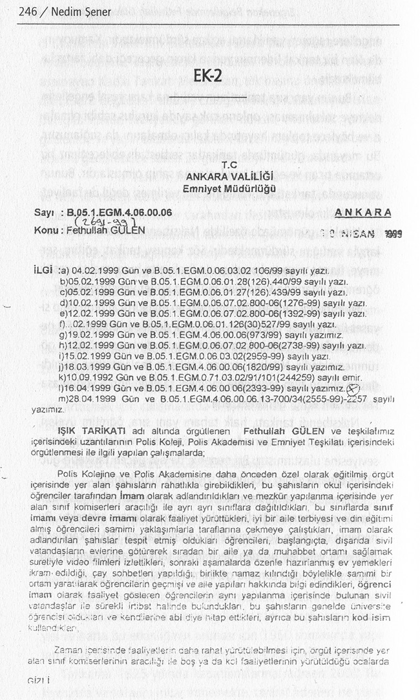
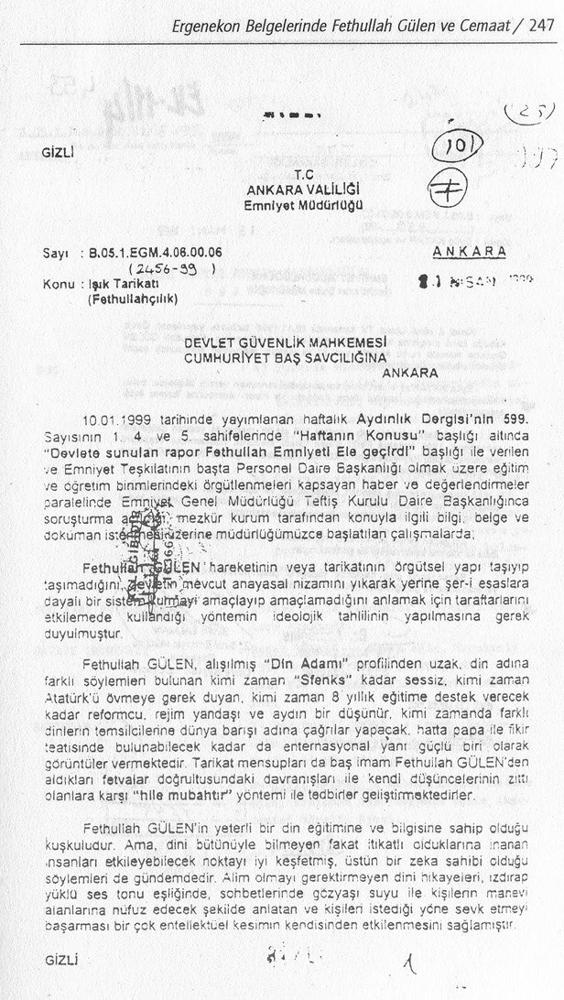
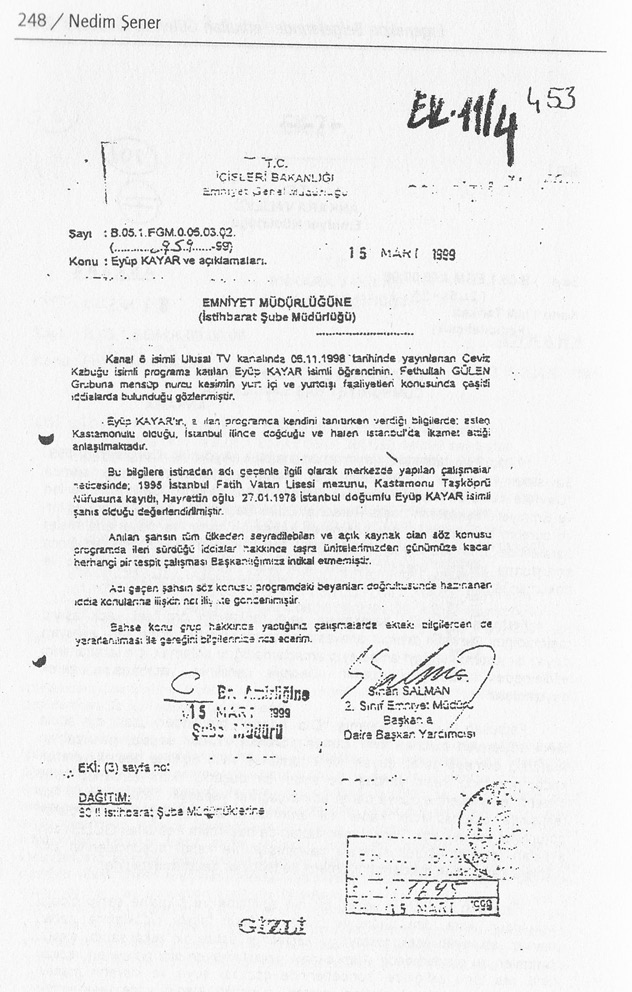
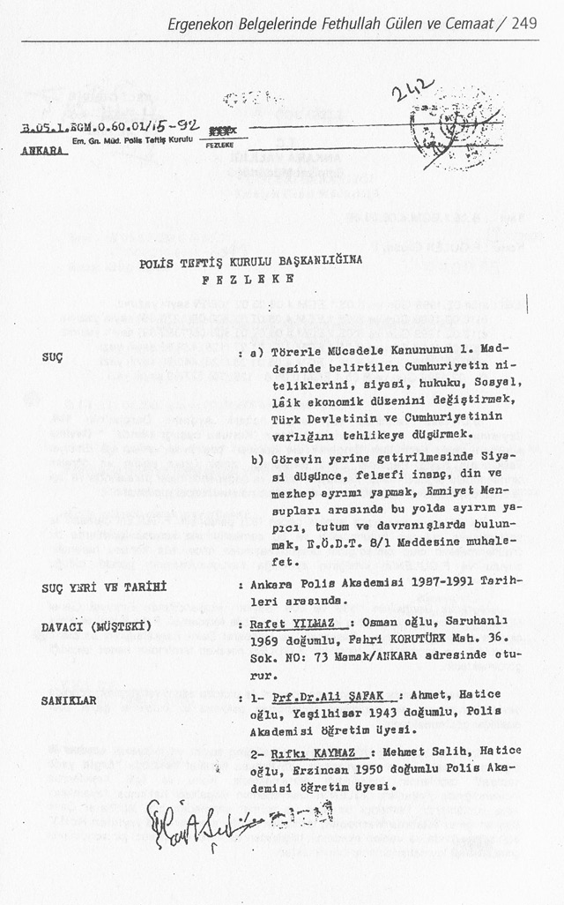
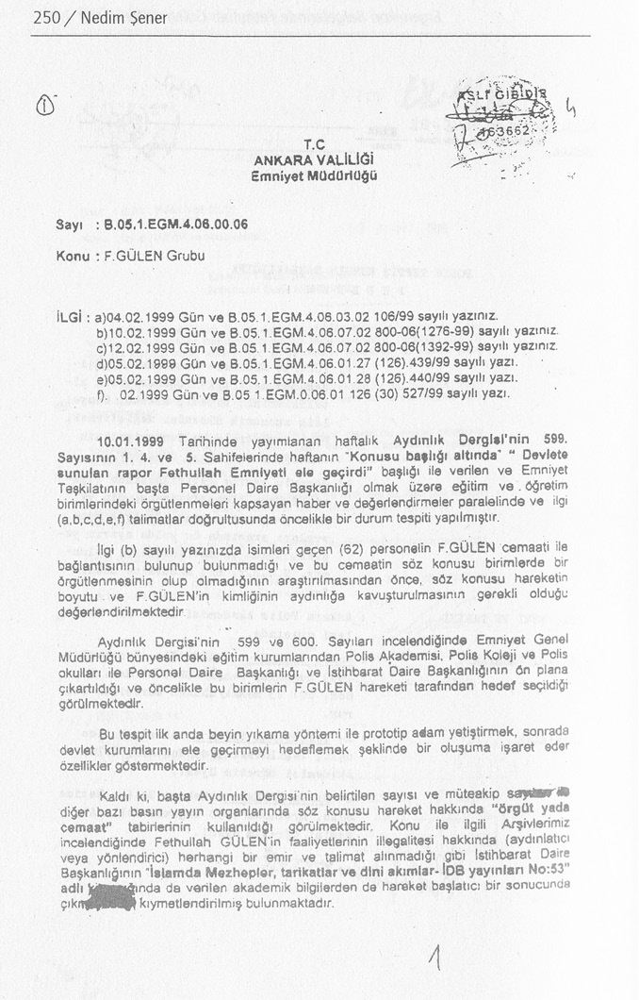
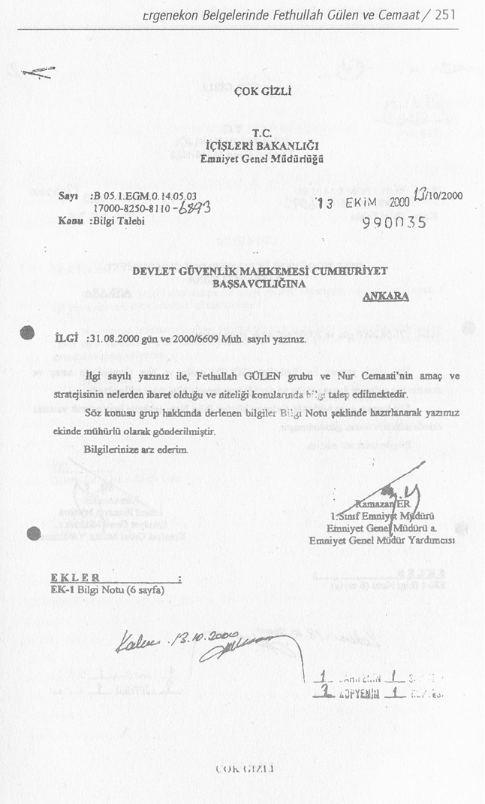
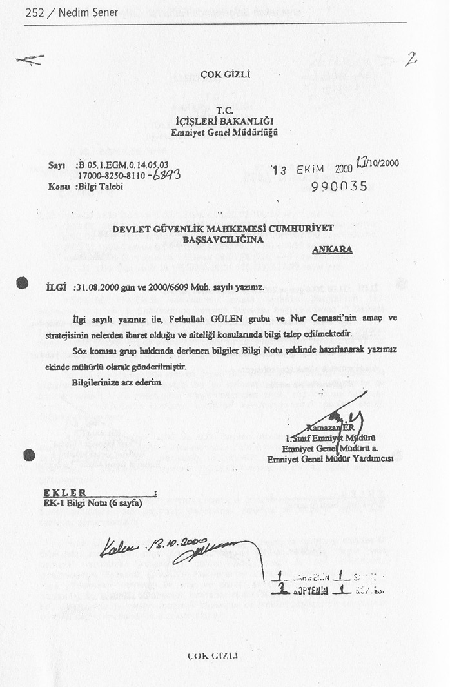
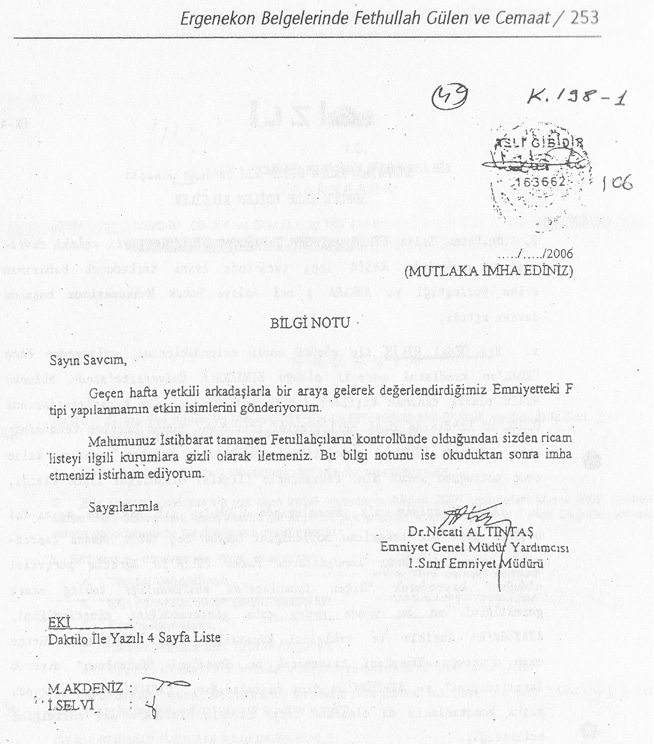
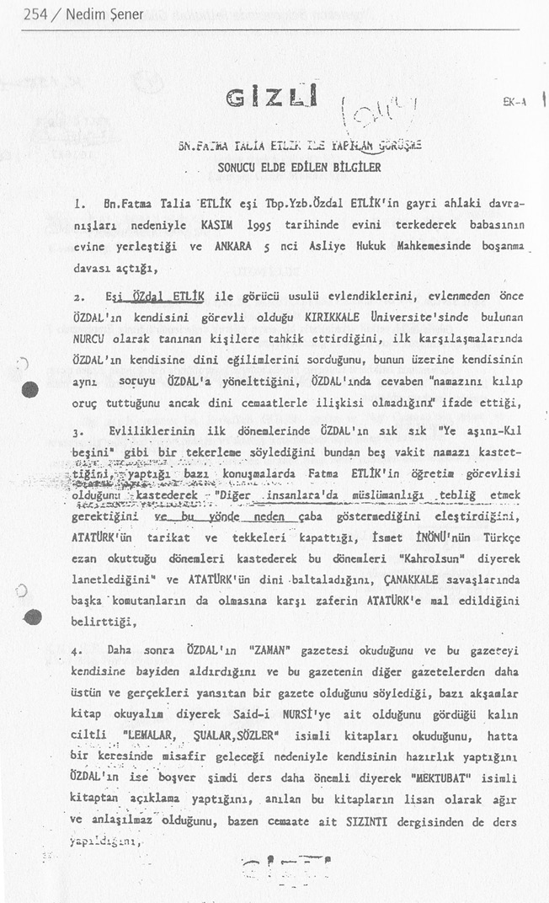
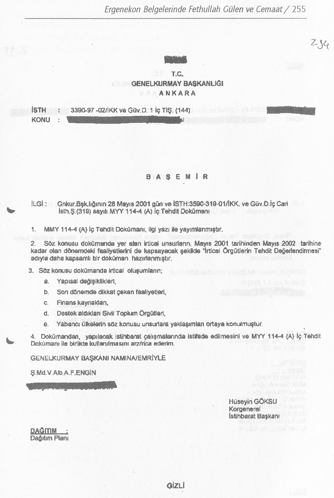
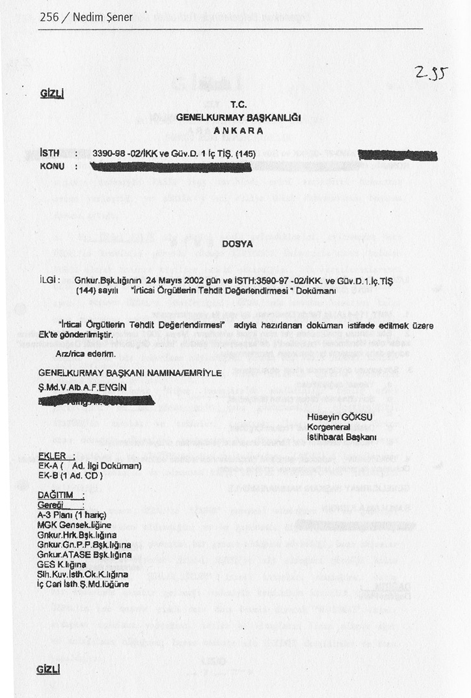